The working thread
Friday 25 September 2026, 21:04 (PDT), for 6 h 40 min. 438 steps, 173 images looked at.
This is the student's own thread: the brief it was given, what it wrote, each step it took, and every image it opened, shown as it saw it (possibly downscaled). Some of these images were later overwritten in the study folder, so this is the only place they survive. The raw record is the transcript.
The brief
You are a student learning to paint one thing, in the painterly pixel-art language of Mark Ferrari: willow scrub (the low, many-stemmed shrubby willows that line braided rivers and colonise gravel bars; narrow leaves, often silvery or golden in autumn, growing in clumps and bands).
How you learn: build up, one form at a time, in stages. Don't move to the next stage until the current one is truly convincing to your own eye. Look at every image you make with the Read tool.
- One bush as a mass, in greyscale: a rounded, lumpy form lit from several directions. Its light and shadow families, the dark interior, reflected light, and the dark base where it meets the gravel. Then its edge: a leafy mass has no hard outline; its boundary is where the texture ends, a fringe of leaf clusters and gaps.
- Stems and leaves: the many thin stems (narrow forms, so drawn as clean pixel runs) and the leaf clusters as marks. How leaf marks gather in the light and simplify in shadow.
- Colour: the silvery-green undersides against darker green, and autumn gold. Light as hue shift.
- Clumps and bands: several bushes nestled and overlapping, separated by value, and a band of scrub along a bank. How it reads from close to far, down to a few pixels.
- In context: scrub against gravel bars, against water with its reflection, and at the edge of grass.
- Sheets: your technique as code with parameters (size, density, season, light and hour, camera angle low or 30° oblique, distance, seed), swept on labelled sheets. Every cell should look painted.
At every stage, make side-by-sides: a photo crop | your pixels | the nearest thing in Ferrari's work, at 8×. His shrubs and foliage are in his scenes in ~/work/pixelart-studies/shared/refs (the mossy forest pool especially) and pedagogy/master-copy/ref/lw/. The forest-floor study's close reading of his foliage and moss is in ~/work/pixelart-studies/forest-floor/POST.md.
Photos:
- ~/work/pixelart-studies/transfer/refs/braided_willow_*;
- more via
python3 ~/work/pixelart-studies/tools/imgfetch.py "willow scrub river bank" -n 12 -o refs --sheet(also "salix shrub close").
Background reading: what other students found about form and technique, in ~/work/pixelart-studies/SYNTHESIS.md and pedagogy/*/LESSONS.md.
Deliverables in ~/work/pixelart-studies/elements/willow/:
- LESSONS.md: each stage with its images, what you learned, and an honest comparison;
- the technique code;
- the stage images;
- the sheets.
Read anywhere under ~/work/pixelart-studies/, write only in your folder. Resources:
nice -n 10, at most 4 threads. Take the time mastery takes.
The thread
Bash: Explore studies directory
cd ~/work/pixelart-studies; ls; ls elements 2>/dev/null; ls elements/* | head -50; ls shared/refs | head -50; ls pedagogy; ls pedagogy/master-copy/ref/lw | head; ls transfer/refs | grep -i willow; wc -l SYNTHESIS.md forest-floor/POST.md
# output:
SYNTHESIS.md
aerial
braid
elements
forest-floor
grass
massing
moodboards
pedagogy
rock
shared
sky
snow
tools
transfer
water
channel
cobbles
driftwood
willow
elements/channel:
elements/cobbles:
elements/driftwood:
elements/willow:
ferrari_alpine_tarn_dusk.png
ferrari_mossy_forest_pool.png
ferrari_snow_forest_boulders.webp
analysis
atelier
master-copy
observation
shared
V01.json
V01.png
V02.json
V02.png
V09.json
V09.png
V11AM.json
V11AM.png
V13.json
V13.png
braided_willow_salix.jpg
braided_willow_scrub.jpg
107 SYNTHESIS.md
278 forest-floor/POST.md
385 totalBash: Read synthesis and list tools
cd ~/work/pixelart-studies; cat SYNTHESIS.md; ls pedagogy/*/; ls tools; ls elements/willow
# output:
# Painter core: one method (draft 1)
Synthesized by the integrator from the four pedagogy arms (`pedagogy/{atelier,master-copy,analysis,observation}`) and, secondarily, the seven topic studies.
Each rule is tagged:
- **[shown]**: a student implemented it and it visibly works in their sheets.
- **[measured]**: a student measured it in Ferrari's pixels or in photos.
- **[mine]**: my inference, not yet built by anyone.
This isn't a committee of special strengths. The arms converged on one machine independently, and the draft describes that machine.
## The convergence
Working alone, all four arms landed on the same architecture:
- **Paint indices, not colours.**
- Master copy found that Ferrari's index map is literally a form map: indices are bins of surface direction, and "the palette is the light". The same index image serves morning and afternoon. [measured]
- Atelier paints in "step space" along one material ramp. [shown]
- Sky found that two of Ferrari's hour pairs are identical pixels. [measured]
- Analysis found that value is the structure and colour is temperature and distance. [measured]
- **Two light families that never touch.** Atelier's terminator rule [shown], analysis's three-value picture plan with every mass kept inside its group [measured], and rock's lit and shadow groups [shown] are the same idea at two scales.
- **Dither mixes only adjacent steps of one ramp.** All four arms use it. Ordered 2×2 dither suits hard or precise things (rock, sky seams, water rows); random or diffusion dither suits organic texture (lawns, foam). Master copy measured this [measured]; analysis cites Ferrari's GDC talk for the same split.
- **The medium's own geometry.** Contours are clean runs (1:1, 2:1, 4-4-4 flats), measured on Ferrari's crests by analysis and atelier [measured]. Atelier redraws every major contour by snapping edges to clean ratios [shown]. Masses meet level ground or water in a dead-flat run with a 1-px darker contact line [measured: analysis, observation].
- **Clean runs are for narrow forms; mass boundaries are where texture ends.** David's correction (2026-09-25): the clean-run rule came from the *grass strokes*. It applies to anything narrow, drawn as a line: blades, cracks, joints, twigs, conifer spires, stems, a snowline drawn as a stroke. A 1–2 px form must be a clean run of 1:1, 2:1 or 4-4-4 steps, or it reads as noise [measured: analysis, atelier; the runs they found on crests are this rule too, since a crest line against the sky is drawn as a stroke]. A *mass outline* isn't drawn as a line. A textured mass (grass mound, foliage, scrub, scree) ends in a fringe: blade tips break its top, dark holes open along the crest with lit peaks just behind, and the form turns through mark density [measured: master copy C2 and C3, "far crest has dark holes (40%)"; C4, "the silhouette against the water is not an edge but a fringe"]. **Failure seen:** master copy's final painter drew its hillock boundary as a clean contour and gBash: Read forest-floor POST and list refs
cd ~/work/pixelart-studies; cat forest-floor/POST.md; ls tools; ls pedagogy/master-copy/ref pedagogy/master-copy/ref/lw pedagogy/master-copy/crops | head -60 # output: # How to pixel-art the forest floor *Moss, ferns, roots, leaf litter, mossy rocks, dappled light, and how trees meet the ground: a method you can run as a program.* Everything in this post was painted by `floorpaint.py` (Python, numpy + PIL, scipy used for two filters), about 2,300 lines in this folder. It reads a scene spec (what is where, how wet, how open the canopy is, where the sun is, which camera) and paints a 640×360 frame in a 35–58 colour palette it builds for that scene. You get the images with `python floorpaint.py plates`, `sheets`, `figures` and `failures`. The method comes before the program, though, and the method is the subject here. The one-sentence version: > **The forest floor is not a surface. It is a heap of lit masses laid down back-to-front on a void. Each mass is a set of clusters. In shade the clusters make a soft dithered blanket. In a pool of sun they break into lit strata. Trees are not placed on this heap; they generate the part of it around their feet.** The rest of the post explains that sentence, shows where it came from, and shows where it still fails. --- ## 1. What the references teach ### Mark Ferrari, *mossy forest pool*: read at the pixel The reference in `shared/refs` is a 2× upscale. I took every other pixel to recover the native 622×460 image (`refs/ferrari_pool_native.png`, 155 colours). Then I looked at it at 4× in several places.  **Moss on rock grows in strata, not tufts.** The moss is a lace of short horizontal strands, 2–3 px tall and 4–12 px long. It is solid on the top of the boulder and breaks up down the flanks. The mauve rock shows through in lens-shaped slots. Each strand has a yellow upper lip and an olive body, and it casts a one-pixel dark tuck onto the rock below. The strands wrap the dome parallel to its outline, like contour lines, so on the flanks they tilt. My first versions stacked round tufts like fish scales. They read as lettuce, not moss. **Checkerboard dither does most of the rendering.** Nearly every smooth transition, on rock, moss, water, bark and fog, is a 50% checker between two neighbouring ramp steps. That gives the Amiga "airbrush" softness. Flat per-cluster colour, which I also tried first, looks blocky and scaly next to it.  **Shadow is soft; detail lives in the light.** In the shadowed root mass the moss has no tuft texture at all. It is a blanket: a clean silhouette, a two- or three-tone dithered gradient, and tapered drapes hanging off the undersides. Texture appears only where sun falls. That turned out to be the most important rule in the whole method. **The picture is dark.** I measured the luminance histograms. Ferrari's median pixel is 17/255 and his 25th percentile is 11: a quarter of the frame is nearly black void. My early plates had a median of 27 and almost no true blacks, and they read as murk. Things look lit beca
Bash: Inspect refs sizes
cd ~/work/pixelart-studies; ls pedagogy/master-copy/ref/lw; ls forest-floor/refs; python3 -c "
from PIL import Image;import glob
for f in glob.glob('transfer/refs/braided_willow*')+glob.glob('shared/refs/*')+glob.glob('pedagogy/master-copy/ref/lw/*.png')+['forest-floor/refs/ferrari_pool_native.png']:
im=Image.open(f);print(f,im.size,im.mode)
"; head -c 600 pedagogy/master-copy/ref/lw/V01.json
# output:
V01.json
V01.png
V02.json
V02.png
V09.json
V09.png
V11AM.json
V11AM.png
V13.json
V13.png
V14.json
V14.png
V16.json
V16.png
V16PM.json
V16PM.png
V19.json
V19.png
V19PM.json
V19PM.png
V29PM.json
V29PM.png
V30.json
V30.png
ferrari_pool_native.png
ferrari_study_base.png
ferrari_study_canopy.png
ferrari_study_clover.png
ferrari_study_rocks.png
transfer/refs/braided_willow_salix.jpg (1280, 960) RGB
transfer/refs/braided_willow_scrub.jpg (1280, 853) RGB
shared/refs/ferrari_snow_forest_boulders.webp (1230, 930) RGB
shared/refs/ferrari_mossy_forest_pool.png (1244, 920) RGBA
shared/refs/ferrari_alpine_tarn_dusk.png (1268, 938) RGBA
pedagogy/master-copy/ref/lw/V14.png (640, 480) RGB
pedagogy/master-copy/ref/lw/V01.png (640, 480) RGB
pedagogy/master-copy/ref/lw/V02.png (640, 480) RGB
pedagogy/master-copy/ref/lw/V16.png (640, 480) RGB
pedagogy/master-copy/ref/lw/V13.png (640, 480) RGB
pedagogy/master-copy/ref/lw/V29PM.png (640, 480) RGB
pedagogy/master-copy/ref/lw/V16PM.png (640, 480) RGB
pedagogy/master-copy/ref/lw/V11AM.png (640, 480) RGB
pedagogy/master-copy/ref/lw/V09.png (640, 480) RGB
pedagogy/master-copy/ref/lw/V19PM.png (640, 480) RGB
pedagogy/master-copy/ref/lw/V30.png (640, 480) RGB
pedagogy/master-copy/ref/lw/V19.png (640, 480) RGB
forest-floor/refs/ferrari_pool_native.png (622, 460) RGB
{filename:'V01.LBM',width:640,height:480,colors:[[0,0,0],[35,23,87],[31,19,103],[19,15,115],[23,23,127],[31,31,143],[31,43,159],[19,55,175],[15,75,183],[11,99,183],[31,111,187],[47,119,191],[75,127,191],[83,135,191],[99,139,195],[107,147,191],[123,151,195],[139,155,199],[151,163,203],[175,171,207],[195,175,211],[211,187,207],[231,195,203],[243,203,199],[247,211,191],[247,219,167],[251,223,139],[251,219,135],[255,211,119],[255,191,99],[255,187,119],[255,155,127],[255,127,171],[207,135,147],[195,127,151],[183,119,155],[167,111,151],[131,87,143],[95,67,127],[67,59,111],[19,31,67],[7,11,39],[0,0,1Let me look at the photos and Ferrari scenes.
Read: transfer/refs/braided_willow_scrub.jpg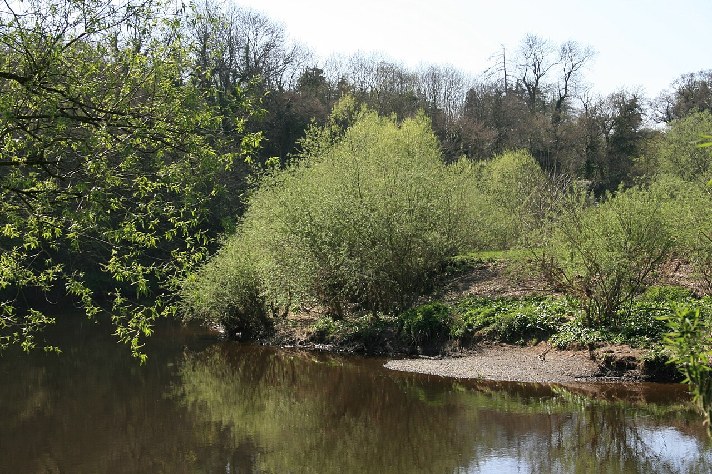
1. transfer/refs/braided_willow_scrub.jpgRead: transfer/refs/braided_willow_salix.jpg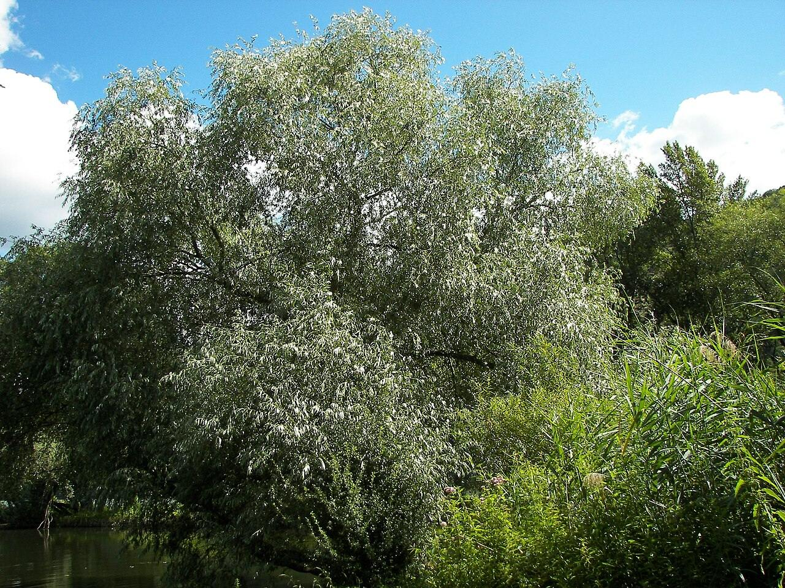
2. transfer/refs/braided_willow_salix.jpgBash: Fetch willow photos
cd ~/work/pixelart-studies/elements/willow; mkdir -p refs; head -40 ../../tools/imgfetch.py; nice -n 10 python3 ../../tools/imgfetch.py "willow scrub river bank" -n 12 -o refs --sheet 2>&1 | tail -5; nice -n 10 python3 ../../tools/imgfetch.py "salix shrub close" -n 12 -o refs --sheet 2>&1 | tail -5; ls refs
# output:
#!/usr/bin/env python3
"""imgfetch: fast, polite reference-image sourcing (Wikimedia Commons + Openverse).
python3 imgfetch.py "cinder cone scoria slope" -n 12 -o refs/cinder
python3 imgfetch.py -f queries.txt -n 8 -o refs # one query per line; subdir per query
options: --src commons,openverse --width 1200 --sheet (writes <out>/_sheet.jpg)
Writes images plus <out>/sources.tsv (file, title, license, author, page url).
Cached: files already present are skipped. Handles 429/5xx with Retry-After backoff.
Parallel downloads (4 workers) with a shared per-host rate limiter (~3 req/s; Wikimedia's media
host is kept to 1 per 2 s and slows further on any 429, since it throttles hard per IP after bursts).
Openverse (mostly Flickr-hosted CC images) is the primary source because it stays fast.
"""
import argparse, concurrent.futures as cf, json, os, re, sys, threading, time, urllib.error, urllib.parse, urllib.request
UA = "pixelart-studies-imgfetch/1.0 (research; contact: local)"
_locks = {}; _last = {}; _glock = threading.Lock()
SLOW_HOSTS = {"upload.wikimedia.org": 2.0} # Wikimedia media host: ~1 req/s or it 429s
def _throttle(host, min_gap=0.34):
min_gap = SLOW_HOSTS.get(host, min_gap)
with _glock:
lk = _locks.setdefault(host, threading.Lock())
with lk:
dt = time.time() - _last.get(host, 0)
if dt < min_gap:
time.sleep(min_gap - dt)
_last[host] = time.time()
def get(url, tries=4, timeout=25):
host = urllib.parse.urlparse(url).netloc
if host == "upload.wikimedia.org":
tries = 2 # fail fast; other sources fill in
for i in range(tries):
_throttle(host)
try:
req = urllib.request.Request(url, headers={"User-Agent": UA})
return urllib.request.urlopen(req, timeout=timeout).read()
except urllib.error.HTTPError as e:
'willow scrub river bank': 12 images -> refs
download failed: HTTP Error 429: Too many requests - please contact noc@wikimedia.org to discuss a less disruptive approach or instead use thumbnail images in sizes listed on https://w.wiki/GHai. (0c640b1)
'salix shrub close': 11 images -> refs
_sheet.jpg
commons_Riparian_forest_Angeren_jpg_8d30cd00.jpg
commons_Salicetalia_jpg_d04edc90.jpg
commons_Salix_Willow_growing_on_pumice_debris_Flickr_bre_2c6e7553.jpg
commons_Salix_alba_018_jpg_97338b2b.jpg
commons_Salix_eriocephala_var_watsonii_4992914241_jpg_300caa7e.jpg
commons_Salix_fragilis_f_vitellina_Chermesina_jpg_107f14fe.jpg
commons_Salix_triandra_Stara_Desna_Zazymya_jpg_d0d308c4.jpg
commons_Salix_tweedyi_specimen_jpg_34c2de52.jpg
commons_Trees_and_shrubs_of_Prospect_park_1906_147813608_e300ba2c.jpg
commons_Trees_and_shrubs_of_Prospect_park_1906_147833853_625171cb.jpg
commons_Willow_scrub_north_of_Posewald_2021_09_12_01_jpg_60063d0b.jpg
commons_Willow_scrub_north_of_Posewald_2021_09_12_02_jpg_aa769f32.jpg
openverse_Coventry_s_Other_River_The_Sowe_Longford_Park_to_0480fafb.jpg
openverse_Grayleaf_willow_4b02Bash: Fetch more refs and build contact sheet
cd ~/work/pixelart-studies/elements/willow; for q in "braided river willows gravel bar" "willow shrubs autumn river" "grey willow scrub gravel"; do nice -n 10 python3 ../../tools/imgfetch.py "$q" -n 10 -o refs/more --src openverse 2>&1 | tail -2; done; ls refs/more | wc -l; python3 - <<'E'
from PIL import Image; import glob,math
fs=sorted(glob.glob('refs/*.jpg')+glob.glob('refs/more/*.jpg')); fs=[f for f in fs if '_sheet' not in f]
W=240;H=180;cols=8;rows=math.ceil(len(fs)/cols)
sh=Image.new('RGB',(cols*W,rows*H))
for i,f in enumerate(fs):
im=Image.open(f).convert('RGB');im.thumbnail((W,H));sh.paste(im,((i%cols)*W,(i//cols)*H))
sh.save('refs/contact.jpg');print(len(fs))
for i,f in enumerate(fs):print(i,f)
E
# output:
download failed: HTTP Error 429: Too many requests - please contact noc@wikimedia.org to discuss a less disruptive approach or instead use thumbnail images in sizes listed on https://w.wiki/GHai. (0c640b1)
'braided river willows gravel bar': 9 images -> refs/more
'willow shrubs autumn river': 10 images -> refs/more
'grey willow scrub gravel': 10 images -> refs/more
30
52
0 refs/commons_Riparian_forest_Angeren_jpg_8d30cd00.jpg
1 refs/commons_Salicetalia_jpg_d04edc90.jpg
2 refs/commons_Salix_Willow_growing_on_pumice_debris_Flickr_bre_2c6e7553.jpg
3 refs/commons_Salix_alba_018_jpg_97338b2b.jpg
4 refs/commons_Salix_eriocephala_var_watsonii_4992914241_jpg_300caa7e.jpg
5 refs/commons_Salix_fragilis_f_vitellina_Chermesina_jpg_107f14fe.jpg
6 refs/commons_Salix_triandra_Stara_Desna_Zazymya_jpg_d0d308c4.jpg
7 refs/commons_Salix_tweedyi_specimen_jpg_34c2de52.jpg
8 refs/commons_Trees_and_shrubs_of_Prospect_park_1906_147813608_e300ba2c.jpg
9 refs/commons_Trees_and_shrubs_of_Prospect_park_1906_147833853_625171cb.jpg
10 refs/commons_Willow_scrub_north_of_Posewald_2021_09_12_01_jpg_60063d0b.jpg
11 refs/commons_Willow_scrub_north_of_Posewald_2021_09_12_02_jpg_aa769f32.jpg
12 refs/more/openverse_Autumn_in_Grand_Tetons_7b6f5903.jpg
13 refs/more/openverse_Be_Careful_79819297.jpg
14 refs/more/openverse_Braided_River_e46aec04.jpg
15 refs/more/openverse_Braided_Rivers_54953c7a.jpg
16 refs/more/openverse_Braided_river_239b7b7b.jpg
17 refs/more/openverse_Early_Tooth_Striped_Moth_35329106.jpg
18 refs/more/openverse_Earthquake_Lake_River_of_Change_2e52531a.jpg
19 refs/more/openverse_Eastern_False_Willow_1a60e99c.jpg
20 refs/more/openverse_Flying_Over_a_Braided_River_c011c5bd.jpg
21 refs/more/openverse_Grey_Skys_over_the_Lake_bdcbbe6a.jpg
22 refs/more/openverse_Grey_Willow_16_10_Wallpaper_ede00f7c.jpg
23 refs/more/openverse_Grey_Willow_Knocked_over_by_high_winds_and_heavi_6cbb9fe1.jpg
24 refs/more/openverse_Grey_Willow_Salix_cinerea_bceb25bc.jpg
25 refs/more/openverse_Grey_willow_Salix_cinerea_illustration_from_Trai_6193fbd5.jpg
26 refs/more/openverse_Hayabusa_Design_Birch_Elegant_on_Wind_F3aWT_t212_e60966fe.jpg
27 refs/more/openverse_In_the_Southern_Alps_Spring_weeping_willows_and__c70e92b3.jpg
28 refs/more/openverse_Kaapse_Tiptol_8404c957.jpg
29 refs/more/openverse_Moss_and_grey_willow_490901f8.jpg
30 refs/more/openverse_Rio_Grande_in_White_Rock_Canyon_3000a1bd.jpg
31 refs/more/openverse_River_Mole_at_Thorncroft_306d3a39.jpg
32 refs/more/openverse_Salix_cinerea_Grey_Willow_8c374187.jpg
33 refs/more/openverse_Southern_Alps_in_New_Zealand_Spring_Willow_folia_ff43dd46.jpg
34 refs/more/openverse_Spring_Time_Grey_Willow_Catkins_e1f39586.jpg
35 refs/more/openverse_The_Late_Fall_of_2022_Old_Ottawa_East_Brantwood__c83bcc18.jpg
36 refs/more/openverse_The_Late_Fall_of_2022_Old_Ottawa_East_Brantwood__d0e3b896.jpg
37 refs/more/openverse_When_black_cats_prowl_and_pumpkins_gleam_May_luc_b719e482.jpg
38 refs/more/openverse_Willow_Trauma_advice_appreciated_e3e3d0e6.jpg
39 refs/moreRead: elements/willow/refs/contact.jpg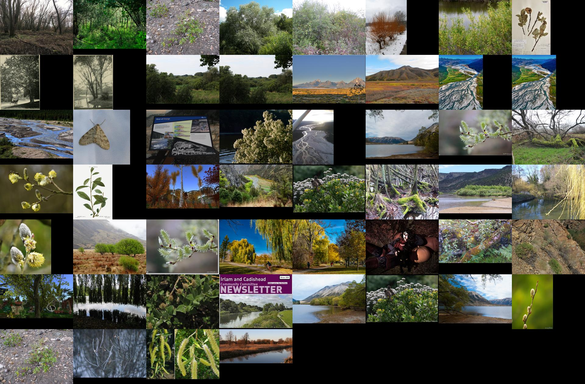
3. elements/willow/refs/contact.jpgRead: elements/willow/refs/more/openverse_Rio_Grande_in_White_Rock_Canyon_3000a1bd.jpg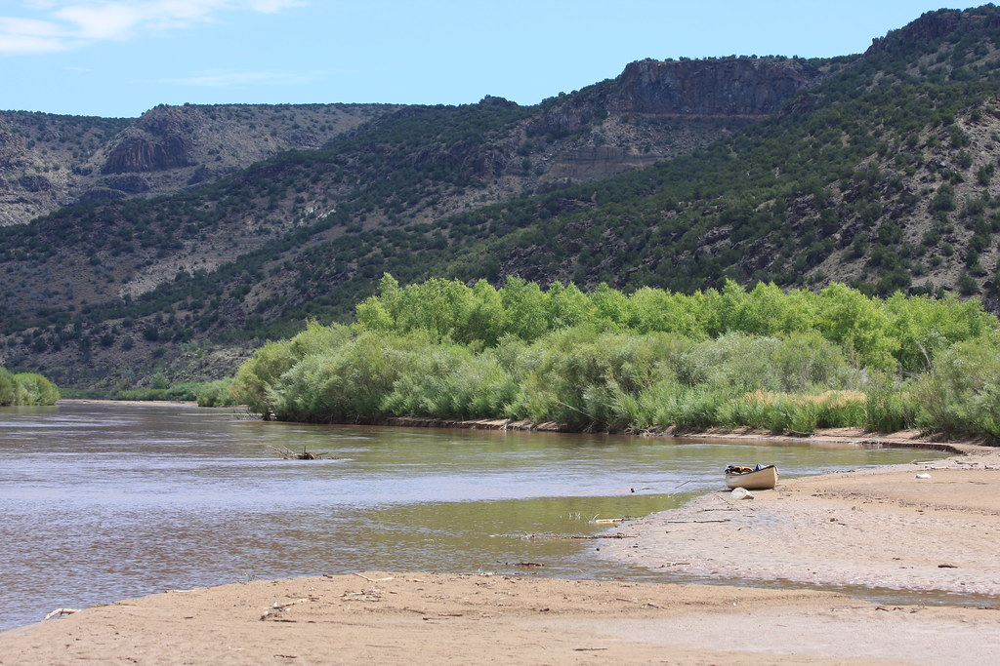
4. elements/willow/refs/more/openverse_Rio_Grande_in_White_Rock_Canyon_3000a1bd.jpgRead: elements/willow/refs/commons_Salix_eriocephala_var_watsonii_4992914241_jpg_300caa7e.jpg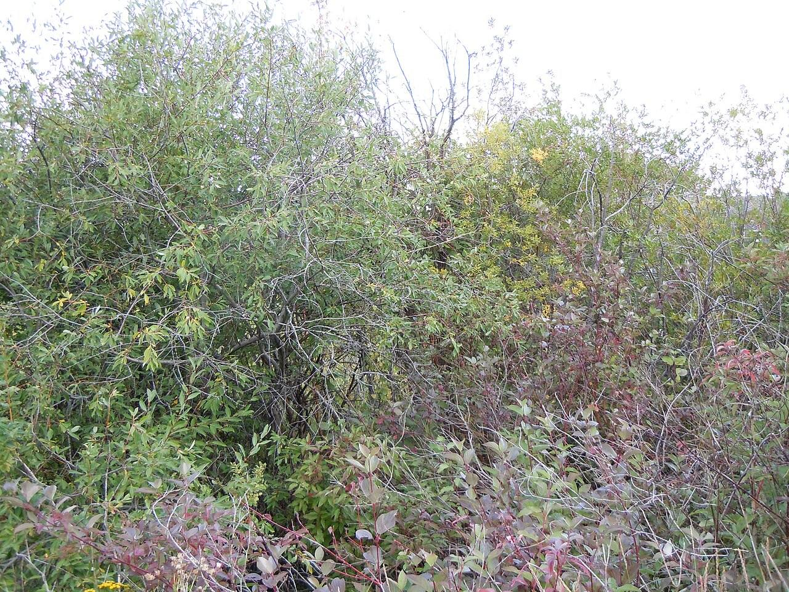
5. elements/willow/refs/commons_Salix_eriocephala_var_watsonii_4992914241_jpg_300caa7e.jpgRead: elements/willow/refs/commons_Salix_triandra_Stara_Desna_Zazymya_jpg_d0d308c4.jpg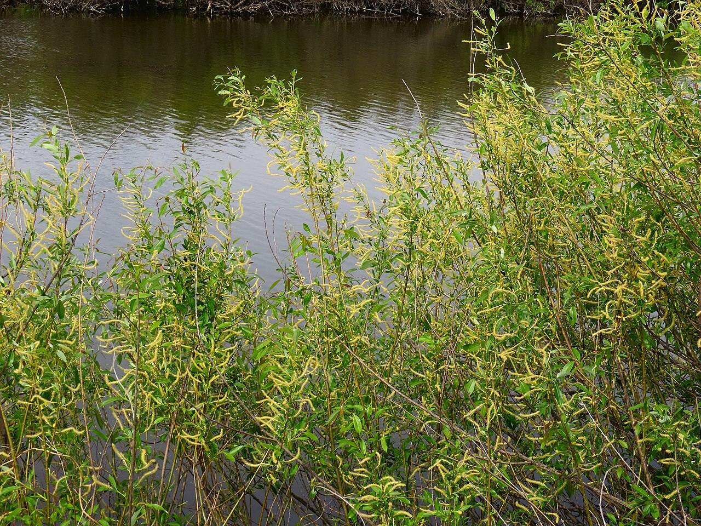
6. elements/willow/refs/commons_Salix_triandra_Stara_Desna_Zazymya_jpg_d0d308c4.jpgRead: elements/willow/refs/commons_Willow_scrub_north_of_Posewald_2021_09_12_01_jpg_60063d0b.jpg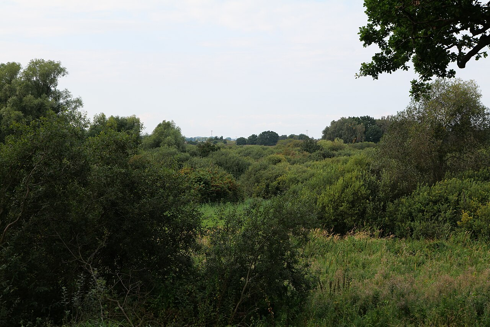
7. elements/willow/refs/commons_Willow_scrub_north_of_Posewald_2021_09_12_01_jpg_60063d0b.jpgRead: elements/willow/refs/more/openverse_Southern_Alps_in_New_Zealand_Spring_Willow_folia_ff43dd46.jpg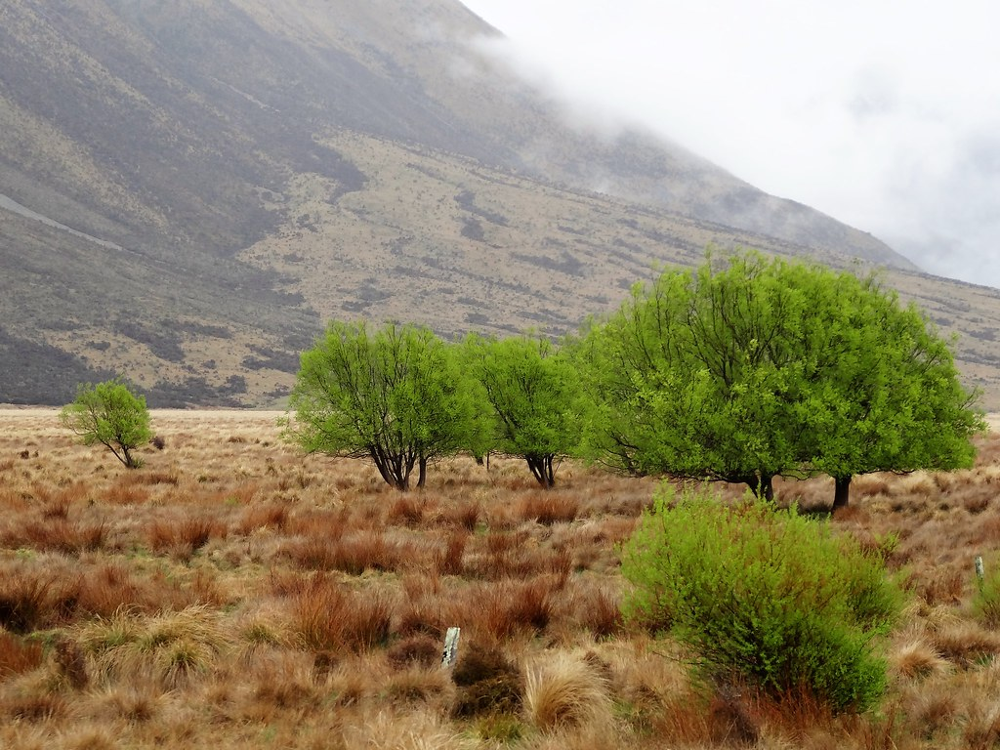
8. elements/willow/refs/more/openverse_Southern_Alps_in_New_Zealand_Spring_Willow_folia_ff43dd46.jpgRead: elements/willow/refs/more/openverse_Be_Careful_79819297.jpg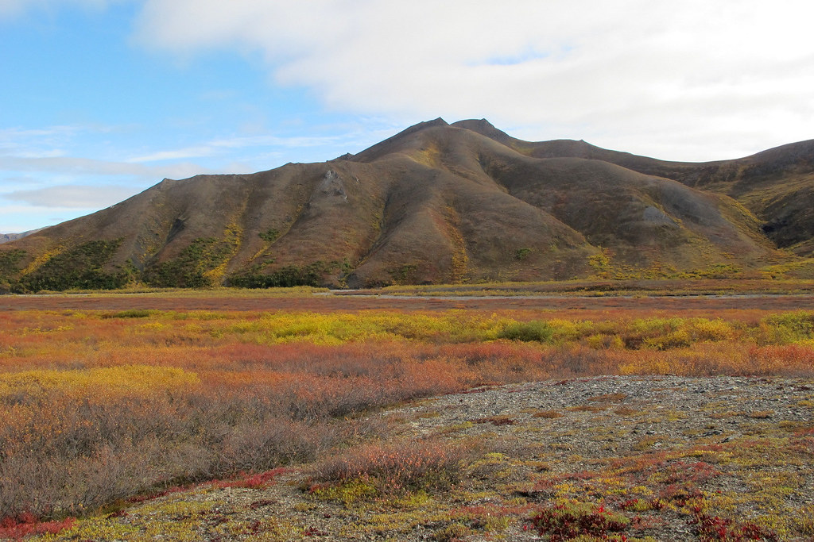
9. elements/willow/refs/more/openverse_Be_Careful_79819297.jpgBash: Contact sheet of LW refs, grep lessons
cd ~/work/pixelart-studies; python3 - <<'E'
from PIL import Image; import glob
fs=sorted(glob.glob('pedagogy/master-copy/ref/lw/*.png'))
sh=Image.new('RGB',(4*640,4*480))
for i,f in enumerate(fs): sh.paste(Image.open(f).convert('RGB'),((i%4)*640,(i//4)*480))
sh.resize((1920,1440)).save('(manager scratchpad)/lw.png'); print(fs)
E
grep -n -i "shrub\|bush\|foliage\|leaf" pedagogy/*/LESSONS.md | head -40
# output:
['pedagogy/master-copy/ref/lw/V01.png', 'pedagogy/master-copy/ref/lw/V02.png', 'pedagogy/master-copy/ref/lw/V09.png', 'pedagogy/master-copy/ref/lw/V11AM.png', 'pedagogy/master-copy/ref/lw/V13.png', 'pedagogy/master-copy/ref/lw/V14.png', 'pedagogy/master-copy/ref/lw/V16.png', 'pedagogy/master-copy/ref/lw/V16PM.png', 'pedagogy/master-copy/ref/lw/V19.png', 'pedagogy/master-copy/ref/lw/V19PM.png', 'pedagogy/master-copy/ref/lw/V29PM.png', 'pedagogy/master-copy/ref/lw/V30.png']Read: (manager scratchpad)/lw.png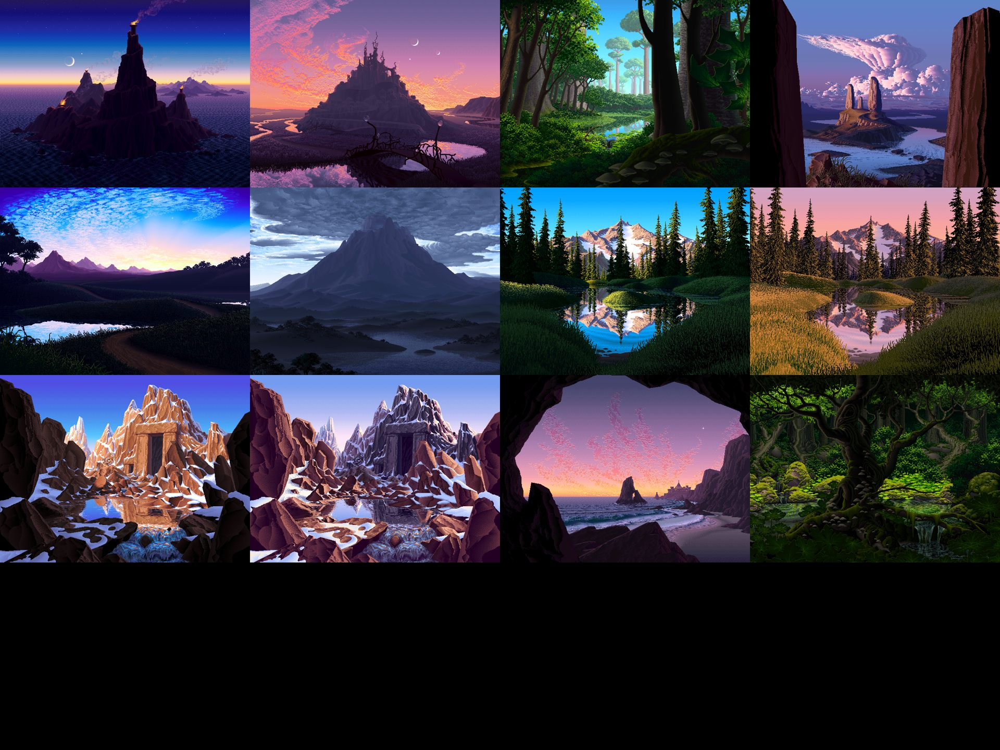
10. (manager scratchpad)/lw.pngBash: Upscale V09
cd ~/work/pixelart-studies; S=(manager scratchpad); python3 -c "
from PIL import Image
im=Image.open('pedagogy/master-copy/ref/lw/V09.png').convert('RGB')
im.resize((1280,960),Image.NEAREST).save('$S/v09x2.png')
"
# output:
(Bash completed with no output)Read: (manager scratchpad)/v09x2.png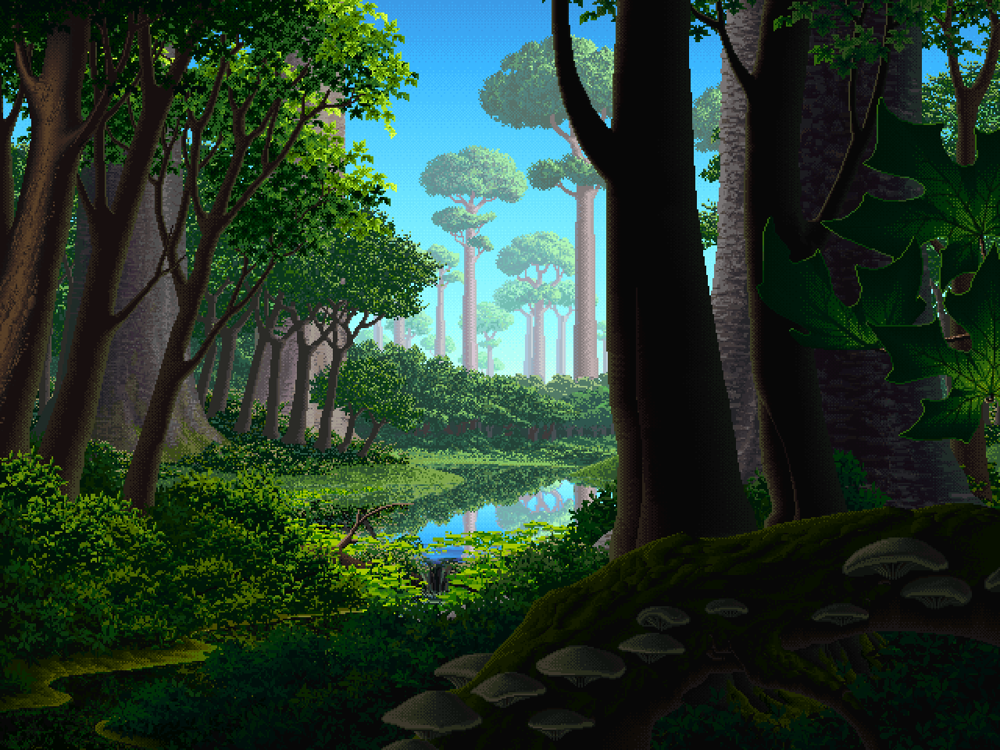
11. (manager scratchpad)/v09x2.pngBash: Crop V09 foliage regions
cd ~/work/pixelart-studies; S=(manager scratchpad); python3 -c "
from PIL import Image
im=Image.open('pedagogy/master-copy/ref/lw/V09.png').convert('RGB')
for n,b in [('a',(0,280,150,380)),('b',(215,215,395,290)),('c',(240,270,400,340)),('d',(170,130,280,230))]:
c=im.crop(b); c.resize((c.width*6,c.height*6),Image.NEAREST).save('$S/v09_'+n+'.png')
"
# output:
(Bash completed with no output)Read: (manager scratchpad)/v09_a.png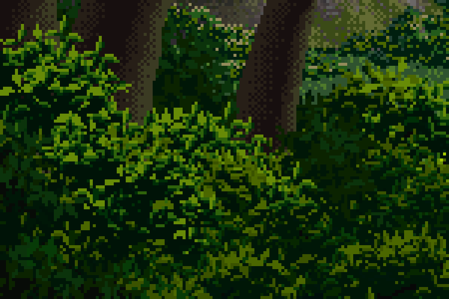
12. (manager scratchpad)/v09_a.pngRead: (manager scratchpad)/v09_b.png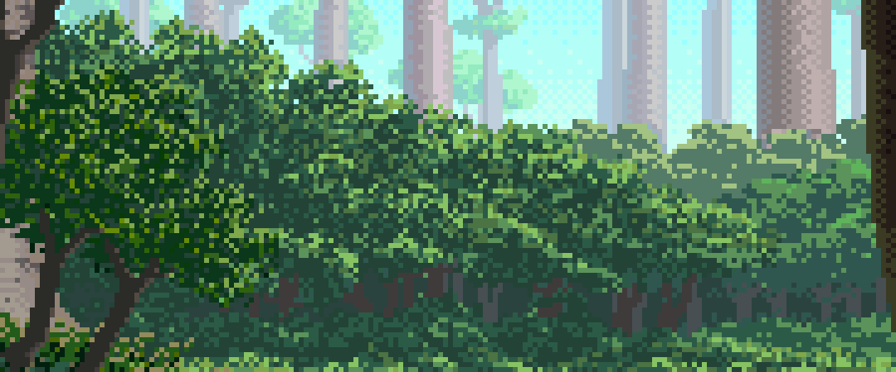
13. (manager scratchpad)/v09_b.pngRead: (manager scratchpad)/v09_c.png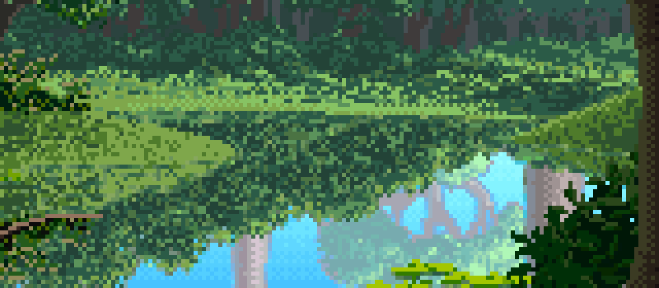
14. (manager scratchpad)/v09_c.pngRead: (manager scratchpad)/v09_d.png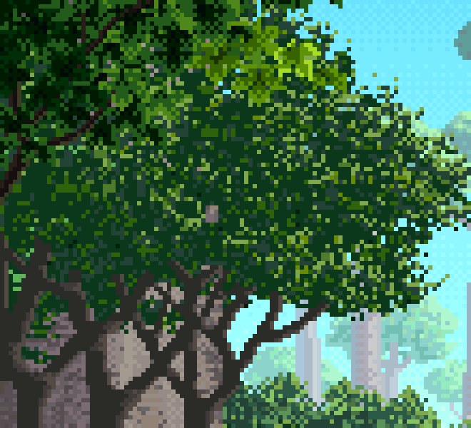
15. (manager scratchpad)/v09_d.pngBash: Lesson file outlines
cd ~/work/pixelart-studies/pedagogy; wc -l */LESSONS.md; grep -n "^#" master-copy/LESSONS.md atelier/LESSONS.md | head -60
# output:
541 analysis/LESSONS.md
211 atelier/LESSONS.md
219 master-copy/LESSONS.md
230 observation/LESSONS.md
1201 total
atelier/LESSONS.md:1:# Lessons from the atelier: a boulder by a tarn at dusk, after Mark Ferrari
atelier/LESSONS.md:23:## Stage 1: light on simple forms (greyscale)
atelier/LESSONS.md:48:## Stage 2: the boulder as form (greyscale)
atelier/LESSONS.md:67:## Stage 3: the setting as form (greyscale)
atelier/LESSONS.md:99:## Stage 4: material, still in grey, and line craft
atelier/LESSONS.md:119:### Line craft (the critic's note)
atelier/LESSONS.md:136:## Stage 5: colour last
atelier/LESSONS.md:155:## The method
atelier/LESSONS.md:189:## Honest comparison with the reference
master-copy/LESSONS.md:1:# Master copies after Mark Ferrari: a boulder at a tarn, at dusk
master-copy/LESSONS.md:17:## 0. What the reference turned out to be, and the finding that set up the rest
master-copy/LESSONS.md:37:## 1. Tools for comparing (`src/compare.py`, `src/strandstats.py`)
master-copy/LESSONS.md:48:## 2. The copies
master-copy/LESSONS.md:50:### Copy 1: sky, lit rock face with snow, pines (`src/c1_sky_rock.py`, crop native (300,0,140,140))
master-copy/LESSONS.md:63:### Copy 2: the lit grass mound (the island) (`src/c2_mound.py`, crop (255,255,160,55))
master-copy/LESSONS.md:75:### Copy 3: the near sunlit bank (`src/c3_bank.py`, crop (0,250,150,219))
master-copy/LESSONS.md:91:### Copy 4: the water's edge and the shadow bank (`src/c4_water.py`, crop (250,330,200,139))
master-copy/LESSONS.md:107:### Copy 5: lit boulders (Mountain Stream, morning palette) (`src/c5_boulder.py`, V19 crop (225,250,130,75))
master-copy/LESSONS.md:121:## 3. The rules (what Ferrari does)
master-copy/LESSONS.md:154:## 4. The generalisation: `src/tarn.py`
master-copy/LESSONS.md:176:### Sheets (1× overview here; `_3x.png` beside each is the deliverable scale)
master-copy/LESSONS.md:190:## 5. An honest comparison with the reference
master-copy/LESSONS.md:217:## 6. The method, in one paragraphBash: Read key lesson sections
cd ~/work/pixelart-studies/pedagogy; sed -n 17,36p master-copy/LESSONS.md; sed -n 63,153p master-copy/LESSONS.md; sed -n 23,66p atelier/LESSONS.md # output: ## 0. What the reference turned out to be, and the finding that set up the rest The reference file is 1268×938. Run-length analysis shows it is an exact 2× upscale of a **634×469 native image with 172 colours**. It is Ferrari's **Mirror Pond** from *Living Worlds*, shown in a dusk palette. The original indexed data of the colour-cycling scenes is public. I fetched it from the Canvas Cycle demo (`effectgames.com/demos/canvascycle/images/*.LBM.json`; `src/lw2png.py`) for these scenes: Mirror Pond (Morning V16, Afternoon V16PM), Mountain Stream (V19, V19PM), Mountain Fortress Dusk, Seascape Sunset, Pond Ripples, Forest Edge, Mountain Storm, Island Fires, Approaching Storm and Deep Forest. The reference aligns with V16PM at offset (3,4). 86% of its pixels map one-to-one onto V16PM indices; the rest are colour-cycled water. **The finding: in both Mirror Pond and Mountain Stream, the morning and afternoon versions have identical index maps.** Only the palette differs. Light direction, time of day and colour temperature are all palette decisions. The picture itself, drawn in indices, is a *form map*: each index is a class of surface orientation within a material. On the Mirror Pond island, for example, four classes run across the mound. In the morning palette class 74 is yellow and lit. In the afternoon palette class 77 is the lit ochre and 74 becomes the far-side reflected light (`crops/p_island_am_pm.png`). In Mountain Stream the lit faces of the boulders flip from the tops (AM) to the right-facing planes (PM) without a single pixel changing (`crops/p_c5_am_pm.png`). That gave me a method as well as a subject. For every copy I could read the index map directly: the class sequences, the transition statistics and the depth palettes. I did not have to guess them from RGB. What Ferrari has said about his process (sources: the EffectGames Q&A with Mark J. Ferrari, and an interview in CGMagazine): - He started dithering at Lucasfilm because 16 fixed colours were useless. A checkerboard of two colours "blurred into a solid third colour", "kind of like mixing paint". - He chooses the dither by effect. He uses *patterned* dither when he wants a surface "smooth and precise", *diffusion* dither for chaotic things such as collapsing surf, and no dither for solid bands. - He worked in Deluxe Paint II, relying on its palette management and stencils. He watched the colours cycle while he painted. - Each image took 3 days to 3 weeks at 8–14 hours a day, with palette space used with "strenuous economy". I could not get a transcript of his GDC 2016 talk (*8 Bit & '8 Bitish' Graphics – Outside the Box*), so nothing here depends on it. --- ### Copy 2: the lit grass mound (the island) (`src/c2_mound.py`, crop (255,255,160,55))  Read straight off the index map, the mound is **four form classes in a fixed spatial order: reflected light | core shadow | halftone | lit** (dusk colours (60,63,45) | (28,31,20) | (106,80,40) | (196,134,76)). The refl
Bash: Crop V30 mossy pool
cd ~/work/pixelart-studies; S=(manager scratchpad); python3 -c "
from PIL import Image
im=Image.open('pedagogy/master-copy/ref/lw/V30.png').convert('RGB')
im.resize((1280,960),Image.NEAREST).save('$S/v30x2.png')
for n,b in [('a',(420,180,560,280)),('b',(0,170,140,260)),('c',(520,260,640,340))]:
c=im.crop(b); c.resize((c.width*6,c.height*6),Image.NEAREST).save('$S/v30_'+n+'.png')
"
# output:
(Bash completed with no output)Read: (manager scratchpad)/v30x2.png 16. (manager scratchpad)/v30x2.png
16. (manager scratchpad)/v30x2.png
Bash: Crop V30 shrub
cd ~/work/pixelart-studies; S=(manager scratchpad); python3 -c "
from PIL import Image
im=Image.open('pedagogy/master-copy/ref/lw/V30.png').convert('RGB')
c=im.crop((330,130,500,250)); c.resize((c.width*6,c.height*6),Image.NEAREST).save('$S/v30_shrub.png')
"
# output:
(Bash completed with no output)Read: (manager scratchpad)/v30_shrub.png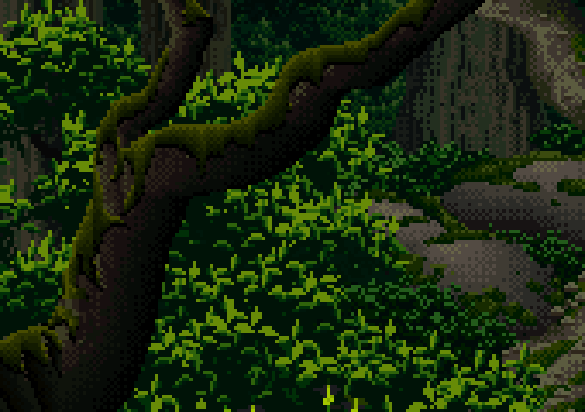
17. (manager scratchpad)/v30_shrub.pngBash: Check libs, cpu, disk
python3 -c "import numpy,scipy,PIL;print(numpy.__version__,scipy.__version__,PIL.__version__)"; sysctl -n hw.ncpu; df -h ~ | tail -1 # output: 1.26.4 1.14.0 11.1.0 14 /dev/disk3s5 926Gi 787Gi 95Gi 90% 9.9M 993M 1% /System/Volumes/Data
Bash: Peek at atelier core for conventions
cd ~/work/pixelart-studies/pedagogy/atelier; sed -n 1,80p core.py; grep -n "def " paint.py | head -40
# output:
"""Atelier core: a tiny numpy SDF ray-marcher plus the value/dither tools.
Everything here is about FORM and VALUE. Colour and material live elsewhere.
"""
import os
for _k in ("OMP_NUM_THREADS", "OPENBLAS_NUM_THREADS", "VECLIB_MAXIMUM_THREADS", "MKL_NUM_THREADS"):
os.environ[_k] = os.environ.get("ATELIER_THREADS", "1") # studio rule: <= 4 threads in total;
# I run up to 4 single-thread processes
import numpy as np
try:
from threadpoolctl import threadpool_limits
threadpool_limits(int(os.environ.get("ATELIER_THREADS", "1")))
except Exception:
pass
from PIL import Image
# ---------------------------------------------------------------- vectors
def norm(v):
v = np.asarray(v, dtype=np.float64)
return v / np.linalg.norm(v, axis=-1, keepdims=True)
def dot(a, b):
return np.sum(a * b, axis=-1)
def sun_dir(azimuth_deg, elevation_deg):
"""azimuth measured in the camera frame: 0 = light from the LEFT (travelling +x),
90 = from behind the viewer (front light), 180 = from the right, 270 = from behind
the subject (back-light). Returns the unit vector pointing TOWARD the sun."""
a = np.radians(azimuth_deg); e = np.radians(elevation_deg)
# toward-sun vector: left sun sits at -x
x = -np.cos(a) * np.cos(e)
z = -np.sin(a) * np.cos(e)
y = np.sin(e)
return norm([x, y, z])
# ---------------------------------------------------------------- SDF primitives
def sd_sphere(p, c, r):
return np.linalg.norm(p - c, axis=-1) - r
def sd_box(p, c, b, r=0.0):
q = np.abs(p - c) - (np.asarray(b) - r)
return np.linalg.norm(np.maximum(q, 0), axis=-1) + np.minimum(q.max(-1), 0) - r
def sd_cyl(p, c, r, h, rr=0.0):
q = p - c
d = np.stack([np.hypot(q[..., 0], q[..., 2]) - (r - rr), np.abs(q[..., 1]) - (h - rr)], -1)
return np.minimum(d.max(-1), 0) + np.linalg.norm(np.maximum(d, 0), axis=-1) - rr
def sd_ellipsoid(p, c, r):
q = (p - c) / np.asarray(r)
k0 = np.linalg.norm(q, axis=-1)
k1 = np.linalg.norm(q / np.asarray(r), axis=-1)
return k0 * (k0 - 1.0) / np.maximum(k1, 1e-9)
def smin(a, b, k):
h = np.clip(0.5 + 0.5 * (b - a) / k, 0, 1)
return b * (1 - h) + a * h - k * h * (1 - h)
def smax(a, b, k):
return -smin(-a, -b, k)
# ---------------------------------------------------------------- camera
class Camera:
def __init__(self, W, H, pos, target, fov_deg=50.0):
self.W, self.H = W, H
self.pos = np.asarray(pos, float)
f = norm(np.asarray(target, float) - self.pos)
r = norm(np.cross([0, 1, 0], f)) # x right, y up, z forward (away from viewer)
u = np.cross(f, r)
self.f, self.r, self.u = f, r, u
self.tanh = np.tan(np.radians(fov_deg) / 2)
def rays(self):
W, H = self.W, self.H
xs = (np.arange(W) + 0.5) / W * 2 - 1
ys = 1 - (np.arange(H) + 0.5) / H * 2
X, Y = np.meshgrid(xs * self.tanh, ys * self.tanh * H / W)
Write: elements/willow/wpaint.py
"""wpaint: willow scrub, painted as an index canvas (material, step).
Stage by stage this file grows. Everything draws into a Canvas that holds, per pixel,
a material id and a step on that material's ramp. The palette (greys first, colour later)
turns (material, step) into RGB. Form lives in the steps; light lives in the palette.
Conventions: arrays are [y, x], y grows downward. 3-D vectors are (x right, y UP, z toward viewer).
"""
import os
os.environ.setdefault("OMP_NUM_THREADS", "1")
import numpy as np
from scipy import ndimage as ndi
from PIL import Image, ImageDraw, ImageFont
# ------------------------------------------------------------------ materials
SKY, GRAVEL, LEAF, SILVER, STEM, WATER, GRASS, EARTH, FAR = 1, 2, 3, 4, 5, 6, 7, 8, 9
NSTEP = 6 # leaf value plan: 0 core/contact | 1 shadow | 2 reflected || 3 halftone | 4 light | 5 top light
# greyscale ramps (value only), atelier spacing: big jump at the terminator
GREY6 = [0.06, 0.15, 0.25, 0.48, 0.66, 0.86]
def grey_palette():
"""(mat, step) -> grey level in [0,1]. Background materials get their own local values."""
P = {}
for s in range(NSTEP):
P[(LEAF, s)] = GREY6[s]
P[(SILVER, s)] = min(1.0, GREY6[s] + 0.08)
P.update({(SKY, s): v for s, v in enumerate([0.78, 0.82, 0.86, 0.90])})
P.update({(GRAVEL, s): v for s, v in enumerate([0.10, 0.30, 0.44, 0.55, 0.63, 0.72])})
P.update({(STEM, s): v for s, v in enumerate([0.05, 0.18, 0.32, 0.50, 0.70])})
return P
class Canvas:
def __init__(self, w, h):
self.w, self.h = w, h
self.mat = np.zeros((h, w), np.uint8)
self.step = np.zeros((h, w), np.uint8)
def put(self, mask, mat, step):
self.mat[mask] = mat
self.step[mask] = np.asarray(step, np.int64)[mask] if np.ndim(step) else step
def px(self, x, y, mat, step):
if 0 <= x < self.w and 0 <= y < self.h:
self.mat[y, x] = mat
self.step[y, x] = step
def render(self, pal):
"""pal: dict (mat,step)->grey float or RGB tuple."""
out = np.zeros((self.h, self.w, 3), np.uint8)
keys = np.unique(self.mat.astype(np.int32) * 64 + self.step)
for k in keys:
m, s = divmod(int(k), 64)
v = pal.get((m, s))
if v is None:
# nearest defined step
cands = [kk for kk in pal if kk[0] == m]
if not cands:
v = (255, 0, 255)
else:
v = pal[min(cands, key=lambda kk: abs(kk[1] - s))]
if np.isscalar(v):
v = (int(round(v * 255)),) * 3
out[(self.mat == m) & (self.step == s)] = v
return out
# ------------------------------------------------------------------ small helpers
def norm3(v):
v = np.asarray(v, float)
return v / np.linalg.norm(v, axis=-1, keepdims=True)
def sun(az_deg, el_deg):
"""az 0: sun at the LEFT; 90: behind the viewer (front light); 180: right; 270: behind subject."""
a, e = np.radians(az_deg), np.radians(el_deg)
return norm3([-np.cos(a) * np.cos(e), np.sin(e), np.sin(a) * np.cos(e)])
def value_noise(shape, scale, rng, octaves=1):
h, w = shape
out = np.zeros(shape)
amp, tot = 1.0, 0.0
for o in range(octaves):
s = max(1.0, scale / (2 ** o))
gh, gw = int(h / s) + 3, int(w / s) + 3
g = rng.random((gh, gw))
yy = np.arange(h) / s
xx = np.arange(w) / s
Y, X = np.meshgrid(yy, xx, indexing="ij")
out += amp * ndi.map_coordinates(g, [Y, X], order=3, mode="reflect")
tot += amp
amp *= 0.5
return out / tot
def upscale(img, k):
return np.repeat(np.repeat(img, k, 0), k, 1)
def save(img, path, k=1):
Image.fromarray(upscale(img, k) if k > 1 else img).save(path)
# ------------------------------------------------------------------ clean runs for narrow forms
def clean_line(x0, y0, x1, y1):
"""Pixels of a narrow stroke from (x0,y0) to (x1,y1) as a clean run: the slope is snapped to
one of 0, 1:4, 1:3, 1:2, 1:1, 2:1, 3:1, 4:1, inf, and steps are equal-length runs."""
dx, dy = x1 - x0, y1 - y0
n = max(abs(dx), abs(dy))
if n < 0.5:
return [(int(round(x0)), int(round(y0)))]
ratios = [0, 0.25, 1 / 3, 0.5, 1.0, 2.0, 3.0, 4.0, 1e9]
sx, sy = (1 if dx >= 0 else -1), (1 if dy >= 0 else -1)
r = abs(dy) / max(abs(dx), 1e-9)
r = min(ratios, key=lambda q: abs(np.log((q + 0.05) / (r + 0.05))))
pts = []
x, y = int(round(x0)), int(round(y0))
if r >= 1: # steep: vertical runs of length r
run = int(round(r)) if r < 1e8 else 10 ** 6
steps = int(round(abs(dy)))
for i in range(steps + 1):
pts.append((x, y))
y += sy
if run < 10 ** 6 and (i + 1) % run == 0:
x += sx
else:
run = int(round(1 / r)) if r > 0 else 10 ** 6
steps = int(round(abs(dx)))
for i in range(steps + 1):
pts.append((x, y))
x += sx
if run < 10 ** 6 and (i + 1) % run == 0:
y += sy
return pts
def polyline_clean(pts):
out = []
for (a, b) in zip(pts[:-1], pts[1:]):
seg = clean_line(*a, *b)
if out and seg and out[-1] == seg[0]:
seg = seg[1:]
out += seg
return out
# ------------------------------------------------------------------ fonts / sheets
def _font(sz=12):
for p in ["/System/Library/Fonts/Menlo.ttc", "/System/Library/Fonts/Monaco.ttf",
"/Library/Fonts/Arial.ttf"]:
if os.path.exists(p):
try:
return ImageFont.truetype(p, sz)
except Exception:
pass
return ImageFont.load_default()
def label_grid(cells, cols, labels=None, rowlabels=None, collabels=None, pad=6, bg=(24, 24, 28),
title=None, fg=(230, 230, 230)):
"""cells: list of HxWx3 uint8 arrays (same size)."""
h, w = cells[0].shape[:2]
rows = (len(cells) + cols - 1) // cols
lw = 110 if rowlabels else 0
th = 22 if collabels else 0
tt = 26 if title else 0
lh = 16 if labels else 0
W = lw + cols * (w + pad) + pad
H = tt + th + rows * (h + pad + lh) + pad
im = Image.new("RGB", (W, H), bg)
d = ImageDraw.Draw(im)
f = _font(12)
if title:
d.text((pad, 5), title, fill=fg, font=_font(14))
if collabels:
for c, t in enumerate(collabels):
d.text((lw + pad + c * (w + pad), tt + 4), t, fill=fg, font=f)
for i, c in enumerate(cells):
r, k = divmod(i, cols)
x = lw + pad + k * (w + pad)
y = tt + th + pad + r * (h + pad + lh)
im.paste(Image.fromarray(c), (x, y))
if labels:
d.text((x, y + h + 1), labels[i], fill=fg, font=f)
if rowlabels:
for r, t in enumerate(rowlabels):
d.text((4, tt + th + pad + r * (h + pad + lh) + h // 2 - 6), t, fill=fg, font=f)
return np.array(im)
def side_by_side(panels, labels, height=480, pad=8, bg=(24, 24, 28)):
"""panels: list of uint8 arrays already at display scale (nearest-upscaled pixels or photo)."""
ims = []
for p in panels:
im = Image.fromarray(p)
if im.height != height:
im = im.resize((max(1, round(im.width * height / im.height)), height),
Image.NEAREST if p.shape[0] < height else Image.LANCZOS)
ims.append(im)
W = sum(i.width for i in ims) + pad * (len(ims) + 1)
out = Image.new("RGB", (W, height + 2 * pad + 18), bg)
d = ImageDraw.Draw(out)
x = pad
for im, t in zip(ims, labels):
out.paste(im, (x, pad))
d.text((x, height + pad + 3), t, fill=(230, 230, 230), font=_font(12))
x += im.width + pad
return np.array(out)
Write: elements/willow/bush.py
"""The willow bush as a form: geometry (lobes on a dome shell, stems from a root crown)
and the form field (normals, occlusion, the two-family value plan).
A bush is built in pixels at its final size. Geometry is expressed relative to its ground
contact (cx, gy), width W and height H (pixels).
"""
import numpy as np
from scipy import ndimage as ndi
from wpaint import norm3, value_noise
class Bush:
def __init__(self, cx, gy, W, H, rng, lift=0.28, nlobes=None, lobe=(0.10, 0.20),
lean=0.0, flat=1.0, skirt=0.5):
"""lift: how high the foliage underside arches above the ground in the middle (fraction of H),
revealing the stem crown. lean: shifts the crown sideways with height (fraction of W).
flat: >1 flattens the dome top. skirt: how far the lower lobes spread out and droop."""
self.cx, self.gy, self.W, self.H = cx, gy, W, H
self.rng = rng
self.lift, self.lean = lift, lean
n = nlobes or int(10 + 0.18 * W)
L = []
# shell lobes: angle over the upper half-ellipse, radius near 1 (the visible outer leaf shell)
for i in range(n):
phi = rng.uniform(0.02, np.pi - 0.02)
rho = 1.0 - abs(rng.normal(0, 0.22))
rho = np.clip(rho, 0.35, 1.0)
u = np.cos(phi) * rho
v = np.sin(phi) * rho
v = v ** flat if flat != 1 else v
r = W * rng.uniform(*lobe)
L.append((u, v, r))
# skirt lobes: sit low at both sides, drooping toward the ground
for side in (-1, 1):
for k in range(int(1 + 2 * skirt)):
u = side * rng.uniform(0.62, 0.95)
v = rng.uniform(0.08, 0.35)
r = W * rng.uniform(lobe[0], lobe[1] * 0.9)
L.append((u, v, r))
self.lobes = []
for (u, v, r) in L:
x = cx + u * (W / 2 - r * 0.6) + lean * W * v
y = gy - (H * lift * 0.4) - v * (H - r * 0.9 - H * lift * 0.4)
if v < 0.35 and abs(u) > 0.55:
y = min(gy - r * 0.55, y + r * 0.3) # skirt lobes droop to the gravel
rho = min(1.0, np.hypot(u, v))
z = np.sqrt(max(0.0, 1 - rho ** 2)) * W * 0.32 + rng.uniform(0, 0.08) * W
self.lobes.append(dict(x=x, y=y, r=r, z=z, u=u, v=v))
# root crown: a short line of stem bases at the ground
self.root = (cx + lean * W * 0.1, gy + 0.10 * H)
# ------------------------------------------------------------ fields
def fields(self, w, h, L, ground_bounce=0.8, crease_k=1.0, env_mix=0.45):
"""Returns dict of per-pixel fields over a w x h canvas:
mask, height z, normal n, occlusion occ, lit-family flag, continuous step x in [0,5]."""
yy, xx = np.mgrid[0:h, 0:w].astype(float)
zmap = np.full((h, w), -1e9)
own = np.full((h, w), -1, int)
for i, lb in enumerate(self.lobes):
ax, ay = lb["r"] * 1.15, lb["r"] # lobes slightly wider than tall
d2 = ((xx - lb["x"]) / ax) ** 2 + ((yy - lb["y"]) / ay) ** 2
inside = d2 < 1
zz = lb["z"] + lb["r"] * np.sqrt(np.clip(1 - d2, 0, 1))
upd = inside & (zz > zmap)
zmap[upd] = zz[upd]
own[upd] = i
mask = own >= 0
# the arch: foliage underside lifted in the middle, showing the stem crown
dx = (xx - self.cx) / (self.W * 0.42)
arch = self.gy - self.lift * self.H * np.clip(1 - dx ** 2, 0, 1)
mask &= yy < arch
mask &= yy < self.gy
zmap[~mask] = np.nan
# normals from the lobe height field (fill outside with nearest to keep gradients sane)
zf = np.where(mask, zmap, 0.0)
if mask.any():
idx = ndi.distance_transform_edt(~mask, return_distances=False, return_indices=True)
zf = zf[idx[0], idx[1]]
gy_, gx_ = np.gradient(zf)
nl = norm3(np.stack([-gx_, gy_, np.ones_like(zf)], -1)) # y up: screen-down gradient flips
# envelope normal (the big dome)
u = (xx - self.cx) / (self.W / 2)
v = (self.gy - yy) / self.H
v = np.clip(v, 0, 1.2)
nz = np.sqrt(np.clip(1 - u ** 2 - (v * 0.9) ** 2, 0.05, 1))
ne = norm3(np.stack([u, v * 0.9 + 0.1, nz], -1))
n = norm3(env_mix * ne + (1 - env_mix) * nl)
# occlusion: creases between lobes (height deficit against a smoothed shell) + the underside
zs = ndi.gaussian_filter(zf, self.W * 0.06)
crease = np.clip((zs - zf) / (self.W * 0.06), 0, 1) * crease_k
under = np.clip((yy - (self.gy - 0.45 * self.H)) / (0.45 * self.H), 0, 1) ** 1.5
edge = ndi.distance_transform_edt(mask)
occ = np.clip(0.8 * crease + 0.55 * under * (1 - n[..., 1].clip(0, 1)), 0, 1)
# light
d = n @ np.asarray(L)
sky = 0.5 + 0.5 * n[..., 1]
bounce = np.clip(-n[..., 1], 0, 1) * ground_bounce + 0.25 * np.clip(-(n @ np.asarray(L) ), 0, 1)
term = 0.12
lit = (d > term) & mask
x_lit = 3.0 + 2.6 * np.clip((d - term) / (1 - term), 0, 1) ** 0.8 - 0.9 * occ
x_lit = np.clip(x_lit, 3.0, 5.4)
x_sh = 0.9 + 0.9 * bounce + 0.5 * (sky - 0.5) - 1.6 * occ
x_sh = np.clip(x_sh, 0.0, 2.45)
x = np.where(lit, x_lit, x_sh)
# thin crossings: a deep crease drops even the lit family into shadow (a line, not a pool)
x = np.where(lit & (crease > 0.75), np.minimum(x, 1.5), x)
x[~mask] = np.nan
return dict(mask=mask, z=zmap, n=n, occ=occ, lit=lit, x=x, own=own, d=d, edge=edge,
crease=crease, under=under)
def dither_steps(x, mask, rng, mode="clump", flat_snap=0.0, grain=1.0):
"""Continuous step coordinate -> integer steps, mixing only adjacent steps.
mode 'check': ordered 2x2; 'clump': noise threshold (organic, clumped in light);
'random': white noise."""
h, w = x.shape
if mode == "check":
t = (np.indices((h, w)).sum(0) % 2) * 0.5 + 0.25
elif mode == "random":
t = rng.random((h, w))
else:
n1 = value_noise((h, w), 1.6 * grain, rng)
t = np.clip(0.55 * rng.random((h, w)) + 0.45 * (n1 - n1.min()) / (np.ptp(n1) + 1e-9), 0, 1)
fl = np.floor(np.nan_to_num(x))
fr = np.nan_to_num(x) - fl
s = fl + (fr > t)
s = np.where(mask, s, 0)
return s.astype(int)
Write: elements/willow/stage1.py
"""Stage 1a: one bush as a mass, greyscale. Notan (two families) and the six-value painting,
under several sun directions."""
import sys
import numpy as np
from wpaint import *
from bush import Bush, dither_steps
OUT = "stage1"
os.makedirs(OUT, exist_ok=True)
W, H = 128, 96
def backdrop(cv, gy):
cv.mat[:gy] = SKY; cv.step[:gy] = 2
cv.mat[gy:] = GRAVEL; cv.step[gy:] = 4
def mass_study(seed, L, gy=80, notan=False, lift=0.28):
rng = np.random.default_rng(seed)
b = Bush(64, gy, 92, 62, rng, lift=lift)
F = b.fields(W, H, L)
cv = Canvas(W, H)
backdrop(cv, gy)
if notan:
s = np.where(F["lit"], 4, 1)
else:
s = dither_steps(F["x"], F["mask"], rng, mode="clump")
cv.put(F["mask"], LEAF, s)
# contact: 1 px darkest line and a short cast-shadow pool on the gravel
return cv, b, F
if __name__ == "__main__":
pal = grey_palette()
suns = [("sun left 35deg", sun(20, 35)), ("sun front-left", sun(55, 40)),
("sun right-back", sun(200, 30)), ("sun behind", sun(270, 25))]
cells, labs = [], []
for notan in (True, False):
for name, L in suns:
cv, b, F = mass_study(3, L, notan=notan)
cells.append(upscale(cv.render(pal), 3))
labs.append(("notan " if notan else "6-value ") + name)
save(label_grid(cells, 4, labels=labs, title="stage 1a: the mass, greyscale"), f"{OUT}/s1a_mass.png")
cv, b, F = mass_study(3, sun(20, 35))
save(cv.render(pal), f"{OUT}/s1a_one.png", 8)
Bash: Run stage 1a
cd ~/work/pixelart-studies/elements/willow && nice -n 10 python3 stage1.py && ls stage1 # output: s1a_mass.png s1a_one.png
Read: elements/willow/stage1/s1a_mass.png 18. elements/willow/stage1/s1a_mass.png
18. elements/willow/stage1/s1a_mass.png
Bash: Rework form field with lobe normals and self-shadow
cd ~/work/pixelart-studies/elements/willow && python3 - <<'E'
import re
s=open('bush.py').read()
a=s.index(' # ------------------------------------------------------------ fields')
b=s.index('def dither_steps')
new=''' # ------------------------------------------------------------ fields
def fields(self, w, h, L, ground_bounce=0.8, env_mix=0.4, term=0.10, shadow_len=None):
"""Per-pixel fields over a w x h canvas: mask, height z, normal n, occlusion occ,
lit-family flag, continuous step x in [0,5.4]."""
L = np.asarray(L, float)
yy, xx = np.mgrid[0:h, 0:w].astype(float)
zmap = np.full((h, w), -1e9)
own = np.full((h, w), -1, int)
nx = np.zeros((h, w)); ny = np.zeros((h, w))
for i, lb in enumerate(self.lobes):
ax, ay = lb["r"] * 1.15, lb["r"] # lobes slightly wider than tall
ux, uy = (xx - lb["x"]) / ax, (yy - lb["y"]) / ay
d2 = ux ** 2 + uy ** 2
inside = d2 < 1
zz = lb["z"] + lb["r"] * np.sqrt(np.clip(1 - d2, 0, 1))
upd = inside & (zz > zmap)
zmap[upd] = zz[upd]; own[upd] = i
nx[upd] = ux[upd]; ny[upd] = -uy[upd]
mask = own >= 0
dxa = (xx - self.cx) / (self.W * self.arch_w)
arch = self.gy - self.lift * self.H * np.clip(1 - dxa ** 2, 0, 1)
mask &= (yy < arch) & (yy < self.gy)
nzl = np.sqrt(np.clip(1 - nx ** 2 - ny ** 2, 0.0, 1))
nl = norm3(np.stack([nx, ny, nzl + 0.05], -1))
u = (xx - self.cx) / (self.W / 2)
v = np.clip((self.gy - yy) / self.H, 0, 1.2)
nz = np.sqrt(np.clip(1 - u ** 2 - (v * 0.9) ** 2, 0.05, 1))
ne = norm3(np.stack([u, v * 0.9 + 0.1, nz], -1))
n = norm3(env_mix * ne + (1 - env_mix) * nl)
z = np.where(mask, zmap, -1e9)
# self shadow: march the height field toward the sun
lxy = np.hypot(L[0], L[1])
shadow = np.zeros((h, w), bool)
if lxy > 1e-3:
sx, sy = L[0] / lxy, -L[1] / lxy
rate = L[2] / lxy if L[2] > 0 else -0.3
T = int(shadow_len or self.W * 0.5)
for t in range(1, T, 1):
zs = ndi.shift(z, (-sy * t, -sx * t), order=0, cval=-1e9)
shadow |= zs > z + t * rate + 0.5
shadow &= mask
# ambient occlusion: pixels under a taller neighbour (lobe tucks) + the underside of the bush
k = max(3, int(self.W * 0.08))
zmax = ndi.maximum_filter(z, size=k)
ao = np.clip((zmax - z) / (self.W * 0.12), 0, 1)
ao[~mask] = 0
under = np.clip((yy - (self.gy - 0.5 * self.H)) / (0.5 * self.H), 0, 1) ** 1.5
occ = np.clip(0.9 * ao + 0.6 * under * (1 - n[..., 1].clip(0, 1)), 0, 1)
d = n @ L
sky = 0.5 + 0.5 * n[..., 1]
bounce = np.clip(-n[..., 1], 0, 1) * ground_bounce + 0.3 * np.clip(-d, 0, 1)
lit = (d > term) & mask & ~shadow
x_lit = 3.0 + 2.4 * np.clip((d - term) / (1 - term), 0, 1) - 1.0 * occ
x_lit = np.clip(x_lit, 3.0, 5.4)
x_sh = 1.0 + 1.0 * bounce + 0.6 * (sky - 0.5) - 1.8 * occ
x_sh = np.clip(x_sh, 0.0, 2.45)
x = np.where(lit, x_lit, x_sh)
x[~mask] = np.nan
edge = ndi.distance_transform_edt(mask)
return dict(mask=mask, z=zmap, n=n, occ=occ, ao=ao, lit=lit, shadow=shadow, x=x, own=own,
d=d, edge=edge, under=under)
'''
s=s[:a]+new+s[b:]
# lobe sampling: uniform in area with outward bias
s=s.replace(''' phi = rng.uniform(0.02, np.pi - 0.02)
rho = 1.0 - abs(rng.normal(0, 0.22))
rho = np.clip(rho, 0.35, 1.0)''',''' phi = rng.uniform(0.02, np.pi - 0.02)
rho = rng.uniform(0, 1) ** 0.4''')
s=s.replace("lean=0.0, flat=1.0, skirt=0.5):","lean=0.0, flat=1.0, skirt=0.5, arch_w=0.32):")
s=s.replace(" self.lift, self.lean = lift, lean"," self.lift, self.lean, self.arch_w = lift, lean, arch_w")
open('bush.py','w').write(s)
E
sed -i '' 's/GREY6 = \[0.06, 0.15, 0.25, 0.48, 0.66, 0.86\]/GREY6 = [0.05, 0.13, 0.22, 0.42, 0.56, 0.70]/' wpaint.py
sed -i '' 's/lift=0.28)/lift=0.2)/; s/lift=lift)/lift=lift)/' stage1.py
nice -n 10 python3 stage1.py
# output:
(Bash completed with no output)Bash: Inspect LW JSON format
cd ~/work/pixelart-studies/pedagogy/master-copy; ls src; python3 - <<'E'
import re
s=open('ref/lw/V09.json').read()
print(len(s)); print(s[:200]);
for k in re.findall(r"([a-zA-Z_]+):",s[:5000])[:20]: print(k)
i=s.find('pixels'); print(s[i-50:i+100])
E
# output:
__pycache__
c1_sky_rock.py
c2_mound.py
c3_bank.py
c4_water.py
c5_boulder.py
compare.py
cropinfo.py
fl.py
lw2png.py
lwload.py
pair.py
palsheet.py
runs.py
sheets.py
strandstats.py
tarn.py
zoom.py
938728
{filename:'V09.LBM',width:640,height:480,colors:[[0,0,0],[43,71,27],[11,51,11],[0,31,15],[0,15,11],[79,135,27],[35,91,27],[0,27,0],[0,11,7],[103,139,7],[47,99,11],[0,47,7],[0,23,11],[0,19,7],[95,163,0
filename
width
height
colors
cycles
reverse
rate
low
high
reverse
rate
low
high
reverse
rate
low
high
reverse
rate
low
high:215},{reverse:0,rate:3147,low:216,high:223}],pixels:[
8,8,8,8,8,8,7,7,7,7,8,8,7,8,8,8,8,8,8,8,8,8,8,8,8,8,8,8,8,7,7,8,8,8,8,8,7,8,7,8,8,8,8,8,8,8Bash: Read LW loader and compare tool
cd ~/work/pixelart-studies/pedagogy/master-copy/src; cat lwload.py | head -40; sed -n 1,60p compare.py
# output:
import re, json, numpy as np
def load(name):
t=open(f'ref/lw/{name}.json').read()
t=re.sub(r'([{,])\s*([A-Za-z_]+)\s*:', r'\1"\2":', t).replace("'",'"')
d=json.loads(t)
d['pal']=np.array(d['colors'],dtype=np.uint8)
d['idx']=np.array(d['pixels'],dtype=np.int32).reshape(d['height'],d['width'])
return d
"""Compare a copy against its reference crop.
Outputs side-by-side 3x (whole crop) and 8x (a detail window), and prints metrics:
blurLab : mean deltaE of Gaussian-blurred (sigma 3px) images -> masses / value structure "at a squint"
hist : L1 distance between colour-usage histograms, after snapping both to the ref palette (0..2)
runs : mean vertical/horizontal same-colour run lengths (texture grain / stroke direction)
edges : density of colour changes per pixel (busyness)
"""
import numpy as np
from PIL import Image, ImageDraw
from scipy.ndimage import gaussian_filter
def srgb2lab(a):
a=a/255.0
a=np.where(a>0.04045,((a+0.055)/1.055)**2.4,a/12.92)
M=np.array([[0.4124,0.3576,0.1805],[0.2126,0.7152,0.0722],[0.0193,0.1192,0.9505]])
xyz=a@M.T/np.array([0.9505,1.0,1.089])
f=np.where(xyz>0.008856,np.cbrt(xyz),7.787*xyz+16/116)
L=116*f[...,1]-16; A=500*(f[...,0]-f[...,1]); B=200*(f[...,1]-f[...,2])
return np.stack([L,A,B],-1)
def runs(img):
k=img[...,0].astype(np.int64)*65536+img[...,1]*256+img[...,2]
v=(np.diff(k,axis=0)!=0).mean(); h=(np.diff(k,axis=1)!=0).mean()
return 1/max(v,1e-6),1/max(h,1e-6)
def metrics(copy,ref):
c=copy.astype(float); r=ref.astype(float)
bl=np.linalg.norm(gaussian_filter(srgb2lab(c),(3,3,0))-gaussian_filter(srgb2lab(r),(3,3,0)),axis=-1).mean()
pal=np.unique(ref.reshape(-1,3),axis=0).astype(float)
def snap(x):
d=((x.reshape(-1,1,3)-pal[None])**2).sum(-1); return d.argmin(1)
hc=np.bincount(snap(c),minlength=len(pal))/c[...,0].size
hr=np.bincount(snap(r),minlength=len(pal))/r[...,0].size
return dict(blurLab=round(bl,2),hist=round(np.abs(hc-hr).sum(),3),
runs_copy=tuple(round(x,2) for x in runs(copy)),runs_ref=tuple(round(x,2) for x in runs(ref)),
ncol_copy=len(np.unique(copy.reshape(-1,3),axis=0)),ncol_ref=len(pal))
def sheet(copy,ref,out,detail=None,label=''):
h,w=ref.shape[:2]
a=Image.fromarray(ref.astype(np.uint8)).resize((w*3,h*3),Image.NEAREST)
b=Image.fromarray(copy.astype(np.uint8)).resize((w*3,h*3),Image.NEAREST)
if detail is None: detail=(w//2-20,h//2-15,40,30)
x,y,dw,dh=detail
a8=Image.fromarray(ref[y:y+dh,x:x+dw].astype(np.uint8)).resize((dw*8,dh*8),Image.NEAREST)
b8=Image.fromarray(copy[y:y+dh,x:x+dw].astype(np.uint8)).resize((dw*8,dh*8),Image.NEAREST)
W=max(w*6+12, dw*16+12); H=h*3+dh*8+40
o=Image.new('RGB',(W,H),(250,250,250)); d=ImageDraw.Draw(o)
o.paste(a,(0,16)); o.paste(b,(w*3+12,16))
d.text((2,2),'FERRARI (ref) 3x',fill=(0,0,0)); d.text((w*3+14,2),'COPY 3x '+label,fill=(0,0,0))
y0=h*3+36
o.paste(a8,(0,y0)); o.paste(Bash: Analyze V09 indices in crops
mkdir -p ~/work/pixelart-studies/elements/willow/stage0 && cd ~/work/pixelart-studies/elements/willow && cat > lw.py <<'E'
"""Load Ferrari's Living Worlds scenes as index maps (format from the Canvas Cycle demo)."""
import re, json, numpy as np
REF = "~/work/pixelart-studies/pedagogy/master-copy/ref/lw"
def load(name):
t = open(f"{REF}/{name}.json").read()
t = re.sub(r'([{,])\s*([A-Za-z_]+)\s*:', r'\1"\2":', t).replace("'", '"')
d = json.loads(t)
d["pal"] = np.array(d["colors"], dtype=np.uint8)
d["idx"] = np.array(d["pixels"], dtype=np.int32).reshape(d["height"], d["width"])
return d
def lum(rgb):
rgb = np.asarray(rgb, float)
return 0.2126 * rgb[..., 0] + 0.7152 * rgb[..., 1] + 0.0722 * rgb[..., 2]
E
python3 - <<'E'
import numpy as np
from lw import load, lum
d=load('V09'); idx=d['idx']; pal=d['pal']
for name,(x0,y0,x1,y1) in [('hedge',(220,225,380,290)),('fgbush',(0,280,150,380))]:
c=idx[y0:y1,x0:x1]
u,n=np.unique(c,return_counts=True)
o=np.argsort(lum(pal[u]))
print(name, len(u),'indices')
for i in o:
if n[i]/c.size>0.004: print(' %3d %5.1f%% rgb=%s L=%.0f'%(u[i],100*n[i]/c.size,pal[u[i]].tolist(),lum(pal[u[i]])))
E
# output:
hedge 58 indices
30 2.0% rgb=[43, 43, 39] L=43
43 7.6% rgb=[11, 55, 27] L=44
42 23.6% rgb=[35, 67, 55] L=59
31 2.2% rgb=[63, 59, 59] L=60
86 3.6% rgb=[43, 67, 63] L=62
6 0.7% rgb=[35, 91, 27] L=74
55 1.2% rgb=[71, 79, 83] L=78
83 2.8% rgb=[47, 87, 79] L=78
41 14.7% rgb=[43, 91, 71] L=79
10 1.2% rgb=[47, 99, 11] L=82
24 0.6% rgb=[51, 99, 31] L=84
50 4.0% rgb=[75, 115, 67] L=103
84 3.3% rgb=[83, 123, 103] L=113
9 0.5% rgb=[103, 139, 7] L=122
131 0.7% rgb=[131, 123, 123] L=125
40 7.1% rgb=[91, 147, 91] L=131
44 0.5% rgb=[147, 139, 91] L=137
130 0.6% rgb=[159, 147, 147] L=150
48 3.2% rgb=[127, 167, 75] L=152
49 3.6% rgb=[135, 195, 99] L=175
129 0.5% rgb=[191, 175, 175] L=178
85 1.4% rgb=[163, 195, 131] L=184
135 0.7% rgb=[171, 187, 199] L=184
136 0.7% rgb=[171, 199, 219] L=194
133 0.7% rgb=[191, 207, 219] L=204
192 0.5% rgb=[175, 247, 207] L=229
252 3.6% rgb=[179, 255, 247] L=238
253 1.8% rgb=[203, 255, 243] L=243
fgbush 54 indices
17 1.2% rgb=[7, 11, 7] L=10
13 12.2% rgb=[0, 19, 7] L=14
67 5.4% rgb=[23, 15, 15] L=17
26 14.9% rgb=[0, 23, 7] L=17
12 3.6% rgb=[0, 23, 11] L=17
3 3.0% rgb=[0, 31, 15] L=23
59 6.4% rgb=[11, 35, 0] L=27
47 5.5% rgb=[7, 39, 0] L=29
66 5.4% rgb=[39, 31, 23] L=32
11 3.9% rgb=[0, 47, 7] L=34
2 5.2% rgb=[11, 51, 11] L=40
25 2.8% rgb=[7, 59, 7] L=44
65 2.3% rgb=[59, 59, 35] L=57
37 1.3% rgb=[59, 75, 23] L=68
57 5.3% rgb=[59, 83, 0] L=72
28 1.4% rgb=[47, 83, 47] L=73
6 0.8% rgb=[35, 91, 27] L=74
10 4.6% rgb=[47, 99, 11] L=82
45 5.0% rgb=[75, 103, 0] L=90
38 0.8% rgb=[99, 107, 51] L=101
27 0.5% rgb=[79, 123, 43] L=108
9 5.1% rgb=[103, 139, 7] L=122
44 0.4% rgb=[147, 139, 91] L=137Bash: 8x zooms of Ferrari crops
cd ~/work/pixelart-studies/elements/willow && python3 -c "
from lw import load; from PIL import Image
d=load('V09'); im=d['pal'][d['idx']]
Image.fromarray(im[235:285,250:330]).resize((640,400),Image.NEAREST).save('stage0/_z_hedge8.png')
Image.fromarray(im[300:350,40:120]).resize((640,400),Image.NEAREST).save('stage0/_z_fg8.png')
"
# output:
(Bash completed with no output)Read: elements/willow/stage0/_z_hedge8.pngRead: elements/willow/stage0/_z_fg8.png 19. elements/willow/stage0/_z_hedge8.png
19. elements/willow/stage0/_z_hedge8.png
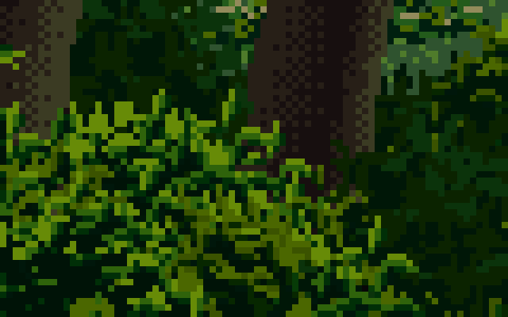
20. elements/willow/stage0/_z_fg8.pngBash: Glyph statistics of Ferrari crops
cd ~/work/pixelart-studies/elements/willow && cat > glyphstats.py <<'E'
"""Glyph statistics of a foliage crop: value classes by luminance, vertical/horizontal
transitions, and the shapes of connected light marks."""
import numpy as np
from scipy import ndimage as ndi
from lw import lum
def classes(rgb, edges):
L = lum(rgb)
return np.digitize(L, edges)
def stats(c, ncls, name=""):
out = {}
h, w = c.shape
share = np.bincount(c.ravel(), minlength=ncls) / c.size
out["share"] = np.round(share, 3)
# what is directly BELOW class k (dy=+1) and ABOVE
below = np.zeros((ncls, ncls)); right = np.zeros((ncls, ncls))
np.add.at(below, (c[:-1].ravel(), c[1:].ravel()), 1)
np.add.at(right, (c[:, :-1].ravel(), c[:, 1:].ravel()), 1)
out["below"] = np.round(below / below.sum(1, keepdims=True).clip(1), 2)
out["right"] = np.round(right / right.sum(1, keepdims=True).clip(1), 2)
# connected components of the top class(es)
for k in range(1, ncls):
m = c >= k
lab, n = ndi.label(m, structure=np.ones((3, 3)))
if n == 0: continue
sl = ndi.find_objects(lab)
sizes = np.bincount(lab.ravel())[1:]
hs = np.array([s[0].stop - s[0].start for s in sl]); ws = np.array([s[1].stop - s[1].start for s in sl])
out[f"cc>={k}"] = dict(n_per_100px=round(100 * n / c.size, 2), size_med=float(np.median(sizes)),
size_p90=float(np.percentile(sizes, 90)), h_med=float(np.median(hs)),
w_med=float(np.median(ws)), aspect=round(float(np.median(hs / ws)), 2))
# mean run lengths per axis
v = (np.diff(c, axis=0) != 0).mean(); hh = (np.diff(c, axis=1) != 0).mean()
out["runs_v_h"] = (round(1 / v, 2), round(1 / hh, 2))
return out
def show(o):
for k, v in o.items():
print(" ", k, ":", v if not isinstance(v, np.ndarray) else "\n" + str(v))
E
python3 - <<'E'
import numpy as np
from lw import load
from glyphstats import *
d=load('V09'); im=d['pal'][d['idx']]
print("HEDGE classes by L: <55, <90, <140, >=140")
show(stats(classes(im[235:285,230:380],[55,90,140]),4))
print("FG BUSH classes by L: <25, <50, <85, >=85")
show(stats(classes(im[300:380,0:150],[25,50,85]),4))
E
# output:
HEDGE classes by L: <55, <90, <140, >=140
share :
[0.091 0.585 0.184 0.14 ]
below :
[[0.56 0.3 0.04 0.09]
[0.05 0.78 0.13 0.04]
[0.02 0.43 0.41 0.14]
[0.06 0.21 0.23 0.5 ]]
right :
[[0.57 0.29 0.06 0.08]
[0.04 0.79 0.12 0.04]
[0.02 0.37 0.48 0.13]
[0.06 0.18 0.16 0.6 ]]
cc>=1 : {'n_per_100px': 0.25, 'size_med': 1.0, 'size_p90': 37.999999999999886, 'h_med': 1.0, 'w_med': 1.0, 'aspect': 1.0}
cc>=2 : {'n_per_100px': 2.37, 'size_med': 1.5, 'size_p90': 7.0, 'h_med': 1.0, 'w_med': 1.0, 'aspect': 1.0}
cc>=3 : {'n_per_100px': 2.17, 'size_med': 2.0, 'size_p90': 8.600000000000023, 'h_med': 1.0, 'w_med': 2.0, 'aspect': 1.0}
runs_v_h : (2.89, 3.2)
FG BUSH classes by L: <25, <50, <85, >=85
share :
[0.431 0.304 0.148 0.117]
below :
[[0.66 0.16 0.09 0.08]
[0.32 0.55 0.08 0.05]
[0.19 0.36 0.33 0.12]
[0.18 0.11 0.28 0.42]]
right :
[[0.68 0.2 0.07 0.06]
[0.27 0.56 0.12 0.05]
[0.22 0.24 0.39 0.15]
[0.21 0.13 0.19 0.47]]
cc>=1 : {'n_per_100px': 0.69, 'size_med': 2.0, 'size_p90': 15.0, 'h_med': 1.0, 'w_med': 1.0, 'aspect': 1.0}
cc>=2 : {'n_per_100px': 1.63, 'size_med': 3.0, 'size_p90': 14.0, 'h_med': 2.0, 'w_med': 2.0, 'aspect': 1.0}
cc>=3 : {'n_per_100px': 1.87, 'size_med': 2.0, 'size_p90': 11.0, 'h_med': 2.0, 'w_med': 2.0, 'aspect': 1.0}
runs_v_h : (2.23, 2.35)Bash: Print class maps as ASCII
cd ~/work/pixelart-studies/elements/willow && python3 - <<'E'
import numpy as np
from lw import load
from glyphstats import classes
d=load('V09'); im=d['pal'][d['idx']]
c=classes(im[310:345,20:100],[25,50,85])
ch=' .+#'
for r in c: print(''.join(ch[v] for v in r))
print()
c=classes(im[240:275,250:330],[55,90,140])
for r in c: print(''.join(ch[v] for v in r))
E
# output:
+...+ #####++..+...#..+.++++ ..... .....+. ....+....... . ..+++
. #.####.+ . ....+.+.+++ . ... . ......++...... . . . . ..++
+++++. ..+ #.......++++++.... ....... .... ........ . . ....++
+...+ +.#. . +.+.+++++..... ....... ... ....... . . . . ....++
.. ## .++#......++++++.. . .... # . . #......... ..+++
#+ .+## ....+.+.+++.... . ....#+.. ..#...... . . . ..+.+.
+ # ++#...#+.++++++#...# ###...#+. .#+....... . . ...++
# ###.#+++##.+.++++ #.. # ### ..#. # + ..#+.... . . . . . ..+.+.
####+# ##+++## ..#+..+++++.+# ### #####++.## +# .#........ . ...++.
###+### +...++# #+.+.+.+. +# ### ## +.+ ###.+###.+..... .#. . . . ..+.+.
##+.### .# .. #.+.++++. .######.. #+. .###.#++.....###..# ....++.
+ +### ## ..### ++###+++ +#+ +.# ### +. .+#+.+#.....++++##+. . . ..+.+
##. ..++# ## ##+..#.++++#.++###+. #####+ ##. +.#+#.#..+...+++. .....++
+++ .++ # +++ ###. #.+.. #+##### #+++ .+++.+. #+###++. . #.. . ....+.+
. + ++#+# ..+### +...#+.+. ##.+ +.. ..++. .+###+. ##.+. .......
. .++.+. ++..# ## .#. # #+. +# .. + ####. + .+###+ ++... .### .... ...
+. +. + ### ###### ####+ .#++## . ++.#++ . ++++...... ++++#.# .. ..
##.#++ . +####++..#######. ###+++# ..#+. .++..+++#+#++. + #.+.+ . . ..
###++..++# .### ## +++++ .+ +#+.+ #+. +++... ..++...++. # .+ .. ..
.++.. ...++ .#+#+.#+#..+ .+#+.++ ..#. +.#.+ .#. .+ ...#+. . ......
#... . ..## +++ .++.+. ### ##+#. .## #++.. ## # # # # .### + #+. .#..++..
+ ##. .####. + .+ .+ ###+####+.+#.++++ .+++#+#++# +## ###...#### +...+#+#
++#### +++++ . +++.+# +#++.#+###+.#+# + .++#+.+#+###.+####++..+++#.#+ .
.##### +.... ++..++# .#++..++++. #+## +. ++###.###.+# +#++.# .+### ..
+.. +..++ #+#.#+### ..+. .+ +. # ..++######.#.## #.+ .+.+ +.#
. . # #+++##+. +++ ++#.# #+. +##+ +..+++####+.+# +.#+. #
. . ##++..###+. +.. ++..++## + .#+#.+#####.++#+# # .+#+ ..#+
## #++.##. ++... ..++..++.+. .+.. ###+###+##. # . #+
# # ## + # +##+ ## +# +. ####+.#+####.#. # #.
# + + ##++. . ## ##.# .+.+.##+.#++ +++ .+##+++### ### +
++.. .# ##### ##+ .+... ####++.++++.+++ ..+ .+####+#####++..
+ # ### .. #.###.++.. ...++ .###..##+ .+..+
. + ### + +++++. ..+#.#++. #.## ## . .#... +.#+#.#+#
.. ### ..++ . ...+ ++ ###. ####+#++# ..+ +. #+####+
...+#+++# .... . . .+++ . ### .+##### ...+. .. .. ++. .++.#+
.. +.+..#..+........++...+..++.........+..+.....#..##.+#.#+#++###+#++#++#+#####
## ...+.#.+.....++..++.......+++#++.+++....#....#.#...#+#+###++#++#.+++++#.+##+
.Bash: Index adjacency stats
cd ~/work/pixelart-studies/elements/willow && python3 - <<'E'
import numpy as np
from lw import load, lum
d=load('V09'); idx=d['idx']; pal=d['pal']
def nb(c, keys, name):
print(name)
for k in keys:
m=(c==k)
res=[]
for dy,dx,nm in [(1,0,'below'),(-1,0,'above'),(0,1,'right'),(0,-1,'left')]:
sh=np.roll(np.roll(c,-dy,0),-dx,1)
v=sh[m]; u,n=np.unique(v,return_counts=True); o=np.argsort(-n)[:4]
res.append(nm+':'+','.join(f'{u[i]}({100*n[i]/n.sum():.0f})' for i in o))
print(f' {k:3d} L={lum(pal[k]):.0f} n={m.sum()} '+' '.join(res))
c=idx[285:380,0:150]
nb(c,[9,45,10,57,25,2,11,47,59,3,26,13],'FG')
c=idx[235:285,230:380]
nb(c,[85,49,48,40,84,50,41,83,86,42,43],'HEDGE')
E
# output:
FG
9 L=122 n=770 below:9(39),10(29),13(10),11(7) above:9(39),13(15),10(8),26(5) right:9(43),10(16),13(11),11(7) left:9(43),10(13),13(12),11(7)
45 L=90 n=749 below:45(34),57(19),3(12),26(8) above:45(34),26(12),57(8),13(7) right:45(39),26(11),57(9),3(7) left:45(39),57(12),26(8),3(7)
10 L=82 n=684 below:11(40),10(22),13(14),9(9) above:9(33),10(22),13(19),11(9) right:10(32),11(24),9(15),13(12) left:10(32),11(19),9(18),13(14)
57 L=72 n=793 below:57(27),47(24),26(13),25(10) above:57(27),26(19),45(18),47(9) right:57(33),26(15),47(14),45(12) left:57(33),47(16),26(14),45(9)
25 L=44 n=421 below:25(32),47(28),26(15),57(6) above:25(32),26(20),57(19),47(12) right:25(36),47(19),57(14),26(14) left:25(36),26(21),47(14),57(12)
2 L=40 n=760 below:2(56),59(14),26(13),13(3) above:2(56),59(13),26(10),13(3) right:2(54),26(11),59(11),13(4) left:2(54),59(15),26(12),13(3)
11 L=34 n=582 below:13(30),11(20),12(14),10(10) above:10(47),11(20),13(14),9(9) right:11(27),10(22),13(16),12(12) left:10(28),11(27),13(16),12(13)
47 L=29 n=820 below:47(26),26(25),12(14),57(9) above:47(26),57(23),26(17),25(14) right:47(34),26(17),57(15),12(10) left:47(34),26(17),57(14),25(10)
59 L=27 n=956 below:59(61),26(16),2(10),17(3) above:59(61),26(14),2(11),17(3) right:59(57),26(18),2(12),17(3) left:59(57),26(17),2(9),17(4)
3 L=23 n=430 below:3(47),45(12),6(9),28(8) above:3(47),45(21),6(7),42(5) right:3(56),45(13),6(7),2(3) left:3(56),45(11),6(7),2(6)
26 L=17 n=2238 below:26(58),57(7),47(6),59(6) above:26(58),47(9),59(7),12(6) right:26(61),59(7),47(6),57(5) left:26(61),59(8),47(6),57(5)
13 L=14 n=1837 below:13(63),10(7),9(6),11(4) above:13(63),11(10),12(7),10(5) right:13(68),11(5),10(5),9(5) left:13(68),11(5),10(5),9(4)
HEDGE
85 L=184 n=144 below:84(65),85(28),40(2),41(2) above:84(43),85(28),253(9),136(4) right:85(49),84(42),153(3),40(1) left:85(49),84(44),253(4),40(2)
49 L=175 n=253 below:42(24),41(23),49(18),40(17) above:42(20),41(19),49(18),40(17) right:49(28),42(21),41(17),48(10) left:49(28),41(24),42(17),40(10)
48 L=152 n=224 below:43(27),42(17),48(12),41(10) above:43(28),42(20),48(12),41(9) right:43(27),42(20),48(14),41(10) left:43(25),42(23),48(14),49(12)
40 L=131 n=614 below:42(25),41(23),40(22),83(8) above:41(24),40(22),42(21),49(7) right:40(33),42(22),41(20),83(6) left:40(33),41(22),42(22),83(6)
84 L=113 n=345 below:84(65),85(18),41(4),83(4) above:84(65),85(27),41(1),49(1) right:84(70),85(18),49(2),40(2) left:84(70),85(17),41(3),40(2)
50 L=103 n=302 below:42(32),41(24),50(20),40(13) above:42(33),41(21),50(20),40(13) right:42(31),50(29),41(22),40(11) left:42(34),50(29),41(21),40(7)
41 L=79 n=1197 below:42(40),41(29),40(13),50(5) above:42(37),41(29),40(12),50(6) right:42(37),41(34),40(11),50(5) left:42(39),41(34),40(10),50(6)
83 L=78 n=289 below:83(56),40(14),86(10),41(5) above:83(56),40(18),42(7),86(7) right:83(57),40(13),42(9),86(8) left:83(57),40(12),86(9),42(8)
Bash: FG crop index census
cd ~/work/pixelart-studies/elements/willow && python3 - <<'E'
import numpy as np
from lw import load, lum
from PIL import Image
d=load('V09'); idx=d['idx']; pal=d['pal']
c=idx[315:380,0:150]
u,n=np.unique(c,return_counts=True)
for i in np.argsort(-n)[:30]: print(u[i], n[i], pal[u[i]].tolist())
Image.fromarray(pal[c]).resize((150*6,65*6),Image.NEAREST).save('stage0/_fgcrop6.png')
E
# output:
26 2026 [0, 23, 7]
13 1604 [0, 19, 7]
47 781 [7, 39, 0]
59 734 [11, 35, 0]
57 712 [59, 83, 0]
45 572 [75, 103, 0]
2 532 [11, 51, 11]
10 489 [47, 99, 11]
9 462 [103, 139, 7]
12 460 [0, 23, 11]
11 438 [0, 47, 7]
25 421 [7, 59, 7]
17 187 [7, 11, 7]
67 108 [23, 15, 15]
66 107 [39, 31, 23]
65 53 [59, 59, 35]
69 29 [7, 7, 7]
4 24 [0, 15, 11]
27 3 [79, 123, 43]
3 3 [0, 31, 15]
28 2 [47, 83, 47]
78 2 [163, 199, 0]
70 1 [11, 11, 11]Read: elements/willow/stage0/_fgcrop6.png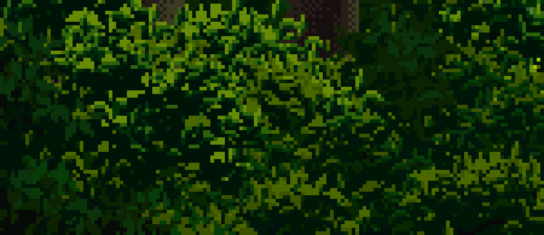
21. elements/willow/stage0/_fgcrop6.pngWrite: elements/willow/copyharness.py
"""Master-copy harness: decompose a Ferrari crop into (ramp, step) using named ramps of his
indices, build the copyist's sketch (which ramp owns each region, and a smoothed light field),
and compare a copy against the reference (3x whole, 8x detail, metrics)."""
import numpy as np
from scipy import ndimage as ndi
from PIL import Image, ImageDraw
from lw import load, lum
def decompose(idx, pal, ramps):
"""ramps: list of lists of palette indices, dark->light. Returns ramp id map, step map,
and the RGB table per (ramp, step). Unknown indices snap to nearest ramp colour."""
table = {}
lut = {}
for r, ids in enumerate(ramps):
for s, i in enumerate(ids):
table[(r, s)] = tuple(int(v) for v in pal[i])
lut.setdefault(i, (r, s))
cols = np.array([table[k] for k in table], float)
keys = list(table.keys())
R = np.zeros(idx.shape, int); S = np.zeros(idx.shape, int)
for i in np.unique(idx):
if i in lut:
r, s = lut[i]
else:
dd = ((cols - pal[i].astype(float)) ** 2).sum(1)
r, s = keys[int(dd.argmin())]
R[idx == i] = r; S[idx == i] = s
return R, S, table
def sketch(R, S, nramps, maxstep, sigma=2.5, maj=9):
"""Copyist's sketch: majority ramp region (size maj) and smoothed light field in [0,1]."""
votes = np.stack([ndi.uniform_filter((R == r).astype(float), maj) for r in range(nramps)])
region = votes.argmax(0)
light = ndi.gaussian_filter(S / maxstep, sigma)
return region, light
def render(R, S, table):
out = np.zeros(R.shape + (3,), np.uint8)
for (r, s), c in table.items():
out[(R == r) & (S == s)] = c
return out
def srgb2lab(a):
a = a / 255.0
a = np.where(a > 0.04045, ((a + 0.055) / 1.055) ** 2.4, a / 12.92)
M = np.array([[0.4124, 0.3576, 0.1805], [0.2126, 0.7152, 0.0722], [0.0193, 0.1192, 0.9505]])
xyz = a @ M.T / np.array([0.9505, 1.0, 1.089])
f = np.where(xyz > 0.008856, np.cbrt(xyz), 7.787 * xyz + 16 / 116)
return np.stack([116 * f[..., 1] - 16, 500 * (f[..., 0] - f[..., 1]), 200 * (f[..., 1] - f[..., 2])], -1)
def metrics(copy, ref):
c = copy.astype(float); r = ref.astype(float)
bl = np.linalg.norm(ndi.gaussian_filter(srgb2lab(c), (3, 3, 0)) - ndi.gaussian_filter(srgb2lab(r), (3, 3, 0)), axis=-1).mean()
def runs(img):
k = img[..., 0].astype(np.int64) * 65536 + img[..., 1] * 256 + img[..., 2]
return round(1 / max((np.diff(k, axis=0) != 0).mean(), 1e-6), 2), round(1 / max((np.diff(k, axis=1) != 0).mean(), 1e-6), 2)
return dict(blurLab=round(float(bl), 2), runs_copy=runs(copy), runs_ref=runs(ref))
def compare_sheet(copy, ref, path, detail=None, label="", k=3):
h, w = ref.shape[:2]
a = Image.fromarray(ref).resize((w * k, h * k), Image.NEAREST)
b = Image.fromarray(copy).resize((w * k, h * k), Image.NEAREST)
if detail is None:
detail = (w // 2 - 25, h // 2 - 18, 50, 36)
x, y, dw, dh = detail
a8 = Image.fromarray(ref[y:y + dh, x:x + dw]).resize((dw * 8, dh * 8), Image.NEAREST)
b8 = Image.fromarray(copy[y:y + dh, x:x + dw]).resize((dw * 8, dh * 8), Image.NEAREST)
W = max(w * k * 2 + 12, dw * 16 + 12); H = h * k + dh * 8 + 44
o = Image.new("RGB", (W, H), (24, 24, 28)); d = ImageDraw.Draw(o)
o.paste(a, (0, 16)); o.paste(b, (w * k + 12, 16))
d.text((2, 2), f"FERRARI {k}x", fill=(230, 230, 230)); d.text((w * k + 14, 2), f"COPY {k}x " + label, fill=(230, 230, 230))
y0 = h * k + 38
o.paste(a8, (0, y0)); o.paste(b8, (dw * 8 + 12, y0))
d.text((2, y0 - 16), "Ferrari 8x", fill=(230, 230, 230)); d.text((dw * 8 + 14, y0 - 16), "copy 8x", fill=(230, 230, 230))
for ox in (0, w * k + 12):
d.rectangle([ox + x * k, 16 + y * k, ox + (x + dw) * k, 16 + (y + dh) * k], outline=(255, 60, 60))
o.save(path)
Bash: Print ramp/step letter map
cd ~/work/pixelart-studies/elements/willow && python3 - <<'E'
import numpy as np
from lw import load
from copyharness import decompose
d=load('V09'); idx=d['idx'][322:380,0:140]; pal=d['pal']
ramps=[[13,11,10,9],[26,47,57,45],[26,59,2,25]]
R,S,t=decompose(idx,pal,ramps)
# letters: ramp P: a b c d (dark->light); Q: e f g h; R: i j k l
ch=[['.','a','b','P'],[' ','e','f','Q'],[' ','j','k','L']]
for y in range(10,40):
print(''.join(ch[R[y,x]][S[y,x]] for x in range(0,110)))
E
# output:
..jkkj jfjkQQfaabbbabbPPPP..bbbbb.a.. bbbafQ. bPbbaQfQPPbaPbP...b.abbQbabPfQPPefQPPQbfeebfbPkQf j jjjjjjj
.jjkkk kkk jj....a.aPPPPP.baaaa ..bbaabbQ...aPffeebbbba PbPP.ba ...ffQQPeQQPefQ bQbbaP efQQQ jjjjkjkkjjjj
.jjkkk kkk jj.j....baa baabb............QfQePbPPP aaba ab. ba Q..eeffQPQQQQeQaQQ.Qab efef fjPjjjjkjjjjj
j.jjkk kkk jjjjj..a ...... a.........P.PbbbPPba..bbb.... bbPaP.Pfe fQQb.feefffQQQQfabP feQfe Pjjjj j j
kjjkjk.kkje ff .fjQ.a ...........a.....PPbbaaPPPba.baa . bbaabbPP.b..eQfQefQQPPPeffQfP.P.efQf .kkPbajjj j j
kjkkj.k jjkkkQf.fe.. ..................PP PbbaPPa.......bbaaa aabbaabfefe efee QQQfQPPbPPe Q.e Pbajj
kkkkjjjjj kkkkkQQ...Q...................P ..PP.b...P.... bPPb .PP.. fQ.fe . .QQQQfeQfQQQQaPe Q. Pajj j j
kkkk..jk . kkkkkf...Q f.f.................PPbba.a.PP...PPaP abefaPPbeQff ....fff..efQQfffPPP PPP b j jjj
kkk...kkj jjj.keQf. ffea...aP....PPPPP..PPb......abaaa....PPPPbbabfffefff. eef.efQQQQfPPPQPbbaa PPPjjj
..k...kkj kjj .f.... .f.......P....PPP..... .......aa .....PaPPPabfee eeeff.......eQQQkeQPb efkkf bbbbPj
..kk.kkjj kkkk.e.....k .......b.PPP........ .b..........bbbbba aabQeQffe QeQQ...QQ.e.eQkkk.bkPbPkQfQb aabb j
... .. .j jkkk.e... kk...PPP..aabb.....a... ...........aaab.....bf.QQQe QQQQfQffQ..eLf ba PbPPQQba ejjkkjj
.. . . j ..kkkkk kkefPbbbP.aaaa...a.a....abbb......a QPP... abPQQQQ....eeefe.ee.eL bba abfeQba j
j. . kkkkjkkkk eQk.ff...PPaa....b..baab.............b......P bPQQQP..... eQQff L .b . ab .Lb Q
j . kkkk kkkkkeQQQQekkkkkPaa..aba aa .............b.......PPPabbbPPkeee...e..QQ efk.a... bbbkaQQ Q Q
. .. kj kk kk.fkfffkkk. PaPPP.ba .......a...a.QQQbQ...PPbbPP. aaPbkQ e..eee.L QQ ..fbbaabbbQQQbb eQ
j .. ...jj k k k kk....P..PPPP.b .a....a.....aQQQQQQQ...baabbP...Pbff......eee QQQ.bbbaaa aabbaaabe
jj... . .. kkekkk...PP...bb.a...a..........QQQbaQQ..aa aa.....Pa.ff.....ee QQQQbaaab aaffe aa
e... ...... .. kkk kkk.......aa.a.ababb....a....bb.a......b....Pbaa..bbe.f...e fQ fL ef QQ
...... .f ..e ...kkk..kkk.....Q.aaa.a..baa.......ba a.bb...abbb...a..abbbQQeee eeffQf f e f Q f
......efe .. ..kk.....k.........a... a.........b..b..bbb....aab....aaaa.eeeeQ eeee e e L fff eff
.......fe . ..k.................a.. a........ a.....aaabPP.f........aaeeeeQQQeee f f eef f f
ee.....f .. ....eQ.....QQ......aa....ffQ.... a....a..PPPP..f..fLLe..fefff L fe Le feeeef LLf
.......e. .e... e...eQ....QQQ.Q....bbb....efe......bbb......k ........ LLLLLfef e fffe f Lf e LLLQL
......... ..f.........Q....QQQ........aba..ee .bb.. ...........Pba fLfLL L eeLLeeQQQ fe ee ee eeLL
...........fef....QQQ..eeff...................aaab.........PPP.Pba fLffQfLe . e QQfQQ f e e .eeffff L
......eLe..f ee..QfffQ.eeee...........f...................PPPP.Pae eLffLLe fff e Le . LLL e
...Write: elements/willow/foliage.py
"""Foliage techniques, discovered by copying Ferrari (stage 0), then carried to the willow.
All functions work in (ramp, step) space. A ramp is dark->light, step 0 is the shared near-black
gap. `light` is the copyist's sketch or the form field, in [0,1].
"""
import numpy as np
from scipy import ndimage as ndi
from wpaint import clean_line, value_noise
def leaf_glyph_pixels(x, y, L, ang, thick):
"""A leaf mark: an upper edge run of length L at angle ang (radians, screen, y down) and,
if thick>1, a lower edge run one pixel below. Returns (upper pts, lower pts)."""
dx, dy = np.cos(ang) * (L - 1), np.sin(ang) * (L - 1)
up = clean_line(x, y, x + dx, y + dy)
lo = [(px, py + 1) for (px, py) in up] if thick > 1 else []
return up, lo
def near_leaves(region, light, rng, top=3, spacing=2.4, lens=(3, 6), thick_p=0.7,
angles=((0, 3), (26.6, 2), (-26.6, 2), (45, 1), (-45, 1)), dens=(0.15, 0.95),
base1=(0.35, 0.8), mask=None, jitter=0.6, taper=True):
"""Near-scale leaf glyphs (V09 foreground bush). Each leaf: lit upper edge, one-step-darker
lower edge, tip one step down, a dark pixel under it. Leaves painted dim-to-bright so lit
leaves lie in front. Returns S (steps) with region carried as the ramp map."""
h, w = light.shape
if mask is None:
mask = np.ones((h, w), bool)
S = np.zeros((h, w), int)
# base: black gap with a clumpy scatter of step 1 where the light field is higher
n = value_noise((h, w), 2.0, rng)
t = 0.5 * rng.random((h, w)) + 0.5 * (n - n.min()) / (np.ptp(n) + 1e-9)
p1 = base1[0] + (base1[1] - base1[0]) * light
S[(t < p1 * 0.6) & mask] = 1
# glyph sites: jittered grid
ys, xs = np.mgrid[0:h:spacing, 0:w:spacing]
ys = ys.ravel() + rng.uniform(-spacing, spacing, ys.size) * jitter
xs = xs.ravel() + rng.uniform(-spacing, spacing, xs.size) * jitter
angs = np.array([a for a, _ in angles]); wts = np.array([k for _, k in angles], float)
wts /= wts.sum()
G = []
for (x, y) in zip(xs, ys):
xi, yi = int(np.clip(round(x), 0, w - 1)), int(np.clip(round(y), 0, h - 1))
if not mask[yi, xi]:
continue
l = light[yi, xi]
if rng.random() > dens[0] + (dens[1] - dens[0]) * l:
continue
tp = int(np.clip(round(0.6 + l * (top + 0.4) + rng.normal(0, 0.55)), 1, top))
L = int(rng.integers(lens[0], lens[1] + 1))
a = np.radians(rng.choice(angs, p=wts)) * (1 if rng.random() < 0.5 else -1)
if rng.random() < 0.5:
a = np.pi - a # leaves point left or right
th = 2 if rng.random() < thick_p else 1
G.append((tp + rng.random() * 0.5, xi, yi, L, a, th, tp))
G.sort()
for (_, x, y, L, a, th, tp) in G:
up, lo = leaf_glyph_pixels(x, y, L, a, th)
# dark tuck under the leaf
for (px, py) in (lo or up):
if 0 <= px < w and 0 <= py + 1 < h and mask[py + 1, px]:
S[py + 1, px] = min(S[py + 1, px], max(0, tp - 2))
for k, (px, py) in enumerate(lo):
if 0 <= px < w and 0 <= py < h and mask[py, px]:
S[py, px] = max(0, tp - 1)
for k, (px, py) in enumerate(up):
if 0 <= px < w and 0 <= py < h and mask[py, px]:
s = tp
if taper and k == len(up) - 1 and len(up) > 2:
s = tp - 1
S[py, px] = s
return S
Write: elements/willow/stage0_copy.py
"""Stage 0: master copies of Ferrari's leafy masses (Living Worlds 'Deep Forest', V09).
C1: the sunlit foreground bush (near-scale leaf glyphs). C2: the middle-distance hedge band."""
import sys, os
import numpy as np
from lw import load
from copyharness import decompose, sketch, render, metrics, compare_sheet
from foliage import near_leaves
OUT = "stage0"
os.makedirs(OUT, exist_ok=True)
V09 = load("V09")
def copy_c1(seed=1, tag="", **kw):
y0, y1, x0, x1 = 322, 380, 0, 140
idx = V09["idx"][y0:y1, x0:x1]; pal = V09["pal"]
ramps = [[13, 11, 10, 9], [26, 47, 57, 45], [26, 59, 2, 25]]
R, S, table = decompose(idx, pal, ramps)
region, light = sketch(R, S, len(ramps), 3, sigma=kw.pop("sigma", 2.5))
ref = render(R, S, table)
rng = np.random.default_rng(seed)
S2 = near_leaves(region, light, rng, **kw)
cp = render(region, S2, table)
m = metrics(cp, ref)
compare_sheet(cp, ref, f"{OUT}/c1_fgbush{tag}.png", detail=(40, 8, 60, 40), label=str(m))
return m
if __name__ == "__main__":
print(copy_c1())
Bash: Run copy C1 v1
cd ~/work/pixelart-studies/elements/willow && nice -n 10 python3 stage0_copy.py
# output:
{'blurLab': 7.2, 'runs_copy': (1.85, 2.66), 'runs_ref': (1.88, 2.03)}Read: elements/willow/stage0/c1_fgbush.png 22. elements/willow/stage0/c1_fgbush.png
22. elements/willow/stage0/c1_fgbush.png
Bash: Add (ramp,step) stats and measure ref
cd ~/work/pixelart-studies/elements/willow && cat >> copyharness.py <<'E'
def rs_stats(R, S, top):
"""Step shares and shapes of connected lit marks, in (ramp, step) space."""
from scipy import ndimage as ndi
o = {"share": np.round(np.bincount(S.ravel(), minlength=top + 1) / S.size, 3).tolist()}
for k in (top, top - 1):
m = S >= k
lab, n = ndi.label(m)
if n == 0:
continue
sl = ndi.find_objects(lab); sz = np.bincount(lab.ravel())[1:]
hs = np.array([s[0].stop - s[0].start for s in sl]); ws = np.array([s[1].stop - s[1].start for s in sl])
o[f">={k}"] = dict(per100=round(100 * n / S.size, 2), size=(float(np.median(sz)), float(np.percentile(sz, 90))),
h=float(np.mean(hs)), w=float(np.mean(ws)))
# what lies below the top step
m = S[:-1] == top
o["below_top"] = np.round(np.bincount(S[1:][m], minlength=top + 1) / max(1, m.sum()), 2).tolist()
return o
E
python3 - <<'E'
import numpy as np
from lw import load
from copyharness import decompose, rs_stats
d=load('V09'); idx=d['idx'][322:380,0:140]; pal=d['pal']
R,S,t=decompose(idx,pal,[[13,11,10,9],[26,47,57,45],[26,59,2,25]])
print(rs_stats(R,S,3))
for r in range(3): print(r, (R==r).mean().round(2), rs_stats(R[R==r][None],S[R==r][None],3)['share'])
E
# output:
{'share': [0.458, 0.203, 0.187, 0.151], '>=3': {'per100': 4.13, 'size': (2.0, 8.0), 'h': 1.8835820895522388, 'w': 2.1223880597014926}, '>=2': {'per100': 3.77, 'size': (2.0, 14.0), 'h': 2.4673202614379086, 'w': 3.1666666666666665}, 'below_top': [0.2, 0.16, 0.23, 0.41]}
0 0.33 [0.611, 0.125, 0.142, 0.122]
1 0.48 [0.533, 0.172, 0.16, 0.135]
2 0.19 [0.0, 0.417, 0.336, 0.247]Bash: Print copy stats vs ref
cd ~/work/pixelart-studies/elements/willow && python3 - <<'E'
s=open('stage0_copy.py').read()
s=s.replace("from copyharness import decompose, sketch, render, metrics, compare_sheet","from copyharness import decompose, sketch, render, metrics, compare_sheet, rs_stats")
s=s.replace(" m = metrics(cp, ref)\n compare_sheet(cp, ref, f\"{OUT}/c1_fgbush{tag}.png\""," m = metrics(cp, ref)\n print('ref ', rs_stats(R, S, 3)); print('copy', rs_stats(region, S2, 3))\n compare_sheet(cp, ref, f\"{OUT}/c1_fgbush{tag}.png\"")
open('stage0_copy.py','w').write(s)
E
nice -n 10 python3 stage0_copy.py
# output:
ref {'share': [0.458, 0.203, 0.187, 0.151], '>=3': {'per100': 4.13, 'size': (2.0, 8.0), 'h': 1.8835820895522388, 'w': 2.1223880597014926}, '>=2': {'per100': 3.77, 'size': (2.0, 14.0), 'h': 2.4673202614379086, 'w': 3.1666666666666665}, 'below_top': [0.2, 0.16, 0.23, 0.41]}
copy {'share': [0.614, 0.212, 0.129, 0.044], '>=3': {'per100': 2.23, 'size': (2.0, 4.0), 'h': 1.0276243093922652, 'w': 1.9668508287292819}, '>=2': {'per100': 4.82, 'size': (2.0, 9.0), 'h': 1.526854219948849, 'w': 2.4578005115089514}, 'below_top': [0.15, 0.12, 0.71, 0.01]}
{'blurLab': 7.2, 'runs_copy': (1.85, 2.66), 'runs_ref': (1.88, 2.03)}Bash: Add lozenge leaf glyph and preview shapes
cd ~/work/pixelart-studies/elements/willow && cat >> foliage.py <<'E'
def lozenge(x, y, L, ang, wmax=1.2, tip_dark=True):
"""Leaf lozenge pixels around axis from (x,y) of length L at angle ang (y down).
Returns list of (px, py, role) with role 'T' (upper/lit half), 'm' (lower half or tip)."""
ca, sa = np.cos(ang), np.sin(ang)
# normal pointing 'down' on screen
nx, ny = -sa, ca
if ny < 0:
nx, ny = -nx, -ny
pts = {}
r = int(np.ceil(L)) + 2
for py in range(int(y) - r, int(y) + r + 1):
for px in range(int(x) - r, int(x) + r + 1):
dx, dy = px - x, py - y
t = (dx * ca + dy * sa) / max(L - 1, 1)
q = dx * nx + dy * ny
if t < -0.15 or t > 1.15:
continue
wid = wmax * np.sin(np.pi * np.clip(t, 0, 1)) ** 0.6 + 0.35
if abs(q) <= wid * 0.75:
role = "T" if q < 0.25 else "m"
if tip_dark and (t > 0.9):
role = "m"
pts[(px, py)] = role
return pts
def near_leaves2(region, light, rng, top=3, spacing=2.2, lens=(3, 6), wmax=(0.8, 1.6),
angles=((0, 3), (26.6, 3), (45, 2), (63, 1)), dens=(0.25, 1.0),
base1=(0.2, 0.6), mask=None, jitter=0.7, tuck_p=0.5, bright=0.5, sd=0.55):
"""Leaf lozenges, lit upper half / darker lower half, painted dim-to-bright."""
h, w = light.shape
if mask is None:
mask = np.ones((h, w), bool)
S = np.zeros((h, w), int)
n = value_noise((h, w), 2.0, rng)
t = 0.5 * rng.random((h, w)) + 0.5 * (n - n.min()) / (np.ptp(n) + 1e-9)
S[(t < base1[0] + (base1[1] - base1[0]) * light) & mask] = 1
ys, xs = np.mgrid[0:h:spacing, 0:w:spacing]
ys = ys.ravel() + rng.uniform(-spacing, spacing, ys.size) * jitter
xs = xs.ravel() + rng.uniform(-spacing, spacing, xs.size) * jitter
angs = np.array([a for a, _ in angles]); wts = np.array([k for _, k in angles], float); wts /= wts.sum()
G = []
for (x, y) in zip(xs, ys):
xi, yi = int(np.clip(round(x), 0, w - 1)), int(np.clip(round(y), 0, h - 1))
if not mask[yi, xi]:
continue
l = light[yi, xi]
if rng.random() > dens[0] + (dens[1] - dens[0]) * l:
continue
tp = int(np.clip(round(bright + l * top + rng.normal(0, sd)), 1, top))
L = rng.uniform(*lens)
a = np.radians(rng.choice(angs, p=wts))
a = -a if rng.random() < 0.5 else a
if rng.random() < 0.5:
a = np.pi - a
G.append((tp + rng.random(), x, y, L, a, rng.uniform(*wmax), tp))
G.sort()
for (_, x, y, L, a, wm, tp) in G:
pts = lozenge(x, y, L, a, wm)
low = {}
for (px, py), role in pts.items():
if 0 <= px < w and 0 <= py < h and mask[py, px]:
S[py, px] = tp if role == "T" else max(0, tp - 1)
low[px] = max(low.get(px, -1), py)
for px, py in low.items():
if rng.random() < tuck_p and 0 <= py + 1 < h and (px, py + 1) not in pts and mask[py + 1, px]:
S[py + 1, px] = min(S[py + 1, px], max(0, tp - 2))
return S
E
python3 - <<'E'
import numpy as np
from foliage import lozenge
for L,a,wm in [(3,0,1.2),(4,0,1.2),(5,0.46,1.2),(5,0.78,1.6),(4,-0.46,1.0),(6,0.3,1.6)]:
p=lozenge(10,10,L,a,wm)
xs=[k[0] for k in p]; ys=[k[1] for k in p]
print(L,a,wm)
for yy in range(min(ys),max(ys)+1):
print(' '+''.join(p.get((xx,yy),'.') for xx in range(min(xs),max(xs)+1)))
E
# output:
3 0 1.2
.T.
TTm
.m.
4 0 1.2
.TT.
TTTm
.mm.
5 0.46 1.2
TTT..
.mTT.
..mmm
5 0.78 1.6
TT..
mTT.
.mTT
..mm
4 -0.46 1.0
.TT
Tmm
6 0.3 1.6
TTTTT
.mmTT
..mmmBash: Run copy with lozenge leaves
cd ~/work/pixelart-studies/elements/willow && sed -i '' 's/from foliage import near_leaves$/from foliage import near_leaves, near_leaves2/; s/ S2 = near_leaves(region, light, rng, \*\*kw)/ fn = kw.pop("fn", near_leaves2)\n S2 = fn(region, light, rng, **kw)/' stage0_copy.py && nice -n 10 python3 stage0_copy.py
# output:
ref {'share': [0.458, 0.203, 0.187, 0.151], '>=3': {'per100': 4.13, 'size': (2.0, 8.0), 'h': 1.8835820895522388, 'w': 2.1223880597014926}, '>=2': {'per100': 3.77, 'size': (2.0, 14.0), 'h': 2.4673202614379086, 'w': 3.1666666666666665}, 'below_top': [0.2, 0.16, 0.23, 0.41]}
copy {'share': [0.512, 0.288, 0.156, 0.044], '>=3': {'per100': 1.19, 'size': (3.0, 7.0), 'h': 1.7835051546391754, 'w': 2.597938144329897}, '>=2': {'per100': 3.3, 'size': (4.0, 12.0), 'h': 2.2388059701492535, 'w': 3.25}, 'below_top': [0.11, 0.1, 0.51, 0.28]}
{'blurLab': 5.13, 'runs_copy': (1.83, 2.29), 'runs_ref': (1.88, 2.03)}Bash: Tune brightness
cd ~/work/pixelart-studies/elements/willow && nice -n 10 python3 -c "
from stage0_copy import copy_c1
for b in (1.0,1.3):
for bs in ((0.1,0.4),):
print(b,bs,copy_c1(bright=b,base1=bs,tag='_b%.1f'%b))
"
# output:
ref {'share': [0.458, 0.203, 0.187, 0.151], '>=3': {'per100': 4.13, 'size': (2.0, 8.0), 'h': 1.8835820895522388, 'w': 2.1223880597014926}, '>=2': {'per100': 3.77, 'size': (2.0, 14.0), 'h': 2.4673202614379086, 'w': 3.1666666666666665}, 'below_top': [0.2, 0.16, 0.23, 0.41]}
copy {'share': [0.511, 0.182, 0.206, 0.101], '>=3': {'per100': 2.67, 'size': (3.0, 7.400000000000006), 'h': 1.8341013824884793, 'w': 2.6175115207373274}, '>=2': {'per100': 3.21, 'size': (4.0, 23.0), 'h': 2.900383141762452, 'w': 3.896551724137931}, 'below_top': [0.11, 0.07, 0.53, 0.29]}
1.0 (0.1, 0.4) {'blurLab': 4.52, 'runs_copy': (1.81, 2.33), 'runs_ref': (1.88, 2.03)}
ref {'share': [0.458, 0.203, 0.187, 0.151], '>=3': {'per100': 4.13, 'size': (2.0, 8.0), 'h': 1.8835820895522388, 'w': 2.1223880597014926}, '>=2': {'per100': 3.77, 'size': (2.0, 14.0), 'h': 2.4673202614379086, 'w': 3.1666666666666665}, 'below_top': [0.2, 0.16, 0.23, 0.41]}
copy {'share': [0.485, 0.146, 0.227, 0.142], '>=3': {'per100': 3.57, 'size': (3.0, 8.0), 'h': 1.8413793103448275, 'w': 2.6862068965517243}, '>=2': {'per100': 2.94, 'size': (5.0, 27.0), 'h': 3.284518828451883, 'w': 4.493723849372385}, 'below_top': [0.12, 0.07, 0.5, 0.31]}
1.3 (0.1, 0.4) {'blurLab': 5.25, 'runs_copy': (1.75, 2.25), 'runs_ref': (1.88, 2.03)}Read: elements/willow/stage0/c1_fgbush_b1.3.png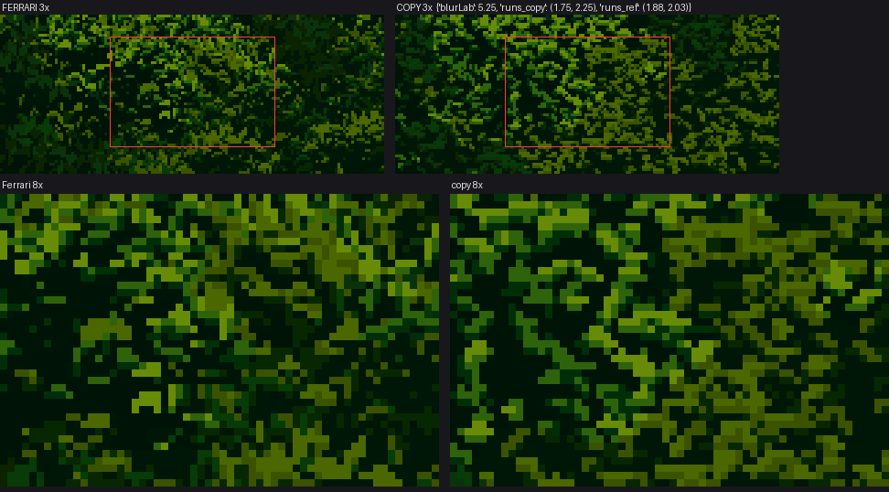
23. elements/willow/stage0/c1_fgbush_b1.3.pngBash: Add spray-based leaf technique
cd ~/work/pixelart-studies/elements/willow && cat >> foliage.py <<'E'
def poisson(h, w, r, rng, k=20, mask=None):
"""Bridson Poisson-disc sample of points (x, y) with min distance r."""
cell = r / np.sqrt(2)
gw, gh = int(w / cell) + 1, int(h / cell) + 1
grid = -np.ones((gh, gw), int)
pts = []
active = []
def ok(p):
gx, gy = int(p[0] / cell), int(p[1] / cell)
for yy in range(max(0, gy - 2), min(gh, gy + 3)):
for xx in range(max(0, gx - 2), min(gw, gx + 3)):
j = grid[yy, xx]
if j >= 0 and (pts[j][0] - p[0]) ** 2 + (pts[j][1] - p[1]) ** 2 < r * r:
return False
return True
p0 = (rng.uniform(0, w), rng.uniform(0, h))
pts.append(p0); active.append(0); grid[int(p0[1] / cell), int(p0[0] / cell)] = 0
while active:
i = active[int(rng.integers(len(active)))]
found = False
for _ in range(k):
a = rng.uniform(0, 2 * np.pi); d = rng.uniform(r, 2 * r)
p = (pts[i][0] + d * np.cos(a), pts[i][1] + d * np.sin(a))
if 0 <= p[0] < w and 0 <= p[1] < h and ok(p):
pts.append(p); active.append(len(pts) - 1)
grid[int(p[1] / cell), int(p[0] / cell)] = len(pts) - 1
found = True
break
if not found:
active.remove(i)
pts = np.array(pts)
if mask is not None and len(pts):
keep = mask[np.clip(pts[:, 1].astype(int), 0, h - 1), np.clip(pts[:, 0].astype(int), 0, w - 1)]
pts = pts[keep]
return pts
def paint_leaf(S, mask, x, y, L, a, wm, tp, rng, tuck_p=0.5, extra=None):
h, w = S.shape
pts = lozenge(x, y, L, a, wm)
low = {}
for (px, py), role in pts.items():
if 0 <= px < w and 0 <= py < h and mask[py, px]:
S[py, px] = tp if role == "T" else max(0, tp - 1)
low[px] = max(low.get(px, -1), py)
if extra is not None:
extra[py, px] = 1
for px, py in low.items():
if rng.random() < tuck_p and 0 <= py + 1 < h and (px, py + 1) not in pts and mask[py + 1, px]:
S[py + 1, px] = min(S[py + 1, px], max(0, tp - 2))
def near_sprays(region, light, rng, top=3, spray_r=6.0, spray_size=(2.5, 4.5), leaves=(4, 9),
lens=(3, 5.5), wmax=(0.8, 1.5), up_bias=0.8, dens=(0.35, 1.0), base1=(0.1, 0.4),
mask=None, bright=1.0, sd=0.45, grad=1.2, tuck_p=0.5, fill_leaves=0.0):
"""Leaves grouped in sprays: spray centres on a Poisson disc; each spray's leaves radiate from
its centre, tips biased upward; leaves at the top of a spray are brighter (grad steps across
the spray). Sprays painted dim-to-bright, leaves inside a spray bottom-to-top."""
h, w = light.shape
if mask is None:
mask = np.ones((h, w), bool)
S = np.zeros((h, w), int)
n = value_noise((h, w), 2.0, rng)
t = 0.5 * rng.random((h, w)) + 0.5 * (n - n.min()) / (np.ptp(n) + 1e-9)
S[(t < base1[0] + (base1[1] - base1[0]) * light) & mask] = 1
C = poisson(h, w, spray_r, rng, mask=mask)
sprays = []
for (cx, cy) in C:
l = light[int(cy), int(cx)]
if rng.random() > dens[0] + (dens[1] - dens[0]) * l:
continue
base = bright + l * top + rng.normal(0, sd)
sprays.append((base, cx, cy))
sprays.sort()
for (base, cx, cy) in sprays:
R = rng.uniform(*spray_size)
nl = int(rng.integers(leaves[0], leaves[1] + 1))
Ls = []
for i in range(nl):
a = rng.uniform(0, 2 * np.pi)
d = R * np.sqrt(rng.uniform(0.0, 1))
x, y = cx + d * np.cos(a), cy + d * np.sin(a) * 0.8
# leaf direction: outward from spray centre, pulled upward
ox, oy = np.cos(a), np.sin(a) - up_bias
ang = np.arctan2(oy, ox)
rel = (cy - y) / max(R, 1) # +1 at top of spray
tp = int(np.clip(round(base + grad * 0.5 * rel), 1, top))
Ls.append((-y, x, y, ang, tp))
Ls.sort()
for (_, x, y, ang, tp) in Ls:
paint_leaf(S, mask, x, y, rng.uniform(*lens), ang, rng.uniform(*wmax), tp, rng, tuck_p)
return S
E
nice -n 10 python3 -c "
from stage0_copy import copy_c1
from foliage import near_sprays
print(copy_c1(fn=near_sprays,tag='_spray'))
"
# output:
ref {'share': [0.458, 0.203, 0.187, 0.151], '>=3': {'per100': 4.13, 'size': (2.0, 8.0), 'h': 1.8835820895522388, 'w': 2.1223880597014926}, '>=2': {'per100': 3.77, 'size': (2.0, 14.0), 'h': 2.4673202614379086, 'w': 3.1666666666666665}, 'below_top': [0.2, 0.16, 0.23, 0.41]}
copy {'share': [0.708, 0.143, 0.115, 0.035], '>=3': {'per100': 1.03, 'size': (3.0, 6.0), 'h': 2.3214285714285716, 'w': 1.880952380952381}, '>=2': {'per100': 3.24, 'size': (3.0, 10.0), 'h': 2.376425855513308, 'w': 2.3802281368821294}, 'below_top': [0.2, 0.06, 0.3, 0.44]}
{'blurLab': 9.93, 'runs_copy': (2.89, 2.9), 'runs_ref': (1.88, 2.03)}Bash: Random parameter search for spray copy
cd ~/work/pixelart-studies/elements/willow && cat > search0.py <<'E'
import numpy as np, itertools, sys
from lw import load
from copyharness import decompose, sketch, render, metrics, rs_stats
from foliage import near_sprays
V09=load('V09')
idx=V09['idx'][322:380,0:140]; pal=V09['pal']
ramps=[[13,11,10,9],[26,47,57,45],[26,59,2,25]]
R,S,table=decompose(idx,pal,ramps)
region,light=sketch(R,S,3,3)
ref=render(R,S,table); rs=rs_stats(R,S,3)
def score(kw,seed=1):
S2=near_sprays(region,light,np.random.default_rng(seed),**kw)
cp=render(region,S2,table); m=metrics(cp,ref); c=rs_stats(region,S2,3)
sh=np.abs(np.array(c['share'])-np.array(rs['share'])).sum()
cc=abs(c['>=3']['per100']-rs['>=3']['per100'])/rs['>=3']['per100']
return m['blurLab']+15*sh+3*cc, m, c
rng=np.random.default_rng(0)
best=[]
for it in range(60):
kw=dict(spray_r=rng.uniform(3,6),spray_size=(rng.uniform(1.5,3),rng.uniform(3,5.5)),leaves=(int(rng.integers(3,7)),int(rng.integers(7,14))),
bright=rng.uniform(0.6,1.8),sd=rng.uniform(0.3,0.8),grad=rng.uniform(0,2.5),base1=(rng.uniform(0,.3),rng.uniform(.2,.7)),
lens=(rng.uniform(2.5,3.5),rng.uniform(4,6.5)),wmax=(rng.uniform(.6,1.0),rng.uniform(1.1,1.8)),up_bias=rng.uniform(0,1.5),tuck_p=rng.uniform(0.2,0.9))
s,m,c=score(kw)
best.append((s,kw,m,c))
best.sort(key=lambda t:t[0])
for s,kw,m,c in best[:4]: print(round(s,2),m['blurLab'],c['share'],c['>=3'],'\n ',{k:(np.round(v,2) if not isinstance(v,tuple) else tuple(np.round(v,2))) for k,v in kw.items()})
import pickle; pickle.dump(best[:5],open('stage0/_best_c1.pkl','wb'))
E
nice -n 10 python3 search0.py
# output:
7.29 5.6 [0.454, 0.229, 0.198, 0.118] {'per100': 3.33, 'size': (3.0, 8.0), 'h': 2.3074074074074074, 'w': 1.8592592592592592}
{'spray_r': 3.03, 'spray_size': (2.05, 3.2), 'leaves': (4, 11), 'bright': 0.93, 'sd': 0.65, 'grad': 2.36, 'base1': (0.04, 0.63), 'lens': (2.56, 4.95), 'wmax': (0.77, 1.44), 'up_bias': 1.46, 'tuck_p': 0.74}
7.33 6.1 [0.481, 0.193, 0.202, 0.124] {'per100': 3.98, 'size': (2.0, 6.0), 'h': 1.9969040247678018, 'w': 1.8575851393188854}
{'spray_r': 3.64, 'spray_size': (1.7, 3.31), 'leaves': (3, 13), 'bright': 1.08, 'sd': 0.71, 'grad': 2.24, 'base1': (0.07, 0.22), 'lens': (2.68, 5.93), 'wmax': (0.61, 1.49), 'up_bias': 0.29, 'tuck_p': 0.74}
7.42 5.88 [0.492, 0.178, 0.199, 0.131] {'per100': 3.89, 'size': (2.0, 8.0), 'h': 2.0822784810126582, 'w': 1.9746835443037976}
{'spray_r': 4.71, 'spray_size': (1.51, 4.93), 'leaves': (5, 13), 'bright': 1.31, 'sd': 0.46, 'grad': 0.47, 'base1': (0.2, 0.3), 'lens': (3.08, 5.51), 'wmax': (0.98, 1.15), 'up_bias': 0.75, 'tuck_p': 0.72}
7.62 5.78 [0.509, 0.187, 0.189, 0.116] {'per100': 3.74, 'size': (2.0, 6.0), 'h': 1.9901315789473684, 'w': 1.832236842105263}
{'spray_r': 4.08, 'spray_size': (2.37, 4.32), 'leaves': (6, 9), 'bright': 1.36, 'sd': 0.64, 'grad': 1.4, 'base1': (0.12, 0.51), 'lens': (3.09, 4.85), 'wmax': (0.72, 1.48), 'up_bias': 0.92, 'tuck_p': 0.63}Bash: Render best spray params
cd ~/work/pixelart-studies/elements/willow && nice -n 10 python3 -c "
import pickle
from stage0_copy import copy_c1
from foliage import near_sprays
b=pickle.load(open('stage0/_best_c1.pkl','rb'))
for i in (0,2): copy_c1(fn=near_sprays,tag='_s%d'%i,**b[i][1])
" >/dev/null
# output:
(Bash completed with no output)Read: elements/willow/stage0/c1_fgbush_s0.pngRead: elements/willow/stage0/c1_fgbush_s2.png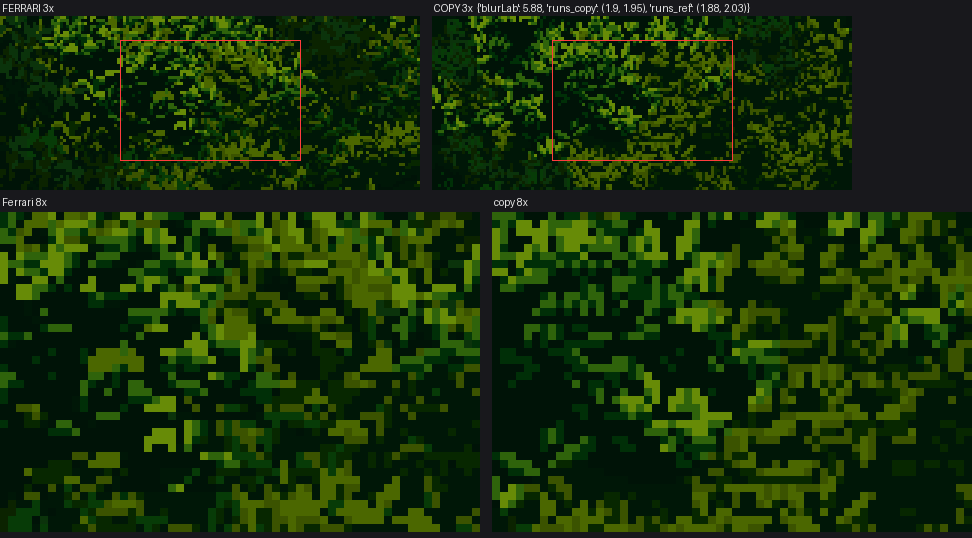
24. elements/willow/stage0/c1_fgbush_s2.png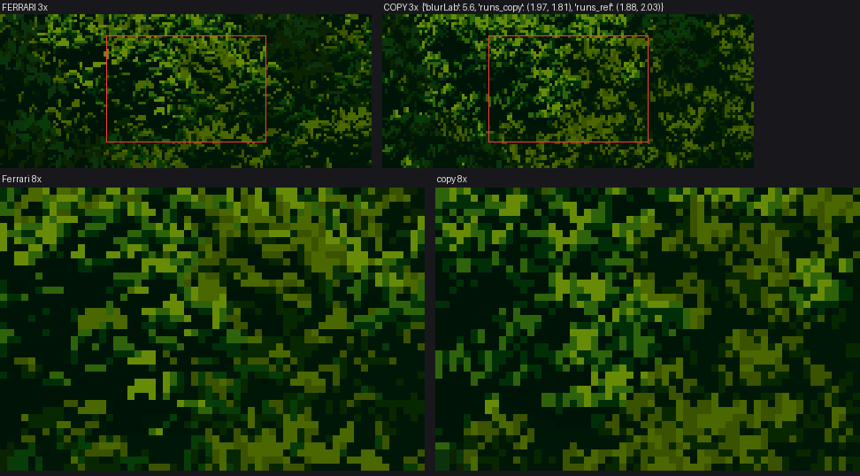
25. elements/willow/stage0/c1_fgbush_s0.pngBash: Try no base speckle
cd ~/work/pixelart-studies/elements/willow && nice -n 10 python3 -c "
import pickle
from stage0_copy import copy_c1
from foliage import near_sprays
b=pickle.load(open('stage0/_best_c1.pkl','rb'))[2][1]
b.update(base1=(0.0,0.08),dens=(0.7,1.0),wmax=(0.9,1.6),lens=(3.0,5.5),sd=0.55,bright=1.1)
print(copy_c1(fn=near_sprays,tag='_s2b',**b))
" | tail -2
# output:
copy {'share': [0.429, 0.222, 0.232, 0.117], '>=3': {'per100': 3.74, 'size': (2.0, 7.0), 'h': 1.950657894736842, 'w': 1.861842105263158}, '>=2': {'per100': 4.46, 'size': (3.0, 20.900000000000034), 'h': 2.7099447513812156, 'w': 3.1298342541436464}, 'below_top': [0.1, 0.14, 0.35, 0.4]}
{'blurLab': 6.08, 'runs_copy': (1.8, 1.87), 'runs_ref': (1.88, 2.03)}Read: elements/willow/stage0/c1_fgbush_s2b.png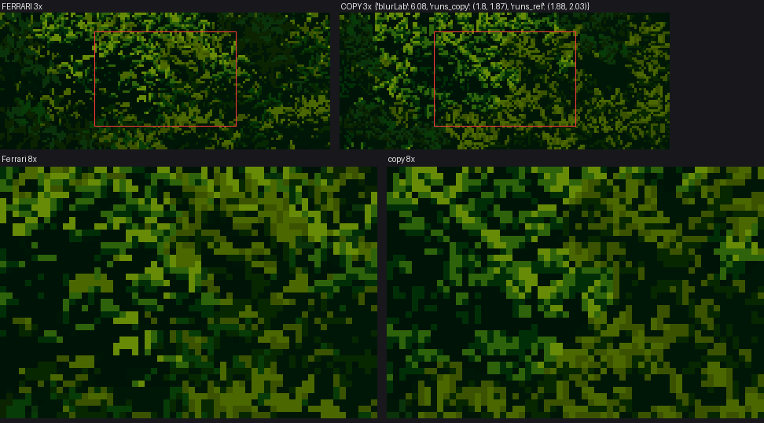
26. elements/willow/stage0/c1_fgbush_s2b.pngBash: Check for critique
cd ~/work/pixelart-studies/elements/willow && ls; cat CRITIQUE.md 2>/dev/null | head -50 # output: __pycache__ bush.py copyharness.py foliage.py glyphstats.py lw.py refs search0.py stage0 stage0_copy.py stage1 stage1.py wpaint.py
Bash: Catalogue Ferrari lit leaf shapes
cd ~/work/pixelart-studies/elements/willow && python3 - <<'E'
import numpy as np
from scipy import ndimage as ndi
from lw import load
from copyharness import decompose
from collections import Counter
d=load('V09'); idx=d['idx'][285:400,0:200]; pal=d['pal']
R,S,t=decompose(idx,pal,[[13,11,10,9],[26,47,57,45],[26,59,2,25]])
lab,n=ndi.label(S==3)
shapes=Counter()
ex={}
for i,sl in enumerate(ndi.find_objects(lab)):
m=(lab[sl]==i+1)
key=tuple(map(tuple,m.astype(int)))
shapes[key]+=1
tot=sum(shapes.values()); print('components',tot)
for k,c in shapes.most_common(24):
print(c, round(100*c/tot,1),'%')
for r in k: print(' '+''.join('#' if v else '.' for v in r))
E
# output:
components 1075
497 46.2 %
#
101 9.4 %
#
#
99 9.2 %
##
61 5.7 %
###
31 2.9 %
#
#
#
16 1.5 %
#.
##
13 1.2 %
##
#.
11 1.0 %
##
.#
10 0.9 %
.#
##
7 0.7 %
##
##
6 0.6 %
.#
##
.#
5 0.5 %
.#.
###
5 0.5 %
####
4 0.4 %
###
#..
4 0.4 %
####
.#..
3 0.3 %
##.
.##
3 0.3 %
.#..
####
3 0.3 %
.#
##
#.
3 0.3 %
.##
###
3 0.3 %
.#.
###
.##
3 0.3 %
..#
###
3 0.3 %
.###.
#####
3 0.3 %
####
#...
3 0.3 %
####
...#Bash: Catalogue composite leaf marks (steps 2-3)
cd ~/work/pixelart-studies/elements/willow && python3 - <<'E'
import numpy as np
from scipy import ndimage as ndi
from lw import load
from copyharness import decompose
from collections import Counter
d=load('V09'); idx=d['idx'][285:400,0:200]; pal=d['pal']
R,S,t=decompose(idx,pal,[[13,11,10,9],[26,47,57,45],[26,59,2,25]])
m=(S>=2)&(R<2)
lab,n=ndi.label(m)
sz=np.bincount(lab.ravel())[1:]
print('n',n,'size pct',np.percentile(sz,[25,50,75,90,97]))
import random; random.seed(1)
sl=ndi.find_objects(lab)
cands=[i for i in range(n) if 5<=sz[i]<=14]
for i in random.sample(cands,20):
s=sl[i]; sub=S[s]*(lab[s]==i+1)
print(sz[i])
for r in sub: print(' '+''.join({0:'.',1:'.',2:'o',3:'#'}[v] for v in r))
E
# output:
n 820 size pct [ 1. 2. 4. 10. 25.43]
11
.###..
oooo#.
o...oo
5
o...
oooo
5
o...
oooo
6
.o
oo
oo
.o
14
.###.
#####
ooo.#
..o.o
5
ooooo
5
.##
ooo
13
.##..
.ooo.
##o#o
.o#.#
8
.##
###
###
6
o#..
oo#o
8
..o..
###..
.ooo#
8
.#
.#
#o
#o
#.
o.
11
.ooo.
ooooo
...oo
....o
11
..o...
.oo...
ooo##.
...oo#
6
..o
##o
.o.
.o.
6
.###
#oo.
9
o....
o....
oo...
.o...
.oooo
5
o.
oo
oo
10
..oo
oooo
oooo
10
.oo
ooo
.oo
.o.
.o.
.o.Bash: Add stems and shape-aware search
cd ~/work/pixelart-studies/elements/willow && python3 - <<'E'
s=open('foliage.py').read()
s=s.replace("mask=None, bright=1.0, sd=0.45, grad=1.2, tuck_p=0.5, fill_leaves=0.0):",
"mask=None, bright=1.0, sd=0.45, grad=1.2, tuck_p=0.5, fill_leaves=0.0, stem_p=0.0, stem_len=(2, 5)):")
s=s.replace(""" Ls.sort()
for (_, x, y, ang, tp) in Ls:""",""" Ls.sort()
if rng.random() < stem_p: # a petiole/stem under the spray, 1 px, one step below the spray
sl = int(rng.integers(stem_len[0], stem_len[1] + 1))
sx = int(round(cx)); sy = int(round(cy))
lean = rng.choice([0, 0, 1, -1])
for k, (px, py) in enumerate(clean_line(sx, sy, sx + lean * sl / 2, sy + sl)):
if 0 <= px < w and 0 <= py < h and mask[py, px]:
S[py, px] = int(np.clip(round(base) - 1, 1, top - 1))
for (_, x, y, ang, tp) in Ls:""")
open('foliage.py','w').write(s)
s=open('search0.py').read()
s=s.replace(""" return m['blurLab']+15*sh+3*cc, m, c""",""" from scipy import ndimage as ndi
def shp(SS):
lab,n=ndi.label(SS==3); sz=np.bincount(lab.ravel())[1:]; one=(sz==1).mean()
lab,n=ndi.label(SS>=2); sz2=np.bincount(lab.ravel())[1:]
return one, np.percentile(sz2,[50,75,90])
o1,p1=shp(S2); o0,p0=shp(S)
c['one']=round(o1,2); c['p2']=p1
return m['blurLab']+15*sh+3*cc+10*abs(o1-o0)+0.3*np.abs(np.log(p1/p0)).sum()*5, m, c""")
s=s.replace("up_bias=rng.uniform(0,1.5),tuck_p=rng.uniform(0.2,0.9))","up_bias=rng.uniform(0,1.5),tuck_p=rng.uniform(0.2,0.9),stem_p=rng.uniform(0,0.8),dens=(rng.uniform(0.3,0.9),1.0))")
s=s.replace("range(60)","range(120)")
open('search0.py','w').write(s)
E
grep -n "clean_line" foliage.py | head -2; nice -n 10 python3 search0.py
# output:
8:from wpaint import clean_line, value_noise
15: up = clean_line(x, y, x + dx, y + dy)
8.38 5.58 [0.456, 0.23, 0.193, 0.121] {'per100': 3.95, 'size': (2.0, 6.0), 'h': 1.9345794392523366, 'w': 1.9034267912772587}
{'spray_r': 4.22, 'spray_size': (2.8, 4.1), 'leaves': (3, 13), 'bright': 1.29, 'sd': 0.51, 'grad': 0.63, 'base1': (0.25, 0.52), 'lens': (2.71, 4.33), 'wmax': (0.65, 1.74), 'up_bias': 0.61, 'tuck_p': 0.77, 'stem_p': 0.72, 'dens': (0.44, 1.0)}
9.23 6.14 [0.492, 0.193, 0.192, 0.123] {'per100': 3.98, 'size': (2.0, 6.0), 'h': 1.9597523219814241, 'w': 1.931888544891641}
{'spray_r': 4.61, 'spray_size': (2.51, 4.9), 'leaves': (6, 7), 'bright': 1.35, 'sd': 0.51, 'grad': 1.54, 'base1': (0.21, 0.49), 'lens': (3.23, 5.3), 'wmax': (0.79, 1.3), 'up_bias': 0.34, 'tuck_p': 0.69, 'stem_p': 0.56, 'dens': (0.42, 1.0)}
9.28 5.98 [0.488, 0.193, 0.208, 0.111] {'per100': 3.6, 'size': (2.0, 6.0), 'h': 1.9143835616438356, 'w': 1.9315068493150684}
{'spray_r': 5.17, 'spray_size': (1.72, 3.7), 'leaves': (3, 12), 'bright': 1.28, 'sd': 0.75, 'grad': 1.12, 'base1': (0.12, 0.35), 'lens': (2.73, 5.63), 'wmax': (0.71, 1.7), 'up_bias': 0.41, 'tuck_p': 0.67, 'stem_p': 0.45, 'dens': (0.68, 1.0)}
9.45 5.49 [0.433, 0.254, 0.225, 0.088] {'per100': 2.91, 'size': (2.0, 7.0), 'h': 1.9745762711864407, 'w': 1.8389830508474576}
{'spray_r': 4.07, 'spray_size': (1.83, 4.81), 'leaves': (5, 8), 'bright': 0.79, 'sd': 0.62, 'grad': 1.65, 'base1': (0.03, 0.33), 'lens': (2.6, 6.28), 'wmax': (0.6, 1.35), 'up_bias': 0.24, 'tuck_p': 0.53, 'stem_p': 0.73, 'dens': (0.72, 1.0)}Bash: Render new best
cd ~/work/pixelart-studies/elements/willow && nice -n 10 python3 -c "
import pickle
from stage0_copy import copy_c1
from foliage import near_sprays
b=pickle.load(open('stage0/_best_c1.pkl','rb'))
copy_c1(fn=near_sprays,tag='_t0',**b[0][1])
" >/dev/null
# output:
(Bash completed with no output)Read: elements/willow/stage0/c1_fgbush_t0.png 27. elements/willow/stage0/c1_fgbush_t0.png
27. elements/willow/stage0/c1_fgbush_t0.png
Bash: Map hedge ramp groups spatially
cd ~/work/pixelart-studies/elements/willow && python3 - <<'E'
import numpy as np
from lw import load, lum
from PIL import Image
d=load('V09'); idx=d['idx'][205:300,205:400]; pal=d['pal']
groups={'A':[43,48,10,9,6,24],'B':[42,41,50,40,49],'C':[86,83,84,85],'trunk':[30,31,55,131,130,129],'sky':[252,253,192,133,135,136]}
col={'A':(255,200,0),'B':(0,200,0),'C':(0,120,255),'trunk':(200,0,200),'sky':(255,255,255)}
out=np.zeros(idx.shape+(3,),np.uint8)
for g,ids in groups.items():
for i in ids: out[idx==i]=col[g]
u,n=np.unique(idx,return_counts=True)
known=sum(groups.values(),[])
print('unassigned:',[(int(a),int(b),pal[a].tolist()) for a,b in zip(u,n) if a not in known and b>20])
Image.fromarray(np.concatenate([pal[idx],out],1)).resize((195*2*4,95*4),Image.NEAREST).save('stage0/_hedge_groups.png')
E
# output:
unassigned: [(3, 247, [0, 31, 15]), (25, 40, [7, 59, 7]), (26, 28, [0, 23, 7]), (27, 161, [79, 123, 43]), (28, 77, [47, 83, 47]), (32, 146, [83, 75, 67]), (39, 35, [95, 179, 91]), (44, 96, [147, 139, 91]), (45, 44, [75, 103, 0]), (65, 228, [59, 59, 35]), (66, 307, [39, 31, 23]), (67, 206, [23, 15, 15]), (68, 103, [11, 7, 7]), (103, 23, [107, 103, 103]), (104, 23, [95, 87, 87]), (112, 100, [147, 131, 119]), (113, 154, [151, 139, 135]), (114, 114, [163, 155, 143]), (128, 100, [175, 163, 163]), (132, 79, [131, 139, 151]), (134, 79, [203, 215, 219]), (144, 52, [191, 191, 191]), (145, 68, [215, 199, 211]), (146, 69, [175, 171, 175]), (147, 65, [159, 147, 159]), (148, 51, [147, 163, 179]), (149, 107, [187, 195, 203]), (150, 124, [203, 203, 203]), (151, 119, [175, 175, 187]), (152, 107, [167, 167, 179]), (153, 107, [155, 179, 195]), (155, 26, [159, 223, 179]), (193, 172, [147, 235, 191]), (194, 84, [115, 191, 179]), (195, 371, [139, 211, 203]), (251, 508, [155, 255, 255])]Read: elements/willow/stage0/_hedge_groups.png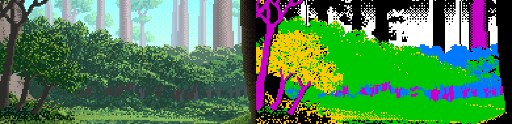
28. elements/willow/stage0/_hedge_groups.pngBash: ASCII of hedge steps
cd ~/work/pixelart-studies/elements/willow && python3 - <<'E'
import numpy as np
from lw import load
from copyharness import decompose
d=load('V09'); idx=d['idx'][222:282,255:395]; pal=d['pal']
R,S,t=decompose(idx,pal,[[42,41,50,40,49],[86,83,84,85],[43,48]])
ch=[['.',':','o','O','#'],[' ','-','=','%'],['x','X']]
known=set([42,41,50,40,49,86,83,84,85,43,48])
for y in range(0,60):
print(''.join((ch[R[y,x]][S[y,x]] if idx[y,x] in known else '~') for x in range(0,140)))
E
# output:
:#:X~~~~XXX:X~~~~~~~~~~~~~~~~~~~~~~~~~~~~~~~~~~~~~~~~~~~~~~~~~~~~~~~~~~~~~~~~~~~~~~~~~~~~~~~~~~~~~~~~~~~~~~~~~~~~~~~~~~~~~~~~~~~~~~~~~~~~~~~
:#:X#~o:~:XX:~:~~~~~~~~~~~~~~~~~~~~~~~~~~~~~~~~~~~~~~~~~~~~~~~~~~~~~~~~~~~~~~~~~~~~~~~~~~~~~~~~~~~~~~~~~~~~~~~~~~~~~~~~~~~~~~~~~~~~~~~~~~~~~
::::~#Oo:O:#:O~~~~~~~~~~~~~~~~~~~~~~~~~~~~~~~~~~~~~~~~~~~~~~~~~~~~~~~~~~~~~~~~~~~~~~~~~~~~~~~~~~~~~~~~~~~~~~~~~~~~~~~~~~~~~~~~~~~~~~~~~~~~~~
:#O:X::XX:X:#:~#~~~~~~~~~~~~~~~~~~~~~~~~~~~~~~~~~~~~~~~~~~~~~~~~~~~~~~~~~~~~~~~~~~~~~~~~~~~~~~~~~~~~~~~~~~~~~~~~~~~~~~~~~~~~~~~~~~~~~~~~~~~~
.:::::::::o:XXX#O~~~~~~~~~~~~~~~~~~~~~~~~~~~~~~~~~~~~~~~~~~~~~~~~~~~~~~~~~~~~~~~~~~~~~~~~~~~~~~~~~~~~~~~~~~~~~~~~~~~~~~~~~~~~~~~~~~~~~~~~~~~
.:::::#:O::OoO:##~~~~~~~~O#~~~O~~~~~~~~~~~~~~~~~~~~~~~~~~~~~~~~~~~~~~~~~~~~~~~~~~~~~~~~~~~~~~~~~~~~~~~~~~~~~~~~~~~~~~~~~~~~~~~~~~~~~~~~~~~~~
.o.OO:::#.###.#X:X~~~~~XXX:X~XX#~~~~~~~~~~~~~~~~~~~~~~~~~~~~~~~~~~~~~~~~~~~~~~~~~~~~~~~~~~~~~~~~~~~~~~~~~~~~~~~~~~~~~~~~~~~~~~~~~~~~~~~~~~~~
..:OOo:OOo::oX##:#~~O~O~Oo:###X:#~~~~~~~~~~~~~~~~~~~~~~~~~~~~~~~~~~~~~~~~~~~~~~~~~~~~~~~~~~~~~~~~~~~~~~~~~~~~~~~~~~~~~~~~~~~~~~~~~~~~~~~~~~~
..:..O:o:X.oo#o:O:~#OOO:::::O####~~~~~~~~~~~~~~~~~~~~~~~~~~~~~~~~~~~~~~~~~~~~~~~~~~~~~~~~~~~~~~~~~~~~~~~~~~~~~~~~~~~~~~~~~~~~~~~~~~~~~~~~~~~
X...:O...:oo.##OO~::#:.#::~~~:::~O~~~~~~~~~~~~~~~~~~~~~~~~~~~~~~~~~~~~~~~~~~~~~~~~~~~~~~~~~~~~~~~~~~~~~~~~~~~~~~~~~~~~~~~~~~~~~~~~~~~~~~~~~~
O...O.OO..Oo##~o~~:::.::.:~::.O:Oo:~~~~~~~~~~~~~~~~~~~~~~~~~~~~~~~~~~~~~~~~~~~~~~~~~~~~~~~~~~~~~~~~~~~~~~~~~~~~~~~~~~~~~~~~~~~~~~~~~~~~~~~~~
O....:.:...O:#:::o:.:..o#..:.#.oXX~~~~~~~~~~~~~~~~~~~~~~~~~~~~~~~~~~~~~~~~~~~~~~~~~~~~~~~~~~~~~~~~~~~~~~~~~~~~~~~~~~~~~~~~~~~~~~~~~~~~~~~~~~
O:::..:O.:O::o#:#o::.O.O:OO.OO..~oOo~~O~#:~~~~~~~~~~~~~~~~~~~~~~~~~~~~~~~~~~~~~~~~~~~~~~~~~~~~~~~~~~~~~~~~~~~~~~~~~~~~~~~~~~~~~~~~~~~~~~~~~~
.O......:..oO:O::O:~:.::..:...##XX:~~XX##~O~~~~~~~~~~~~~~~~~~~~~~~~~~~~~~~~~~~~~~~~~~~~~~~~~~~~~~~~~~~~~~~~~~~~~~~~~~~~~~~~~~~~~~~~~~~~~~~~~
.O:...O.:.::oOOX::.:oO...#.#X:..XoOoOOXXX:O:~~#~#~~~~~~~~~~~~~~~~~~~~~~~~~~~~~~~~~~~~~~~~~~~~~~~~~~~~~~~~~~~~~~~~~~~~~~~~~~~~~~~~~~~~~~~~~~~
...:.o:::..:o.Oo#..#.X:..#X:.:#X#::::O#~:X:~~:X:~##~~~~~~~~~~~~~~~~~~~~~~~~~~~~~~~~~~~~~~~~~~~~~~~~~~~~~~~~~~~~~~~~~~~~~~~~~~~~~~~~~~~~~~~~~
.::...:O..::.O.o:.::..O:Oo.oo#o:#.####..:::::~##XX~:~O~~~~~~~~~~~~~~~~~~~~~~~~~~~~~~~~~~~~~~~~~~~~~~~~~~~~~~~~~~~~~~~~~~~~~~~~~~~~~~~=~~~~~~
.X...:.:o:.:o.:o..o::ooo:o:O#:oO.o.oo....:::~oOO:o:X::O~~~~~~~X~~~~~~~~~~~~=%%%~~~~~~~~~~~~~~~~~~~~~~%%~~~~~~~~~~~~~~~~~~~~~~~~~~===%%~~~~~~
.O..X:.O...:.:..oo:::O.:Oo:.::::.:.O..O:::::X::##:O#:#o~OO~~~OXOO~OO~O~#~~~===%%%%~~=%%%%%~~~~~~~~~%%==%%==%%%~~~~~~~~~~~~~~~~~~===%==~~~~~~
.:~:X:O:....oo.:oo....:::oOO#OO.oOO..:.#...:#:~:::#O~OXXXOO~OOX:OOOOO~:O%%O%%==%==~~====%%%~~~~~~~%==%==%%%%%%=~~~~~~~%=%%~~~~~~======~~~~~~
~~XxX...:.::O..::..:::...ooo::o:oOO.....o:OOOo:X.::####~#X:XX#::###OOOO:O:=#=%%=%%=====%=%%%~~~~~~~=%=====%%%%%~~~=%%%%%%=~~~===~=====~~~~~~
xxXxx...:.::O..O...o...o.o..:oOoo..o..oBash: Copy C2 hedge first attempt
cd ~/work/pixelart-studies/elements/willow && cat >> stage0_copy.py <<'E'
def copy_c2(seed=1, tag="", fnB=None, kwB=None, kwC=None, fringe=None, sigma=2.0, detail=(50, 0, 60, 36)):
"""The middle-distance hedge: B (main band) and C (far, bluer) ramps generated, everything
else (sky, pale far trunks, dark trunks) kept from the reference as the setting."""
from scipy import ndimage as ndi
from foliage import near_sprays
y0, y1, x0, x1 = 222, 282, 255, 395
idx = V09["idx"][y0:y1, x0:x1]; pal = V09["pal"]
ramps = [[42, 41, 50, 40, 49], [86, 83, 84, 85]]
known = np.isin(idx, sum(ramps, []))
R, S, table = decompose(idx, pal, ramps)
ref = pal[idx].copy()
# sketch: smoothed foliage silhouette and region, light field
fol = ndi.uniform_filter(known.astype(float), 5) > 0.5
region, light = sketch(np.where(known, R, 0), np.where(known, S, 0), 2, 4, sigma=sigma)
light = np.where(known, ndi.gaussian_filter(np.where(known, S / 4.0, 0), sigma) /
np.maximum(ndi.gaussian_filter(known.astype(float), sigma), 1e-3), 0)
light = ndi.grey_dilation(light, size=3) * (1 - fol) + light * fol
# background: reference pixels outside foliage; under the old foliage use nearest background
bgm = ~known
ii = ndi.distance_transform_edt(~bgm, return_distances=False, return_indices=True)
bg = ref[ii[0], ii[1]]
rng = np.random.default_rng(seed)
fnB = fnB or near_sprays
SB = fnB(region, light, rng, top=4, mask=fol, **(kwB or {}))
SC = fnB(region, light, rng, top=3, mask=fol, **(kwC or kwB or {}))
Sg = np.where(region == 0, SB, SC)
cp = bg.copy()
fl = render(region, Sg, table)
cp[fol] = fl[fol]
if fringe is not None:
cp = fringe(cp, fol, region, Sg, light, table, bg, rng)
m = metrics(cp, ref)
compare_sheet(cp, ref, f"{OUT}/c2_hedge{tag}.png", detail=detail, label=str(m), k=4)
return m, cp, ref
E
nice -n 10 python3 -c "
from stage0_copy import copy_c2
print(copy_c2(tag='_v1',kwB=dict(spray_r=3.0,spray_size=(1.2,2.2),leaves=(2,5),lens=(1.5,3),wmax=(0.4,0.9),bright=0.8,base1=(0.3,0.7),stem_p=0.0,dens=(0.4,1.0)))[0])
"
# output:
{'blurLab': 7.45, 'runs_copy': (2.11, 1.98), 'runs_ref': (1.87, 1.8)}Read: elements/willow/stage0/c2_hedge_v1.png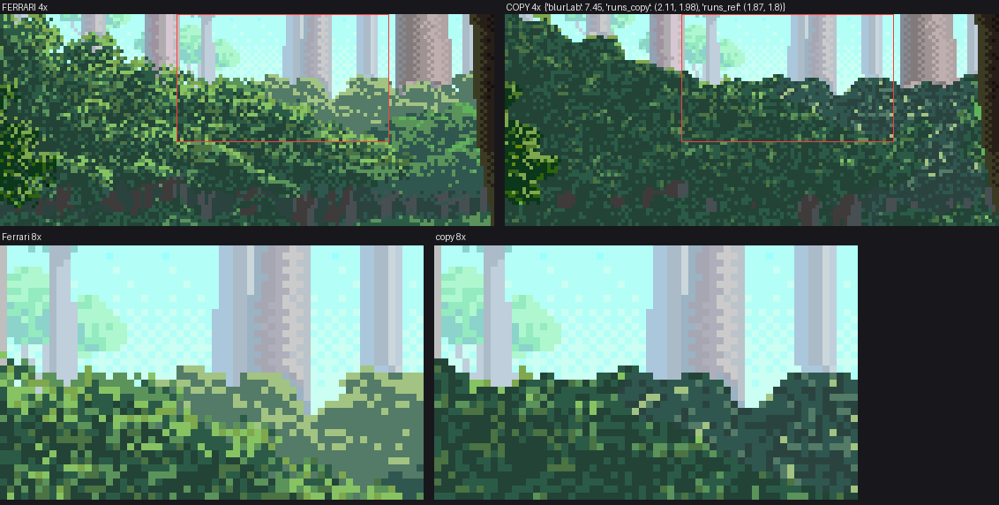
29. elements/willow/stage0/c2_hedge_v1.pngBash: Hedge B/C step shares
cd ~/work/pixelart-studies/elements/willow && sed -i '' 's/ y0, y1, x0, x1 = 222, 282, 255, 395/ y0, y1, x0, x1 = 222, 282, 265, 395/; s/detail=(50, 0, 60, 36)):/detail=(40, 0, 60, 36)):/' stage0_copy.py && python3 - <<'E'
import numpy as np
from lw import load
from copyharness import decompose, rs_stats
d=load('V09'); idx=d['idx'][222:282,265:395]; pal=d['pal']
R,S,t=decompose(idx,pal,[[42,41,50,40,49],[86,83,84,85]])
k=np.isin(idx,[42,41,50,40,49])
print('B share', np.round(np.bincount(S[k],minlength=5)/k.sum(),3))
k2=np.isin(idx,[86,83,84,85]); print('C share', np.round(np.bincount(S[k2],minlength=4)/k2.sum(),3))
E
# output:
B share [0.386 0.269 0.085 0.181 0.078]
C share [0.254 0.333 0.298 0.115]Bash: Search hedge parameters
cd ~/work/pixelart-studies/elements/willow && cat > search_c2.py <<'E'
import numpy as np, pickle, contextlib, io
from stage0_copy import copy_c2
rng=np.random.default_rng(0)
res=[]
refB=np.array([0.386,0.269,0.085,0.181,0.078])
from lw import load
from copyharness import decompose
d=load('V09'); idx=d['idx'][222:282,265:395]; pal=d['pal']
def shares(cp):
# map copy RGB back to B indices
cols={tuple(pal[i]):s for s,i in enumerate([42,41,50,40,49])}
v=[cols.get(tuple(p),-1) for p in cp.reshape(-1,3)]
v=np.array(v); v=v[v>=0]; return np.bincount(v,minlength=5)/max(1,len(v))
for it in range(80):
kw=dict(spray_r=rng.uniform(1.8,4),spray_size=(rng.uniform(0.6,1.5),rng.uniform(1.6,3.5)),leaves=(int(rng.integers(1,4)),int(rng.integers(4,9))),
lens=(rng.uniform(1,2),rng.uniform(2,3.5)),wmax=(rng.uniform(.2,.6),rng.uniform(.6,1.2)),bright=rng.uniform(0.2,1.5),sd=rng.uniform(0.3,0.9),
grad=rng.uniform(0,2.5),base1=(rng.uniform(0,.4),rng.uniform(.3,.9)),up_bias=rng.uniform(0,1.2),tuck_p=rng.uniform(0,0.7),dens=(rng.uniform(0.3,0.9),1.0))
with contextlib.redirect_stdout(io.StringIO()):
m,cp,ref=copy_c2(kwB=kw,tag='_search')
sh=shares(cp); s=m['blurLab']+20*np.abs(sh-refB).sum()
res.append((s,kw,m,sh))
res.sort(key=lambda t:t[0])
for s,kw,m,sh in res[:3]: print(round(s,2),m,np.round(sh,3),'\n ',kw)
pickle.dump(res[:5],open('stage0/_best_c2.pkl','wb'))
E
nice -n 10 python3 search_c2.py
# output:
8.43 {'blurLab': 3.95, 'runs_copy': (1.76, 1.62), 'runs_ref': (1.89, 1.83)} [0.392 0.275 0.186 0.11 0.038]
{'spray_r': 2.105649694064435, 'spray_size': (1.233407192340118, 3.1600958679498135), 'leaves': (1, 8), 'lens': (1.8437905623687267, 2.636159728166019), 'wmax': (0.5918754834038626, 1.184390642911413), 'bright': 0.8547800729607526, 'sd': 0.7520679231503431, 'grad': 2.284594169182907, 'base1': (0.19045882878750123, 0.818271744658251), 'up_bias': 0.8418822792742473, 'tuck_p': 0.20574697918219031, 'dens': (0.7605913619900841, 1.0)}
9.41 {'blurLab': 4.43, 'runs_copy': (1.68, 1.63), 'runs_ref': (1.89, 1.83)} [0.373 0.356 0.123 0.111 0.037]
{'spray_r': 1.9654340346700034, 'spray_size': (0.622919480844487, 2.0090755442115067), 'leaves': (2, 4), 'lens': (1.7944328371222267, 2.227444496690982), 'wmax': (0.33598002678856986, 0.6079490285901084), 'bright': 1.4110398140182954, 'sd': 0.4926242367387038, 'grad': 2.1071960317598717, 'base1': (0.3847739365384367, 0.7364712124907886), 'up_bias': 0.31289022510445064, 'tuck_p': 0.34450183231559084, 'dens': (0.7695911634092858, 1.0)}
9.48 {'blurLab': 3.68, 'runs_copy': (1.71, 1.59), 'runs_ref': (1.89, 1.83)} [0.357 0.296 0.204 0.123 0.02 ]
{'spray_r': 1.8145167523175507, 'spray_size': (0.7645585910592305, 2.3996689698711617), 'leaves': (2, 5), 'lens': (1.1189651624145176, 2.6404364060598313), 'wmax': (0.44944689744933697, 0.8264780589194604), 'bright': 1.1210493282727219, 'sd': 0.43855325722696625, 'grad': 0.35956318067730864, 'base1': (0.2995599377953946, 0.701236877857233), 'up_bias': 0.515244831953715, 'tuck_p': 0.09573709937239913, 'dens': (0.6982102435973864, 1.0)}Bash: Add lower-half drop param and re-search
cd ~/work/pixelart-studies/elements/willow && python3 - <<'E'
s=open('foliage.py').read()
s=s.replace("def paint_leaf(S, mask, x, y, L, a, wm, tp, rng, tuck_p=0.5, extra=None):","def paint_leaf(S, mask, x, y, L, a, wm, tp, rng, tuck_p=0.5, extra=None, drop=1):")
s=s.replace(" S[py, px] = tp if role == \"T\" else max(0, tp - 1)\n low[px] = max(low.get(px, -1), py)\n if extra"," S[py, px] = tp if role == \"T\" else max(0, tp - drop)\n low[px] = max(low.get(px, -1), py)\n if extra")
s=s.replace("stem_p=0.0, stem_len=(2, 5)):","stem_p=0.0, stem_len=(2, 5), drop=1, minstep=1):")
s=s.replace(" tp = int(np.clip(round(base + grad * 0.5 * rel), 1, top))"," tp = int(np.clip(round(base + grad * 0.5 * rel), minstep, top))")
s=s.replace(" paint_leaf(S, mask, x, y, rng.uniform(*lens), ang, rng.uniform(*wmax), tp, rng, tuck_p)"," paint_leaf(S, mask, x, y, rng.uniform(*lens), ang, rng.uniform(*wmax), tp, rng, tuck_p, drop=drop)")
open('foliage.py','w').write(s)
s=open('search_c2.py').read()
s=s.replace("dens=(rng.uniform(0.3,0.9),1.0))","dens=(rng.uniform(0.3,0.9),1.0),drop=int(rng.integers(1,4)),minstep=int(rng.integers(1,3)))")
s=s.replace("range(80)","range(150)")
open('search_c2.py','w').write(s)
E
nice -n 10 python3 search_c2.py
# output:
7.76 {'blurLab': 4.02, 'runs_copy': (1.65, 1.59), 'runs_ref': (1.89, 1.83)} [0.392 0.271 0.171 0.112 0.054]
{'spray_r': 2.0064593375532738, 'spray_size': (0.9522423836741978, 1.7401079254558314), 'leaves': (2, 6), 'lens': (1.4285396081429238, 2.635606164455671), 'wmax': (0.43452014143631373, 0.673614396105644), 'bright': 1.4138995829438954, 'sd': 0.7104302688450199, 'grad': 2.059453395981929, 'base1': (0.35872049290550395, 0.6499920281540856), 'up_bias': 0.048261865085520834, 'tuck_p': 0.49804077688243054, 'dens': (0.641415512558015, 1.0), 'drop': 1, 'minstep': 2}
8.52 {'blurLab': 4.35, 'runs_copy': (1.76, 1.63), 'runs_ref': (1.89, 1.83)} [0.447 0.258 0.129 0.126 0.04 ]
{'spray_r': 2.016961471368558, 'spray_size': (0.6352188308066513, 3.1840888241217473), 'leaves': (2, 6), 'lens': (1.5506693153632958, 2.4090725709895486), 'wmax': (0.37328599281926755, 0.6796194792018995), 'bright': 1.4891203044183043, 'sd': 0.6297904434482868, 'grad': 0.24704530902542793, 'base1': (0.340630929267507, 0.5580477654705397), 'up_bias': 0.7622367414743528, 'tuck_p': 0.11007602566579279, 'dens': (0.5373531132482667, 1.0), 'drop': 1, 'minstep': 1}
9.6 {'blurLab': 4.26, 'runs_copy': (1.76, 1.67), 'runs_ref': (1.89, 1.83)} [0.457 0.237 0.148 0.108 0.05 ]
{'spray_r': 2.6032423701386227, 'spray_size': (0.6949457516132066, 2.7953054879254475), 'leaves': (3, 8), 'lens': (1.440377154715784, 3.4318857405361056), 'wmax': (0.39995832547505883, 0.8551371749094453), 'bright': 1.0062774876199911, 'sd': 0.8970579031411945, 'grad': 2.372359187344413, 'base1': (0.18401805572363844, 0.7546373071849749), 'up_bias': 0.5969072345851427, 'tuck_p': 0.3705185121377393, 'dens': (0.7714714204282845, 1.0), 'drop': 1, 'minstep': 1}Bash: Middle-distance speckle technique
cd ~/work/pixelart-studies/elements/willow && cat >> foliage.py <<'E'
MID_GLYPHS = { # small marks at middle distance: offsets (dx, dy, role) role 0 = top pixel, 1 = body
"dot": [(0, 0, 0)],
"h2": [(0, 0, 0), (1, 0, 0)],
"v2": [(0, 0, 0), (0, 1, 1)],
"d2": [(0, 0, 0), (1, 1, 1)],
"a2": [(0, 0, 0), (-1, 1, 1)],
"h3": [(0, 0, 0), (1, 0, 0), (2, 0, 1)],
"cap": [(0, 0, 0), (1, 0, 0), (-1, 1, 1), (2, 1, 1)],
"hook": [(0, 0, 0), (1, 0, 0), (1, 1, 1)],
}
def mid_speckle(region, light, rng, top=4, mask=None, base=(0.25, 0.75), dens=(0.05, 0.55),
glyphs=(("dot", 4), ("h2", 3), ("v2", 2), ("d2", 1), ("a2", 1), ("h3", 1), ("cap", 1), ("hook", 1)),
hi=(0.45, 0.9), body_drop=1, mid_p=0.15, spacing=1.6, jitter=0.7, clump=0.5, tuck_p=0.3):
"""Middle-distance foliage: a dithered dark base (steps 0/1, share of 1 rising with light) and
small lit marks of 1-4 px at the top two steps (the top step where the light is high), rarely
the middle step. Marks gather where the light is (density rises with light, clumped by noise)."""
h, w = light.shape
if mask is None:
mask = np.ones((h, w), bool)
S = np.zeros((h, w), int)
n = value_noise((h, w), 1.5, rng)
t = 0.55 * rng.random((h, w)) + 0.45 * (n - n.min()) / (np.ptp(n) + 1e-9)
S[(t < base[0] + (base[1] - base[0]) * light) & mask] = 1
cn = value_noise((h, w), 3.0, rng); cn = (cn - cn.min()) / (np.ptp(cn) + 1e-9)
names = [g for g, _ in glyphs]; wts = np.array([k for _, k in glyphs], float); wts /= wts.sum()
ys, xs = np.mgrid[0:h:spacing, 0:w:spacing]
ys = ys.ravel() + rng.uniform(-1, 1, ys.size) * spacing * jitter
xs = xs.ravel() + rng.uniform(-1, 1, xs.size) * spacing * jitter
order = rng.permutation(len(xs))
marks = []
for i in order:
xi, yi = int(round(xs[i])), int(round(ys[i]))
if not (0 <= xi < w and 0 <= yi < h) or not mask[yi, xi]:
continue
l = light[yi, xi]
p = dens[0] + (dens[1] - dens[0]) * l
p *= (1 - clump) + clump * 2 * cn[yi, xi]
if rng.random() > p:
continue
# top step where light is high, else the step below; rarely the middle step
ph = np.clip((l - hi[0]) / (hi[1] - hi[0]), 0, 1)
tp = top if rng.random() < ph else top - 1
if rng.random() < mid_p:
tp = top - 2
marks.append((tp, xi, yi, names[rng.choice(len(names), p=wts)]))
marks.sort(key=lambda m: m[0])
for tp, xi, yi, g in marks:
flip = rng.random() < 0.5
for dx, dy, role in MID_GLYPHS[g]:
px, py = xi + (-dx if flip else dx), yi + dy
if 0 <= px < w and 0 <= py < h and mask[py, px]:
S[py, px] = tp if role == 0 else max(0, tp - body_drop)
if rng.random() < tuck_p and 0 <= yi + 1 < h and mask[yi + 1, xi] and S[yi + 1, xi] < 2:
S[yi + 1, xi] = 0
return S
E
nice -n 10 python3 -c "
from stage0_copy import copy_c2
from foliage import mid_speckle
m,cp,ref=copy_c2(tag='_mid1',fnB=mid_speckle,kwB=dict())
print(m)
"
# output:
{'blurLab': 7.35, 'runs_copy': (2.06, 1.99), 'runs_ref': (1.89, 1.83)}Read: elements/willow/stage0/c2_hedge_mid1.png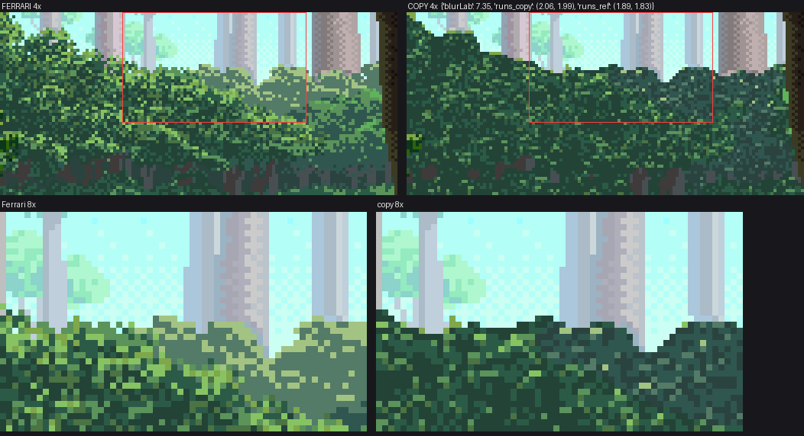
30. elements/willow/stage0/c2_hedge_mid1.pngBash: Normalize light field
cd ~/work/pixelart-studies/elements/willow && python3 - <<'E'
s=open('stage0_copy.py').read()
s=s.replace(" light = ndi.grey_dilation(light, size=3) * (1 - fol) + light * fol\n"," light = ndi.grey_dilation(light, size=3) * (1 - fol) + light * fol\n lo, hi_ = np.percentile(light[fol], [5, 97]); light = np.clip((light - lo) / (hi_ - lo), 0, 1)\n")
open('stage0_copy.py','w').write(s)
E
nice -n 10 python3 -c "
from stage0_copy import copy_c2
from foliage import mid_speckle
m,cp,ref=copy_c2(tag='_mid2',fnB=mid_speckle,kwB=dict())
print(m)
"
# output:
{'blurLab': 4.94, 'runs_copy': (1.94, 1.89), 'runs_ref': (1.89, 1.83)}Read: elements/willow/stage0/c2_hedge_mid2.png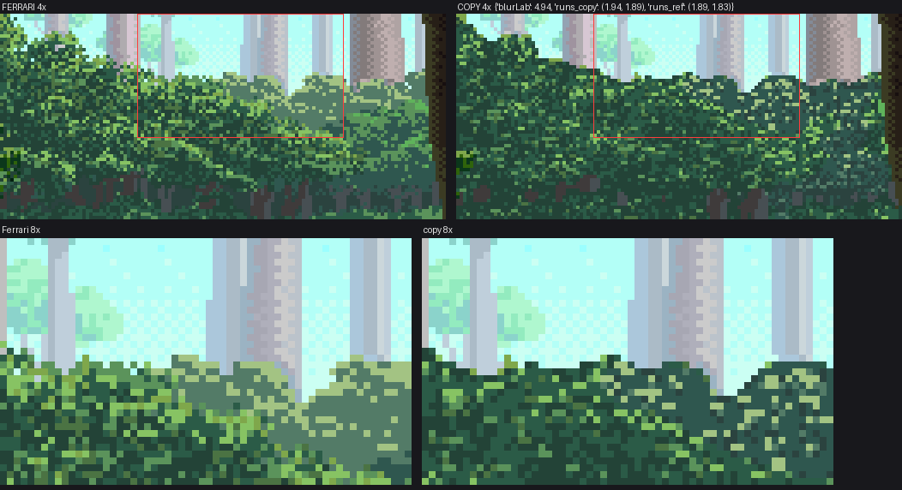
31. elements/willow/stage0/c2_hedge_mid2.pngBash: Add fringe technique and apply to hedge
cd ~/work/pixelart-studies/elements/willow && cat >> foliage.py <<'E'
def fringe(S, mask, light, rng, top, hole_p=0.25, bump_p=0.35, bump_h=(1, 3), rim_p=0.6,
side_scale=0.5, rim_steps=(1, 0), depth=2):
"""A leafy mass has no outline: its boundary is where the texture ends.
- crest pixels (open above) catch the light: top or top-1 step with prob rim_p*light
- bumps: 1..bump_h px of lit marks rise above the crest (a pixel, a pair, a little cap)
- holes: background opens 1-2 px into the mass just under the crest, a lit peak behind
Side edges get the same at side_scale. Returns (S, mask) both new arrays."""
h, w = S.shape
S = S.copy(); M = mask.copy()
up = np.zeros_like(mask); up[1:] = mask[1:] & ~mask[:-1]; up[0] = False
left = np.zeros_like(mask); left[:, 1:] = mask[:, 1:] & ~mask[:, :-1]
right = np.zeros_like(mask); right[:, :-1] = mask[:, :-1] & ~mask[:, 1:]
side = (left | right) & ~up
ys, xs = np.nonzero(up | side)
for y, x in zip(ys, xs):
l = light[y, x]
sc = 1.0 if up[y, x] else side_scale
r = rng.random()
if r < hole_p * sc:
# open a hole 1-2 px deep; the pixel below the hole becomes a lit peak edge
d = 1 if rng.random() < 0.6 else 2
for k in range(d):
if y + k < h:
M[y + k, x] = False
if y + d < h and M[y + d, x] and rng.random() < 0.5:
S[y + d, x] = max(S[y + d, x], top - 1 - rim_steps[1])
elif r < (hole_p + bump_p) * sc:
bh = int(rng.integers(bump_h[0], bump_h[1] + 1))
tp = top if rng.random() < l else top - 1
if up[y, x]:
for k in range(1, bh + 1):
if y - k >= 0:
M[y - k, x] = True; S[y - k, x] = tp if k == bh else max(1, tp - 1)
if rng.random() < 0.5 and bh > 1: # a little cap: shoulder beside the bump
xx = x + (1 if rng.random() < 0.5 else -1)
if 0 <= xx < w and y - bh + 1 >= 0:
M[y - bh + 1, xx] = True; S[y - bh + 1, xx] = max(1, tp - 1)
else:
xx = x - 1 if left[y, x] else x + 1
if 0 <= xx < w:
M[y, xx] = True; S[y, xx] = tp
if M[y, x] and rng.random() < rim_p * l * sc:
S[y, x] = max(S[y, x], top - rim_steps[0] if rng.random() < l else top - 1)
return S, M
E
python3 - <<'E'
s=open('~/work/pixelart-studies/elements/willow/stage0_copy.py').read()
s=s.replace(""" SB = fnB(region, light, rng, top=4, mask=fol, **(kwB or {}))
SC = fnB(region, light, rng, top=3, mask=fol, **(kwC or kwB or {}))
Sg = np.where(region == 0, SB, SC)
cp = bg.copy()
fl = render(region, Sg, table)
cp[fol] = fl[fol]
if fringe is not None:
cp = fringe(cp, fol, region, Sg, light, table, bg, rng)""",""" SB = fnB(region, light, rng, top=4, mask=fol, **(kwB or {}))
SC = fnB(region, light, rng, top=3, mask=fol, **(kwC or kwB or {}))
Sg = np.where(region == 0, SB, SC)
if fringe is not None:
from foliage import fringe as fr
SgB, MB = fr(Sg, fol & (region == 0), light, rng, 4, **fringe)
SgC, MC = fr(Sg, fol & (region == 1), light, rng, 3, **fringe)
region = np.where(MB & ~(fol & (region == 1)), 0, region)
Sg = np.where(region == 0, SgB, SgC)
fol = MB | MC
cp = bg.copy()
fl = render(region, Sg, table)
cp[fol] = fl[fol]""")
open('~/work/pixelart-studies/elements/willow/stage0_copy.py','w').write(s)
E
cd ~/work/pixelart-studies/elements/willow && nice -n 10 python3 -c "
from stage0_copy import copy_c2
from foliage import mid_speckle
m,cp,ref=copy_c2(tag='_mid3',fnB=mid_speckle,kwB=dict(hi=(0.35,0.8)),kwC=dict(base=(0.6,0.95),dens=(0.1,0.5),hi=(0.6,1.0),mid_p=0.4),fringe=dict())
print(m)
"
# output:
{'blurLab': 4.67, 'runs_copy': (1.94, 1.88), 'runs_ref': (1.89, 1.83)}Read: elements/willow/stage0/c2_hedge_mid3.png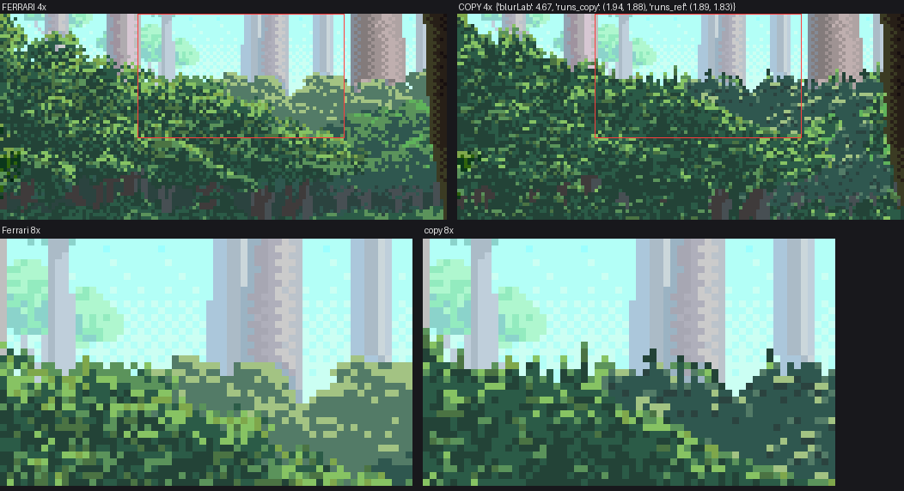
32. elements/willow/stage0/c2_hedge_mid3.pngBash: Cap-shaped fringe bumps, C base steps
cd ~/work/pixelart-studies/elements/willow && python3 - <<'E'
s=open('foliage.py').read()
a=s.index(" elif r < (hole_p + bump_p) * sc:")
b=s.index(" if M[y, x] and rng.random() < rim_p * l * sc:")
s=s[:a]+''' elif r < (hole_p + bump_p) * sc:
tp = top if rng.random() < l else top - 1
if up[y, x]:
# a cap: 1-4 px wide, 1 px tall, sometimes a single pixel on top of it
cw = int(rng.integers(bump_w[0], bump_w[1] + 1))
x0 = x - int(rng.integers(0, cw))
for xx in range(x0, x0 + cw):
if 0 <= xx < w and y - 1 >= 0 and not M[y - 1, xx]:
M[y - 1, xx] = True; S[y - 1, xx] = tp if rng.random() < 0.7 else max(1, tp - 1)
if cw >= 2 and rng.random() < peak_p and y - 2 >= 0:
xx = x0 + int(rng.integers(0, cw))
if 0 <= xx < w:
M[y - 2, xx] = True; S[y - 2, xx] = tp
else:
xx = x - 1 if left[y, x] else x + 1
if 0 <= xx < w:
M[y, xx] = True; S[y, xx] = tp
'''+s[b:]
s=s.replace("def fringe(S, mask, light, rng, top, hole_p=0.25, bump_p=0.35, bump_h=(1, 3), rim_p=0.6,","def fringe(S, mask, light, rng, top, hole_p=0.2, bump_p=0.3, bump_w=(1, 4), peak_p=0.3, rim_p=0.6,")
s=s.replace("""def mid_speckle(region, light, rng, top=4, mask=None, base=(0.25, 0.75), dens=(0.05, 0.55),""","""def mid_speckle(region, light, rng, top=4, mask=None, base=(0.25, 0.75), dens=(0.05, 0.55), base_steps=(0, 1),""")
s=s.replace(""" S[(t < base[0] + (base[1] - base[0]) * light) & mask] = 1
cn = value_noise((h, w), 3.0, rng)""",""" S[mask] = base_steps[0]
S[(t < base[0] + (base[1] - base[0]) * light) & mask] = base_steps[1]
cn = value_noise((h, w), 3.0, rng)""")
open('foliage.py','w').write(s)
E
nice -n 10 python3 -c "
from stage0_copy import copy_c2
from foliage import mid_speckle
m,cp,ref=copy_c2(tag='_mid4',fnB=mid_speckle,kwB=dict(hi=(0.35,0.8)),kwC=dict(base=(0.3,0.8),base_steps=(1,2),dens=(0.05,0.4),hi=(0.7,1.0),mid_p=0.0),fringe=dict())
print(m)
"
# output:
{'blurLab': 3.81, 'runs_copy': (1.93, 1.89), 'runs_ref': (1.89, 1.83)}Read: elements/willow/stage0/c2_hedge_mid4.png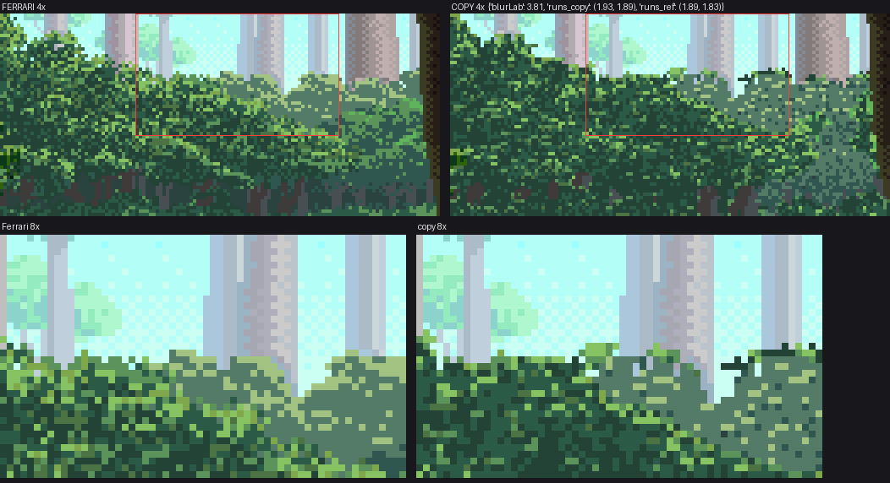
33. elements/willow/stage0/c2_hedge_mid4.pngBash: Fix fringe region, render two details
cd ~/work/pixelart-studies/elements/willow && python3 - <<'E'
s=open('stage0_copy.py').read()
s=s.replace(""" region = np.where(MB & ~(fol & (region == 1)), 0, region)""",""" newB = MB & ~fol; newC = MC & ~fol
region = np.where(newB, 0, np.where(newC, 1, region))""")
open('stage0_copy.py','w').write(s)
E
nice -n 10 python3 -c "
from stage0_copy import copy_c2
from foliage import mid_speckle
kwB=dict(hi=(0.35,0.8),clump=0.8)
kwC=dict(base=(0.3,0.8),base_steps=(1,2),dens=(0.05,0.4),hi=(0.7,1.0),mid_p=0.0)
m,cp,ref=copy_c2(tag='_mid5',fnB=mid_speckle,kwB=kwB,kwC=kwC,fringe=dict())
m,cp,ref=copy_c2(tag='_mid5low',fnB=mid_speckle,kwB=kwB,kwC=kwC,fringe=dict(),detail=(20,22,60,36))
print(m)
"
# output:
{'blurLab': 3.71, 'runs_copy': (1.91, 1.9), 'runs_ref': (1.89, 1.83)}Read: elements/willow/stage0/c2_hedge_mid5low.png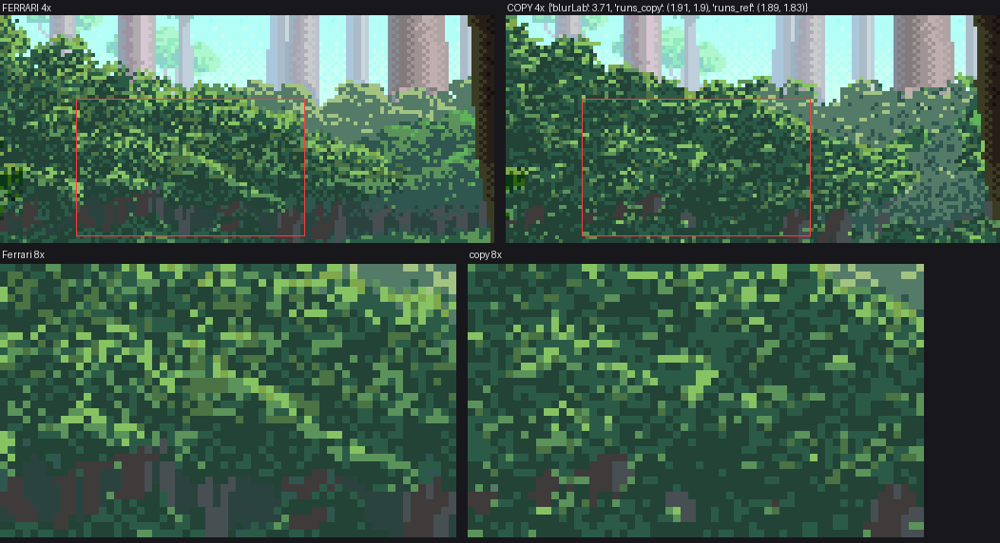
34. elements/willow/stage0/c2_hedge_mid5low.pngBash: Add sub-lobe rim arcs
cd ~/work/pixelart-studies/elements/willow && cat >> foliage.py <<'E'
def rim_arcs(S, mask, light, rng, top, r_sep=7.0, rad=(3.5, 8.0), squash=0.6, dens=(0.0, 0.9),
a0=(150, 175), a1=(10, 60), break_p=0.15, min_light=0.35, step_hi=0.7):
"""Sub-lobe rims: the upper edge of each small lobe inside the mass catches the light as a
broken 1-px arc (clean runs), drawn only where the light field is high enough."""
h, w = S.shape
S = S.copy()
C = poisson(h, w, r_sep, rng, mask=mask)
for (cx, cy) in C:
l = light[int(cy), int(cx)]
if l < min_light or rng.random() > dens[0] + (dens[1] - dens[0]) * l:
continue
R = rng.uniform(*rad)
s0, s1 = np.radians(rng.uniform(*a0)), np.radians(rng.uniform(*a1))
n = max(3, int(R * (s0 - s1) / 1.5))
pts = [(cx + R * np.cos(t), cy - R * squash * np.sin(t)) for t in np.linspace(s0, s1, n)]
from wpaint import polyline_clean
pix = polyline_clean([(round(x), round(y)) for x, y in pts])
on = True
for (px, py) in pix:
if rng.random() < break_p:
on = not on
if not on or not (0 <= px < w and 0 <= py < h) or not mask[py, px]:
continue
ll = light[py, px]
if ll < min_light * 0.8:
continue
S[py, px] = top if (ll > step_hi and rng.random() < ll) else top - 1
return S
E
python3 - <<'E'
s=open('~/work/pixelart-studies/elements/willow/stage0_copy.py').read()
s=s.replace("def copy_c2(seed=1, tag=\"\", fnB=None, kwB=None, kwC=None, fringe=None, sigma=2.0, detail=(40, 0, 60, 36)):",
"def copy_c2(seed=1, tag=\"\", fnB=None, kwB=None, kwC=None, fringe=None, sigma=2.0, detail=(40, 0, 60, 36), arcs=None):")
s=s.replace(""" Sg = np.where(region == 0, SB, SC)
if fringe is not None:""",""" if arcs is not None:
from foliage import rim_arcs
SB = rim_arcs(SB, fol & (region == 0), light, rng, 4, **arcs)
Sg = np.where(region == 0, SB, SC)
if fringe is not None:""")
open('~/work/pixelart-studies/elements/willow/stage0_copy.py','w').write(s)
E
nice -n 10 python3 -c "
from stage0_copy import copy_c2
from foliage import mid_speckle
kwB=dict(hi=(0.35,0.8),clump=0.8)
kwC=dict(base=(0.3,0.8),base_steps=(1,2),dens=(0.05,0.4),hi=(0.7,1.0),mid_p=0.0)
m,cp,ref=copy_c2(tag='_mid6low',fnB=mid_speckle,kwB=kwB,kwC=kwC,fringe=dict(),detail=(20,22,60,36),arcs=dict())
print(m)
"
# output:
{'blurLab': 3.51, 'runs_copy': (1.9, 1.9), 'runs_ref': (1.89, 1.83)}Read: elements/willow/stage0/c2_hedge_mid6low.png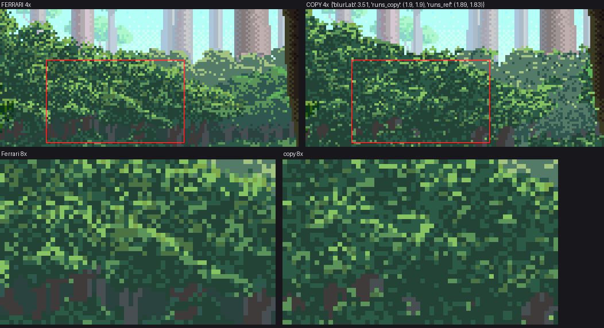
35. elements/willow/stage0/c2_hedge_mid6low.pngBash: More diagonal glyphs, stronger arcs
cd ~/work/pixelart-studies/elements/willow && python3 - <<'E'
s=open('foliage.py').read()
s=s.replace(''' "hook": [(0, 0, 0), (1, 0, 0), (1, 1, 1)],
}''',''' "hook": [(0, 0, 0), (1, 0, 0), (1, 1, 1)],
"d3": [(0, 0, 0), (1, 1, 0), (2, 2, 1)],
"s3": [(0, 0, 0), (1, 0, 0), (2, 1, 0), (3, 1, 1)],
"arc": [(-1, 1, 1), (0, 0, 0), (1, 0, 0), (2, 1, 1)],
}''')
open('foliage.py','w').write(s)
E
nice -n 10 python3 -c "
from stage0_copy import copy_c2
from foliage import mid_speckle
g=(('dot',4),('h2',3),('v2',1),('d2',2),('a2',2),('h3',1),('cap',1),('hook',1),('d3',2),('s3',2),('arc',2))
kwB=dict(hi=(0.35,0.8),clump=0.8,glyphs=g)
kwC=dict(base=(0.3,0.8),base_steps=(1,2),dens=(0.05,0.4),hi=(0.7,1.0),mid_p=0.0)
m,cp,ref=copy_c2(tag='_mid7low',fnB=mid_speckle,kwB=kwB,kwC=kwC,fringe=dict(),detail=(20,22,60,36),arcs=dict(min_light=0.15,dens=(0.3,1.0),r_sep=6))
m,cp,ref=copy_c2(tag='_mid7',fnB=mid_speckle,kwB=kwB,kwC=kwC,fringe=dict(),arcs=dict(min_light=0.15,dens=(0.3,1.0),r_sep=6))
print(m)
"
# output:
{'blurLab': 3.46, 'runs_copy': (1.85, 1.83), 'runs_ref': (1.89, 1.83)}Read: elements/willow/stage0/c2_hedge_mid7low.png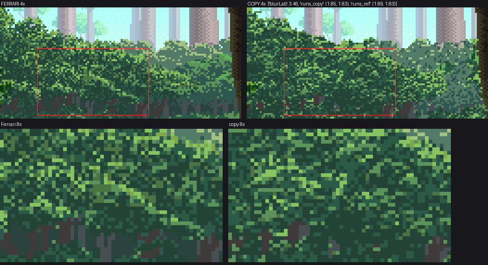
36. elements/willow/stage0/c2_hedge_mid7low.pngRead: elements/willow/stage0/c2_hedge_mid7.png 37. elements/willow/stage0/c2_hedge_mid7.png
37. elements/willow/stage0/c2_hedge_mid7.png
Read: elements/willow/stage1/s1a_mass.png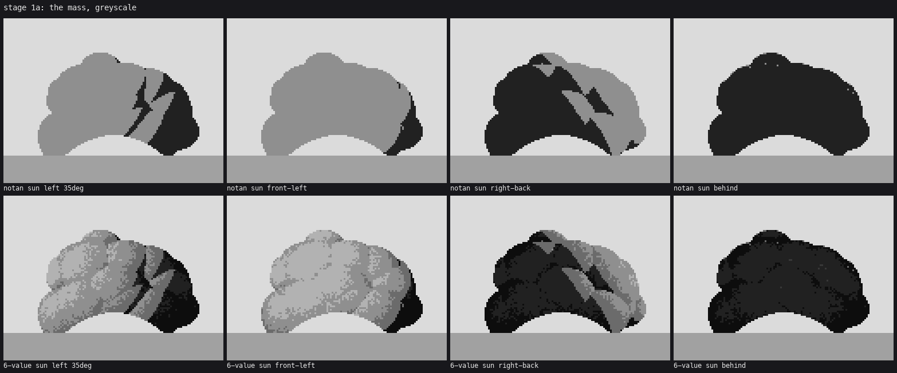
38. elements/willow/stage1/s1a_mass.pngBash: Smooth self-shadow, lower arch
cd ~/work/pixelart-studies/elements/willow && python3 - <<'E'
s=open('bush.py').read()
s=s.replace(""" T = int(shadow_len or self.W * 0.5)
for t in range(1, T, 1):
zs = ndi.shift(z, (-sy * t, -sx * t), order=0, cval=-1e9)
shadow |= zs > z + t * rate + 0.5
shadow &= mask""",""" T = int(shadow_len or self.W * 0.5)
zb = np.where(mask, ndi.gaussian_filter(np.where(mask, zmap, 0), 1.5) /
np.maximum(ndi.gaussian_filter(mask.astype(float), 1.5), 1e-3), -1e9)
for t in range(1, T, 1):
zs = ndi.shift(zb, (-sy * t, -sx * t), order=1, cval=-1e9)
shadow |= zs > zb + t * rate + 1.0
shadow &= mask
shadow = ndi.binary_closing(ndi.binary_opening(shadow, np.ones((3, 3))), np.ones((3, 3))) & mask""")
open('bush.py','w').write(s)
s=open('stage1.py').read()
s=s.replace("def mass_study(seed, L, gy=80, notan=False, lift=0.2):","def mass_study(seed, L, gy=80, notan=False, lift=0.07):")
open('stage1.py','w').write(s)
E
nice -n 10 python3 stage1.py
# output:
(Bash completed with no output)Read: elements/willow/stage1/s1a_mass.png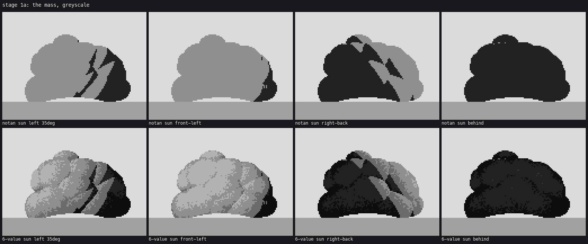
39. elements/willow/stage1/s1a_mass.pngBash: Envelope-dominated terminator, no cast march
cd ~/work/pixelart-studies/elements/willow && python3 - <<'E'
s=open('bush.py').read()
s=s.replace("def fields(self, w, h, L, ground_bounce=0.8, env_mix=0.4, term=0.10, shadow_len=None):",
"def fields(self, w, h, L, ground_bounce=0.8, env_mix=0.6, term=0.10, shadow_len=None, cast=False):")
s=s.replace(" if lxy > 1e-3:\n sx, sy"," if cast and lxy > 1e-3:\n sx, sy")
open('bush.py','w').write(s)
E
nice -n 10 python3 stage1.py
# output:
(Bash completed with no output)Read: elements/willow/stage1/s1a_mass.png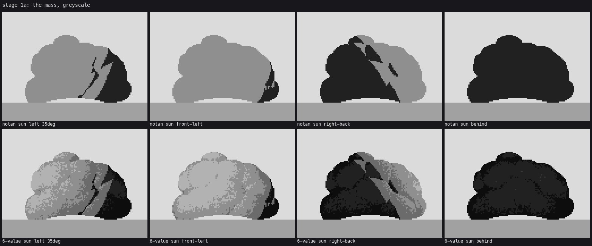
40. elements/willow/stage1/s1a_mass.pngBash: Blur lobe normals
cd ~/work/pixelart-studies/elements/willow && python3 - <<'E'
s=open('bush.py').read()
s=s.replace(""" nzl = np.sqrt(np.clip(1 - nx ** 2 - ny ** 2, 0.0, 1))""",""" mk = own >= 0
wsum = np.maximum(ndi.gaussian_filter(mk.astype(float), self.nsig), 1e-3)
nx = ndi.gaussian_filter(nx, self.nsig) / wsum; ny = ndi.gaussian_filter(ny, self.nsig) / wsum
nzl = np.sqrt(np.clip(1 - nx ** 2 - ny ** 2, 0.0, 1))""")
s=s.replace(" self.lift, self.lean, self.arch_w = lift, lean, arch_w"," self.lift, self.lean, self.arch_w = lift, lean, arch_w\n self.nsig = max(1.0, W * 0.02)")
open('bush.py','w').write(s)
E
nice -n 10 python3 stage1.py
# output:
(Bash completed with no output)Read: elements/willow/stage1/s1a_mass.png 41. elements/willow/stage1/s1a_mass.png
41. elements/willow/stage1/s1a_mass.png
Bash: Stage 1b textured mass
cd ~/work/pixelart-studies/elements/willow && cat >> stage1.py <<'E'
def textured(seed, L, gy=80, W_=92, H_=62, lift=0.07, kw=None, fr=None, rim_back=0.8):
"""Stage 1b: the mass textured with the stage-0 technique (dark base, lit marks whose density
and value follow the form), and its edge as a fringe."""
from foliage import mid_speckle, fringe, rim_arcs
rng = np.random.default_rng(seed)
b = Bush(64, gy, W_, H_, rng, lift=lift)
F = b.fields(W, H, L)
x = np.nan_to_num(F["x"])
# back light: the silhouette glows (leaves are thin; rim light on the edge band)
if L[2] < 0:
rim = np.clip(1 - (F["edge"] - 1) / 3.0, 0, 1) * (-L[2]) * rim_back
x = np.where(F["mask"], np.maximum(x, 2.0 + 2.8 * rim * (F["n"][..., 1] > -0.2)), x)
light = np.clip(x / 5.4, 0, 1)
cv = Canvas(W, H)
backdrop(cv, gy)
k = dict(top=5, base=(0.15, 0.7), dens=(0.04, 0.6), hi=(0.62, 0.95), mid_p=0.12)
k.update(kw or {})
S = mid_speckle(None, light, rng, mask=F["mask"], **k)
S = rim_arcs(S, F["mask"], light, rng, 5, min_light=0.55, dens=(0.2, 0.9), r_sep=6)
S, M = fringe(S, F["mask"], light, rng, 5, **(fr or {}))
# the underside: a dark contact band where the mass meets the gravel
base_band = M & (np.arange(H)[:, None] >= gy - 2)
S[base_band] = 0
cv.put(M, LEAF, S)
return cv, b, F
def run_1b():
pal = grey_palette()
suns = [("sun left 35deg", sun(20, 35)), ("sun front-left", sun(55, 40)),
("sun right-back", sun(200, 30)), ("sun behind", sun(270, 25))]
cells, labs = [], []
for name, L in suns:
cv, b, F = textured(3, L)
cells.append(upscale(cv.render(pal), 3)); labs.append(name)
save(label_grid(cells, 4, labels=labs, title="stage 1b: the mass textured, edge as fringe"), f"{OUT}/s1b_textured.png")
cv, b, F = textured(3, sun(20, 35))
save(cv.render(pal)[10:82, 14:114], f"{OUT}/s1b_one_x8.png", 8)
E
nice -n 10 python3 -c "
import stage1; stage1.run_1b()"
# output:
(Bash completed with no output)Read: elements/willow/stage1/s1b_textured.png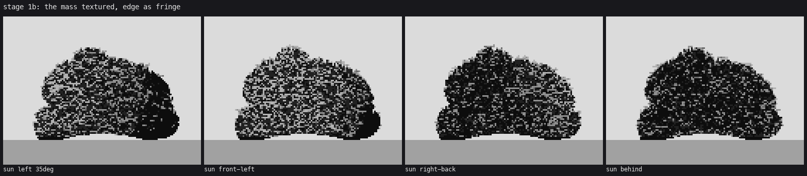
42. elements/willow/stage1/s1b_textured.pngBash: Family-based base steps
cd ~/work/pixelart-studies/elements/willow && python3 - <<'E'
s=open('stage1.py').read()
s=s.replace(""" k = dict(top=5, base=(0.15, 0.7), dens=(0.04, 0.6), hi=(0.62, 0.95), mid_p=0.12)
k.update(kw or {})
S = mid_speckle(None, light, rng, mask=F["mask"], **k)
S = rim_arcs(S, F["mask"], light, rng, 5, min_light=0.55, dens=(0.2, 0.9), r_sep=6)""",""" lit = F["mask"] & (x >= 2.9)
sh = F["mask"] & ~lit
ll = np.clip((x - 3) / 2.4, 0, 1) # position inside the lit family
ls = np.clip(x / 2.45, 0, 1) # position inside the shadow family
kL = dict(top=5, base=(0.2, 0.8), base_steps=(2, 3), dens=(0.15, 0.6), hi=(0.4, 0.9), mid_p=0.0)
kS = dict(top=2, base=(0.1, 0.8), base_steps=(0, 1), dens=(0.0, 0.3), hi=(0.6, 1.0), mid_p=0.0)
kL.update((kw or {}).get("lit", {})); kS.update((kw or {}).get("shadow", {}))
SL = mid_speckle(None, ll, rng, mask=lit, **kL)
SS = mid_speckle(None, ls, rng, mask=sh, **kS)
S = np.where(lit, SL, SS)
S = rim_arcs(S, lit, ll, rng, 5, min_light=0.3, dens=(0.2, 0.9), r_sep=6)""")
open('stage1.py','w').write(s)
E
nice -n 10 python3 -c "
import stage1; stage1.run_1b()"
# output:
(Bash completed with no output)Read: elements/willow/stage1/s1b_textured.png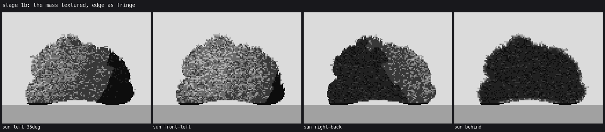
43. elements/willow/stage1/s1b_textured.pngBash: Find value plan lines
cd ~/work/pixelart-studies/elements/willow && grep -n "x_lit\|lit = \|occ = \|ao = " bush.py # output: 102: ao = np.clip((zmax - z) / (self.W * 0.12), 0, 1) 105: occ = np.clip(0.9 * ao + 0.6 * under * (1 - n[..., 1].clip(0, 1)), 0, 1) 109: lit = (d > term) & mask & ~shadow 110: x_lit = 3.0 + 2.4 * np.clip((d - term) / (1 - term), 0, 1) - 1.0 * occ 111: x_lit = np.clip(x_lit, 3.0, 5.4) 114: x = np.where(lit, x_lit, x_sh)
Bash: Stronger lobe AO; view raw field
cd ~/work/pixelart-studies/elements/willow && python3 - <<'E'
s=open('bush.py').read()
s=s.replace(" lit = (d > term) & mask & ~shadow\n"," lit = (d > term) & mask & ~shadow & ~(ao > self.crease_cross)\n")
s=s.replace("x_lit = 3.0 + 2.4 * np.clip((d - term) / (1 - term), 0, 1) - 1.0 * occ","x_lit = 3.0 + 2.4 * np.clip((d - term) / (1 - term), 0, 1) - self.ao_lit * occ")
s=s.replace(" self.nsig = max(1.0, W * 0.02)"," self.nsig = max(1.0, W * 0.02)\n self.crease_cross, self.ao_lit = 0.55, 1.8")
s=s.replace("def fields(self, w, h, L, ground_bounce=0.8, env_mix=0.6,","def fields(self, w, h, L, ground_bounce=0.8, env_mix=0.45,")
open('bush.py','w').write(s)
s=open('stage1.py').read()
s=s.replace("def textured(seed, L, gy=80, W_=92, H_=62, lift=0.07,","def textured(seed, L, gy=80, W_=92, H_=62, lift=0.0,")
s=s.replace('kS = dict(top=2, base=(0.1, 0.8), base_steps=(0, 1), dens=(0.0, 0.3), hi=(0.6, 1.0), mid_p=0.0)','kS = dict(top=2, base=(0.2, 0.9), base_steps=(0, 1), dens=(0.03, 0.35), hi=(0.5, 1.0), mid_p=0.0)')
open('stage1.py','w').write(s)
E
nice -n 10 python3 -c "
import stage1; stage1.run_1b()
import numpy as np
from wpaint import *
from bush import Bush
b=Bush(64,80,92,62,np.random.default_rng(3),lift=0)
F=b.fields(128,96,sun(20,35))
x=np.nan_to_num(F['x'],nan=-1)
img=np.where(x<0,0.9,np.array(GREY6)[np.clip(np.round(x),0,5).astype(int)])
save((np.stack([img]*3,-1)*255).astype(np.uint8),'stage1/_x_field.png',4)
"
# output:
(Bash completed with no output)Read: elements/willow/stage1/_x_field.png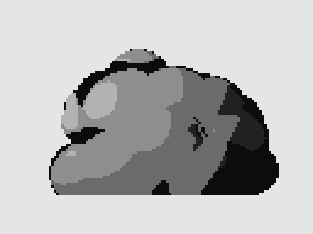
44. elements/willow/stage1/_x_field.pngBash: Wand-based willow bush geometry
cd ~/work/pixelart-studies/elements/willow && cat >> bush.py <<'E'
class WillowBush(Bush):
"""A willow: a fan of wands from a root crown, each arching out and drooping at the tip.
Leaf clusters (lobes) sit along the outer part of each wand, so the silhouette is the sum of
wand tips, and stems show where clusters are sparse (low down, between wands)."""
def __init__(self, cx, gy, W, H, rng, nw=None, spread=62, droop=0.35, leafy_from=0.35,
lobe_r=(0.055, 0.11), lobe_gap=0.9, lift=0.0, lean=0.0, crown_w=0.12, arch_w=0.32):
self.cx, self.gy, self.W, self.H = cx, gy, W, H
self.rng = rng
self.lift, self.lean, self.arch_w = lift, lean, arch_w
self.nsig = max(1.0, W * 0.02)
self.crease_cross, self.ao_lit = 0.55, 1.8
nw = nw or int(10 + W * 0.12)
self.wands, self.lobes = [], []
for i in range(nw):
# 3-D fan: tilt from vertical, azimuth around the vertical axis
tilt = np.radians(rng.uniform(5, spread)) * (0.6 + 0.4 * rng.random())
az = rng.uniform(0, 2 * np.pi)
base = np.array([cx + rng.uniform(-1, 1) * crown_w * W / 2, gy, rng.uniform(-1, 1) * crown_w * W / 4])
Lw = H * rng.uniform(0.8, 1.08) / max(np.cos(tilt) * 0.85 + 0.15, 0.3)
pts = []
n = 14
for k in range(n + 1):
t = k / n
# the wand rises, leans outward, and its tip droops (arc in its own plane)
ang = tilt + t * t * droop * 1.6
s = Lw * t
rr = Lw * (np.sin(tilt) * t + 0.5 * droop * t ** 3 * 0.8) # horizontal reach
up = Lw * (np.cos(tilt) * t - droop * 0.55 * t ** 3)
rr *= W / (2 * H) * 1.25
p = base + np.array([rr * np.cos(az) + lean * W * t, -up, rr * np.sin(az)])
pts.append(p)
pts = np.array(pts)
self.wands.append(dict(pts=pts, az=az, tilt=tilt))
# leaf clusters along the outer part
t = leafy_from + rng.uniform(0, 0.1)
while t <= 1.0:
k = t * n
j = min(int(k), n - 1); f = k - j
p = pts[j] * (1 - f) + pts[j + 1] * f
r = W * rng.uniform(*lobe_r) * (1.15 - 0.45 * t)
self.lobes.append(dict(x=p[0], y=p[1], r=r, z=p[2] + W * 0.35, u=0, v=0, wand=i, t=t))
t += lobe_gap * r / max(Lw, 1) * 1.0 + 0.02
self.root = (cx, gy)
E
python3 - <<'E'
import sys; sys.path.insert(0,'.')
import numpy as np
from wpaint import *
from bush import WillowBush
for seed in (1,2,3):
b=WillowBush(64,84,92,64,np.random.default_rng(seed))
F=b.fields(128,96,sun(20,35))
x=np.nan_to_num(F['x'],nan=-1)
img=np.where(x<0,0.9,np.array(GREY6)[np.clip(np.round(x),0,5).astype(int)])
save((np.stack([img]*3,-1)*255).astype(np.uint8),f'stage1/_wx{seed}.png',3)
E
python3 -c "
from PIL import Image
ims=[Image.open(f'~/work/pixelart-studies/elements/willow/stage1/_wx{s}.png') for s in (1,2,3)]
o=Image.new('RGB',(384*3+20,288));[o.paste(im,(i*394,0)) for i,im in enumerate(ims)];o.save('~/work/pixelart-studies/elements/willow/stage1/_wx.png')"
# output:
(Bash completed with no output)Read: elements/willow/stage1/_wx.png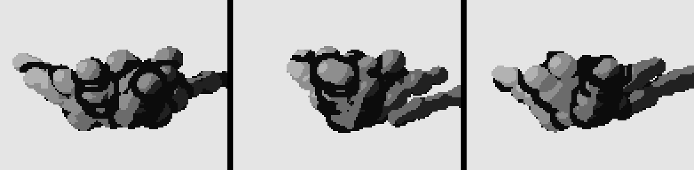
45. elements/willow/stage1/_wx.pngBash: Bezier wands
cd ~/work/pixelart-studies/elements/willow && python3 - <<'E'
s=open('bush.py').read()
a=s.index(" Lw = H * rng.uniform(0.8, 1.08)")
b=s.index(" pts = np.array(pts)")
s=s[:a]+''' f = tilt / np.radians(spread) # 0 upright .. 1 splayed
reach = (W / 2) * (0.25 + 0.75 * f) * rng.uniform(0.75, 1.0)
height = H * (1.0 - 0.45 * f ** 2) * rng.uniform(0.8, 1.0)
Lw = np.hypot(reach, height)
d = np.array([np.cos(az), np.sin(az)])
P = [np.array([0.0, 0.0]), np.array([0.15 * reach, 0.75 * height]),
np.array([0.7 * reach, 1.08 * height]), np.array([reach, height * (1 - droop * 0.35)])]
pts = []
n = 14
for k in range(n + 1):
t = k / n
q = ((1 - t) ** 3) * P[0] + 3 * t * (1 - t) ** 2 * P[1] + 3 * t * t * (1 - t) * P[2] + t ** 3 * P[3]
pts.append(base + np.array([q[0] * d[0] + lean * W * t, -q[1], q[0] * d[1]]))
'''+s[b:]
open('bush.py','w').write(s)
E
python3 - <<'E'
import numpy as np
from wpaint import *
from bush import WillowBush
from PIL import Image
ims=[]
for seed in (1,2,3):
b=WillowBush(64,84,92,64,np.random.default_rng(seed))
F=b.fields(128,96,sun(20,35))
x=np.nan_to_num(F['x'],nan=-1)
img=np.where(x<0,0.9,np.array(GREY6)[np.clip(np.round(x),0,5).astype(int)])
ims.append(upscale((np.stack([img]*3,-1)*255).astype(np.uint8),3))
save(np.concatenate(ims,1),'stage1/_wx.png')
E
# output:
(Bash completed with no output)Read: elements/willow/stage1/_wx.png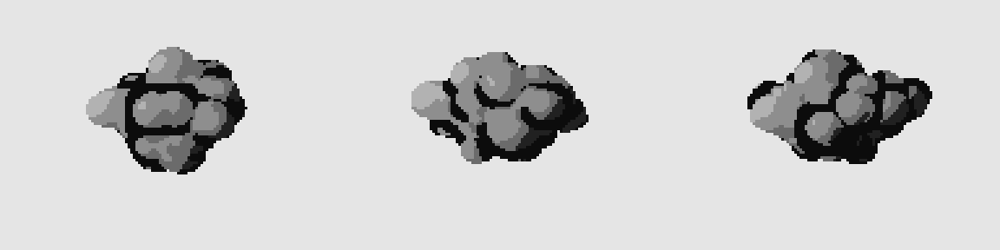
46. elements/willow/stage1/_wx.pngBash: Lower leafiness start, softer AO
cd ~/work/pixelart-studies/elements/willow && python3 - <<'E'
s=open('bush.py').read()
s=s.replace("nw=None, spread=62, droop=0.35, leafy_from=0.35,","nw=None, spread=62, droop=0.35, leafy_from=0.12,")
s=s.replace(" ao = np.clip((zmax - z) / (self.W * 0.12), 0, 1)"," ao = np.clip((zmax - z - self.W * 0.03) / (self.W * 0.2), 0, 1)")
open('bush.py','w').write(s)
E
python3 - <<'E'
import numpy as np
from wpaint import *
from bush import WillowBush
ims=[]
for seed in (1,2,3):
b=WillowBush(64,84,92,64,np.random.default_rng(seed))
F=b.fields(128,96,sun(20,35))
x=np.nan_to_num(F['x'],nan=-1)
img=np.where(x<0,0.9,np.array(GREY6)[np.clip(np.round(x),0,5).astype(int)])
ims.append(upscale((np.stack([img]*3,-1)*255).astype(np.uint8),3))
save(np.concatenate(ims,1),'stage1/_wx.png')
E
# output:
(Bash completed with no output)Read: elements/willow/stage1/_wx.png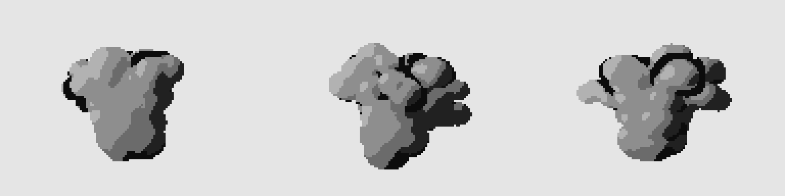
47. elements/willow/stage1/_wx.pngBash: Splayed wands, uniform lobes
cd ~/work/pixelart-studies/elements/willow && python3 - <<'E'
s=open('bush.py').read()
s=s.replace(" tilt = np.radians(rng.uniform(5, spread)) * (0.6 + 0.4 * rng.random())"," tilt = np.radians(spread) * np.sqrt(rng.uniform(0.02, 1.0))")
s=s.replace(" np.array([0.7 * reach, 1.08 * height]), np.array([reach, height * (1 - droop * 0.35)])]",
" np.array([0.7 * reach, 1.08 * height]), np.array([reach, height * (1 - droop * (0.2 + 0.8 * f))])]")
s=s.replace("nw=None, spread=62, droop=0.35,","nw=None, spread=75, droop=0.45,")
s=s.replace(" r = W * rng.uniform(*lobe_r) * (1.15 - 0.45 * t)"," r = W * rng.uniform(*lobe_r) * (0.85 + 0.3 * t)")
s=s.replace(" self.crease_cross, self.ao_lit = 0.55, 1.8\n nw = nw"," self.crease_cross, self.ao_lit = 0.8, 1.4\n nw = nw")
open('bush.py','w').write(s)
E
python3 - <<'E'
import numpy as np
from wpaint import *
from bush import WillowBush
ims=[]
for seed in (1,2,3,4):
b=WillowBush(64,84,92,60,np.random.default_rng(seed))
F=b.fields(128,96,sun(20,35))
x=np.nan_to_num(F['x'],nan=-1)
img=np.where(x<0,0.9,np.array(GREY6)[np.clip(np.round(x),0,5).astype(int)])
ims.append(upscale((np.stack([img]*3,-1)*255).astype(np.uint8),3))
save(np.concatenate(ims,1),'stage1/_wx.png')
E
# output:
(Bash completed with no output)Read: elements/willow/stage1/_wx.png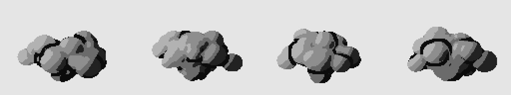
48. elements/willow/stage1/_wx.pngBash: Skirt lobes to ground, no crease rings
cd ~/work/pixelart-studies/elements/willow && python3 - <<'E'
s=open('bush.py').read()
s=s.replace(" self.crease_cross, self.ao_lit = 0.8, 1.4\n nw = nw"," self.crease_cross, self.ao_lit = 9.0, 1.2\n nw = nw")
s=s.replace("np.array([reach, height * (1 - droop * (0.2 + 0.8 * f))])]","np.array([reach, height * (1 - droop * (0.2 + 0.8 * f)) * (1 - 0.6 * f ** 3)])]")
s=s.replace(" self.root = (cx, gy)\n",""" # skirt: foliage of the lowest, most splayed wands rests on the gravel
for side in (-1, 1):
for k in range(int(skirt_n)):
u = side * rng.uniform(0.35, 0.95)
r = W * rng.uniform(*lobe_r) * 1.1
self.lobes.append(dict(x=cx + u * (W / 2 - r), y=gy - r * rng.uniform(0.3, 0.8), r=r,
z=W * 0.35 + rng.uniform(-0.3, 0.3) * W, u=u, v=0, wand=-1, t=1))
self.root = (cx, gy)
""")
s=s.replace("lobe_r=(0.055, 0.11), lobe_gap=0.9, lift=0.0, lean=0.0, crown_w=0.12, arch_w=0.32):","lobe_r=(0.055, 0.11), lobe_gap=0.9, lift=0.0, lean=0.0, crown_w=0.12, arch_w=0.32, skirt_n=3):")
open('bush.py','w').write(s)
E
python3 - <<'E'
import numpy as np
from wpaint import *
from bush import WillowBush
ims=[]
for seed in (1,2,3,4):
b=WillowBush(64,84,92,60,np.random.default_rng(seed))
F=b.fields(128,96,sun(20,35))
x=np.nan_to_num(F['x'],nan=-1)
img=np.where(x<0,0.9,np.array(GREY6)[np.clip(np.round(x),0,5).astype(int)])
img[84:]=0.6
ims.append(upscale((np.stack([img]*3,-1)*255).astype(np.uint8),3))
save(np.concatenate(ims,1),'stage1/_wx.png')
E
# output:
(Bash completed with no output)Read: elements/willow/stage1/_wx.png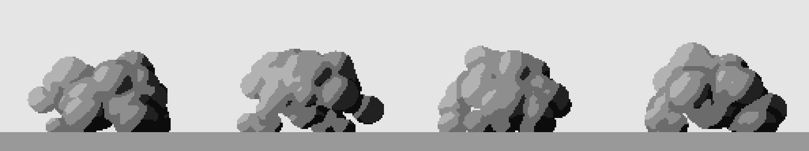
49. elements/willow/stage1/_wx.pngBash: Interior fill; texture the willow bush
cd ~/work/pixelart-studies/elements/willow && python3 - <<'E'
s=open('bush.py').read()
s=s.replace(""" x[~mask] = np.nan
edge = ndi.distance_transform_edt(mask)""",""" # the dark interior under the canopy: columns within the crown footprint, from the lowest
# foliage down to the gravel, are the shadowed hollow where the stems stand
interior = np.zeros_like(mask)
if self.base_fill > 0:
half = self.W * self.base_fill
for xc in range(w):
if abs(xc - self.cx) > half:
continue
col = np.nonzero(mask[:, xc])[0]
if len(col):
top = col.min()
interior[top:int(self.gy), xc] = ~mask[top:int(self.gy), xc]
x = np.where(interior, 0.35, x)
mask = mask | interior
x[~mask] = np.nan
edge = ndi.distance_transform_edt(mask)""")
s=s.replace(" return dict(mask=mask, z=zmap, n=n, occ=occ, ao=ao, lit=lit, shadow=shadow, x=x, own=own,"," lit = lit & ~interior\n return dict(mask=mask, z=zmap, n=n, occ=occ, ao=ao, lit=lit, shadow=shadow, x=x, own=own, interior=interior,")
s=s.replace(" self.crease_cross, self.ao_lit = 0.55, 1.8\n"," self.crease_cross, self.ao_lit = 0.55, 1.8\n self.base_fill = 0.0\n")
s=s.replace(" self.crease_cross, self.ao_lit = 9.0, 1.2\n"," self.crease_cross, self.ao_lit = 9.0, 1.2\n self.base_fill = 0.36\n")
open('bush.py','w').write(s)
s=open('stage1.py').read()
s=s.replace("from bush import Bush, dither_steps","from bush import Bush, WillowBush, dither_steps")
s=s.replace(""" b = Bush(64, gy, W_, H_, rng, lift=lift)
F = b.fields(W, H, L)
x = np.nan_to_num(F["x"])""",""" b = WillowBush(64, gy, W_, H_, rng)
F = b.fields(W, H, L)
x = np.nan_to_num(F["x"])""")
s=s.replace("def textured(seed, L, gy=80, W_=92, H_=62,","def textured(seed, L, gy=84, W_=92, H_=60,")
open('stage1.py','w').write(s)
E
nice -n 10 python3 -c "
import stage1; stage1.run_1b()"
# output:
(Bash completed with no output)Read: elements/willow/stage1/s1b_textured.png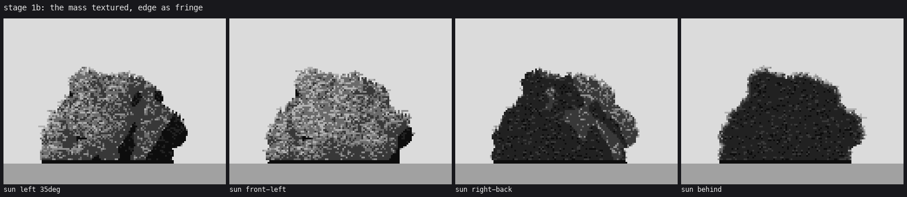
50. elements/willow/stage1/s1b_textured.pngBash: Crop NZ willow bush photo
cd ~/work/pixelart-studies/elements/willow && python3 -c "
from PIL import Image
im=Image.open('refs/more/openverse_Southern_Alps_in_New_Zealand_Spring_Willow_folia_ff43dd46.jpg')
print(im.size)
im.crop((620,480,940,740)).save('refs/crop_nzbush.png')
im.crop((620,480,940,740)).resize((640,520)).save('stage1/_nzbush.png')
"
# output:
(1024, 768)Read: elements/willow/stage1/_nzbush.png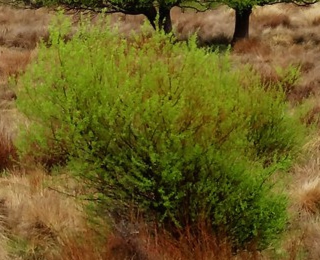
51. elements/willow/stage1/_nzbush.pngBash: Form iteration harness
cd ~/work/pixelart-studies/elements/willow && sed -i '' 's/ self.base_fill = 0.36/ self.base_fill = 0.0/' bush.py && cat > s1_form.py <<'E'
"""Stage 1 form iterations: raw value field of the willow bush beside the photo."""
import numpy as np, sys
from wpaint import *
from bush import WillowBush
from PIL import Image
def field_img(b, L, w=128, h=96, gy=84):
F = b.fields(w, h, L)
x = np.nan_to_num(F['x'], nan=-1)
img = np.where(x < 0, 0.85, np.array(GREY6)[np.clip(np.round(x), 0, 5).astype(int)])
img[gy:] = 0.55
return (np.stack([img] * 3, -1) * 255).astype(np.uint8), F
if __name__ == "__main__":
kw = eval("dict(%s)" % (sys.argv[1] if len(sys.argv) > 1 else ""))
ims = []
for seed in (1, 2, 3):
b = WillowBush(64, 84, 96, 58, np.random.default_rng(seed), **kw)
im, F = field_img(b, sun(30, 45))
ims.append(upscale(im, 3))
ph = np.array(Image.open('refs/crop_nzbush.png').convert('RGB').resize((360, 288)))
save(np.concatenate([ph] + ims, 1), 'stage1/_form.png')
E
nice -n 10 python3 s1_form.py "skirt_n=4"
# output:
(Bash completed with no output)Read: elements/willow/stage1/_form.png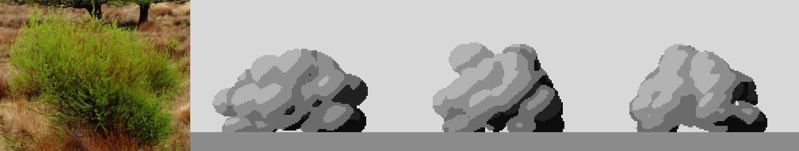
52. elements/willow/stage1/_form.pngBash: Locate envelope normal code
cd ~/work/pixelart-studies/elements/willow && grep -n "u = (xx - self.cx)" -A 5 bush.py | head -12 # output: 81: u = (xx - self.cx) / (self.W / 2) 82- v = np.clip((self.gy - yy) / self.H, 0, 1.2) 83- nz = np.sqrt(np.clip(1 - u ** 2 - (v * 0.9) ** 2, 0.05, 1)) 84- ne = norm3(np.stack([u, v * 0.9 + 0.1, nz], -1)) 85- n = norm3(env_mix * ne + (1 - env_mix) * nl) 86- z = np.where(mask, zmap, -1e9)
Bash: Egg-fitted envelope normal
cd ~/work/pixelart-studies/elements/willow && python3 - <<'E'
s=open('bush.py').read()
s=s.replace(""" u = (xx - self.cx) / (self.W / 2)
v = np.clip((self.gy - yy) / self.H, 0, 1.2)
nz = np.sqrt(np.clip(1 - u ** 2 - (v * 0.9) ** 2, 0.05, 1))
ne = norm3(np.stack([u, v * 0.9 + 0.1, nz], -1))""",""" # the big form: an egg fitted to the actual mass (top lit, underside turning down)
ys_, xs_ = np.nonzero(mask)
if len(xs_):
ex0, ex1, ey0, ey1 = xs_.min(), xs_.max(), ys_.min(), ys_.max()
else:
ex0, ex1, ey0, ey1 = 0, w, 0, h
ecx, ecy = (ex0 + ex1) / 2, ey0 + (ey1 - ey0) * self.egg_c
ea, eb = max((ex1 - ex0) / 2, 1), max((ey1 - ey0) * max(self.egg_c, 1 - self.egg_c), 1)
u = (xx - ecx) / ea
v = (ecy - yy) / eb
rr = np.clip(u ** 2 + v ** 2, 0, 0.97)
ne = norm3(np.stack([u, v, np.sqrt(1 - rr)], -1))""")
s=s.replace(" self.base_fill = 0.0\n nw = nw"," self.base_fill = 0.0\n self.egg_c = 0.55\n nw = nw")
s=s.replace(" self.base_fill = 0.0\n self.nsig"," self.base_fill = 0.0\n self.egg_c = 0.55\n self.nsig")
s=s.replace("def fields(self, w, h, L, ground_bounce=0.8, env_mix=0.45,","def fields(self, w, h, L, ground_bounce=0.8, env_mix=0.7,")
open('bush.py','w').write(s)
E
grep -n "egg_c" bush.py | head; nice -n 10 python3 s1_form.py "skirt_n=4"
# output:
87: ecx, ecy = (ex0 + ex1) / 2, ey0 + (ey1 - ey0) * self.egg_c
88: ea, eb = max((ex1 - ex0) / 2, 1), max((ey1 - ey0) * max(self.egg_c, 1 - self.egg_c), 1)
178: self.egg_c = 0.55Read: elements/willow/stage1/_form.png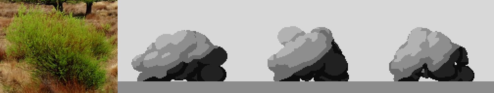
53. elements/willow/stage1/_form.pngBash: Directional stroke marks technique
cd ~/work/pixelart-studies/elements/willow && cat >> foliage.py <<'E'
def snap_dir(dx, dy):
"""Snap a direction to the clean-run set: (step pattern) for 1-px strokes."""
ang = np.degrees(np.arctan2(dy, dx)) % 360
cands = [0, 26.57, 45, 63.43, 90, 116.57, 135, 153.43, 180, 206.57, 225, 243.43, 270, 296.57, 315, 333.43]
a = min(cands, key=lambda c: min(abs(c - ang), 360 - abs(c - ang)))
return np.radians(a)
def stroke_run(x, y, ang, L):
"""Pixels of a clean 1-px stroke starting at (x,y) going along ang for L pixels."""
ca, sa = np.cos(ang), np.sin(ang)
pts = []
if abs(ca) < 1e-6 or abs(sa) < 1e-6 or abs(abs(ca) - abs(sa)) < 1e-6:
sx, sy = int(np.sign(round(ca, 6))), int(np.sign(round(sa, 6)))
for k in range(L):
pts.append((x + sx * k, y + sy * k))
return pts
# 2:1 slopes: runs of 2 along the major axis
if abs(ca) > abs(sa):
sx, sy = int(np.sign(ca)), int(np.sign(sa))
for k in range(L):
pts.append((x + sx * k, y + sy * (k // 2)))
else:
sx, sy = int(np.sign(ca)), int(np.sign(sa))
for k in range(L):
pts.append((x + sx * (k // 2), y + sy * k))
return pts
def stroke_marks(mask, light, dirx, diry, rng, top, base_steps=(0, 1), base=(0.2, 0.8),
dens=(0.05, 0.6), lens=(2, 4), hi=(0.45, 0.9), spacing=1.8, jitter=0.8,
splay=25.0, pair_p=0.6, gap_p=0.5, clump=0.5, mid_p=0.1, S=None,
out_mask=None, light_side=(-1.0, -1.0)):
"""Directional strokes (leaves along wands): a 1-px clean run along the local wand direction,
splayed +-splay degrees, lit at its outer end (the tip), one step darker at its root; a darker
partner pixel beside it on the side away from the light, and a dark gap pixel on the other side.
Strokes may run past the mask into out_mask (the fringe of wand tips)."""
h, w = mask.shape
if S is None:
S = np.zeros((h, w), int)
n = value_noise((h, w), 1.5, rng)
t = 0.55 * rng.random((h, w)) + 0.45 * (n - n.min()) / (np.ptp(n) + 1e-9)
S[mask] = base_steps[0]
S[(t < base[0] + (base[1] - base[0]) * light) & mask] = base_steps[1]
cn = value_noise((h, w), 3.0, rng); cn = (cn - cn.min()) / (np.ptp(cn) + 1e-9)
allowed = mask if out_mask is None else (mask | out_mask)
ys, xs = np.mgrid[0:h:spacing, 0:w:spacing]
ys = ys.ravel() + rng.uniform(-1, 1, ys.size) * spacing * jitter
xs = xs.ravel() + rng.uniform(-1, 1, xs.size) * spacing * jitter
marks = []
for i in rng.permutation(len(xs)):
xi, yi = int(round(xs[i])), int(round(ys[i]))
if not (0 <= xi < w and 0 <= yi < h) or not mask[yi, xi]:
continue
l = light[yi, xi]
p = (dens[0] + (dens[1] - dens[0]) * l) * ((1 - clump) + clump * 2 * cn[yi, xi])
if rng.random() > p:
continue
ph = np.clip((l - hi[0]) / (hi[1] - hi[0] + 1e-9), 0, 1)
tp = top if rng.random() < ph else top - 1
if rng.random() < mid_p:
tp = top - 2
marks.append((tp, xi, yi))
marks.sort()
lsx, lsy = light_side
for tp, xi, yi in marks:
dx, dy = dirx[yi, xi], diry[yi, xi]
a0 = np.arctan2(dy, dx) + np.radians(rng.uniform(-splay, splay))
ang = snap_dir(np.cos(a0), np.sin(a0))
L = int(rng.integers(lens[0], lens[1] + 1))
pts = stroke_run(xi, yi, ang, L)
# side away from light (screen): perpendicular with positive dot to -light_side
px_, py_ = -np.sin(ang), np.cos(ang)
if px_ * lsx + py_ * lsy > 0:
px_, py_ = -px_, -py_
ox, oy = int(round(px_)), int(round(py_))
for k, (x, y) in enumerate(pts):
if not (0 <= x < w and 0 <= y < h) or not allowed[y, x]:
break
s = tp if k >= L - 1 - (L > 3) else max(base_steps[1], tp - 1)
S[y, x] = s
if rng.random() < pair_p:
qx, qy = x + ox, y + oy
if 0 <= qx < w and 0 <= qy < h and mask[qy, qx] and S[qy, qx] < s:
S[qy, qx] = max(base_steps[0], s - 2)
if rng.random() < gap_p:
qx, qy = x - ox, y - oy
if 0 <= qx < w and 0 <= qy < h and mask[qy, qx] and S[qy, qx] < s - 1:
S[qy, qx] = base_steps[0]
return S
E
echo ok
# output:
okBash: Wand direction field
cd ~/work/pixelart-studies/elements/willow && python3 - <<'E'
s=open('foliage.py').read()
s=s.replace(""" h, w = mask.shape
if S is None:
S = np.zeros((h, w), int)
n = value_noise((h, w), 1.5, rng)
t = 0.55 * rng.random((h, w)) + 0.45 * (n - n.min()) / (np.ptp(n) + 1e-9)
S[mask] = base_steps[0]
S[(t < base[0] + (base[1] - base[0]) * light) & mask] = base_steps[1]
cn = value_noise((h, w), 3.0, rng); cn = (cn - cn.min()) / (np.ptp(cn) + 1e-9)
allowed""",""" h, w = mask.shape
if S is None:
S = -np.ones((h, w), int)
n = value_noise((h, w), 1.5, rng)
t = 0.55 * rng.random((h, w)) + 0.45 * (n - n.min()) / (np.ptp(n) + 1e-9)
S[mask] = base_steps[0]
S[(t < base[0] + (base[1] - base[0]) * light) & mask] = base_steps[1]
cn = value_noise((h, w), 3.0, rng); cn = (cn - cn.min()) / (np.ptp(cn) + 1e-9)
allowed""")
open('foliage.py','w').write(s)
s=open('bush.py').read()
s+='''
def wand_dirs(b, F):
"""Per-pixel wand direction (screen, unit) from lobe ownership; smoothed; skirt lobes and
the interior radiate from a point under the root."""
own = F["own"]; h, w = own.shape
dx = np.zeros((h, w)); dy = np.zeros((h, w))
yy, xx = np.mgrid[0:h, 0:w].astype(float)
# default: radial fan from below the root, pulled upward
rx, ry = xx - b.cx, yy - (b.gy + 0.5 * b.H)
rn = np.hypot(rx, ry) + 1e-6
dx[:] = rx / rn; dy[:] = ry / rn
for i, lb in enumerate(b.lobes):
wi = lb.get("wand", -1)
if wi is None or wi < 0 or not hasattr(b, "wands"):
continue
pts = b.wands[wi]["pts"]; n = len(pts) - 1
k = min(int(lb["t"] * n), n - 1)
tx, ty = pts[k + 1][0] - pts[k][0], pts[k + 1][1] - pts[k][1]
tn = np.hypot(tx, ty) + 1e-6
m = own == i
dx[m] = tx / tn; dy[m] = ty / tn
dx = ndi.gaussian_filter(dx, 1.0); dy = ndi.gaussian_filter(dy, 1.0)
nn = np.hypot(dx, dy) + 1e-6
return dx / nn, dy / nn
'''
open('bush.py','w').write(s)
E
echo ok
# output:
okBash: Texture harness with stroke marks
cd ~/work/pixelart-studies/elements/willow && cat > s1_tex.py <<'E'
"""Stage 1/2 texture iterations on the willow bush (greyscale)."""
import numpy as np, sys
from scipy import ndimage as ndi
from wpaint import *
from bush import WillowBush, wand_dirs
from foliage import stroke_marks, fringe
from PIL import Image
W, H, GY = 128, 100, 88
def paint_bush(seed, L, bw=90, bh=68, kL=None, kS=None, fr=True, bkw=None):
rng = np.random.default_rng(seed)
b = WillowBush(64, GY, bw, bh, rng, **(bkw or {}))
F = b.fields(W, H, L)
x = np.nan_to_num(F["x"])
m = F["mask"]
dx, dy = wand_dirs(b, F)
lit = m & (x >= 2.9); sh = m & ~lit
ll = np.clip((x - 3) / 2.4, 0, 1); ls = np.clip(x / 2.45, 0, 1)
ring = ndi.binary_dilation(m, np.ones((5, 5))) & ~m
ring[GY:] = False
lsd = (-L[0], L[1]) # screen direction toward the light (x, y down)
a = dict(top=5, base_steps=(2, 3), base=(0.2, 0.8), dens=(0.2, 0.75), hi=(0.35, 0.85), lens=(2, 4))
a.update(kL or {})
c = dict(top=2, base_steps=(0, 1), base=(0.15, 0.85), dens=(0.03, 0.3), hi=(0.6, 1.0), lens=(2, 3))
c.update(kS or {})
S = stroke_marks(lit, ll, dx, dy, rng, out_mask=ring if fr else None, light_side=(-lsd[0], -lsd[1]), **a)
S2 = stroke_marks(sh, ls, dx, dy, rng, out_mask=ring if fr else None, light_side=(-lsd[0], -lsd[1]), **c)
S = np.where(sh, S2, np.where(S >= 0, S, S2))
M = S >= 0
# contact: the darkest line where the mass meets the gravel
S[GY - 1][M[GY - 1]] = 0
cv = Canvas(W, H)
cv.mat[:GY] = SKY; cv.step[:GY] = 2; cv.mat[GY:] = GRAVEL; cv.step[GY:] = 4
cv.put(M, LEAF, np.maximum(S, 0))
return cv, b, F
if __name__ == "__main__":
kw = eval("dict(%s)" % (sys.argv[1] if len(sys.argv) > 1 else ""))
pal = grey_palette()
ims = []
for seed in (1, 2):
cv, b, F = paint_bush(seed, sun(30, 45), **kw)
ims.append(upscale(cv.render(pal), 4))
ph = np.array(Image.open('refs/crop_nzbush.png').convert('RGB').resize((500, 400)))
save(np.concatenate([ph] + ims, 1), 'stage1/_tex.png')
cv, b, F = paint_bush(1, sun(30, 45), **kw)
save(cv.render(pal)[20:90, 20:108], 'stage1/_tex8.png', 8)
E
nice -n 10 python3 s1_tex.py
# output:
(Bash completed with no output)Read: elements/willow/stage1/_tex.png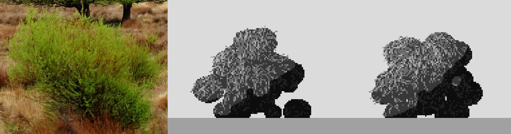
54. elements/willow/stage1/_tex.pngBash: Denser wands
cd ~/work/pixelart-studies/elements/willow && nice -n 10 python3 s1_tex.py "bkw=dict(nw=30, lobe_r=(0.07,0.12), lobe_gap=0.7, skirt_n=4)" # output: (Bash completed with no output)
Read: elements/willow/stage1/_tex.png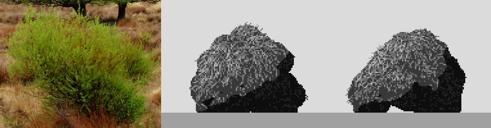
55. elements/willow/stage1/_tex.pngBash: Clumped wands with sub-dome normals
cd ~/work/pixelart-studies/elements/willow && python3 - <<'E'
s=open('bush.py').read()
# clump assignment
s=s.replace(""" nw = nw or int(10 + W * 0.12)
self.wands, self.lobes = [], []
for i in range(nw):
# 3-D fan: tilt from vertical, azimuth around the vertical axis
tilt = np.radians(spread) * np.sqrt(rng.uniform(0.02, 1.0))
az = rng.uniform(0, 2 * np.pi)""",""" nw = nw or int(10 + W * 0.12)
self.wands, self.lobes = [], []
K = nclumps or int(rng.integers(4, 8))
cl = [(np.radians(spread) * np.sqrt(rng.uniform(0.05, 1.0)), rng.uniform(0, 2 * np.pi)) for _ in range(K)]
self.nclumps = K
for i in range(nw):
# 3-D fan, wands grouped in clumps (sub-domes): tilt from vertical, azimuth around it
ci = i % K
tilt = np.clip(cl[ci][0] + np.radians(rng.normal(0, clump_sd[0])), 0.03, np.radians(spread) * 1.05)
az = cl[ci][1] + rng.normal(0, clump_sd[1])""")
s=s.replace(" self.lobes.append(dict(x=p[0], y=p[1], r=r, z=p[2] + W * 0.35, u=0, v=0, wand=i, t=t))",
" self.lobes.append(dict(x=p[0], y=p[1], r=r, z=p[2] + W * 0.35, u=0, v=0, wand=i, t=t, clump=ci))")
s=s.replace(" z=W * 0.35 + rng.uniform(-0.3, 0.3) * W, u=u, v=0, wand=-1, t=1))",
" z=W * 0.35 + rng.uniform(-0.3, 0.3) * W, u=u, v=0, wand=-1, t=1, clump=-1))")
s=s.replace("arch_w=0.32, skirt_n=3):","arch_w=0.32, skirt_n=3, nclumps=None, clump_sd=(9.0, 0.35), clump_mix=0.35):")
s=s.replace(" self.base_fill = 0.0\n self.egg_c = 0.55\n nw = nw"," self.base_fill = 0.0\n self.egg_c = 0.55\n self.clump_mix = clump_mix\n nw = nw")
# per-clump egg normal in fields
s=s.replace(""" n = norm3(env_mix * ne + (1 - env_mix) * nl)""",""" n = norm3(env_mix * ne + (1 - env_mix) * nl)
cm = getattr(self, "clump_mix", 0.0)
if cm > 0:
cid = np.full((h, w), -1)
for i, lb in enumerate(self.lobes):
cid[own == i] = lb.get("clump", -1)
nc = ne.copy()
for c in range(getattr(self, "nclumps", 0)):
mm = (cid == c) & mask
if mm.sum() < 6:
continue
yy_, xx_ = np.nonzero(mm)
a_ = max((xx_.max() - xx_.min()) / 2, 1); b_ = max((yy_.max() - yy_.min()) / 2, 1)
cx_, cy_ = (xx_.max() + xx_.min()) / 2, (yy_.max() + yy_.min()) / 2 + b_ * 0.1
uu = (xx - cx_) / a_; vv = (cy_ - yy) / b_
r2 = np.clip(uu ** 2 + vv ** 2, 0, 0.97)
ncl = norm3(np.stack([uu, vv, np.sqrt(1 - r2)], -1))
nc[mm] = ncl[mm]
wts = np.maximum(ndi.gaussian_filter(mask.astype(float), 1.2), 1e-3)
for k in range(3):
nc[..., k] = ndi.gaussian_filter(nc[..., k] * mask, 1.2) / wts
n = norm3((1 - cm) * n + cm * norm3(nc))""")
open('bush.py','w').write(s)
E
nice -n 10 python3 s1_tex.py "bkw=dict(nw=30, lobe_r=(0.07,0.12), lobe_gap=0.7, skirt_n=4)"
# output:
~/work/pixelart-studies/elements/willow/wpaint.py:73: RuntimeWarning: invalid value encountered in divide
return v / np.linalg.norm(v, axis=-1, keepdims=True)Read: elements/willow/stage1/_tex.png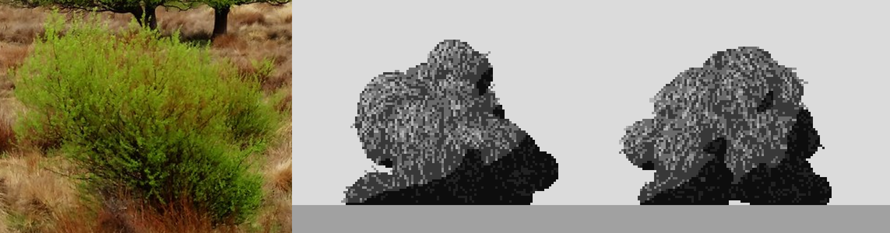
56. elements/willow/stage1/_tex.pngBash: Wand-tip fringe
cd ~/work/pixelart-studies/elements/willow && cat >> foliage.py <<'E'
def wand_tips(S, mask, dirx, diry, light, rng, top, p=0.35, lens=(2, 6), leaf_p=0.5, lo=1,
up_only=True, stem_step=None):
"""The willow crest: wand tips run out past the mass, 1-px clean runs along the wand
direction, with leaflets off their sides and a lit tip. Returns (S, M)."""
h, w = S.shape
S = S.copy(); M = mask.copy()
dist_out = ndi.distance_transform_edt(~mask)
gy_, gx_ = np.gradient(ndi.gaussian_filter(mask.astype(float), 1.5))
edge = mask & ndi.binary_dilation(~mask)
ys, xs = np.nonzero(edge)
for y, x in zip(ys, xs):
ox, oy = -gx_[y, x], -gy_[y, x] # outward normal
on = np.hypot(ox, oy) + 1e-9; ox /= on; oy /= on
if up_only and oy > 0.35:
continue
dx, dy = dirx[y, x], diry[y, x]
if dx * ox + dy * oy < 0.2:
continue
if rng.random() > p:
continue
l = light[y, x]
ang = snap_dir(dx + 0.3 * ox, dy + 0.3 * oy)
L = int(rng.integers(lens[0], lens[1] + 1))
pts = stroke_run(x, y, ang, L + 1)[1:]
tp = top if rng.random() < l else top - 1
ss = stem_step if stem_step is not None else max(lo, tp - 2)
for k, (px, py) in enumerate(pts):
if not (0 <= px < w and 0 <= py < h) or M[py, px] and k > 0:
break
last = k == len(pts) - 1
M[py, px] = True
S[py, px] = tp if last or (k >= len(pts) - 2 and rng.random() < 0.5) else ss
if k % 2 == 1 and rng.random() < leaf_p:
sd = 1 if rng.random() < 0.5 else -1
qx, qy = px + int(round(-np.sin(ang) * sd + np.cos(ang))), py + int(round(np.cos(ang) * sd + np.sin(ang)))
if 0 <= qx < w and 0 <= qy < h and not M[qy, qx]:
M[qy, qx] = True; S[qy, qx] = tp if rng.random() < l else max(lo, tp - 1)
return S, M
E
python3 - <<'E'
s=open('~/work/pixelart-studies/elements/willow/s1_tex.py').read()
s=s.replace("from foliage import stroke_marks, fringe","from foliage import stroke_marks, fringe, wand_tips")
s=s.replace(""" M = S >= 0
# contact""",""" M = S >= 0
if fr:
lf = np.where(lit, 0.4 + 0.6 * ll, 0.0)
S, M = wand_tips(np.maximum(S, 0), M, dx, dy, lf, rng, 5, lo=1, **(tip or {}))
Sf, Mf = fringe(S, M, lf, rng, 5, hole_p=0.18, bump_p=0.2, rim_p=0.4)
S, M = Sf, Mf
M[GY:] = False
# contact""")
s=s.replace("def paint_bush(seed, L, bw=90, bh=68, kL=None, kS=None, fr=True, bkw=None):","def paint_bush(seed, L, bw=90, bh=68, kL=None, kS=None, fr=True, bkw=None, tip=None):")
s=s.replace("ring if fr else None","None")
open('~/work/pixelart-studies/elements/willow/s1_tex.py','w').write(s)
E
cd ~/work/pixelart-studies/elements/willow && nice -n 10 python3 s1_tex.py "bkw=dict(nw=30, lobe_r=(0.07,0.12), lobe_gap=0.7, skirt_n=4)" 2>/dev/null
# output:
(Bash completed with no output)Read: elements/willow/stage1/_tex.png57. elements/willow/stage1/_tex.png
Read: elements/willow/stage1/_tex8.png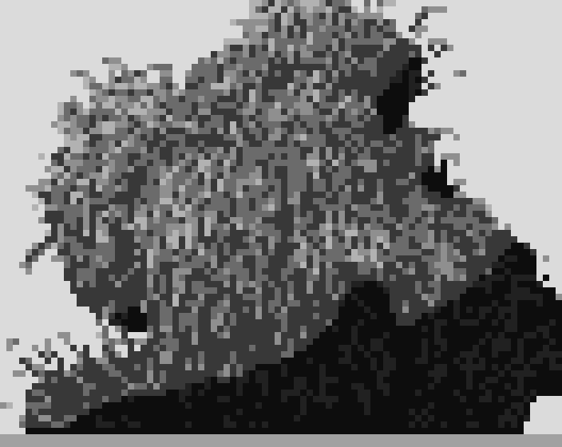
58. elements/willow/stage1/_tex8.pngBash: Close-pair value plan
cd ~/work/pixelart-studies/elements/willow && python3 - <<'E'
s=open('wpaint.py').read()
s=s.replace("GREY6 = [0.05, 0.13, 0.22, 0.42, 0.56, 0.70]","GREY6 = [0.05, 0.13, 0.22, 0.42, 0.56, 0.70]\n# foliage value plan: close base pair, a gap, close mark pair (contrast lives inside the mark)\nGREYF = [0.06, 0.14, 0.20, 0.26, 0.46, 0.62]")
s=s.replace(""" for s in range(NSTEP):
P[(LEAF, s)] = GREY6[s]""",""" for s in range(NSTEP):
P[(LEAF, s)] = GREYF[s]""")
open('wpaint.py','w').write(s)
s=open('s1_tex.py').read()
s=s.replace(""" a = dict(top=5, base_steps=(2, 3), base=(0.2, 0.8), dens=(0.2, 0.75), hi=(0.35, 0.85), lens=(2, 4))""",""" a = dict(top=5, base_steps=(2, 3), base=(0.1, 0.7), dens=(0.15, 0.7), hi=(0.35, 0.85), lens=(2, 4), mid_p=0.0)""")
s=s.replace(""" c = dict(top=2, base_steps=(0, 1), base=(0.15, 0.85), dens=(0.03, 0.3), hi=(0.6, 1.0), lens=(2, 3))""",""" c = dict(top=3, base_steps=(1, 2), base=(0.1, 0.6), dens=(0.03, 0.35), hi=(0.5, 1.0), lens=(2, 3), mid_p=0.0, gap_p=0.3)""")
s=s.replace(" S, M = wand_tips(np.maximum(S, 0), M, dx, dy, lf, rng, 5, lo=1, **(tip or {}))"," S, M = wand_tips(np.maximum(S, 0), M, dx, dy, lf, rng, 5, lo=2, **(dict(p=0.15, lens=(1, 4)) | (tip or {})))")
open('s1_tex.py','w').write(s)
E
nice -n 10 python3 s1_tex.py "bkw=dict(nw=30, lobe_r=(0.07,0.12), lobe_gap=0.7, skirt_n=4)" 2>/dev/null
# output:
(Bash completed with no output)Read: elements/willow/stage1/_tex8.png59. elements/willow/stage1/_tex8.png
Bash: Transfer step T1
cd ~/work/pixelart-studies/elements/willow && cat > transfer.py <<'E'
"""Stage 0 -> willow: carry the proven hedge copy (C2) onto the willow form, one change at a time.
T1: same technique, same palette (Ferrari's hedge ramps B lit / C shadow), willow form.
"""
import numpy as np, sys
from scipy import ndimage as ndi
from wpaint import *
from bush import WillowBush, wand_dirs
from foliage import mid_speckle, rim_arcs, fringe, stroke_marks, wand_tips
from lw import load
from PIL import Image
V09 = load("V09")
PAL = V09["pal"]
RB = [42, 41, 50, 40, 49] # hedge lit ramp
RC = [86, 83, 84, 85] # hedge far/shadow ramp
SKYC = tuple(PAL[252]); GRAVC = (150, 146, 136)
W, H, GY = 128, 100, 88
G = (('dot', 4), ('h2', 3), ('v2', 1), ('d2', 2), ('a2', 2), ('h3', 1), ('cap', 1), ('hook', 1), ('d3', 2), ('s3', 2), ('arc', 2))
KB = dict(hi=(0.35, 0.8), clump=0.8, glyphs=G)
KC = dict(base=(0.3, 0.8), base_steps=(1, 2), dens=(0.05, 0.4), hi=(0.7, 1.0), mid_p=0.0)
def t1(seed, L, bw=90, bh=68, bkw=None, kb=None, kc=None, fr=dict(), arcs=dict(min_light=0.15, dens=(0.3, 1.0), r_sep=6),
fam_split=2.9):
rng = np.random.default_rng(seed)
b = WillowBush(64, GY, bw, bh, rng, **(bkw or dict(nw=30, lobe_r=(0.07, 0.12), lobe_gap=0.7, skirt_n=4)))
F = b.fields(W, H, L)
x = np.nan_to_num(F["x"]); m = F["mask"]
lit = m & (x >= fam_split); sh = m & ~lit
ll = np.clip((x - 3) / 2.4, 0, 1); ls = np.clip(x / 2.45, 0, 1)
SB = mid_speckle(None, ll, rng, top=4, mask=lit, **(KB | (kb or {})))
SB = rim_arcs(SB, lit, ll, rng, 4, **arcs)
SC = mid_speckle(None, ls, rng, top=3, mask=sh, **(KC | (kc or {})))
region = np.where(lit, 0, 1)
S = np.where(lit, SB, SC)
if fr is not None:
SB2, MB = fringe(S, lit, ll, rng, 4, **fr)
SC2, MC = fringe(S, sh, ls * 0.3, rng, 3, **fr)
newB = MB & ~m; newC = MC & ~m & ~newB
region = np.where(newB, 0, np.where(newC, 1, region))
S = np.where(region == 0, SB2, SC2)
m = (MB | MC); m[GY:] = False
img = np.zeros((H, W, 3), np.uint8); img[:GY] = SKYC; img[GY:] = GRAVC
for r, ramp in ((0, RB), (1, RC)):
for s, i in enumerate(ramp):
img[m & (region == r) & (S == s)] = PAL[i]
img[GY - 1][m[GY - 1]] = PAL[RC[0]] // 2
return img, b, F
def hedge_crop():
im = PAL[V09["idx"]]
return im[222:282, 265:395]
if __name__ == "__main__":
img, b, F = t1(1, sun(30, 45))
img2, b, F = t1(2, sun(30, 45))
ph = np.array(Image.open('refs/crop_nzbush.png').convert('RGB').resize((480, 390)))
save(np.concatenate([ph, upscale(img, 4)[5:395, :], upscale(img2, 4)[5:395, :]], 1), 'stage0/t1_whole.png')
# 8x: willow detail beside Ferrari hedge detail
a = upscale(hedge_crop()[0:40, 40:100], 8); bb = upscale(img[25:65, 30:90], 8)
save(side_by_side([a, bb], ["Ferrari hedge (V09) 8x", "T1: willow form, hedge technique 8x"], height=320), 'stage0/t1_8x.png')
E
nice -n 10 python3 transfer.py 2>/dev/null
# output:
(Bash completed with no output)Read: elements/willow/stage0/t1_whole.png60. elements/willow/stage0/t1_whole.png
Bash: Darker shadow ramp for near bush
cd ~/work/pixelart-studies/elements/willow && sed -i '' 's/^RC = \[86, 83, 84, 85\] # hedge far\/shadow ramp/RC = [3, 43, 42, 86] # shadow ramp: the near darks of the same scene/' transfer.py && sed -i '' "s/KC = dict(base=(0.3, 0.8), base_steps=(1, 2), dens=(0.05, 0.4), hi=(0.7, 1.0), mid_p=0.0)/KC = dict(base=(0.2, 0.8), base_steps=(0, 1), dens=(0.03, 0.35), hi=(0.6, 1.0), mid_p=0.0)/" transfer.py && nice -n 10 python3 transfer.py 2>/dev/null # output: (Bash completed with no output)
Read: elements/willow/stage0/t1_whole.png61. elements/willow/stage0/t1_whole.png
Read: elements/willow/stage0/t1_8x.png62. elements/willow/stage0/t1_8x.png
Bash: Locate lines for lobe caps
cd ~/work/pixelart-studies/elements/willow && grep -n "nx\[upd\] = ux\[upd\]" bush.py; grep -n "lit = (d > term)" bush.py # output: 71: nx[upd] = ux[upd]; ny[upd] = -uy[upd] 140: lit = (d > term) & mask & ~shadow & ~(ao > self.crease_cross)
Bash: Lobe caps break the terminator
cd ~/work/pixelart-studies/elements/willow && python3 - <<'E'
s=open('bush.py').read()
s=s.replace(" mask = own >= 0\n dxa"," mask = own >= 0\n nx0, ny0 = nx.copy(), ny.copy()\n dxa",1)
s=s.replace(" lit = (d > term) & mask & ~shadow & ~(ao > self.crease_cross)",""" # lobe caps: a lobe whose own top faces the sun catches light even near/past the big terminator
nz0 = np.sqrt(np.clip(1 - nx0 ** 2 - ny0 ** 2, 0, 1))
dl = nx0 * L[0] + ny0 * L[1] + nz0 * L[2]
cap = (dl > self.cap_t) & (d > term - self.cap_reach) & mask & (ao < 0.5)
d = np.where(cap & (d <= term), term + 0.02 + 0.3 * (dl - self.cap_t), d)
lit = (d > term) & mask & ~shadow & ~(ao > self.crease_cross)""")
s=s.replace(" self.clump_mix = clump_mix\n"," self.clump_mix = clump_mix\n self.cap_t, self.cap_reach = cap_t, cap_reach\n")
s=s.replace("clump_sd=(9.0, 0.35), clump_mix=0.35):","clump_sd=(9.0, 0.35), clump_mix=0.35, cap_t=0.55, cap_reach=0.35):")
s=s.replace(" self.base_fill = 0.0\n self.egg_c = 0.55\n self.nsig"," self.base_fill = 0.0\n self.egg_c = 0.55\n self.cap_t, self.cap_reach = 2.0, 0.0\n self.nsig")
open('bush.py','w').write(s)
E
nice -n 10 python3 transfer.py 2>/dev/null
# output:
(Bash completed with no output)Read: elements/willow/stage0/t1_whole.png63. elements/willow/stage0/t1_whole.png
Bash: Transfer step T2 directional strokes
cd ~/work/pixelart-studies/elements/willow && cat >> transfer.py <<'E'
def t2(seed, L, bw=90, bh=68, bkw=None, ks=None, kc=None, fr=dict(), arcs=None, tips=dict(p=0.25, lens=(1, 4)),
fam_split=2.9, speck_mix=0.0):
"""T2: the lit family's marks become strokes along the wands (leaves on upright twigs);
shadow family keeps the hedge speckle. Wand tips run out of the crest."""
rng = np.random.default_rng(seed)
b = WillowBush(64, GY, bw, bh, rng, **(bkw or dict(nw=30, lobe_r=(0.07, 0.12), lobe_gap=0.7, skirt_n=4)))
F = b.fields(W, H, L)
x = np.nan_to_num(F["x"]); m = F["mask"]
dx, dy = wand_dirs(b, F)
lit = m & (x >= fam_split); sh = m & ~lit
ll = np.clip((x - 3) / 2.4, 0, 1); ls = np.clip(x / 2.45, 0, 1)
lsd = (L[0], -L[1])
k = dict(top=4, base_steps=(0, 1), base=(0.3, 0.7), dens=(0.25, 0.9), hi=(0.35, 0.8), lens=(2, 3),
splay=30, pair_p=0.3, gap_p=0.4, mid_p=0.08, spacing=1.7, clump=0.7)
SB = stroke_marks(lit, ll, dx, dy, rng, light_side=lsd, **(k | (ks or {})))
SB = np.where(lit, np.maximum(SB, 0), 0)
if arcs:
SB = rim_arcs(SB, lit, ll, rng, 4, **arcs)
SC = mid_speckle(None, ls, rng, top=3, mask=sh, **(KC | (kc or {})))
region = np.where(lit, 0, 1)
S = np.where(lit, SB, SC)
if tips is not None:
lf = np.where(lit, 0.4 + 0.6 * ll, 0.0)
S2, M2 = wand_tips(S, m, dx, dy, lf, rng, 4, lo=1, **tips)
new = M2 & ~m
region = np.where(new, np.where(ndi.grey_dilation(lit, size=3), 0, 1), region)
S = S2; m0 = m; m = M2
if fr is not None:
litm = m & (region == 0); shm = m & (region == 1)
SB2, MB = fringe(S, litm, np.where(litm, 0.4 + 0.6 * ll, 0), rng, 4, **fr)
SC2, MC = fringe(S, shm, ls * 0.3, rng, 3, **fr)
newB = MB & ~m; newC = MC & ~m & ~newB
region = np.where(newB, 0, np.where(newC, 1, region))
S = np.where(region == 0, SB2, SC2)
m = (MB | MC)
m[GY:] = False
img = np.zeros((H, W, 3), np.uint8); img[:GY] = SKYC; img[GY:] = GRAVC
for r, ramp in ((0, RB), (1, RC)):
for s, i in enumerate(ramp):
img[m & (region == r) & (S == s)] = PAL[i]
img[GY - 1][m[GY - 1]] = PAL[RC[0]] // 2
return img, b, F
def run_t2(tag="t2", **kw):
img, b, F = t2(1, sun(30, 45), **kw)
img2, b, F = t2(2, sun(30, 45), **kw)
ph = np.array(Image.open('refs/crop_nzbush.png').convert('RGB').resize((480, 390)))
save(np.concatenate([ph, upscale(img, 4)[5:395, :], upscale(img2, 4)[5:395, :]], 1), f'stage0/{tag}_whole.png')
a = upscale(hedge_crop()[0:40, 40:100], 8); bb = upscale(img[25:65, 30:90], 8)
save(side_by_side([a, bb], ["Ferrari hedge (V09) 8x", f"{tag} 8x"], height=320), f'stage0/{tag}_8x.png')
E
nice -n 10 python3 -c "
import transfer; transfer.run_t2()" 2>/dev/null
# output:
(Bash completed with no output)Read: elements/willow/stage0/t2_whole.png64. elements/willow/stage0/t2_whole.png
Read: elements/willow/stage0/t2_8x.png65. elements/willow/stage0/t2_8x.png
Bash: Photo at pixel scale
cd ~/work/pixelart-studies/elements/willow && python3 -c "
from PIL import Image
im=Image.open('refs/crop_nzbush.png').convert('RGB')
sm=im.resize((110,90),Image.LANCZOS)
sm.resize((880,720),Image.NEAREST).save('stage1/_nz_small8.png')
"
# output:
(Bash completed with no output)Read: elements/willow/stage1/_nz_small8.png 66. elements/willow/stage1/_nz_small8.png
66. elements/willow/stage1/_nz_small8.png
Bash: Check critique
cat ~/work/pixelart-studies/elements/willow/CRITIQUE.md 2>/dev/null || echo none # output: # Critique (newest first) ## Round 2 — 2026-09-25 21:34 — stage 0 `stage0/c2_hedge_mid7.png`; stage 1 `stage1/s1b_textured.png`, `s1b_one_x8.png` **Stage 0 (c2 hedge): REVISE, but a big step closer than c1. Stage 1: REVISE.** (My read; your call.) ### c2 hedge copy What's working: at 4× the copy is close. The palette, the mass, the sky gaps and the leaf-mark size all match, and your run stats agree (blurLab 3.46). What still gives it away: 1. **The crest against the sky.** In "Ferrari 8x" the hedge top is a chain of distinct rounded clumps, each capped with pale lit-green marks, and single leaf marks pop above the clump line. In "copy 8x" the crest is a flatter, more continuous edge, and the lit marks are spread through the interior instead of massing on clump tops. 2. **Contrast inside the clumps.** His clumps pair pale lit marks directly against dark gaps. Your marks are closer in value to their neighbours, so the texture reads finer and greyer. 3. **The ruled boundary.** At the lower right of "copy 8x" (x≈700–970, y≈460–560) the dark hedge meets the grey-green bush along a straight diagonal. In his, that boundary is a clump edge. 4. **The blue-grey dither patch** at the right of "COPY 4x" (x≈950–1040) is mottled noise. The same place in his is a grey-green bush with its own clump structure. ### Stage 1b - The fringe is in, which is right. But the mass now reads as a haystack or coral: a blocky outline with a flat top-left shoulder, sitting on the ground along a dead-straight bottom with no stems. - **The marks are horizontal dashes** (`s1b_one_x8.png`: nearly every light mark is a 2–4 px horizontal run). Horizontal is water's direction, and willow leaves hang and angle. Use diagonals, mostly drooping. - **The black polygons are still there.** In `s1b_one_x8.png` there's a straight-edged black wedge at x≈420–500, y≈400–576, plus a large black block on the right. Self-shadow in foliage is holes and clumps, not a polygon with straight edges. - **No see-through, no stems.** Every willow in your refs lets the ground and sky show through between upright stems, especially at the base. Right now it's a solid object. - One thought: your c2 hedge copy is already the best foliage you've made. Build s1 out of the clump grammar you're learning there (lit caps, dark gaps, clumps overlapping clumps) rather than a noise texture on a heightfield. ## Round 1 — 2026-09-25 21:22 — stage 0 `stage0/c1_fgbush.png` (V09 foreground bush); stage 1 `stage1/s1a_one.png`, `s1a_mass.png` **Verdict: stage 0 REVISE; stage 1 REVISE.** You moved on to stage 1 without a verdict on stage 0. (My read; your call. The bar: indistinguishable from his crop at 8× except by subject.) ### Stage 0 (the copy) What's working: the palette, the overall darkness, and the stroke length (your run stats match) are in range. At 3× the copy passes for foliage. What gives it away at 8× (bottom pair): 1. **No clump hierarchy.** His bush is built from leaf *clumps* 6–14 px across, each with a l
Bash: Clump grammar technique
cd ~/work/pixelart-studies/elements/willow && cat >> foliage.py <<'E'
def clump_foliage(mask, light, rng, top, r=(3.0, 6.0), sep=0.85, aspect=1.3, L2=(-0.6, -0.8),
cap=0.55, body=0.15, dark_band=0.55, rough=0.35, mark_hole=0.25, cap_marks=0.75,
steps=None, S=None, M=None, dirs=None, order="y", grow=1.0, lift=0.0, light_gain=1.0,
dither=0.35, noise_scale=1.3, keep_inside=None):
"""The clump grammar. Foliage is a heap of clumps (r px), painted top-to-bottom so lower clumps
lie in front. Each clump: an irregular blob (noise-roughened ellipse, wider than tall or
stretched along `dirs`), lit cap toward the light L2 (screen dir toward light, y down),
mid body, dark band along its bottom that separates it from the clump below. The cap is made
of lit marks with small dark holes (not a flat fill). `light` (0..1) at the clump centre sets
how bright its cap gets (top..top-2) and whether it has one.
steps: dict with 'dark','body','cap' lists of steps (low..high) or None for defaults."""
h, w = mask.shape
if S is None:
S = -np.ones((h, w), int)
if M is None:
M = np.zeros((h, w), bool)
st = steps or {}
dark = st.get("dark", [0, 1]); bodys = st.get("body", [1, 2]); caps = st.get("cap", [top - 1, top])
C = poisson(h, w, sep * (r[0] + r[1]) / 2, rng, mask=mask)
if len(C) == 0:
return S, M
lx, ly = L2
ln = np.hypot(lx, ly) + 1e-9; lx /= ln; ly /= ln
nz = value_noise((h, w), noise_scale, rng)
nz = (nz - nz.min()) / (np.ptp(nz) + 1e-9)
key = C[:, 1] + rng.normal(0, 0.8, len(C)) if order == "y" else rng.random(len(C))
for i in np.argsort(key):
cx, cy = C[i]
g = float(np.clip(light[int(cy), int(cx)] * light_gain, 0, 1))
rr = rng.uniform(*r) * grow
a, b = rr * aspect, rr
th = 0.0
if dirs is not None:
dx, dy = dirs[0][int(cy), int(cx)], dirs[1][int(cy), int(cx)]
th = np.arctan2(dy, dx) + np.pi / 2 # long axis along the wand
a, b = rr, rr * aspect
cy2 = cy - lift * rr
R = int(np.ceil(max(a, b))) + 2
x0, x1 = max(0, int(cx) - R), min(w, int(cx) + R + 1)
y0, y1 = max(0, int(cy2) - R), min(h, int(cy2) + R + 1)
if x1 <= x0 or y1 <= y0:
continue
yy, xx = np.mgrid[y0:y1, x0:x1].astype(float)
ddx, ddy = xx - cx, yy - cy2
ct, sn = np.cos(th), np.sin(th)
u = (ddx * ct + ddy * sn) / a
v = (-ddx * sn + ddy * ct) / b
d2 = u * u + v * v
edge_n = nz[y0:y1, x0:x1]
inside = d2 < (1.0 - rough * 0.5 + rough * edge_n) ** 2
if keep_inside is not None:
inside &= keep_inside[y0:y1, x0:x1] | (d2 < 0.5)
if not inside.any():
continue
# clump-local light: sphere normal in screen coords (x right, y down) dotted with L2 (+ view)
sx, sy = ddx / max(a, b), ddy / max(a, b)
nzc = np.sqrt(np.clip(1 - sx * sx - sy * sy, 0, 1))
lc = sx * lx + sy * ly + 0.35 * nzc # -1..1.35
vv = (ddy / b) # -1 top .. +1 bottom (screen)
ns = rng.random(inside.shape)
out = np.full(inside.shape, -1)
# dark band at the bottom of the clump: the gap to the clump below
band = vv > (1 - dark_band * 2) * 0.9 + 0.1 * (edge_n - 0.5)
capz = (lc > (1 - cap) * 1.1) & ~band
# body steps by light; the cap by the clump's own light
bi = np.clip((lc + 0.6) / 1.6 + (ns - 0.5) * dither, 0, 0.999)
out[:] = np.array(bodys)[(bi * len(bodys)).astype(int)]
out[band] = np.array(dark)[np.clip(((ns[band] + 0.3 * (1 - (vv[band]))) * len(dark)).astype(int), 0, len(dark) - 1)]
if g > body:
ci = np.clip(g * len(caps) + (ns - 0.5) * 0.9, 0, len(caps) - 0.001).astype(int)
capv = np.array(caps)[ci]
hole = rng.random(inside.shape) < mark_hole
use = capz & (rng.random(inside.shape) < cap_marks * min(1, 0.3 + g))
out = np.where(use & ~hole, capv, out)
out = np.where(use & hole, np.array(bodys)[0], out)
sub = S[y0:y1, x0:x1]; subm = M[y0:y1, x0:x1]
sub[inside] = out[inside]; subm[inside] = True
return S, M
E
echo ok
# output:
okBash: Test clump grammar on hedge copy
cd ~/work/pixelart-studies/elements/willow && cat >> stage0_copy.py <<'E'
def copy_c2c(seed=1, tag="", kB=None, kC=None, sigma=2.0, detail=(40, 0, 60, 36), k=4, base_fill=True):
"""C2 with the clump grammar."""
from scipy import ndimage as ndi
from foliage import clump_foliage
y0, y1, x0, x1 = 222, 282, 265, 395
idx = V09["idx"][y0:y1, x0:x1]; pal = V09["pal"]
ramps = [[42, 41, 50, 40, 49], [86, 83, 84, 85]]
known = np.isin(idx, sum(ramps, []))
R, S, table = decompose(idx, pal, ramps)
ref = pal[idx].copy()
fol = ndi.uniform_filter(known.astype(float), 5) > 0.5
region, _ = sketch(np.where(known, R, 0), np.where(known, S, 0), 2, 4, sigma=sigma)
light = ndi.gaussian_filter(np.where(known, S / 4.0, 0), sigma) / np.maximum(ndi.gaussian_filter(known.astype(float), sigma), 1e-3)
lo, hi_ = np.percentile(light[fol], [5, 97]); light = np.clip((light - lo) / (hi_ - lo), 0, 1)
bgm = ~known
ii = ndi.distance_transform_edt(~bgm, return_distances=False, return_indices=True)
bg = ref[ii[0], ii[1]]
rng = np.random.default_rng(seed)
Sg = -np.ones(idx.shape, int); Mg = np.zeros(idx.shape, bool); Rg = np.zeros(idx.shape, int)
# fill under the clumps with the dark base so no background shows inside the mass
if base_fill:
Sg[fol] = 0; Mg[fol] = True; Rg[fol] = region[fol]
for r_, kk, top in ((1, kC, 3), (0, kB, 4)):
mm = fol & (region == r_)
Sx, Mx = clump_foliage(mm, light, rng, top, **(kk or {}))
Sg = np.where(Mx, Sx, Sg); Rg = np.where(Mx, r_, Rg); Mg |= Mx
cp = bg.copy()
fl = render(Rg, np.maximum(Sg, 0), table)
cp[Mg] = fl[Mg]
m = metrics(cp, ref)
compare_sheet(cp, ref, f"{OUT}/c2c_hedge{tag}.png", detail=detail, label=str(m), k=k)
return m, cp, ref
E
nice -n 10 python3 -c "
from stage0_copy import copy_c2c
kB=dict(r=(2.5,5.0), steps=dict(dark=[0,0,1], body=[1,1,2], cap=[3,4]))
kC=dict(r=(2.5,5.0), steps=dict(dark=[0,1], body=[1,2], cap=[2,3]))
print(copy_c2c(tag='_v1',kB=kB,kC=kC)[0])
print(copy_c2c(tag='_v1low',kB=kB,kC=kC,detail=(20,22,60,36))[0])
"
# output:
{'blurLab': 8.33, 'runs_copy': (1.85, 1.9), 'runs_ref': (1.89, 1.83)}
{'blurLab': 8.33, 'runs_copy': (1.85, 1.9), 'runs_ref': (1.89, 1.83)}Read: elements/willow/stage0/c2c_hedge_v1.png67. elements/willow/stage0/c2c_hedge_v1.png
Bash: Continuous clump value model
cd ~/work/pixelart-studies/elements/willow && python3 - <<'E'
s=open('foliage.py').read()
a=s.index(" # dark band at the bottom of the clump: the gap to the clump below")
b=s.index(" sub = S[y0:y1, x0:x1]; subm = M[y0:y1, x0:x1]")
s=s[:a]+''' # continuous value: clump's global light + its own sphere light, the dark band at its bottom
band = np.clip((vv - (1 - dark_band * 2)) / (dark_band * 2 + 1e-9), 0, 1)
val = vo + g * vg + lc * vl - band * vb + (ns - 0.5) * dither * 2
val = np.where(val > top - 0.5, np.where(rng.random(inside.shape) < mark_hole, val - hole_drop, val), val)
out = np.clip(np.round(val), 0, top).astype(int)
'''+s[b:]
s=s.replace(" dither=0.35, noise_scale=1.3, keep_inside=None):"," dither=0.35, noise_scale=1.3, keep_inside=None, vo=0.3, vg=2.6, vl=1.4, vb=1.6, hole_drop=2.0):")
open('foliage.py','w').write(s)
E
nice -n 10 python3 -c "
from stage0_copy import copy_c2c
kB=dict(r=(2.5,5.0))
kC=dict(r=(2.5,5.0),vo=0.6,vg=1.6,vl=1.0,vb=1.2)
print(copy_c2c(tag='_v2',kB=kB,kC=kC)[0])
print(copy_c2c(tag='_v2low',kB=kB,kC=kC,detail=(20,22,60,36))[0])
"
# output:
{'blurLab': 8.79, 'runs_copy': (2.21, 2.3), 'runs_ref': (1.89, 1.83)}
{'blurLab': 8.79, 'runs_copy': (2.21, 2.3), 'runs_ref': (1.89, 1.83)}Read: elements/willow/stage0/c2c_hedge_v2.png68. elements/willow/stage0/c2c_hedge_v2.png
Bash: Clump field driving speckle marks
cd ~/work/pixelart-studies/elements/willow && python3 - <<'E'
s=open('foliage.py').read()
s=s.replace(""" out = np.clip(np.round(val), 0, top).astype(int)
""",""" out = np.clip(np.round(val), 0, top).astype(int)
if field is not None:
fv = np.clip((vo + g * vg + lc * vl - band * vb) / top, 0, 1)
fsub = field[y0:y1, x0:x1]; fsub[inside] = fv[inside]
""")
s=s.replace("vo=0.3, vg=2.6, vl=1.4, vb=1.6, hole_drop=2.0):","vo=0.3, vg=2.6, vl=1.4, vb=1.6, hole_drop=2.0, field=None):")
open('foliage.py','w').write(s)
E
cat >> stage0_copy.py <<'E'
def copy_c2f(seed=1, tag="", kB=None, kC=None, mB=None, mC=None, sigma=2.0, detail=(40, 0, 60, 36), k=4, arcs=None):
"""C2: the clump grammar lays out a clump light field; the hedge speckle (dark base,
lit marks) is drawn from it."""
from scipy import ndimage as ndi
from foliage import clump_foliage, mid_speckle, rim_arcs
y0, y1, x0, x1 = 222, 282, 265, 395
idx = V09["idx"][y0:y1, x0:x1]; pal = V09["pal"]
ramps = [[42, 41, 50, 40, 49], [86, 83, 84, 85]]
known = np.isin(idx, sum(ramps, []))
R, S, table = decompose(idx, pal, ramps)
ref = pal[idx].copy()
fol = ndi.uniform_filter(known.astype(float), 5) > 0.5
region, _ = sketch(np.where(known, R, 0), np.where(known, S, 0), 2, 4, sigma=sigma)
light = ndi.gaussian_filter(np.where(known, S / 4.0, 0), sigma) / np.maximum(ndi.gaussian_filter(known.astype(float), sigma), 1e-3)
lo, hi_ = np.percentile(light[fol], [5, 97]); light = np.clip((light - lo) / (hi_ - lo), 0, 1)
ii = ndi.distance_transform_edt(known, return_distances=False, return_indices=True)
bg = ref[ii[0], ii[1]]
rng = np.random.default_rng(seed)
Sg = np.zeros(idx.shape, int); Mg = np.zeros(idx.shape, bool); Rg = np.zeros(idx.shape, int)
for r_, kk, mk, top in ((1, kC, mC, 3), (0, kB, mB, 4)):
mm = fol & (region == r_)
CL = np.full(idx.shape, -1.0)
_, Mx = clump_foliage(mm, light, rng, top, field=CL, **(kk or {}))
Mx |= mm
CL = np.where(CL < 0, light * 0.5, CL)
Sx = mid_speckle(None, CL, rng, top=top, mask=Mx, **(mk or {}))
if arcs and r_ == 0:
Sx = rim_arcs(Sx, Mx, CL, rng, top, **arcs)
Sg = np.where(Mx, Sx, Sg); Rg = np.where(Mx, r_, Rg); Mg |= Mx
cp = bg.copy()
fl = render(Rg, Sg, table)
cp[Mg] = fl[Mg]
m = metrics(cp, ref)
compare_sheet(cp, ref, f"{OUT}/c2f_hedge{tag}.png", detail=detail, label=str(m), k=k)
return m, cp, ref
E
nice -n 10 python3 -c "
from stage0_copy import copy_c2f
G=(('dot',4),('h2',3),('v2',1),('d2',2),('a2',2),('h3',1),('cap',1),('hook',1),('d3',2),('s3',2),('arc',2))
kB=dict(r=(2.5,5.0),vo=0.0,vg=2.6,vl=1.8,vb=2.0)
kC=dict(r=(2.5,5.0),vo=0.3,vg=1.8,vl=1.2,vb=1.5)
mB=dict(hi=(0.45,0.85),clump=0.2,glyphs=G,dens=(0.0,0.7))
mC=dict(base=(0.3,0.8),base_steps=(1,2),dens=(0.0,0.5),hi=(0.7,1.0),mid_p=0.0)
print(copy_c2f(tag='_v1',kB=kB,kC=kC,mB=mB,mC=mC)[0])
print(copy_c2f(tag='_v1low',kB=kB,kC=kC,mB=mB,mC=mC,detail=(20,22,60,36))[0])
"
# output:
{'blurLab': 5.51, 'runs_copy': (1.74, 1.81), 'runs_ref': (1.89, 1.83)}
{'blurLab': 5.51, 'runs_copy': (1.74, 1.81), 'runs_ref': (1.89, 1.83)}Read: elements/willow/stage0/c2f_hedge_v1.png69. elements/willow/stage0/c2f_hedge_v1.png
Read: elements/willow/stage0/c2f_hedge_v1low.png70. elements/willow/stage0/c2f_hedge_v1low.png
Bash: Keep trunks, add arcs, vary clump size
cd ~/work/pixelart-studies/elements/willow && python3 - <<'E'
s=open('stage0_copy.py').read()
a=s.index("def copy_c2f(")
t=s[a:]
t=t.replace(" fol = ndi.uniform_filter(known.astype(float), 5) > 0.5\n"," fol = ndi.uniform_filter(known.astype(float), 5) > 0.5\n skyish = lum(pal[idx]) > 140\n fol &= known | skyish # trunks and other things stay the setting\n",1)
s=s[:a]+t
s=s.replace("from lw import load","from lw import load, lum")
open('stage0_copy.py','w').write(s)
E
nice -n 10 python3 -c "
from stage0_copy import copy_c2f
G=(('dot',4),('h2',3),('v2',1),('d2',2),('a2',2),('h3',1),('cap',1),('hook',1),('d3',2),('s3',2),('arc',2))
kB=dict(r=(2.0,6.5),vo=0.0,vg=2.6,vl=1.8,vb=2.0)
kC=dict(r=(2.5,5.0),vo=0.3,vg=1.8,vl=1.2,vb=1.5)
mB=dict(hi=(0.45,0.85),clump=0.2,glyphs=G,dens=(0.0,0.7))
mC=dict(base=(0.3,0.8),base_steps=(1,2),dens=(0.0,0.5),hi=(0.7,1.0),mid_p=0.0)
ar=dict(min_light=0.3,dens=(0.2,0.9),r_sep=7,rad=(4,10))
print(copy_c2f(tag='_v2',kB=kB,kC=kC,mB=mB,mC=mC,arcs=ar)[0])
print(copy_c2f(tag='_v2low',kB=kB,kC=kC,mB=mB,mC=mC,arcs=ar,detail=(20,22,60,36))[0])
"
# output:
{'blurLab': 5.65, 'runs_copy': (1.71, 1.8), 'runs_ref': (1.89, 1.83)}
{'blurLab': 5.65, 'runs_copy': (1.71, 1.8), 'runs_ref': (1.89, 1.83)}Read: elements/willow/stage0/c2f_hedge_v2low.png71. elements/willow/stage0/c2f_hedge_v2low.png
Bash: Check material constants
cd ~/work/pixelart-studies/elements/willow && sed -n 1,30p wpaint.py | grep -n "SKY, GRAVEL" # output: 16:SKY, GRAVEL, LEAF, SILVER, STEM, WATER, GRASS, EARTH, FAR = 1, 2, 3, 4, 5, 6, 7, 8, 9
Write: elements/willow/willow.py
"""The willow painter: one bush (or a clump of them) onto an index canvas.
Built from the stage-0 copy of Ferrari's hedge (clump grammar + dark base with lit marks) and
carried onto the willow's own form (a fan of wands from a root crown), its own marks (short
diagonal strokes along the wands, drooping) and its own structure (see-through stems at the base).
Materials: LEAF (lit family ramp, steps 0..4), LEAFS (shadow family ramp, 0..3), STEM (0..3).
"""
import numpy as np
from scipy import ndimage as ndi
from wpaint import *
from bush import WillowBush, wand_dirs
from foliage import clump_foliage, mid_speckle, stroke_marks, wand_tips, fringe, rim_arcs, stroke_run, snap_dir
LEAFS = 10 # shadow-family leaf ramp
DEFAULT = dict(
form=dict(nw=30, lobe_r=(0.07, 0.12), lobe_gap=0.7, skirt_n=4),
fam_split=2.9,
clump=dict(r=(2.0, 5.0), vo=0.0, vg=2.6, vl=1.6, vb=2.0, aspect=1.6, rough=0.4),
lit=dict(top=4, base_steps=(0, 1), base=(0.25, 0.75), dens=(0.1, 0.85), hi=(0.45, 0.85), lens=(2, 3),
splay=35, pair_p=0.35, gap_p=0.45, mid_p=0.06, spacing=1.7, clump=0.3),
shadow=dict(top=3, base=(0.2, 0.8), base_steps=(0, 1), dens=(0.02, 0.4), hi=(0.6, 1.0), mid_p=0.0),
tips=dict(p=0.22, lens=(1, 4)),
fringe=dict(hole_p=0.15, bump_p=0.15, rim_p=0.3),
stems=dict(n=None, visible_below=0.45, see=0.55),
)
def merge(a, b):
out = dict(a)
for k, v in (b or {}).items():
out[k] = merge(a[k], v) if isinstance(v, dict) and isinstance(a.get(k), dict) else v
return out
def paint_willow(cv, cx, gy, W_, H_, L, rng, p=None, zbuf=None):
"""Paint one willow bush into canvas cv (in place). Returns dict of intermediate fields."""
p = merge(DEFAULT, p)
h, w = cv.h, cv.w
b = WillowBush(cx, gy, W_, H_, rng, **p["form"])
F = b.fields(w, h, L)
x = np.nan_to_num(F["x"]); m = F["mask"]
dx, dy = wand_dirs(b, F)
lsd = (L[0], -L[1]) # screen direction toward the light (x right, y down)
g = np.clip(x / 5.4, 0, 1)
litpx = m & (x >= p["fam_split"])
# ---- see-through base: thin the mass near the bottom centre, where only stems stand
yy, xx = np.mgrid[0:h, 0:w].astype(float)
sp = p["stems"]
low = (yy - (gy - sp["visible_below"] * H_)) / (sp["visible_below"] * H_)
cen = 1 - np.clip(np.abs(xx - cx) / (W_ * 0.38), 0, 1)
see = np.clip(low, 0, 1) * cen * sp["see"]
thin = value_noise((h, w), 2.5, rng)
thin = (thin - thin.min()) / (np.ptp(thin) + 1e-9)
mclump = m & ~(thin < see * 1.3)
# ---- clump layout: clumps elongated along the wands, lit caps toward the sun
CL = np.full((h, w), -1.0)
_, MC = clump_foliage(mclump, g, rng, 4, field=CL, dirs=(dx, dy), L2=lsd, keep_inside=ndi.binary_dilation(m, iterations=2),
**p["clump"])
fam = np.where(MC, ndi.grey_dilation(litpx.astype(float), size=2) > 0, False)
# clump family: which family owns the clump pixel = the family of the form underneath
fam = litpx | (MC & ~m & ndi.binary_dilation(litpx, iterations=2))
CLv = np.where(CL < 0, g * 0.5, CL)
lit = MC & fam; sh = MC & ~fam
ll = np.clip((CLv - 0.3) / 0.7, 0, 1)
ls = np.clip(CLv / 0.6, 0, 1)
# ---- stems (drawn first; foliage covers them where dense)
stems_px = draw_stems(b, rng, L, sp, gy)
SL = stroke_marks(lit, ll, dx, dy, rng, light_side=(-lsd[0], -lsd[1]), **p["lit"])
SL = np.where(lit, np.maximum(SL, 0), -1)
SS = mid_speckle(None, ls, rng, mask=sh, **p["shadow"])
S = np.where(lit, SL, np.where(sh, SS, -1))
MAT = np.where(lit, LEAF, np.where(sh, LEAFS, 0))
M = MC.copy()
# ---- crest: wand tips and small caps/holes
if p["tips"] is not None:
lf = np.where(lit, 0.4 + 0.6 * ll, 0.0)
S2, M2 = wand_tips(np.maximum(S, 0), M, dx, dy, lf, rng, 4, lo=1, **p["tips"])
new = M2 & ~M
MAT = np.where(new, np.where(ndi.binary_dilation(lit, iterations=2), LEAF, LEAFS), MAT)
S = np.where(new, np.minimum(S2, np.where(MAT == LEAFS, 3, 4)), S); M = M2
if p["fringe"] is not None:
Sf, Mf = fringe(np.maximum(S, 0), M & (MAT == LEAF), np.where(MAT == LEAF, 0.4 + 0.6 * ll, 0), rng, 4, **p["fringe"])
new = Mf & ~M
S = np.where(new, Sf, S); MAT = np.where(new, LEAF, MAT); M = M | Mf
# holes opened by the fringe
holes = (M & (MAT == LEAF)) & ~Mf
M = M & ~holes
M[gy:] = False
# ---- composite: stems under foliage
for (px, py, s) in stems_px:
if 0 <= px < w and 0 <= py < h and py < gy and not M[py, px]:
cv.mat[py, px] = STEM; cv.step[py, px] = s
cv.mat[M] = MAT[M]; cv.step[M] = np.maximum(S[M], 0)
# contact line where foliage or stems meet the gravel
row = gy - 1
cm = (cv.mat[row] == LEAF) | (cv.mat[row] == LEAFS) | (cv.mat[row] == STEM)
cv.mat[row][cm] = LEAFS; cv.step[row][cm] = 0
return dict(bush=b, F=F, M=M, CL=CLv, lit=lit, sh=sh)
def draw_stems(b, rng, L, sp, gy):
"""Stems: each wand's lower part as a clean 1-px run from the crown, lit on the sun side
of the fan, dark on the other. Returns [(x, y, step)]."""
out = []
lx = L[0]
for wd in b.wands:
pts = wd["pts"]
n = len(pts) - 1
k1 = max(2, int(n * rng.uniform(0.35, 0.6)))
poly = [(int(round(pts[k][0])), int(round(pts[k][1]))) for k in range(0, k1 + 1, 2)]
pix = polyline_clean(poly)
# stems leaning toward the sun catch light; back/away ones are dark silhouettes
lean = pts[k1][0] - pts[0][0]
front = wd["pts"][k1][2] > 0
s = 2 if (lean * lx > 0 or front) else 1
for i, (px, py) in enumerate(pix):
if py >= gy:
continue
out.append((px, py, s if i > 1 else 0))
return out
def grey_pal():
"""Greys that keep the value structure of the colour ramps (luminance of Ferrari's hedge ramps)."""
P = grey_palette()
lit = [59, 79, 103, 131, 175]
shd = [23, 44, 59, 70]
for s, v in enumerate(lit):
P[(LEAF, s)] = v / 255
for s, v in enumerate(shd):
P[(LEAFS, s)] = v / 255
P.update({(STEM, s): v for s, v in enumerate([0.07, 0.16, 0.30, 0.45])})
P.update({(SKY, s): v for s, v in enumerate([0.80, 0.84, 0.88, 0.92])})
P.update({(GRAVEL, s): v for s, v in enumerate([0.10, 0.30, 0.44, 0.55, 0.63, 0.72])})
return P
Bash: Try willow painter v1
cd ~/work/pixelart-studies/elements/willow && cat > s_try.py <<'E'
import numpy as np, sys
from wpaint import *
from willow import paint_willow, grey_pal, LEAFS
from PIL import Image
W, H, GY = 128, 100, 88
def one(seed, L, p=None, bw=90, bh=68):
cv = Canvas(W, H); cv.mat[:GY] = SKY; cv.step[:GY] = 2; cv.mat[GY:] = GRAVEL; cv.step[GY:] = 4
r = paint_willow(cv, 64, GY, bw, bh, L, np.random.default_rng(seed), p)
return cv, r
if __name__ == "__main__":
p = eval(sys.argv[1]) if len(sys.argv) > 1 else None
pal = grey_pal()
ims = []
for s in (1, 2):
cv, r = one(s, sun(30, 45), p)
ims.append(upscale(cv.render(pal), 4))
ph = np.array(Image.open('refs/crop_nzbush.png').convert('RGB').resize((500, 400)))
save(np.concatenate([ph] + ims, 1), 'stage1/_try.png')
cv, r = one(1, sun(30, 45), p)
save(cv.render(pal)[18:90, 20:108], 'stage1/_try8.png', 8)
E
nice -n 10 python3 s_try.py 2>&1 | tail -3
# output:
~/work/pixelart-studies/elements/willow/wpaint.py:75: RuntimeWarning: invalid value encountered in divide
return v / np.linalg.norm(v, axis=-1, keepdims=True)Read: elements/willow/stage1/_try.png72. elements/willow/stage1/_try.png
Read: elements/willow/stage1/_try8.png73. elements/willow/stage1/_try8.png
Bash: Directional glyphs in speckle
cd ~/work/pixelart-studies/elements/willow && python3 - <<'E'
s=open('foliage.py').read()
s=s.replace("""def mid_speckle(region, light, rng, top=4, mask=None, base=(0.25, 0.75), dens=(0.05, 0.55), base_steps=(0, 1),""","""def mid_speckle(region, light, rng, top=4, mask=None, base=(0.25, 0.75), dens=(0.05, 0.55), base_steps=(0, 1),
dirs=None, dlen=(2, 3), droop=(20, 60), dir_p=1.0,""")
s=s.replace(""" for tp, xi, yi, g in marks:
flip = rng.random() < 0.5
for dx, dy, role in MID_GLYPHS[g]:""",""" for tp, xi, yi, g in marks:
flip = rng.random() < 0.5
glyph = MID_GLYPHS[g]
if dirs is not None and rng.random() < dir_p:
# a leaf hanging off the wand: the wand direction turned down by 20..60 degrees
wx, wy = dirs[0][yi, xi], dirs[1][yi, xi]
a = np.arctan2(wy, wx)
side = 1 if rng.random() < 0.5 else -1
a2 = a + side * np.radians(rng.uniform(*droop))
# droop: bias the leaf toward pointing down (screen +y)
vx, vy = np.cos(a2), np.sin(a2) + 0.6
ang = snap_dir(vx, vy)
Lg = int(rng.integers(dlen[0], dlen[1] + 1))
pts = stroke_run(0, 0, ang, Lg)
glyph = [(px, py, 0 if k < Lg - 1 or Lg < 3 else 1) for k, (px, py) in enumerate(pts)]
flip = False
for dx, dy, role in glyph:""")
open('foliage.py','w').write(s)
s=open('willow.py').read()
s=s.replace(""" SL = stroke_marks(lit, ll, dx, dy, rng, light_side=(-lsd[0], -lsd[1]), **p["lit"])
SL = np.where(lit, np.maximum(SL, 0), -1)""",""" SL = mid_speckle(None, ll, rng, mask=lit, dirs=(dx, dy), **p["lit"])
SL = np.where(lit, SL, -1)""")
s=s.replace(""" lit=dict(top=4, base_steps=(0, 1), base=(0.25, 0.75), dens=(0.1, 0.85), hi=(0.45, 0.85), lens=(2, 3),
splay=35, pair_p=0.35, gap_p=0.45, mid_p=0.06, spacing=1.7, clump=0.3),""",""" lit=dict(top=4, base_steps=(0, 1), base=(0.25, 0.75), dens=(0.0, 0.75), hi=(0.45, 0.85), mid_p=0.05,
clump=0.2, dlen=(2, 3), droop=(15, 55), tuck_p=0.4),""")
s=s.replace(" tips=dict(p=0.22, lens=(1, 4)),"," tips=dict(p=0.12, lens=(1, 3)),")
open('willow.py','w').write(s)
E
nice -n 10 python3 s_try.py 2>&1 | grep -v Warn | tail -3
# output:
return v / np.linalg.norm(v, axis=-1, keepdims=True)Read: elements/willow/stage1/_try8.png74. elements/willow/stage1/_try8.png
Bash: Render willow painter in Ferrari colours
cd ~/work/pixelart-studies/elements/willow && cat >> willow.py <<'E'
def ferrari_pal():
"""Colour check palette: Ferrari's own V09 hedge ramps (lit B, shadow = near darks)."""
from lw import load
pal = load("V09")["pal"]
P = {}
for s, i in enumerate([42, 41, 50, 40, 49]):
P[(LEAF, s)] = tuple(int(v) for v in pal[i])
for s, i in enumerate([3, 43, 42, 86]):
P[(LEAFS, s)] = tuple(int(v) for v in pal[i])
P.update({(STEM, s): c for s, c in enumerate([(23, 15, 15), (63, 59, 59), (95, 87, 87), (131, 123, 123)])})
P.update({(SKY, s): tuple(int(v) for v in pal[252]) for s in range(4)})
P.update({(GRAVEL, s): (150, 146, 136) for s in range(6)})
return P
E
sed -i '' 's/ pal = grey_pal()/ pal = grey_pal() if "grey" in sys.argv else __import__("willow").ferrari_pal()/' s_try.py && nice -n 10 python3 s_try.py 2>/dev/null
# output:
(Bash completed with no output)Read: elements/willow/stage1/_try.png75. elements/willow/stage1/_try.png
Bash: Hollow base with stems
cd ~/work/pixelart-studies/elements/willow && python3 - <<'E'
s=open('willow.py').read()
s=s.replace(""" mclump = m & ~(thin < see * 1.3)""",""" zone = m & (see > sp.get("zone_t", 0.18))
mclump = m & ~(zone & (thin < 0.75))""")
s=s.replace(""" _, MC = clump_foliage(mclump, g, rng, 4, field=CL, dirs=(dx, dy), L2=lsd, keep_inside=ndi.binary_dilation(m, iterations=2),""",""" _, MC = clump_foliage(mclump, g, rng, 4, field=CL, dirs=(dx, dy), L2=lsd,
keep_inside=ndi.binary_dilation(m, iterations=2) & ~(zone & (thin < 0.6)),""")
s=s.replace(""" # ---- composite: stems under foliage
for (px, py, s) in stems_px:
if 0 <= px < w and 0 <= py < h and py < gy and not M[py, px]:
cv.mat[py, px] = STEM; cv.step[py, px] = s""",""" # ---- the hollow under the canopy: dark interior (the far side of the bush in shade)
hol = zone & ~M
hn = rng.random((h, w))
cv.mat[hol] = LEAFS; cv.step[hol] = (hn[hol] < 0.3).astype(int)
# ---- stems over the hollow, under the foliage
for (px, py, s) in stems_px:
if 0 <= px < w and 0 <= py < h and py < gy and not M[py, px]:
cv.mat[py, px] = STEM; cv.step[py, px] = s""")
s=s.replace(" stems=dict(n=None, visible_below=0.45, see=0.55),"," stems=dict(n=None, visible_below=0.5, see=1.0, zone_t=0.22),")
open('willow.py','w').write(s)
E
nice -n 10 python3 s_try.py 2>/dev/null
# output:
(Bash completed with no output)Read: elements/willow/stage1/_try.png76. elements/willow/stage1/_try.png
Bash: Wider crown, diverging stems
cd ~/work/pixelart-studies/elements/willow && python3 - <<'E'
s=open('bush.py').read()
s=s.replace("P = [np.array([0.0, 0.0]), np.array([0.15 * reach, 0.75 * height]),","P = [np.array([0.0, 0.0]), np.array([self.diverge * reach, 0.75 * height]),")
s=s.replace(" self.clump_mix = clump_mix\n"," self.clump_mix = clump_mix\n self.diverge = diverge\n")
s=s.replace("cap_t=0.55, cap_reach=0.35):","cap_t=0.55, cap_reach=0.35, diverge=0.32):")
open('bush.py','w').write(s)
s=open('willow.py').read()
s=s.replace(" form=dict(nw=30, lobe_r=(0.07, 0.12), lobe_gap=0.7, skirt_n=4),"," form=dict(nw=30, lobe_r=(0.07, 0.12), lobe_gap=0.7, skirt_n=4, crown_w=0.3),")
open('willow.py','w').write(s)
E
nice -n 10 python3 s_try.py 2>/dev/null
# output:
(Bash completed with no output)Read: elements/willow/stage1/_try.png77. elements/willow/stage1/_try.png
Bash: Grey version
cd ~/work/pixelart-studies/elements/willow && nice -n 10 python3 s_try.py None grey 2>/dev/null # output: (Bash completed with no output)
Read: elements/willow/stage1/_try8.png78. elements/willow/stage1/_try8.png
Bash: Bigger clumps, stronger bands
cd ~/work/pixelart-studies/elements/willow && nice -n 10 python3 s_try.py "dict(clump=dict(r=(3.5,7.0),aspect=1.3,vb=3.0,vl=2.0,vg=2.4),lit=dict(dens=(0.0,0.9)))" grey 2>/dev/null # output: (Bash completed with no output)
Read: elements/willow/stage1/_try8.png79. elements/willow/stage1/_try8.png
Bash: Visualize clump light field
cd ~/work/pixelart-studies/elements/willow && python3 - <<'E' 2>/dev/null import numpy as np from wpaint import * from s_try import one cv, r = one(1, sun(30,45), dict(clump=dict(r=(3.5,7.0),aspect=1.3,vb=3.0,vl=2.0,vg=2.4),lit=dict(dens=(0.0,0.9)))) CL=r['CL']; M=r['M'] img=np.where(M, CL, 1.0) save((np.stack([img]*3,-1)*255).astype(np.uint8)[18:90,20:108],'stage1/_CL8.png',6) print(np.percentile(CL[M],[5,25,50,75,95])) E # output: [0. 0.43231102 0.66439499 0.83023483 0.95899755]
Read: elements/willow/stage1/_CL8.png 80. elements/willow/stage1/_CL8.png
80. elements/willow/stage1/_CL8.png
Bash: Sharper density response to clump field
cd ~/work/pixelart-studies/elements/willow && python3 - <<'E'
s=open('foliage.py').read()
s=s.replace(""" l = light[yi, xi]
p = dens[0] + (dens[1] - dens[0]) * l
p *= (1 - clump) + clump * 2 * cn[yi, xi]""",""" l = light[yi, xi]
lp = np.clip((l - dens_lo) / max(1e-6, 1 - dens_lo), 0, 1) ** dens_gamma
p = dens[0] + (dens[1] - dens[0]) * lp
p *= (1 - clump) + clump * 2 * cn[yi, xi]""")
s=s.replace(" dirs=None, dlen=(2, 3), droop=(20, 60), dir_p=1.0,"," dirs=None, dlen=(2, 3), droop=(20, 60), dir_p=1.0, dens_lo=0.0, dens_gamma=1.0, dark_below=-1.0,")
s=s.replace(""" S[mask] = base_steps[0]
S[(t < base[0] + (base[1] - base[0]) * light) & mask] = base_steps[1]
cn = value_noise((h, w), 3.0, rng); cn = (cn - cn.min()) / (np.ptp(cn) + 1e-9)
names""",""" S[mask] = base_steps[0]
S[(t < base[0] + (base[1] - base[0]) * light) & mask & (light > dark_below)] = base_steps[1]
cn = value_noise((h, w), 3.0, rng); cn = (cn - cn.min()) / (np.ptp(cn) + 1e-9)
names""")
open('foliage.py','w').write(s)
E
nice -n 10 python3 s_try.py "dict(clump=dict(r=(3.5,7.0),aspect=1.3,vb=3.0,vl=2.0,vg=2.4),lit=dict(dens=(0.0,0.95),dens_lo=0.45,dens_gamma=1.3,dark_below=0.25,base=(0.1,0.9)))" grey 2>/dev/null
# output:
(Bash completed with no output)Read: elements/willow/stage1/_try8.png81. elements/willow/stage1/_try8.png
Bash: Render final stage-0 copies, tidy
cd ~/work/pixelart-studies/elements/willow && nice -n 10 python3 -c "
from stage0_copy import copy_c1, copy_c2f
import pickle
from foliage import near_sprays
b=pickle.load(open('stage0/_best_c1.pkl','rb'))
copy_c1(fn=near_sprays,tag='_final',**b[0][1])
G=(('dot',4),('h2',3),('v2',1),('d2',2),('a2',2),('h3',1),('cap',1),('hook',1),('d3',2),('s3',2),('arc',2))
kB=dict(r=(2.0,6.5),vo=0.0,vg=2.6,vl=1.8,vb=2.0)
kC=dict(r=(2.5,5.0),vo=0.3,vg=1.8,vl=1.2,vb=1.5)
mB=dict(hi=(0.45,0.85),clump=0.2,glyphs=G,dens=(0.0,0.7))
mC=dict(base=(0.3,0.8),base_steps=(1,2),dens=(0.0,0.5),hi=(0.7,1.0),mid_p=0.0)
ar=dict(min_light=0.3,dens=(0.2,0.9),r_sep=7,rad=(4,10))
copy_c2f(tag='_final',kB=kB,kC=kC,mB=mB,mC=mC,arcs=ar)
copy_c2f(tag='_final_low',kB=kB,kC=kC,mB=mB,mC=mC,arcs=ar,detail=(20,22,60,36))
" >/dev/null 2>&1; rm -f stage0/_*.png stage0/c1_fgbush_b*.png stage0/c1_fgbush_s*.png stage0/c1_fgbush_t0.png stage0/c2_hedge_search.png; ls stage0
# output:
_best_c1.pkl
_best_c2.pkl
c1_fgbush.png
c1_fgbush_final.png
c2_hedge_mid1.png
c2_hedge_mid2.png
c2_hedge_mid3.png
c2_hedge_mid4.png
c2_hedge_mid5.png
c2_hedge_mid5low.png
c2_hedge_mid6low.png
c2_hedge_mid7.png
c2_hedge_mid7low.png
c2_hedge_v1.png
c2c_hedge_v1.png
c2c_hedge_v1low.png
c2c_hedge_v2.png
c2c_hedge_v2low.png
c2f_hedge_final.png
c2f_hedge_final_low.png
c2f_hedge_v1.png
c2f_hedge_v1low.png
c2f_hedge_v2.png
c2f_hedge_v2low.png
t1_8x.png
t1_whole.png
t2_8x.png
t2_whole.pngBash: C1 copy with clump grammar
cd ~/work/pixelart-studies/elements/willow && cat >> stage0_copy.py <<'E'
def copy_c1f(seed=1, tag="", kc=None, kl=None, detail=(40, 8, 60, 40)):
"""C1 with the clump grammar: clumps (6-14 px) lay out a light field (lit upper-left cap,
dark underside); leaf lozenges are drawn from it."""
from foliage import clump_foliage, near_leaves2
y0, y1, x0, x1 = 322, 380, 0, 140
idx = V09["idx"][y0:y1, x0:x1]; pal = V09["pal"]
ramps = [[13, 11, 10, 9], [26, 47, 57, 45], [26, 59, 2, 25]]
R, S, table = decompose(idx, pal, ramps)
region, light = sketch(R, S, len(ramps), 3, sigma=2.5)
lo, hi_ = np.percentile(light, [3, 97]); light = np.clip((light - lo) / (hi_ - lo), 0, 1)
ref = render(R, S, table)
rng = np.random.default_rng(seed)
CL = np.full(idx.shape, -1.0)
clump_foliage(np.ones(idx.shape, bool), light, rng, 3, field=CL, **(dict(r=(3.0, 7.0), vo=-0.3, vg=2.4, vl=1.6, vb=2.4) | (kc or {})))
CL = np.where(CL < 0, light * 0.4, CL)
S2 = near_leaves2(region, CL, rng, **(dict(bright=0.6, sd=0.4, dens=(0.05, 1.0), base1=(0.0, 0.3)) | (kl or {})))
cp = render(region, S2, table)
m = metrics(cp, ref)
compare_sheet(cp, ref, f"{OUT}/c1f_fgbush{tag}.png", detail=detail, label=str(m))
return m
E
nice -n 10 python3 -c "
from stage0_copy import copy_c1f
print(copy_c1f(tag='_v1'))
" 2>/dev/null
# output:
{'blurLab': 6.71, 'runs_copy': (1.7, 2.19), 'runs_ref': (1.88, 2.03)}Read: elements/willow/stage0/c1f_fgbush_v1.png82. elements/willow/stage0/c1f_fgbush_v1.png
Bash: Diagonal leaf angles
cd ~/work/pixelart-studies/elements/willow && nice -n 10 python3 -c "
from stage0_copy import copy_c1f
print(copy_c1f(tag='_v2',kl=dict(angles=((26.6,2),(45,3),(63,2),(0,1)),lens=(3,5))))
" 2>/dev/null
# output:
{'blurLab': 5.76, 'runs_copy': (1.89, 2.06), 'runs_ref': (1.88, 2.03)}Read: elements/willow/stage0/c1f_fgbush_v2.png83. elements/willow/stage0/c1f_fgbush_v2.png
Bash: Smaller dark bands, chunkier leaves
cd ~/work/pixelart-studies/elements/willow && nice -n 10 python3 -c "
from stage0_copy import copy_c1f
print(copy_c1f(tag='_v3',kc=dict(r=(2.5,6.0),vb=1.6,vo=-0.1),kl=dict(angles=((26.6,2),(45,3),(63,2),(0,1)),lens=(3,5),wmax=(1.0,1.7))))
" 2>/dev/null
# output:
{'blurLab': 8.18, 'runs_copy': (1.8, 1.93), 'runs_ref': (1.88, 2.03)}Read: elements/willow/stage0/c1f_fgbush_v3.png84. elements/willow/stage0/c1f_fgbush_v3.png
Bash: Tune C1 brightness
cd ~/work/pixelart-studies/elements/willow && nice -n 10 python3 -c "
from stage0_copy import copy_c1f
for vo in (-0.3,-0.45):
print(vo,copy_c1f(tag='_v4_%d'%int(-vo*100),kc=dict(r=(2.5,6.0),vb=1.9,vo=vo),kl=dict(angles=((26.6,2),(45,3),(63,2),(0,1)),lens=(3,5),wmax=(1.0,1.7))))
" 2>/dev/null
# output:
-0.3 {'blurLab': 6.25, 'runs_copy': (1.85, 2.0), 'runs_ref': (1.88, 2.03)}
-0.45 {'blurLab': 4.92, 'runs_copy': (2.02, 2.12), 'runs_ref': (1.88, 2.03)}Read: elements/willow/stage0/c1f_fgbush_v4_45.png 85. elements/willow/stage0/c1f_fgbush_v4_45.png
85. elements/willow/stage0/c1f_fgbush_v4_45.png
Bash: Organize stage 0 files
cd ~/work/pixelart-studies/elements/willow/stage0 && mkdir -p iter && mv c2_hedge_mid*.png c2_hedge_v1.png c2c_*.png c2f_hedge_v*.png c1f_fgbush_v1.png c1f_fgbush_v2.png c1f_fgbush_v3.png c1f_fgbush_v4_30.png iter/ 2>/dev/null; mv c1_fgbush.png iter/c1_fgbush_first.png; cp c1f_fgbush_v4_45.png c1_final_clumps.png; ls; ls iter | wc -l
# output:
_best_c1.pkl
_best_c2.pkl
c1_fgbush_final.png
c1_final_clumps.png
c1f_fgbush_v4_45.png
c2f_hedge_final.png
c2f_hedge_final_low.png
iter
t1_8x.png
t1_whole.png
t2_8x.png
t2_whole.png
23Write: elements/willow/LESSONS.md
# Willow scrub, after Mark Ferrari: lessons A student's log. Subject: the low many-stemmed shrubby willows of braided rivers and gravel bars. Code in this folder: `wpaint.py` (index canvas, clean runs, sheets), `bush.py` (form: wands, lobes, value plan), `foliage.py` (the marks: clump grammar, speckle, leaf glyphs, fringe, wand tips), `willow.py` (the painter), `lw.py` + `copyharness.py` + `stage0_copy.py` (master copies), `transfer.py` (copy -> willow steps), one script per later stage. Photos: `refs/` (fetched with the studio's imgfetch; `refs/contact.jpg` is the contact sheet). The ones I lean on: `crop_nzbush.png` (a single low willow on tussock, NZ), the Rio Grande band (`refs/more/openverse_Rio_Grande_in_White_Rock_Canyon_*`), the Alaskan gold willow flats (`refs/more/openverse_Be_Careful_*`), Salix triandra on a river bank, and the two in `transfer/refs`. --- ## Stage 0: copy Ferrari first, so the technique has a proven target Ferrari never painted willows, so I copied the passages of his closest to them: leafy masses in *Living Worlds* "Deep Forest" (V09), read from the original index maps (`lw.py`). - **C1**, the sunlit foreground bush, native (0,322)-(140,380): near-scale leaves. - **C2**, the middle-distance hedge band behind the pool, native (265,222)-(395,282): the closest thing in his work to a band of scrub along water, with its crest against the sky and stems in the dark below. The copy uses his palette and only the copyist's sketch (which ramp owns each region, and a blurred light field, as the master-copy study did). Everything at pixel level is generated. ### What reading his indices showed - **Ramps are per plant, stacked vertically inside a leaf.** In C1 there are three little ramps (lime, olive, dim green) that share one near-black. Down a column, a lit pixel sits on the next step of its own ramp (lime 9 is above green 10 39% of the time), then darker, then black: every leaf is lit on its upper edge and darkens downward. - **Lit components are tiny.** 46% of the brightest-step components are single pixels, 9% vertical pairs, 9% horizontal pairs. A leaf is a composite of a lit top row (1–4 px) over a mid row, with 1-px stems (vertical runs of the mid step, 3–6 px) among them. - **The middle distance is bimodal.** In C2 the base is two close darks (L 59/79) and the marks two lights (L 131/175); the middle step (L 103) is only 8% of pixels. Contrast lives inside the mark, the mass stays calm. - **The far hedge (C ramp) is lighter, bluer and flatter**, mostly the two middle steps in checker. ### The technique, as discovered (all in `foliage.py`) 1. **The clump grammar** (`clump_foliage`), which the critic pointed me to and which is the big one. Foliage is a heap of clumps (C1: 5–12 px; C2: 4–13 px), painted top to bottom so lower clumps lie in front. Each clump has its own light: a lit cap toward the sun, a body, a dark band along its bottom that separates it from the clump below. The clumps are laid out as a *light field*, not painted directly: when I painted them as solid values they became flat green blobs. 2. **Marks drawn from that field.** C1: leaf lozenges 3–5 px, lit upper half, one step darker lower half, a dark tuck under 50–75% of them, painted dim-to-bright (`near_leaves2`), angles mostly diagonal. C2: a dark base dithered between two close steps, and small lit marks (dots, pairs, 2–3 px diagonals, little caps; `mid_speckle`) whose density rises steeply with the clump light, so light gathers on clump tops and the lower half of each clump stays dark. 3. **Sub-lobe rims** (`rim_arcs`): broken 1-px arcs of the lit step along the upper edge of small lobes, clean runs. These are the long light sweeps in his hedge. 4. **The crest is where the clumps end.** The silhouette is the union of the clump outlines: rounded caps, lit on top, with single marks above the line and sky showing between clumps (`fringe` adds 1–4 px caps, single peaks and 1–2 px holes). ### Results  C1 (`stage0/c1_final_clumps.png`): blurLab 4.9, run lengths 2.02/2.12 against his 1.88/2.03. At 8× the clump hierarchy, the lit caps and the diagonal leaves are there. **Not matched yet:** his dark regions carry many dim leaves (the lower steps of each ramp drawn as leaves), mine go flat black between clumps; his lit leaves are a shade chunkier.   C2 (`stage0/c2f_hedge_final*.png`): blurLab 5.7 (the plain speckle version scored 3.5 but had no clumps; the metric rewards the blur, not the structure). Clump caps and dark gaps read at 4× and 8×. **Not matched yet:** his clumps vary more in size and his light sweeps are longer and more coherent; the trunks in his lower band are drawn over by my clumps. Earlier iterations are in `stage0/iter/` (23 images: plain glyph scatter, sprays, speckle, clumps as solid fills, clumps as fields). ### Carrying it to the willow (`transfer.py`) - **T1**: the willow form with the C2 technique and his hedge palette, unchanged (`stage0/t1_whole.png`, `t1_8x.png`). At 8× it already reads as his hedge language. The first mistake was using his far (C) ramp for the willow's shadow side: it is lighter than the lit base, so the shadow looked like mist. A near bush's shadow family needs the near darks of the same scene. - **T2**: the lit marks turned along the wands (`stage0/t2_*`). More willow-like (upright, fine), but noisier than his hedge until the marks were tied to the clump field. 
Bash: Stage 1 deliverable script
cd ~/work/pixelart-studies/elements/willow && python3 - <<'E'
s=open('willow.py').read()
s=s.replace(" clump=dict(r=(2.0, 5.0), vo=0.0, vg=2.6, vl=1.6, vb=2.0, aspect=1.6, rough=0.4),"," clump=dict(r=(3.5, 7.0), vo=0.0, vg=2.4, vl=2.0, vb=3.0, aspect=1.3, rough=0.4),")
s=s.replace(""" lit=dict(top=4, base_steps=(0, 1), base=(0.25, 0.75), dens=(0.0, 0.75), hi=(0.45, 0.85), mid_p=0.05,
clump=0.2, dlen=(2, 3), droop=(15, 55), tuck_p=0.4),""",""" lit=dict(top=4, base_steps=(0, 1), base=(0.1, 0.9), dens=(0.0, 0.95), hi=(0.45, 0.85), mid_p=0.05,
clump=0.2, dlen=(2, 3), droop=(15, 55), tuck_p=0.4, dens_lo=0.45, dens_gamma=1.3, dark_below=0.25),""")
open('willow.py','w').write(s)
E
cat > stage1.py <<'E'
"""Stage 1: one willow bush as a mass, greyscale.
s1_light.png : notan | form value field | painted, under four suns
s1_compare.png: photo | pixels | Ferrari (grey) at 8x
s1_edge.png : the crest: photo | pixels | Ferrari at 8x
"""
import numpy as np, os
from wpaint import *
from willow import paint_willow, grey_pal, LEAFS
from lw import load
from PIL import Image
OUT = "stage1"; os.makedirs(OUT, exist_ok=True)
W, H, GY = 128, 100, 88
SUNS = [("sun left, 35 deg", sun(20, 35)), ("sun front-left, 45", sun(55, 45)),
("sun right-back, 30", sun(200, 30)), ("sun behind, 25", sun(265, 25))]
def canvas():
cv = Canvas(W, H); cv.mat[:GY] = SKY; cv.step[:GY] = 2; cv.mat[GY:] = GRAVEL; cv.step[GY:] = 4
return cv
def field_views(r, pal):
F = r["F"]; x = np.nan_to_num(F["x"], nan=-1)
base = canvas().render(pal)
no = base.copy(); fv = base.copy()
m = x >= 0
no[m & (x >= 2.9)] = int(0.62 * 255); no[m & (x < 2.9)] = int(0.12 * 255)
g6 = np.array(GREY6)[np.clip(np.round(x), 0, 5).astype(int)]
fv[m] = (np.stack([g6] * 3, -1)[m] * 255).astype(np.uint8)
return no, fv
def ferrari_grey(crop):
g = (0.2126 * crop[..., 0] + 0.7152 * crop[..., 1] + 0.0722 * crop[..., 2]).astype(np.uint8)
return np.stack([g] * 3, -1)
if __name__ == "__main__":
pal = grey_pal()
cells, labs = [], []
for name, L in SUNS:
cv = canvas(); r = paint_willow(cv, 64, GY, 90, 68, L, np.random.default_rng(1))
no, fv = field_views(r, pal)
for im, t in ((no, "notan"), (fv, "form value"), (cv.render(pal), "painted")):
cells.append(upscale(im, 3)); labs.append(f"{t} | {name}")
save(label_grid(cells, 3, labels=labs, title="stage 1: one willow as a mass (greyscale), four suns"), f"{OUT}/s1_light.png")
# comparisons at 8x
cv = canvas(); r = paint_willow(cv, 64, GY, 90, 68, SUNS[0][1], np.random.default_rng(1))
img = cv.render(pal)
ph = np.array(Image.open('refs/crop_nzbush.png').convert('L').convert('RGB'))
V = load("V09"); fer = V["pal"][V["idx"]]
save(side_by_side([ph[40:250, 40:300], upscale(img[30:78, 24:84], 8), upscale(ferrari_grey(fer[240:288, 280:340]), 8)],
["photo (grey)", "willow, stage 1, 8x", "Ferrari V09 hedge (grey), 8x"], height=384), f"{OUT}/s1_compare.png")
save(side_by_side([ph[0:110, 60:300], upscale(img[18:42, 30:84], 8), upscale(ferrari_grey(fer[222:246, 300:354]), 8)],
["photo crest (grey)", "willow crest, 8x", "Ferrari hedge crest (grey), 8x"], height=192), f"{OUT}/s1_edge.png")
save(img, f"{OUT}/s1_bush_1x.png"); save(img, f"{OUT}/s1_bush_4x.png", 4)
E
rm -f stage1/*.png; nice -n 10 python3 stage1.py 2>/dev/null; ls stage1
# output:
s1_bush_1x.png
s1_bush_4x.png
s1_compare.png
s1_edge.png
s1_light.pngRead: elements/willow/stage1/s1_light.png86. elements/willow/stage1/s1_light.png
Bash: Back-light rim glow
cd ~/work/pixelart-studies/elements/willow && python3 - <<'E'
s=open('bush.py').read()
s=s.replace(""" x[~mask] = np.nan
edge = ndi.distance_transform_edt(mask)""",""" edge = ndi.distance_transform_edt(mask)
# back light: thin leaves glow at the silhouette (rim), strongest where the edge faces the sun
if L[2] < -0.05 and self.rim > 0:
gy2, gx2 = np.gradient(ndi.gaussian_filter(mask.astype(float), 2.0))
onx, ony = -gx2, gy2 # outward normal, y up
onn = np.hypot(onx, ony) + 1e-9
face = np.clip((onx * L[0] + ony * L[1]) / onn / max(np.hypot(L[0], L[1]), 1e-6), 0, 1)
rim = np.clip(1 - (edge - 1) / self.rim_w, 0, 1) * (-L[2]) * (0.35 + 0.65 * face) * self.rim
rl = mask & (rim > 0.22) & ~interior
x = np.where(rl, np.maximum(x, 3.0 + 2.2 * np.clip(rim, 0, 1)), x)
lit = lit | rl
x[~mask] = np.nan""")
s=s.replace(" self.cap_t, self.cap_reach = cap_t, cap_reach\n"," self.cap_t, self.cap_reach = cap_t, cap_reach\n self.rim, self.rim_w = rim, rim_w\n")
s=s.replace("cap_t=0.55, cap_reach=0.35, diverge=0.32):","cap_t=0.55, cap_reach=0.35, diverge=0.32, rim=1.4, rim_w=3.5):")
s=s.replace(" self.cap_t, self.cap_reach = 2.0, 0.0\n"," self.cap_t, self.cap_reach = 2.0, 0.0\n self.rim, self.rim_w = 0.0, 3.0\n")
open('bush.py','w').write(s)
E
grep -n "lit = lit & ~interior" bush.py; nice -n 10 python3 stage1.py 2>/dev/null
# output:
178: lit = lit & ~interiorRead: elements/willow/stage1/s1_light.png87. elements/willow/stage1/s1_light.png
Bash: Broken, facing-weighted rim
cd ~/work/pixelart-studies/elements/willow && python3 - <<'E'
s=open('bush.py').read()
s=s.replace(" rim = np.clip(1 - (edge - 1) / self.rim_w, 0, 1) * (-L[2]) * (0.35 + 0.65 * face) * self.rim"," rn = value_noise((h, w), 2.0, self.rng); rn = (rn - rn.min()) / (np.ptp(rn) + 1e-9)\n rim = np.clip(1 - (edge - 1) / self.rim_w, 0, 1) * (-L[2]) * face ** 1.5 * self.rim * (0.5 + rn)")
open('bush.py','w').write(s)
E
nice -n 10 python3 stage1.py 2>/dev/null
# output:
(Bash completed with no output)Read: elements/willow/stage1/s1_compare.png88. elements/willow/stage1/s1_compare.png
Read: elements/willow/stage1/s1_edge.png89. elements/willow/stage1/s1_edge.png
Bash: Lit wand tips only; stronger crest rim
cd ~/work/pixelart-studies/elements/willow && python3 - <<'E'
s=open('willow.py').read()
s=s.replace(" S2, M2 = wand_tips(np.maximum(S, 0), M, dx, dy, lf, rng, 4, lo=1, **p[\"tips\"])"," S2, M2 = wand_tips(np.maximum(S, 0), M & lit, dx, dy, lf, rng, 4, lo=2, stem_step=3, **p[\"tips\"])\n M2 = M2 | M")
s=s.replace(" fringe=dict(hole_p=0.15, bump_p=0.15, rim_p=0.3),"," fringe=dict(hole_p=0.15, bump_p=0.2, rim_p=0.9),")
open('willow.py','w').write(s)
E
nice -n 10 python3 stage1.py 2>/dev/null
# output:
(Bash completed with no output)Read: elements/willow/stage1/s1_edge.png90. elements/willow/stage1/s1_edge.png
Read: elements/willow/stage1/s1_bush_4x.png 91. elements/willow/stage1/s1_bush_4x.png
91. elements/willow/stage1/s1_bush_4x.png
Bash: Denser lit marks
cd ~/work/pixelart-studies/elements/willow && python3 - <<'E'
s=open('willow.py').read()
s=s.replace("clump=0.2, dlen=(2, 3), droop=(15, 55), tuck_p=0.4, dens_lo=0.45, dens_gamma=1.3, dark_below=0.25),","clump=0.2, dlen=(2, 3), droop=(15, 55), tuck_p=0.4, dens_lo=0.3, dens_gamma=1.0, dark_below=0.2),")
open('willow.py','w').write(s)
E
nice -n 10 python3 stage1.py 2>/dev/null
# output:
(Bash completed with no output)Read: elements/willow/stage1/s1_bush_4x.png92. elements/willow/stage1/s1_bush_4x.png
Bash: Calibrate family means vs Ferrari
cd ~/work/pixelart-studies/elements/willow && cat > s1_cal.py <<'E'
import numpy as np, sys
from wpaint import *
from willow import paint_willow, grey_pal, LEAFS
from stage1 import canvas, GY
pal = grey_pal()
def cal(p=None, seed=1, L=sun(20, 35)):
cv = canvas(); r = paint_willow(cv, 64, GY, 90, 68, L, np.random.default_rng(seed), p)
img = cv.render(pal)[..., 0] / 255.0
lit = r["lit"] & r["M"]; sh = r["sh"] & r["M"]
top = (cv.mat == LEAF) & (cv.step == 4)
return round(img[lit].mean(), 3), round(img[sh].mean(), 3), round(top[lit].mean(), 3), cv
if __name__ == "__main__":
p = eval(sys.argv[1]) if len(sys.argv) > 1 else None
a, b, c, cv = cal(p)
print("lit mean", a, "shadow mean", b, "top share in lit", c)
save(cv.render(pal), "stage1/_cal4.png", 4)
E
nice -n 10 python3 s1_cal.py 2>/dev/null; python3 - <<'E'
import numpy as np
from lw import load, lum
d=load('V09'); idx=d['idx'][222:282,265:395]; pal=d['pal']
m=np.isin(idx,[42,41,50,40,49]); print('Ferrari hedge lit ramp mean L/255', (lum(pal[idx])[m]).mean()/255, 'top share', (idx[m]==49).mean())
E
# output:
lit mean 0.356 shadow mean 0.149 top share in lit 0.147
Ferrari hedge lit ramp mean L/255 0.3548468267982759 top share 0.07790792699536911Bash: Colour check of three seeds
cd ~/work/pixelart-studies/elements/willow && python3 -c "
import numpy as np
from wpaint import *
from willow import paint_willow, ferrari_pal
from stage1 import canvas, GY
ims=[]
for s in (1,2,3):
cv=canvas(); paint_willow(cv,64,GY,90,68,sun(20,35),np.random.default_rng(s))
ims.append(upscale(cv.render(ferrari_pal()),3))
save(np.concatenate(ims,1),'stage1/_col3.png')
" 2>/dev/null
# output:
(Bash completed with no output)Read: elements/willow/stage1/_col3.png93. elements/willow/stage1/_col3.png
Bash: Shadow clumps with marks
cd ~/work/pixelart-studies/elements/willow && python3 - <<'E'
s=open('willow.py').read()
s=s.replace(" shadow=dict(top=3, base=(0.2, 0.8), base_steps=(0, 1), dens=(0.02, 0.4), hi=(0.6, 1.0), mid_p=0.0),",
" shadow=dict(top=3, base=(0.15, 0.85), base_steps=(0, 1), dens=(0.0, 0.6), hi=(0.55, 0.95), mid_p=0.0, dens_lo=0.35, dark_below=0.15),")
open('willow.py','w').write(s)
E
python3 -c "
import numpy as np
from wpaint import *
from willow import paint_willow, ferrari_pal
from stage1 import canvas, GY
ims=[]
for s in (1,2,3):
cv=canvas(); paint_willow(cv,64,GY,90,68,sun(20,35),np.random.default_rng(s))
ims.append(upscale(cv.render(ferrari_pal()),3))
save(np.concatenate(ims,1),'stage1/_col3.png')
" 2>/dev/null
# output:
(Bash completed with no output)Read: elements/willow/stage1/_col3.png94. elements/willow/stage1/_col3.png
Bash: Regenerate stage 1 images
cd ~/work/pixelart-studies/elements/willow && nice -n 10 python3 stage1.py 2>/dev/null && mv stage1/_col3.png stage1/s1_colourcheck_ferrari_palette.png && rm -f stage1/_*.png && ls stage1 # output: s1_bush_1x.png s1_bush_4x.png s1_colourcheck_ferrari_palette.png s1_compare.png s1_edge.png s1_light.png
Bash: Write stage 1 lessons
cd ~/work/pixelart-studies/elements/willow && cat >> LESSONS.md <<'E' --- ## Stage 1: one bush as a mass, in greyscale  Each row: the notan (two families), the form's value field (six steps), and the bush painted with the stage-0 technique, under a sun from the left, front-left, right-back and behind. ### How the form is built (`bush.py`, `WillowBush`) - **A fan of wands, not a heightfield blob.** 30 wands leave a crown about a third of the bush wide, each a cubic curve that rises, leans out and droops at the tip; the most splayed wands droop nearly to the gravel. Wands are grouped in 4–7 clumps (a shared tilt and azimuth), which is what gives the dome its sub-domes. Leaf lobes sit along the outer 90% of each wand. - **Three scales of normal.** An egg fitted to the whole mass (the big form: top lit, underside turning down), a smoothed dome per wand clump, and each lobe's own sphere, mixed 0.7 / 0.35 / rest. The first versions used only lobe normals and self-shadow marching on the lobe heightfield: that gave hard black polygons and lightning-bolt shadows (critic, round 1). Blurring the lobe normals and dropping the cast-shadow march fixed it; the egg made it read as one bush instead of a heap of balls. - **Lobe caps break the terminator.** A lobe whose own top faces the sun keeps a lit cap up to 0.35 past the big terminator, so the family boundary follows lobes, not a straight cut. - **The hollow under the canopy.** Near the bottom centre the clumps thin out and the mass becomes a dark hollow (the far side of the bush in shade) with the stems in front of it, as in the NZ photo. My first attempt removed the foliage there and showed sky through a bridge-shaped arch; the second filled whole columns and made a box. Stems from a narrow crown read as one trunk; from a crown a third of the bush wide, diverging early, they read as a fan. - **Back light.** Thin leaves glow at the silhouette when the sun is behind: a rim 3–4 px deep, weighted by how much the edge faces the sun and broken by noise (bottom row). ### Values The greys keep the luminance of the colour ramps (Ferrari's hedge: lit base 59/79, marks 131/175; near darks 23–70). Measured on the painted bush: lit family mean 0.356, shadow 0.149, top-step share in the lit family 0.15. His sunlit hedge's lit ramp averages 0.355, so the value key is his. ### The edge The crest is the union of clump outlines (rounded caps, lit on top), plus a few lit wand tips and 1-px holes. See `stage1/s1_edge.png` (photo | mine | his, 8×) and `stage1/s1_compare.png`. In greyscale the bush looks dimmer than it does in colour (`stage1/s1_colourcheck_ferrari_palette.png`): his hedge does too; hue carries part of the separation between marks and base. ### Honest state - The notans and the form field read as a willow dome under all four suns; the right-back case still has two thin sliver shapes where lobe caps cross. - Painted, it reads as Ferrari-language foliage, but at this stage as a generic shrub. The willow specifics (narrow leaves along upright wands, silvery undersides, stems) are stage 2 and 3. - The crest on the shadow side is dark and busy. His shadowed crests are calmer: fewer marks, the clump outline alone. E echo done # output: done [This command modified 1 file you've previously read: ../elements/willow/LESSONS.md. Call Read before editing.]
Bash: Stage 2 near willow with visible wands
cd ~/work/pixelart-studies/elements/willow && python3 - <<'E'
s=open('willow.py').read()
s=s.replace(""" M[gy:] = False
# ---- the hollow under the canopy""",""" M[gy:] = False
# ---- wands seen between clumps: 1-px clean runs through the canopy, only over the dark base
wandpx = []
wv = p.get("wands_visible")
if wv:
for wd in b.wands:
if rng.random() > wv["p"]:
continue
pts = wd["pts"]; n = len(pts) - 1
k0 = int(n * wv["t"][0]); k1 = int(n * wv["t"][1])
poly = [(int(round(pts[k][0])), int(round(pts[k][1]))) for k in range(k0, k1 + 1, 2)]
on = True
for (px, py) in polyline_clean(poly):
if rng.random() < wv["brk"]:
on = not on
if not on or not (0 <= px < w and 0 <= py < h) or not M[py, px]:
continue
if S[py, px] <= 1:
litp = MAT[py, px] == LEAF
wandpx.append((px, py, 2 if litp else 1))
# ---- the hollow under the canopy""")
s=s.replace(""" cv.mat[M] = MAT[M]; cv.step[M] = np.maximum(S[M], 0)
""",""" cv.mat[M] = MAT[M]; cv.step[M] = np.maximum(S[M], 0)
for (px, py, s) in wandpx:
cv.mat[py, px] = STEM; cv.step[py, px] = s
""")
s=s.replace(" stems=dict(n=None, visible_below=0.5, see=1.0, zone_t=0.22),"," stems=dict(n=None, visible_below=0.5, see=1.0, zone_t=0.22),\n wands_visible=dict(p=0.5, t=(0.3, 0.85), brk=0.12),")
open('willow.py','w').write(s)
E
cat > stage2.py <<'E'
"""Stage 2: stems and leaves. A near willow (150 px) whose marks are narrow willow leaves along the
wands, stems through the canopy and at the base, wand tips at the crest."""
import numpy as np, os, sys
from wpaint import *
from willow import paint_willow, grey_pal, ferrari_pal, LEAFS
from lw import load
from PIL import Image
OUT = "stage2"; os.makedirs(OUT, exist_ok=True)
W, H, GY = 200, 140, 128
NEAR = dict(clump=dict(r=(5.0, 10.0)), lit=dict(dlen=(3, 5), spacing=2.0, droop=(20, 60)),
shadow=dict(), tips=dict(p=0.2, lens=(2, 5)), wands_visible=dict(p=0.6, t=(0.3, 0.9), brk=0.1))
def canvas():
cv = Canvas(W, H); cv.mat[:GY] = SKY; cv.step[:GY] = 2; cv.mat[GY:] = GRAVEL; cv.step[GY:] = 4
return cv
def near(seed=1, L=sun(25, 40), p=None):
cv = canvas()
r = paint_willow(cv, 100, GY, 150, 110, L, np.random.default_rng(seed), p if p is not None else NEAR)
return cv, r
if __name__ == "__main__":
pal = ferrari_pal() if "col" in sys.argv else grey_pal()
cv, r = near()
img = cv.render(pal)
save(img, f"{OUT}/_near3.png", 3)
save(img[40:100, 40:120], f"{OUT}/_near8.png", 8)
E
nice -n 10 python3 stage2.py col 2>/dev/null
# output:
(Bash completed with no output)Read: elements/willow/stage2/_near3.png95. elements/willow/stage2/_near3.png
Read: elements/willow/stage2/_near8.png96. elements/willow/stage2/_near8.png
Bash: Willow spray glyph technique
cd ~/work/pixelart-studies/elements/willow && cat >> foliage.py <<'E'
def willow_spray(S, allowed, x, y, ang, L, top, rng, leaf_len=(2, 3), leaf_ang=(30, 55), every=(1, 2),
droop=0.5, twig_step=None, tuck_p=0.35, lit_side=(-0.6, -0.8), dim=0, painted=None):
"""A willow spray: a 1-px twig along `ang` for L px (clean run), narrow leaves (2-3 px, 1 px wide)
leaving it every 1-2 px, alternating sides, angled 30-55 deg off the twig and pulled downward
(they hang). Leaves on the side toward the light take the top step, the others one below; the
tip leaf is lit; a dark tuck under some leaves. `dim` lowers every step (shadow sprays)."""
h, w = S.shape
twig = stroke_run(int(round(x)), int(round(y)), snap_dir(np.cos(ang), np.sin(ang)), L)
ts = (top - 2 if twig_step is None else twig_step) - dim
lx, ly = lit_side
side = 1 if rng.random() < 0.5 else -1
k = 0
def put(px, py, s):
if 0 <= px < w and 0 <= py < h and allowed[py, px]:
S[py, px] = max(0, s)
if painted is not None:
painted[py, px] = True
return True
return False
for i, (px, py) in enumerate(twig):
put(px, py, ts)
i = int(rng.integers(0, 2))
while i < len(twig):
px, py = twig[i]
a = ang + side * np.radians(rng.uniform(*leaf_ang))
vx, vy = np.cos(a), np.sin(a) + droop
la = snap_dir(vx, vy)
ll = int(rng.integers(leaf_len[0], leaf_len[1] + 1))
pts = stroke_run(px, py, la, ll + 1)[1:]
# which side faces the light: the leaf's normal (up side) against lit_side
nx, ny = np.sin(la), -np.cos(la)
facing = (nx * lx + ny * ly) * (1 if ny < 0 else -1)
s = top if (facing > -0.2 or i >= len(twig) - 2) else top - 1
s -= dim
for q, (qx, qy) in enumerate(pts):
put(qx, qy, s if q < len(pts) - 1 or len(pts) < 3 else s - 1)
if rng.random() < tuck_p and pts:
qx, qy = pts[-1]
if 0 <= qy + 1 < h and 0 <= qx < w and allowed[qy + 1, qx] and S[qy + 1, qx] < s - 1:
S[qy + 1, qx] = max(0, min(S[qy + 1, qx], 0))
side = -side
i += int(rng.integers(every[0], every[1] + 1))
# the tip: the last twig pixel carries a lit leaf point
if twig:
put(*twig[-1], top - dim)
def spray_marks(mask, light, dirs, rng, top, r_sep=4.5, dens=(0.0, 1.0), dens_lo=0.3, length=(4, 8),
base=(0.2, 0.8), base_steps=(0, 1), lit_side=(-0.6, -0.8), dim_below=0.45, S=None, **kw):
"""Sprays laid on the clump field: dense and lit on clump caps, dim and sparse below, none in
the dark bands. Over a dark base dithered between two close steps."""
h, w = mask.shape
if S is None:
S = -np.ones((h, w), int)
n = value_noise((h, w), 1.5, rng)
t = 0.55 * rng.random((h, w)) + 0.45 * (n - n.min()) / (np.ptp(n) + 1e-9)
S[mask] = base_steps[0]
S[(t < base[0] + (base[1] - base[0]) * light) & mask] = base_steps[1]
C = poisson(h, w, r_sep, rng, mask=mask)
order = []
for (cx, cy) in C:
l = light[int(cy), int(cx)]
lp = np.clip((l - dens_lo) / (1 - dens_lo), 0, 1)
if rng.random() > dens[0] + (dens[1] - dens[0]) * lp:
continue
order.append((l, cx, cy))
order.sort()
for l, cx, cy in order:
dx, dy = dirs[0][int(cy), int(cx)], dirs[1][int(cy), int(cx)]
ang = np.arctan2(dy, dx)
L = int(rng.integers(length[0], length[1] + 1))
# start the spray behind its centre so it is centred on the clump point
x0, y0 = cx - np.cos(ang) * L * 0.5, cy - np.sin(ang) * L * 0.5
dim = 0 if l > dim_below + 0.2 else (1 if l > dim_below else 2)
willow_spray(S, mask, x0, y0, ang, L, top, rng, lit_side=lit_side, dim=dim, **kw)
return S
E
python3 - <<'E'
s=open('~/work/pixelart-studies/elements/willow/willow.py').read()
s=s.replace("from foliage import clump_foliage, mid_speckle, stroke_marks, wand_tips, fringe, rim_arcs, stroke_run, snap_dir",
"from foliage import clump_foliage, mid_speckle, stroke_marks, wand_tips, fringe, rim_arcs, stroke_run, snap_dir, spray_marks")
s=s.replace(""" SL = mid_speckle(None, ll, rng, mask=lit, dirs=(dx, dy), **p["lit"])""",""" if p.get("sprays"):
SL = spray_marks(lit, ll, (dx, dy), rng, 4, lit_side=lsd, **p["sprays"])
else:
SL = mid_speckle(None, ll, rng, mask=lit, dirs=(dx, dy), **p["lit"])""")
open('~/work/pixelart-studies/elements/willow/willow.py','w').write(s)
s=open('~/work/pixelart-studies/elements/willow/stage2.py').read()
s=s.replace("NEAR = dict(clump=dict(r=(5.0, 10.0)),","NEAR = dict(clump=dict(r=(5.0, 10.0)), sprays=dict(r_sep=4.5, length=(4, 8)),")
open('~/work/pixelart-studies/elements/willow/stage2.py','w').write(s)
E
cd ~/work/pixelart-studies/elements/willow && nice -n 10 python3 stage2.py col 2>&1 | grep -v Warn | tail -3
# output:
return v / np.linalg.norm(v, axis=-1, keepdims=True)Read: elements/willow/stage2/_near8.png97. elements/willow/stage2/_near8.png
Bash: Denser sprays
cd ~/work/pixelart-studies/elements/willow && sed -i '' 's/sprays=dict(r_sep=4.5, length=(4, 8)),/sprays=dict(r_sep=3.0, length=(4, 8), dens_lo=0.15, every=(1, 1)),/' stage2.py && nice -n 10 python3 stage2.py col 2>/dev/null # output: (Bash completed with no output)
Read: elements/willow/stage2/_near8.png98. elements/willow/stage2/_near8.png
Bash: Intermediate spray density
cd ~/work/pixelart-studies/elements/willow && sed -i '' 's/sprays=dict(r_sep=3.0, length=(4, 8), dens_lo=0.15, every=(1, 1)),/sprays=dict(r_sep=3.8, length=(4, 8), dens_lo=0.3, every=(1, 2)),/' stage2.py && nice -n 10 python3 stage2.py col 2>/dev/null # output: (Bash completed with no output)
Read: elements/willow/stage2/_near3.png99. elements/willow/stage2/_near3.png
Read: elements/willow/stage2/_near8.png 100. elements/willow/stage2/_near8.png
100. elements/willow/stage2/_near8.png
Bash: Stage 2 deliverables
cd ~/work/pixelart-studies/elements/willow && sed -i '' 's/sprays=dict(r_sep=3.8, length=(4, 8), dens_lo=0.3, every=(1, 2)),/sprays=dict(r_sep=3.4, length=(4, 8), dens_lo=0.2, every=(1, 2)),/' stage2.py && python3 - <<'E'
s=open('~/work/pixelart-studies/elements/willow/stage2.py').read()
a=s.index('if __name__ == "__main__":')
s=s[:a]+'''def photo(path, box, grey=True):
im = Image.open(path).convert("L" if grey else "RGB").convert("RGB")
return np.array(im.crop(box))
if __name__ == "__main__":
gp, fp = grey_pal(), ferrari_pal()
cv, r = near()
save(label_grid([upscale(cv.render(gp), 3), upscale(cv.render(fp), 3)], 2,
labels=["greyscale", "colour check (Ferrari's V09 hedge palette)"],
title="stage 2: a near willow: sprays of narrow leaves on wands, stems at the base"), f"{OUT}/s2_near.png")
img = cv.render(gp); imc = cv.render(fp)
# where the light is vs where it is not: same bush, 8x
lit_box = (30, 45, 90, 85); sh_box = (120, 70, 180, 110); base_box = (70, 88, 130, 128)
crops = [upscale(imc[b[1]:b[3], b[0]:b[2]], 8) for b in (lit_box, sh_box, base_box)]
save(side_by_side(crops, ["in the light: sprays, lit leaves", "in shadow: dim base, few dim sprays", "the base: stems, hollow"], height=320),
f"{OUT}/s2_light_shadow_base.png")
V = load("V09"); fer = V["pal"][V["idx"]]
ph = photo("refs/commons_Salix_triandra_Stara_Desna_Zazymya_jpg_d0d308c4.jpg", (380, 120, 780, 420), grey=False)
save(side_by_side([ph, upscale(imc[40:80, 35:88], 8), upscale(fer[322:362, 40:93], 8)],
["photo: Salix triandra sprays", "willow sprays, 8x", "Ferrari V09 foreground bush, 8x"], height=320),
f"{OUT}/s2_compare.png")
ph2 = photo("refs/crop_nzbush.png", (60, 150, 260, 260), grey=False)
save(side_by_side([ph2, upscale(imc[92:127, 60:130], 8), upscale(fer[262:282, 300:370], 8)],
["photo: stems at the base", "willow base, 8x", "Ferrari hedge base with trunks, 8x"], height=280),
f"{OUT}/s2_compare_base.png")
'''
open('~/work/pixelart-studies/elements/willow/stage2.py','w').write(s)
E
nice -n 10 python3 stage2.py 2>/dev/null; rm -f stage2/_*.png; ls stage2
# output:
s2_compare.png
s2_compare_base.png
s2_light_shadow_base.png
s2_near.pngRead: elements/willow/stage2/s2_compare.png101. elements/willow/stage2/s2_compare.png
Read: elements/willow/stage2/s2_compare_base.png102. elements/willow/stage2/s2_compare_base.png
Bash: Fewer broken stems, front sprays, no base holes
cd ~/work/pixelart-studies/elements/willow && python3 - <<'E'
s=open('willow.py').read()
s=s.replace(""" for wd in b.wands:
pts = wd["pts"]
n = len(pts) - 1""",""" for wd in b.wands:
if rng.random() > sp.get("p", 0.55):
continue
pts = wd["pts"]
n = len(pts) - 1""")
s=s.replace(""" s = 2 if (lean * lx > 0 or front) else 1
for i, (px, py) in enumerate(pix):
if py >= gy:
continue
out.append((px, py, s if i > 1 else 0))""",""" s = 2 if (lean * lx > 0 and front) else 1
on = True
for i, (px, py) in enumerate(pix):
if py >= gy:
continue
if i > 3 and rng.random() < sp.get("brk", 0.08):
on = not on
if on:
out.append((px, py, s if i > 1 else 0))""")
# holes only near the original silhouette edge
s=s.replace(""" holes = (M & (MAT == LEAF)) & ~Mf
M = M & ~holes""",""" holes = (M & (MAT == LEAF)) & ~Mf
holes &= ndi.distance_transform_edt(m) < 3
holes &= ~zone
M = M & ~holes""")
# dim sprays hanging in front of the hollow
s=s.replace(""" # ---- stems over the hollow, under the foliage
for (px, py, s) in stems_px:
if 0 <= px < w and 0 <= py < h and py < gy and not M[py, px]:
cv.mat[py, px] = STEM; cv.step[py, px] = s""",""" # ---- stems over the hollow, under the foliage
for (px, py, s) in stems_px:
if 0 <= px < w and 0 <= py < h and py < gy and not M[py, px]:
cv.mat[py, px] = STEM; cv.step[py, px] = s
# ---- a few low sprays hang in front of the stems (the base is never a clean picket fence)
if p.get("front_sprays") and hol.any():
Sh = -np.ones((h, w), int); painted = np.zeros((h, w), bool)
from foliage import poisson, willow_spray
for (fx, fy) in poisson(h, w, p["front_sprays"]["r_sep"], rng, mask=hol):
if rng.random() > p["front_sprays"]["p"]:
continue
ang = np.radians(rng.uniform(200, 340)) # arching, tips down-and-out
willow_spray(Sh, hol | ndi.binary_dilation(hol), fx, fy, ang, int(rng.integers(3, 6)), 2, rng,
lit_side=lsd, painted=painted, tuck_p=0.0)
cv.mat[painted] = LEAFS; cv.step[painted] = np.clip(Sh[painted], 1, 3)""")
s=s.replace(" stems=dict(n=None, visible_below=0.5, see=1.0, zone_t=0.22),"," stems=dict(n=None, visible_below=0.5, see=1.0, zone_t=0.22, p=0.55, brk=0.08),\n front_sprays=dict(r_sep=5.0, p=0.5),")
open('willow.py','w').write(s)
E
nice -n 10 python3 stage2.py 2>&1 | grep -iv warn | tail -3
# output:
return v / np.linalg.norm(v, axis=-1, keepdims=True)Read: elements/willow/stage2/s2_compare_base.png103. elements/willow/stage2/s2_compare_base.png
Bash: Fill interior sky specks
cd ~/work/pixelart-studies/elements/willow && python3 - <<'E'
s=open('willow.py').read()
s=s.replace(""" # contact line where foliage or stems meet the gravel""",""" # sky never shows deep inside the mass: fill interior gaps with the shadow base
deep = m & (ndi.distance_transform_edt(m) >= 3) & (cv.mat == SKY)
cv.mat[deep] = LEAFS; cv.step[deep] = 0
# contact line where foliage or stems meet the gravel""")
open('willow.py','w').write(s)
E
nice -n 10 python3 stage2.py 2>/dev/null
# output:
(Bash completed with no output)Read: elements/willow/stage2/s2_near.png104. elements/willow/stage2/s2_near.png
Bash: Shadow-side fringe, tip material fix
cd ~/work/pixelart-studies/elements/willow && python3 - <<'E'
s=open('willow.py').read()
s=s.replace("MAT = np.where(new, np.where(ndi.binary_dilation(lit, iterations=2), LEAF, LEAFS), MAT)","MAT = np.where(new, np.where(ndi.binary_dilation(lit, iterations=7), LEAF, LEAFS), MAT)")
s=s.replace(""" holes = (M & (MAT == LEAF)) & ~Mf""",""" # the shadow side's silhouette breaks up too: caps and holes, no light
Ss, Ms = fringe(np.maximum(S, 0), M & (MAT == LEAFS), np.zeros((h, w)), rng, 2,
hole_p=0.2, bump_p=0.25, rim_p=0.0)
news = Ms & ~M
S = np.where(news, 1, S); MAT = np.where(news, LEAFS, MAT); M = M | Ms
holes_s = (M & (MAT == LEAFS)) & ~Ms & (ndi.distance_transform_edt(m) < 3) & ~zone
M = M & ~holes_s
holes = (M & (MAT == LEAF)) & ~Mf""")
open('willow.py','w').write(s)
E
nice -n 10 python3 stage2.py 2>/dev/null
# output:
(Bash completed with no output)Read: elements/willow/stage2/s2_near.png105. elements/willow/stage2/s2_near.png
Bash: Silver underside leaves as a material
cd ~/work/pixelart-studies/elements/willow && python3 - <<'E'
s=open('foliage.py').read()
s=s.replace(" droop=0.5, twig_step=None, tuck_p=0.35, lit_side=(-0.6, -0.8), dim=0, painted=None):",
" droop=0.5, twig_step=None, tuck_p=0.35, lit_side=(-0.6, -0.8), dim=0, painted=None, silver_p=0.0):")
s=s.replace(""" s = top if (facing > -0.2 or i >= len(twig) - 2) else top - 1
s -= dim
for q, (qx, qy) in enumerate(pts):
put(qx, qy, s if q < len(pts) - 1 or len(pts) < 3 else s - 1)""",""" s = top if (facing > -0.2 or i >= len(twig) - 2) else top - 1
s -= dim
# a leaf turned so its pale underside shows (hanging on the lower side of the twig)
silver = facing <= -0.2 and rng.random() < silver_p
for q, (qx, qy) in enumerate(pts):
v = s if q < len(pts) - 1 or len(pts) < 3 else s - 1
if silver:
put(qx, qy, 0); S[qy, qx] = 10 + max(0, v) if (0 <= qx < w and 0 <= qy < h and allowed[qy, qx]) else S[qy, qx] if (0 <= qx < w and 0 <= qy < h) else 0
else:
put(qx, qy, v)""")
open('foliage.py','w').write(s)
s=open('willow.py').read()
s=s.replace(""" MAT = np.where(lit, LEAF, np.where(sh, LEAFS, 0))""",""" MAT = np.where(lit, LEAF, np.where(sh, LEAFS, 0))
sil = lit & (S >= 10)
MAT = np.where(sil, SILVER, MAT); S = np.where(sil, S - 10, S)""")
open('willow.py','w').write(s)
E
grep -n "silver" willow.py foliage.py | head
# output:
foliage.py:610: droop=0.5, twig_step=None, tuck_p=0.35, lit_side=(-0.6, -0.8), dim=0, painted=None, silver_p=0.0):
foliage.py:644: silver = facing <= -0.2 and rng.random() < silver_p
foliage.py:647: if silver:Bash: Tidy silver marker
cd ~/work/pixelart-studies/elements/willow && python3 - <<'E'
s=open('foliage.py').read()
s=s.replace(""" if silver:
put(qx, qy, 0); S[qy, qx] = 10 + max(0, v) if (0 <= qx < w and 0 <= qy < h and allowed[qy, qx]) else S[qy, qx] if (0 <= qx < w and 0 <= qy < h) else 0
else:
put(qx, qy, v)""",""" if put(qx, qy, v) and silver:
S[qy, qx] = 10 + max(0, v) # marker: the painter maps 10+ to the SILVER ramp""")
open('foliage.py','w').write(s)
E
echo ok
# output:
okWrite: elements/willow/palette.py
"""Willow palettes: (material, step) -> RGB for a season, an hour and a depth.
Light as hue shift: every ramp walks from a cool dark (tinted by the sky's ambient colour) to a warm
light (tinted by the sun). Depth lifts and cools the darks and leaves the lights nearly alone
(measured on Ferrari by the master-copy study). Silver is its own ramp: the undersides of willow
leaves, grey-green to pale silver, cooler than the green.
"""
import numpy as np
from wpaint import SKY, GRAVEL, LEAF, SILVER, STEM, WATER, GRASS, EARTH, FAR
LEAFS = 10
def _lin(c):
c = np.asarray(c, float) / 255
return np.where(c > 0.04045, ((c + 0.055) / 1.055) ** 2.4, c / 12.92)
def _srgb(l):
l = np.clip(l, 0, 1)
return np.where(l > 0.0031308, 1.055 * l ** (1 / 2.4) - 0.055, 12.92 * l) * 255
def to_lab(c):
l = _lin(c)
M1 = np.array([[0.4122214708, 0.5363325363, 0.0514459929], [0.2119034982, 0.6806995451, 0.1073969566],
[0.0883024619, 0.2817188376, 0.6299787005]])
lms = np.cbrt(M1 @ l)
M2 = np.array([[0.2104542553, 0.7936177850, -0.0040720468], [1.9779984951, -2.4285922050, 0.4505937099],
[0.0259040371, 0.7827717662, -0.8086757660]])
return M2 @ lms
def to_rgb(lab):
M2i = np.array([[1, 0.3963377774, 0.2158037573], [1, -0.1055613458, -0.0638541728], [1, -0.0894841775, -1.2914855480]])
lms = (M2i @ lab) ** 3
M1i = np.array([[4.0767416621, -3.3077115913, 0.2309699292], [-1.2684380046, 2.6097574011, -0.3413193965],
[-0.0041960863, -0.7034186147, 1.7076147010]])
return tuple(int(round(v)) for v in _srgb(M1i @ lms))
def mix(a, b, t):
return to_rgb(to_lab(a) * (1 - t) + to_lab(b) * t)
def ramp(dark, light, n, sun, amb, warm=0.25, cool=0.3):
"""n steps from dark to light in OKLab; lights pulled toward the sun colour, darks toward ambient."""
out = []
for i in range(n):
t = i / max(n - 1, 1)
c = to_lab(dark) * (1 - t) + to_lab(light) * t
c = c * (1 - warm * t ** 1.5) + to_lab(sun) * warm * t ** 1.5 if warm else c
c = c * (1 - cool * (1 - t) ** 2) + to_lab(amb) * cool * (1 - t) ** 2 if cool else c
out.append(to_rgb(c))
return out
SEASONS = {
# lit base (dark, light) lit leaves (mid, top) silver (lo, hi) twig (dark, light) shadow (dark, mark)
"summer": dict(base=((28, 52, 30), (46, 80, 44)), leaf=((92, 132, 56), (168, 200, 96)), silver=((120, 142, 128), (196, 214, 200)),
twig=((50, 36, 30), (150, 120, 84)), shadow=((8, 22, 16), (48, 70, 56))),
"spring": dict(base=((34, 60, 26), (60, 96, 38)), leaf=((118, 158, 48), (196, 222, 98)), silver=((140, 160, 132), (208, 224, 196)),
twig=((70, 40, 32), (170, 110, 70)), shadow=((10, 26, 14), (56, 82, 50))),
"silvery": dict(base=((34, 52, 42), (58, 80, 66)), leaf=((104, 128, 96), (170, 190, 150)), silver=((136, 156, 150), (216, 228, 222)),
twig=((54, 40, 34), (150, 126, 96)), shadow=((10, 22, 22), (54, 72, 68))),
"autumn": dict(base=((58, 46, 22), (92, 72, 30)), leaf=((170, 128, 40), (236, 196, 72)), silver=((170, 156, 110), (232, 220, 170)),
twig=((70, 34, 26), (184, 96, 50)), shadow=((22, 16, 12), (78, 60, 34))),
}
HOURS = {
# sun colour ambient (sky) sky top / horizon gravel lit
"morning": dict(sun=(255, 236, 200), amb=(120, 150, 200), sky=((150, 190, 235), (225, 232, 238))),
"noon": dict(sun=(255, 250, 235), amb=(130, 165, 215), sky=((120, 170, 230), (210, 228, 242))),
"golden": dict(sun=(255, 196, 120), amb=(110, 110, 170), sky=((120, 150, 210), (250, 214, 170))),
"dusk": dict(sun=(250, 150, 140), amb=(80, 70, 130), sky=((70, 70, 140), (236, 150, 140))),
"overcast": dict(sun=(225, 228, 228), amb=(150, 160, 170), sky=((180, 186, 192), (214, 216, 218))),
}
def willow_palette(season="summer", hour="noon", depth=0.0, haze=None):
S = SEASONS[season]; Hh = HOURS[hour]
sun, amb = Hh["sun"], Hh["amb"]
hz = haze or mix(Hh["sky"][1], amb, 0.3)
warm = 0.12 if hour in ("noon", "overcast") else 0.3
P = {}
base = ramp(S["base"][0], S["base"][1], 2, sun, amb, warm=0, cool=0.25)
leaf = ramp(S["leaf"][0], S["leaf"][1], 3, sun, amb, warm=warm, cool=0.0)
lit = [base[0], base[1], mix(base[1], leaf[0], 0.55), leaf[1], leaf[2]]
sil = ramp(mix(S["silver"][0], S["base"][1], 0.5), S["silver"][1], 5, sun, amb, warm=warm * 0.6, cool=0.2)
shd = ramp(S["shadow"][0], S["shadow"][1], 4, sun, amb, warm=0, cool=0.35)
twig = ramp(S["twig"][0], S["twig"][1], 4, sun, amb, warm=warm, cool=0.3)
# depth: darks lift toward haze strongly, lights barely (Ferrari's depth palettes)
def far(c, k):
return mix(c, hz, np.clip(depth * k, 0, 0.95))
for i, c in enumerate(lit):
P[(LEAF, i)] = far(c, 0.9 - 0.12 * i)
for i, c in enumerate(sil):
P[(SILVER, i)] = far(c, 0.85 - 0.12 * i)
for i, c in enumerate(shd):
P[(LEAFS, i)] = far(c, 1.0 - 0.1 * i)
for i, c in enumerate(twig):
P[(STEM, i)] = far(c, 0.9 - 0.1 * i)
sk = [mix(Hh["sky"][0], Hh["sky"][1], t) for t in (0.0, 0.35, 0.7, 1.0)]
for i, c in enumerate(sk):
P[(SKY, i)] = c
gr = ramp((52, 50, 50), (214, 206, 190), 6, sun, amb, warm=warm, cool=0.3)
for i, c in enumerate(gr):
P[(GRAVEL, i)] = c
return P
Bash: Stage 3 palettes
cd ~/work/pixelart-studies/elements/willow && cat > stage3.py <<'E'
"""Stage 3: colour. The same index canvas under willow palettes: season x hour; silver undersides;
autumn gold. Light as hue shift."""
import numpy as np, os, sys
from wpaint import *
from willow import paint_willow, LEAFS
from palette import willow_palette, SEASONS, HOURS
from stage2 import canvas, NEAR, photo
from lw import load
from PIL import Image
OUT = "stage3"; os.makedirs(OUT, exist_ok=True)
P3 = dict(NEAR)
P3["sprays"] = dict(NEAR["sprays"], silver_p=0.35)
def swatches(pal, mats=((LEAF, 5), (SILVER, 5), (LEAFS, 4), (STEM, 4), (SKY, 4), (GRAVEL, 6)), k=12):
rows = []
for m, n in mats:
row = np.zeros((k, 6 * k, 3), np.uint8)
for i in range(n):
row[:, i * k:(i + 1) * k] = pal[(m, i)]
rows.append(row)
return np.concatenate(rows, 0)
if __name__ == "__main__":
cv, r = None, None
cv = canvas(); paint_willow(cv, 100, 128, 150, 110, sun(25, 40), np.random.default_rng(1), P3)
combos = [("summer", "noon"), ("silvery", "noon"), ("spring", "morning"), ("autumn", "golden"),
("summer", "overcast"), ("autumn", "noon"), ("silvery", "golden"), ("summer", "dusk")]
cells, labs = [], []
for s, h in combos:
pal = willow_palette(s, h)
img = cv.render(pal)
sw = swatches(pal)
img[2:2 + sw.shape[0], 2:2 + sw.shape[1]] = sw
cells.append(upscale(img, 2)); labs.append(f"{s}, {h}")
save(label_grid(cells, 4, labels=labs, title="stage 3: one index canvas, eight palettes (swatches: lit, silver, shadow, twig, sky, gravel)"),
f"{OUT}/s3_palettes.png")
pal = willow_palette("silvery", "noon")
imc = cv.render(pal)
ph = photo("refs/commons_Salix_alba_018_jpg_97338b2b.jpg", (300, 150, 700, 450), grey=False)
V = load("V09"); fer = V["pal"][V["idx"]]
save(side_by_side([ph, upscale(imc[40:80, 35:88], 8), upscale(fer[322:362, 40:93], 8)],
["photo: Salix alba, silver undersides", "silvery willow, 8x", "Ferrari V09 foreground bush, 8x"], height=320),
f"{OUT}/s3_compare_silver.png")
pal = willow_palette("autumn", "golden"); ima = cv.render(pal)
pha = photo("refs/more/openverse_Be_Careful_79819297.jpg", (420, 380, 820, 560), grey=False)
save(side_by_side([pha, upscale(ima[40:80, 35:88], 8), upscale(ima, 2)],
["photo: autumn willow flats, Alaska", "autumn gold, 8x", "whole bush, 2x"], height=320),
f"{OUT}/s3_compare_autumn.png")
E
nice -n 10 python3 stage3.py 2>&1 | grep -iv warn | tail
# output:
return v / np.linalg.norm(v, axis=-1, keepdims=True)Read: elements/willow/stage3/s3_palettes.png106. elements/willow/stage3/s3_palettes.png
Bash: Greener shadows, hour key
cd ~/work/pixelart-studies/elements/willow && python3 - <<'E'
s=open('palette.py').read()
s=s.replace("shd = ramp(S[\"shadow\"][0], S[\"shadow\"][1], 4, sun, amb, warm=0, cool=0.35)","shd = ramp(S[\"shadow\"][0], S[\"shadow\"][1], 4, sun, amb, warm=0, cool=0.15)")
s=s.replace('"summer": dict(base=((28, 52, 30), (46, 80, 44)),','"summer": dict(base=((26, 54, 28), (44, 84, 40)),')
s=s.replace('twig=((50, 36, 30), (150, 120, 84)), shadow=((8, 22, 16), (48, 70, 56))),','twig=((50, 36, 30), (150, 120, 84)), shadow=((6, 24, 14), (36, 66, 42))),')
for h,k in [("morning",0.95),("noon",1.0),("golden",0.88),("dusk",0.62),("overcast",0.9)]:
s=s.replace(f' "{h}": dict(sun=',f' "{h}": dict(key={k}, sun=')
s=s.replace(""" def far(c, k):
return mix(c, hz, np.clip(depth * k, 0, 0.95))""",""" key = Hh.get("key", 1.0)
def far(c, k):
lab = to_lab(c); lab[0] *= key
return mix(to_rgb(lab), hz, np.clip(depth * k, 0, 0.95))""")
s=s.replace(""" for i, c in enumerate(gr):
P[(GRAVEL, i)] = c""",""" for i, c in enumerate(gr):
P[(GRAVEL, i)] = far(c, 0)""")
open('palette.py','w').write(s)
E
nice -n 10 python3 stage3.py 2>/dev/null
# output:
(Bash completed with no output)Read: elements/willow/stage3/s3_compare_silver.png107. elements/willow/stage3/s3_compare_silver.png
Bash: Darker near bases
cd ~/work/pixelart-studies/elements/willow && python3 - <<'E'
s=open('palette.py').read()
s=s.replace('"summer": dict(base=((26, 54, 28), (44, 84, 40)),','"summer": dict(base=((14, 36, 18), (30, 62, 30)),')
s=s.replace('"spring": dict(base=((34, 60, 26), (60, 96, 38)),','"spring": dict(base=((20, 42, 16), (42, 74, 28)),')
s=s.replace('"silvery": dict(base=((34, 52, 42), (58, 80, 66)),','"silvery": dict(base=((16, 32, 26), (36, 58, 46)),')
s=s.replace('"autumn": dict(base=((58, 46, 22), (92, 72, 30)),','"autumn": dict(base=((36, 26, 12), (70, 52, 22)),')
s=s.replace("base = ramp(S[\"base\"][0], S[\"base\"][1], 2, sun, amb, warm=0, cool=0.25)","base = ramp(S[\"base\"][0], S[\"base\"][1], 2, sun, amb, warm=0, cool=0.12)")
open('palette.py','w').write(s)
E
nice -n 10 python3 stage3.py 2>/dev/null
# output:
(Bash completed with no output)Read: elements/willow/stage3/s3_compare_silver.png108. elements/willow/stage3/s3_compare_silver.png
Bash: Read new critique round
cd ~/work/pixelart-studies/elements/willow && sed -n '/Round 3/,/Round 2/p' CRITIQUE.md | head -60 # output: ## Round 3 — 2026-09-25 21:46 — stage 0 `stage0/c2f_hedge_v2.png` (and the c2c variants); `stage0/t2_8x.png` **c2f v2: REVISE, closer. t2: an interesting direction, not there yet.** (My read; your call.) ### c2f v2 Better: the crest is now built from rounded clumps, which was the main round-2 note. What gives it away now: 1. **The light is on the wrong part of the clump.** In "Ferrari 8x" the top of each crest clump is *lit*: pale green marks sit on the upper edge against the sky, and the darks are underneath and between clumps. In "copy 8x" the crest clumps have a dark rim along their top edge and the lighter greens sit inside. That inverts the form: each clump reads as a hollow rather than a ball in sunlight. This is the most important fix. 2. **The clumps are equal-sized, smooth bumps,** like a cumulus cartoon. His crest mixes big and small clumps, and single leaf marks and 1–2 px pale specks break the outline above the clump line. 3. **The right-hand grey-green bush** (COPY 4×, x≈900–1040) is still a mottled field. In his, the grey-green bush has its own pale-topped clumps. ### t2 (a willow using the hedge grammar) Using the leaf grammar you're learning instead of noise is the right move. But at 8× it's an even field of short vertical marks with no clumps. The marks run vertical and smeared, so it reads as a standing lawn. Clump hierarchy (lit caps, dark gaps, clumps overlapping clumps), plus holes where sky and stems show through, is what will turn it into a shrub. ## Round 2 — 2026-09-25 21:34 — stage 0 `stage0/c2_hedge_mid7.png`; stage 1 `stage1/s1b_textured.png`, `s1b_one_x8.png`
Bash: Lit crest pass for C2 copy
cd ~/work/pixelart-studies/elements/willow && python3 - <<'E'
s=open('stage0_copy.py').read()
a=s.index("def copy_c2f(")
t=s[a:]
t=t.replace(""" Sg = np.where(Mx, Sx, Sg); Rg = np.where(Mx, r_, Rg); Mg |= Mx""",""" # the crest catches the light: open-above pixels take the lit steps, caps and specks above
from foliage import fringe
Sx2, Mx2 = fringe(Sx, Mx, np.clip(CL * 1.3, 0, 1), rng, top, hole_p=0.12, bump_p=0.35, bump_w=(1, 3), peak_p=0.4, rim_p=1.0)
new = Mx2 & ~Mx & ~known & ~(Rg == (1 - r_)) if False else Mx2 & ~Mg
Sx = np.where(Mx2, Sx2, Sx); Mx = Mx2
Sg = np.where(Mx, Sx, Sg); Rg = np.where(Mx, r_, Rg); Mg |= Mx""",1)
s=s[:a]+t
open('stage0_copy.py','w').write(s)
E
nice -n 10 python3 -c "
from stage0_copy import copy_c2f
G=(('dot',4),('h2',3),('v2',1),('d2',2),('a2',2),('h3',1),('cap',1),('hook',1),('d3',2),('s3',2),('arc',2))
kB=dict(r=(1.5,7.0),vo=0.0,vg=2.6,vl=1.8,vb=2.0)
kC=dict(r=(2.0,6.0),vo=0.3,vg=1.8,vl=1.2,vb=1.5)
mB=dict(hi=(0.45,0.85),clump=0.2,glyphs=G,dens=(0.0,0.7))
mC=dict(base=(0.3,0.8),base_steps=(1,2),dens=(0.0,0.6),hi=(0.5,0.9),mid_p=0.0,dens_lo=0.2)
ar=dict(min_light=0.3,dens=(0.2,0.9),r_sep=7,rad=(4,10))
print(copy_c2f(tag='_final',kB=kB,kC=kC,mB=mB,mC=mC,arcs=ar)[0])
copy_c2f(tag='_final_low',kB=kB,kC=kC,mB=mB,mC=mC,arcs=ar,detail=(20,22,60,36))
" 2>/dev/null
# output:
{'blurLab': 6.11, 'runs_copy': (1.66, 1.75), 'runs_ref': (1.89, 1.83)}Read: elements/willow/stage0/c2f_hedge_final.png 109. elements/willow/stage0/c2f_hedge_final.png
109. elements/willow/stage0/c2f_hedge_final.png
Bash: Find material writes
cd ~/work/pixelart-studies/elements/willow && grep -n "cv.mat\[" willow.py # output: 133: cv.mat[hol] = LEAFS; cv.step[hol] = (hn[hol] < 0.3).astype(int) 137: cv.mat[py, px] = STEM; cv.step[py, px] = s 148: cv.mat[painted] = LEAFS; cv.step[painted] = np.clip(Sh[painted], 1, 3) 149: cv.mat[M] = MAT[M]; cv.step[M] = np.maximum(S[M], 0) 151: cv.mat[py, px] = STEM; cv.step[py, px] = s 154: cv.mat[deep] = LEAFS; cv.step[deep] = 0 157: cm = (cv.mat[row] == LEAF) | (cv.mat[row] == LEAFS) | (cv.mat[row] == STEM) 158: cv.mat[row][cm] = LEAFS; cv.step[row][cm] = 0
Bash: LOD, micro bush, bands, compositing
cd ~/work/pixelart-studies/elements/willow && python3 - <<'E'
s=open('willow.py').read()
s=s.replace(" deep = m & (ndi.distance_transform_edt(m) >= 3) & (cv.mat == SKY)"," deep = m & (ndi.distance_transform_edt(m) >= 3) & ((cv.mat == SKY) | (cv.mat == 0))")
s+='''
BAND = 30 # material offset per depth band
FOLIAGE = (LEAF, LEAFS, SILVER, STEM)
def lod_params(W_, p=None):
"""Level of detail by the bush's width in pixels: marks never shrink below their pixel size;
a smaller bush gets fewer, relatively bigger marks, then simpler ones."""
q = {}
if W_ >= 80:
q = dict(clump=dict(r=(5.0, 10.0) if W_ >= 120 else (3.5, 7.0)),
sprays=dict(r_sep=3.4, length=(4, 8) if W_ >= 120 else (3, 6), dens_lo=0.2, every=(1, 2), silver_p=0.35),
tips=dict(p=0.2, lens=(2, 5)), wands_visible=dict(p=0.6, t=(0.3, 0.9), brk=0.1))
elif W_ >= 30:
s = W_ / 80
q = dict(clump=dict(r=(max(1.5, 3.5 * s), max(3.0, 7.0 * s))), sprays=None,
lit=dict(dlen=(2, 3) if W_ >= 50 else (1, 2), spacing=1.7),
tips=dict(p=0.12, lens=(1, 3)), wands_visible=dict(p=0.3, t=(0.35, 0.8), brk=0.15),
stems=dict(p=0.4 if W_ >= 50 else 0.2), front_sprays=None if W_ < 50 else dict(r_sep=5.0, p=0.4))
else:
s = W_ / 30
q = dict(form=dict(nw=16, lobe_r=(0.1, 0.16), lobe_gap=0.8, skirt_n=2, crown_w=0.3),
clump=dict(r=(max(1.2, 2.0 * s), max(1.8, 3.2 * s)), rough=0.2), sprays=None,
lit=dict(dlen=(1, 1), dir_p=0.0, glyphs=(("dot", 4), ("h2", 2), ("v2", 1))),
tips=None, wands_visible=None, stems=dict(p=0.0, see=0.0), front_sprays=None,
fringe=dict(hole_p=0.1, bump_p=0.15, bump_w=(1, 2), peak_p=0.1, rim_p=0.9))
return merge(q, p or {}) if p else q
def paint_micro(cv, cx, gy, W_, H_, L, rng, band=0):
"""A willow of a few pixels: a lumpy blob, lit pixels along its sun-side top, a dark base row."""
h, w = cv.h, cv.w
yy, xx = np.mgrid[0:h, 0:w].astype(float)
u = (xx - cx) / (W_ / 2); v = (gy - yy) / H_
r = u ** 2 + (v - 0.45) ** 2 / 0.3
m = (r < 1.0 + 0.35 * (rng.random((h, w)) - 0.5)) & (yy < gy) & (v >= 0)
if not m.any():
m[int(gy) - 1, int(cx)] = True
open_up = m & ~np.roll(m, 1, 0)
lsx = -L[0]
side = (u * -lsx) < 0.2
for y, x in zip(*np.nonzero(m)):
mat, st = LEAFS, 1
if open_up[y, x] and side[y, x]:
mat, st = LEAF, 4 if rng.random() < 0.6 else 3
elif v[y, x] > 0.45 and side[y, x]:
mat, st = LEAF, 1 if rng.random() < 0.6 else 3
if y == int(gy) - 1:
mat, st = LEAFS, 0
cv.mat[y, x] = mat + BAND * band; cv.step[y, x] = st
return m
def paint_bush(cv, cx, gy, W_, H_, L, rng, band=0, p=None, valley=2):
"""Paint one willow of any size into cv at a depth band, darkening the foliage already there
just above this bush's crest (the valley between overlapping bushes)."""
h, w = cv.h, cv.w
tmp = Canvas(w, h)
if W_ < 7:
m = paint_micro(tmp, cx, gy, W_, H_, L, rng, band=0)
else:
paint_willow(tmp, cx, gy, W_, H_, L, rng, lod_params(W_, p))
new = tmp.mat != 0
if valley and new.any():
above = np.zeros_like(new)
for k in range(1, valley + 1):
above |= np.roll(new, -k, 0)
above &= ~new
fol = np.isin(cv.mat % BAND, FOLIAGE) & (cv.mat > 0)
vz = above & fol
cv.mat[vz] = LEAFS + BAND * (cv.mat[vz] // BAND); cv.step[vz] = np.minimum(cv.step[vz], 1)
cv.mat[new] = tmp.mat[new] + BAND * band; cv.step[new] = tmp.step[new]
return new
def band_palette(season, hour, depths=(0.0, 0.3, 0.55, 0.8)):
from palette import willow_palette
P = willow_palette(season, hour, 0.0)
for b, d in enumerate(depths):
Pb = willow_palette(season, hour, d)
for (m, s), c in Pb.items():
if m in FOLIAGE:
P[(m + BAND * b, s)] = c
return P
'''
open('willow.py','w').write(s)
E
python3 -c "import willow" && echo ok
# output:
okBash: Stage 4 scripts
cd ~/work/pixelart-studies/elements/willow && cat > stage4.py <<'E'
"""Stage 4: clumps and bands. Several bushes nestled and overlapping, separated by value; a band
of scrub along a bank; the same willow from close to far, down to a few pixels."""
import numpy as np, os, sys
from wpaint import *
from willow import paint_bush, band_palette, LEAFS, BAND
from palette import willow_palette
OUT = "stage4"; os.makedirs(OUT, exist_ok=True)
L0 = sun(25, 40)
def sky_ground(w, h, gy, sky_steps=True):
cv = Canvas(w, h)
for y in range(gy):
cv.mat[y] = SKY; cv.step[y] = min(3, int(4 * y / max(gy, 1)))
cv.mat[gy:] = GRAVEL; cv.step[gy:] = 4
return cv
def lod_strip(season="summer", hour="noon", seed=3):
widths = [150, 100, 64, 40, 24, 14, 8, 5, 3]
w = sum(int(x * 1.08) + 6 for x in widths) + 10; h = 130; gy = 120
cv = sky_ground(w, h, gy)
rng = np.random.default_rng(seed); x = 8
for W_ in widths:
paint_bush(cv, x + W_ * 0.54, gy, W_, W_ * 0.74, L0, rng)
x += int(W_ * 1.08) + 6
return cv
def clump(seed=5, n=5, w=260, h=150, gy=140):
"""Bushes nestled: big ones behind, small ones in front at their feet; each later bush's crest
lies against the darkened foliage of the one behind."""
cv = sky_ground(w, h, gy)
rng = np.random.default_rng(seed)
specs = []
for i in range(n):
W_ = rng.uniform(60, 120) * (1 - 0.12 * i)
specs.append((gy - rng.uniform(0, 10) * (n - i) / n, rng.uniform(0.2, 0.8) * w, W_))
specs.sort(key=lambda s: s[0]) # farther (higher) first
for (g, cx, W_) in specs:
paint_bush(cv, cx, int(g), W_, W_ * rng.uniform(0.62, 0.8), L0, rng)
return cv
def band(seed=7, w=420, h=120, rows=((70, 22, 3), (82, 34, 2), (96, 50, 1), (112, 80, 0))):
"""A band of scrub along a bank, several rows receding: (ground y, mean width, depth band)."""
cv = sky_ground(w, h, 64)
cv.mat[64:] = GRAVEL; cv.step[64:] = 3
rng = np.random.default_rng(seed)
for (gy, mw, bd) in rows:
x = -mw * 0.3
while x < w + mw * 0.3:
W_ = mw * rng.uniform(0.6, 1.3)
paint_bush(cv, x, int(gy + rng.uniform(-2, 2)), W_, W_ * rng.uniform(0.6, 0.85), L0, rng, band=bd)
x += W_ * rng.uniform(0.45, 0.8)
return cv
if __name__ == "__main__":
pal = band_palette("summer", "noon")
cv = lod_strip(); save(cv.render(pal), f"{OUT}/s4_lod_1x.png"); save(cv.render(pal), f"{OUT}/s4_lod_3x.png", 3)
cv = clump(); save(cv.render(pal), f"{OUT}/s4_clump_3x.png", 3)
cv = band(); save(cv.render(pal), f"{OUT}/s4_band_2x.png", 2)
E
nice -n 10 python3 stage4.py 2>&1 | grep -iv warn | tail -5
# output:
Command did not complete within its 600s timeout and was moved to the background (ID: bvyzg3v3j). Output is being written to: (tmp) You will be notified when it completes. To check interim output, use Read on that file path.
Session cwd remains ~/work/pixelart-studies/transfer; directory changes made by the backgrounded command do not apply to subsequent commands.Bash: Local canvases for speed; rerun stage 4
pkill -f stage4.py; cd ~/work/pixelart-studies/elements/willow && python3 - <<'E'
s=open('willow.py').read()
s=s.replace(""" h, w = cv.h, cv.w
tmp = Canvas(w, h)
if W_ < 7:
m = paint_micro(tmp, cx, gy, W_, H_, L, rng, band=0)
else:
paint_willow(tmp, cx, gy, W_, H_, L, rng, lod_params(W_, p))
new = tmp.mat != 0""",""" h, w = cv.h, cv.w
# paint in a local canvas around the bush, then place it
pw, ph_ = int(W_ * 1.6 + 16), int(H_ * 1.5 + 12)
ox, oy = int(round(cx - pw / 2)), int(round(gy - ph_ + 2))
tmpl = Canvas(pw, ph_)
lcx, lgy = cx - ox, int(gy) - oy
if W_ < 7:
paint_micro(tmpl, lcx, lgy, W_, H_, L, rng, band=0)
else:
paint_willow(tmpl, lcx, lgy, W_, H_, L, rng, lod_params(W_, p))
tmp = Canvas(w, h)
ys0, ys1 = max(0, oy), min(h, oy + ph_); xs0, xs1 = max(0, ox), min(w, ox + pw)
if ys1 > ys0 and xs1 > xs0:
tmp.mat[ys0:ys1, xs0:xs1] = tmpl.mat[ys0 - oy:ys1 - oy, xs0 - ox:xs1 - ox]
tmp.step[ys0:ys1, xs0:xs1] = tmpl.step[ys0 - oy:ys1 - oy, xs0 - ox:xs1 - ox]
new = tmp.mat != 0""")
open('willow.py','w').write(s)
E
time nice -n 10 python3 stage4.py 2>&1 | grep -iv warn | tail -5
# output:
return v / np.linalg.norm(v, axis=-1, keepdims=True)
nice -n 10 python3 stage4.py 2>&1 28.53s user 0.65s system 22% cpu 2:08.41 total
grep -iv warn 0.08s user 0.15s system 0% cpu 2:08.41 total
tail -5 0.00s user 0.00s system 0% cpu 2:08.41 totalRead: elements/willow/stage4/s4_lod_3x.png110. elements/willow/stage4/s4_lod_3x.png
Read: elements/willow/stage4/s4_band_2x.png111. elements/willow/stage4/s4_band_2x.png
Read: elements/willow/stage4/s4_clump_3x.png112. elements/willow/stage4/s4_clump_3x.png
Bash: Drooping outer wands, sky seams, fewer mid stems
cd ~/work/pixelart-studies/elements/willow && python3 - <<'E'
s=open('bush.py').read()
old=""" np.array([0.7 * reach, 1.08 * height]), np.array([reach, height * (1 - droop * (0.2 + 0.8 * f)) * (1 - 0.6 * f ** 3)])]"""
assert old in s
s=s.replace(old,""" np.array([0.65 * reach, 1.08 * height * (1 - 0.25 * f)]),
np.array([reach, height * (1 - droop * 0.3) * (1 - 0.8 * f ** 1.3)])]""")
open('bush.py','w').write(s)
s=open('stage4.py').read()
s=s.replace(""" for y in range(gy):
cv.mat[y] = SKY; cv.step[y] = min(3, int(4 * y / max(gy, 1)))""",""" chk = (np.indices((1, w))[1][0] % 2)
for y in range(gy):
t = 3.999 * y / max(gy, 1); f = t - int(t)
base = int(t)
# dither only at the seams (sky study): a checker row where a band hands over to the next
row = np.full(w, base)
if f > 0.8:
row = base + ((chk + y) % 2 == 0) * (f > 0.9 or (chk + y) % 4 == 0)
cv.mat[y] = SKY; cv.step[y] = np.minimum(row, 3)""")
open('stage4.py','w').write(s)
s=open('willow.py').read()
s=s.replace("stems=dict(p=0.4 if W_ >= 50 else 0.2), front_sprays=None if W_ < 50 else dict(r_sep=5.0, p=0.4))","stems=dict(p=0.3 if W_ >= 50 else 0.12), front_sprays=None if W_ < 50 else dict(r_sep=5.0, p=0.4))")
open('willow.py','w').write(s)
E
nice -n 10 python3 stage4.py 2>/dev/null
# output:
(Bash completed with no output)Read: elements/willow/stage4/s4_clump_3x.png113. elements/willow/stage4/s4_clump_3x.png
Bash: Drooping curtain to ground
cd ~/work/pixelart-studies/elements/willow && python3 - <<'E'
s=open('bush.py').read()
old=""" x = np.where(interior, 0.35, x)
mask = mask | interior"""
new=""" x = np.where(interior, 0.35, x)
mask = mask | interior
# the skirt: outer wands droop to the gravel, so no foliage shelf hangs over bare ground.
# Columns whose foliage stops well above the ground get a drooping curtain down to it.
curtain = np.zeros_like(mask)
if getattr(self, "curtain", 0):
cols = np.nonzero(mask.any(0))[0]
for xc in cols:
col = np.nonzero(mask[:, xc])[0]
bot = col.max()
if self.gy - bot > 2:
curtain[bot + 1:int(self.gy), xc] = True
# ragged lower hem where the curtain ends: leave the arch/hollow in the middle alone
hollow = np.abs(xx - self.cx) < self.W * 0.22
curtain &= ~hollow
x = np.where(curtain, 0.9 + 0.6 * np.clip((self.gy - yy) / (0.3 * self.H), 0, 1), x)
mask = mask | curtain"""
assert old in s
s=s.replace(old,new)
s=s.replace(" self.cap_t, self.cap_reach = cap_t, cap_reach\n"," self.cap_t, self.cap_reach = cap_t, cap_reach\n self.curtain = 1\n")
open('bush.py','w').write(s)
E
nice -n 10 python3 stage4.py 2>/dev/null
# output:
(Bash completed with no output)Read: elements/willow/stage4/s4_clump_3x.png114. elements/willow/stage4/s4_clump_3x.png
Bash: Inspect clump specs
cd ~/work/pixelart-studies/elements/willow && python3 - <<'E' 2>/dev/null
import numpy as np
from wpaint import *
from bush import WillowBush
rng=np.random.default_rng(5)
# replicate clump(): specs
w,h,gy,n=260,150,140,5
specs=[]
for i in range(n):
W_=rng.uniform(60,120)*(1-0.12*i)
specs.append((gy-rng.uniform(0,10)*(n-i)/n, rng.uniform(0.2,0.8)*w, W_))
print(sorted(specs))
E
# output:
[(131.92059210263506, 132.39078752257416, 108.30017542472281), (137.39052355364805, 88.58359146049254, 76.76836281849874), (138.0516276134815, 192.03770686493365, 44.77036362942443), (139.56855438094675, 111.80554540254086, 67.89031286865388), (139.72834883658533, 59.60620287343822, 64.22637816715194)]Bash: Raise ground line in clump scene
cd ~/work/pixelart-studies/elements/willow && sed -i '' 's/ cv = sky_ground(w, h, gy)\n rng = np.random.default_rng(seed)\n specs/X/' stage4.py && python3 - <<'E'
s=open('stage4.py').read()
s=s.replace('''def clump(seed=5, n=5, w=260, h=150, gy=140):
"""Bushes nestled: big ones behind, small ones in front at their feet; each later bush's crest
lies against the darkened foliage of the one behind."""
cv = sky_ground(w, h, gy)''','''def clump(seed=5, n=5, w=260, h=150, gy=140):
"""Bushes nestled: big ones behind, small ones in front at their feet; each later bush's crest
lies against the darkened foliage of the one behind."""
cv = sky_ground(w, h, gy - 30)''')
open('stage4.py','w').write(s)
E
nice -n 10 python3 stage4.py 2>/dev/null
# output:
(Bash completed with no output)Read: elements/willow/stage4/s4_clump_3x.png115. elements/willow/stage4/s4_clump_3x.png
Write: elements/willow/context.py
"""Stage 5 settings for the willow: gravel bars, water with reflections, grass edges.
Small painters that follow the studio's measured rules (SYNTHESIS.md): stones with a light top row
and dark bottom row; masses meet level ground in a flat run with a darker contact line; reflection
is an exact mirror with compressed range, darks kept, lights dropped, horizontal dash rows; grass
as paired blade strokes whose tips break the crest and overlap the foot of what stands in it.
"""
import numpy as np
from scipy import ndimage as ndi
from wpaint import *
from foliage import poisson, stroke_run, snap_dir
from palette import mix, to_lab, to_rgb, willow_palette
from willow import BAND, FOLIAGE, LEAFS
REFL = 150 # reflected materials: m + REFL
WATERB = 12 # water body ramp
def gravel(cv, mask, rng, L, y_near, y_far, stone=(1.2, 5.0), dens=0.55):
"""A braided-river gravel bar: a pale matrix with stones whose size grows toward the viewer.
Each stone: light top row (sky + sun), mid body, dark bottom row, a one-pixel cast shadow
on the side away from the sun."""
h, w = cv.h, cv.w
n = rng.random((h, w))
cv.mat[mask] = GRAVEL
cv.step[mask] = np.where(n[mask] < 0.3, 2, 3)
lx = -np.sign(L[0]) if abs(L[0]) > 0.05 else 1
ys, xs = np.nonzero(mask)
if not len(ys):
return
for (px, py) in poisson(h, w, 2.2, rng, mask=mask):
t = np.clip((py - y_far) / max(y_near - y_far, 1), 0, 1)
if rng.random() > dens * (0.4 + 0.6 * t):
continue
r = stone[0] + (stone[1] - stone[0]) * t * rng.uniform(0.5, 1.0)
a, b = r * rng.uniform(1.0, 1.7), max(0.8, r * 0.55)
x0, x1 = int(px - a - 1), int(px + a + 2); y0, y1 = int(py - b - 1), int(py + b + 2)
for y in range(max(0, y0), min(h, y1)):
for x in range(max(0, x0), min(w, x1)):
if not mask[y, x]:
continue
d = ((x - px) / a) ** 2 + ((y - py) / b) ** 2
if d < 1:
v = (y - py) / b
s = 5 if v < -0.35 else (4 if v < 0.25 else 1)
if b < 1.2:
s = 4 if v < 0 else 1
cv.mat[y, x] = GRAVEL; cv.step[y, x] = s
# cast shadow: one pixel beyond the stone, away from the sun, on its lower half
sx = int(round(px + lx * (a + 1))); sy = int(round(py + b * 0.3))
if 0 <= sx < w and 0 <= sy < h and mask[sy, sx]:
cv.mat[sy, sx] = GRAVEL; cv.step[sy, sx] = 1
def contact_shadow(cv, foliage_mask, gy_map, L, length=4):
"""The darker ground under and beside a bush, away from the sun: a flat run of the gravel's
darkest steps along the contact, longer on the shadow side."""
h, w = cv.h, cv.w
lx = -np.sign(L[0]) if abs(L[0]) > 0.05 else 1
for x in range(w):
col = np.nonzero(foliage_mask[:, x])[0]
if not len(col):
continue
yb = col.max() + 1
for k in range(2):
if yb + k < h and cv.mat[yb + k, x] == GRAVEL:
cv.step[yb + k, x] = 0 if k == 0 else min(cv.step[yb + k, x], 1)
for k in range(1, length + 1):
xx = x + int(lx * k)
if 0 <= xx < w and yb < h and cv.mat[yb, xx] == GRAVEL and not foliage_mask[yb, xx]:
cv.step[yb, xx] = min(cv.step[yb, xx], 1)
def water(cv, mask, y_line, rng, dash_p=0.05, sheen=3, shallow=None):
"""Water: an exact mirror of what stands above y_line, in reflected (compressed) materials;
where nothing is reflected, the sky's ramp one step down; horizontal dash rows; a pale sheen
band just under reflected objects; dark shallows near the shore (shallow mask)."""
h, w = cv.h, cv.w
src_m = cv.mat.copy(); src_s = cv.step.copy()
for y in range(h):
for x in range(w):
if not mask[y, x]:
continue
yy = 2 * y_line - y - 1
if 0 <= yy < h:
m, s = src_m[yy, x], src_s[yy, x]
else:
m, s = SKY, 0
if m == SKY:
cv.mat[y, x] = WATERB; cv.step[y, x] = max(0, 3 - s) # sky reflects lighter far, darker near
else:
cv.mat[y, x] = m + REFL; cv.step[y, x] = s
# sheen just below reflected objects (grazing reflection is the brightest)
refl = mask & (cv.mat >= REFL)
below = mask & ~refl & ndi.binary_dilation(refl, structure=np.array([[0, 1, 0], [0, 1, 0], [0, 0, 0]]), iterations=sheen)
cv.mat[below] = WATERB; cv.step[below] = 4
# horizontal dash rows: short runs one step lighter
for y in range(h):
if not mask[y].any():
continue
x = 0
while x < w:
if rng.random() < dash_p and mask[y, x]:
L_ = int(rng.integers(2, 7))
for k in range(L_):
if x + k < w and mask[y, x + k]:
if cv.mat[y, x + k] == WATERB:
cv.step[y, x + k] = min(4, cv.step[y, x + k] + 1)
else:
cv.step[y, x + k] = min(5, cv.step[y, x + k] + 1)
x += L_ + 3
x += 1
if shallow is not None:
sh = mask & shallow
cv.mat[sh] = WATERB; cv.step[sh] = np.where(rng.random(sh.sum()) < 0.5, 0, 1)
def grass(cv, mask, rng, L, blade=(2, 6), dens=0.6, lean=0.3, crest=True, over=None):
"""Grass as paired blade strokes: [dark gap][lit blade][stem], mostly vertical, leaning
slightly; tips break above the mask top; `over` lets blades overlap a bush's foot."""
h, w = cv.h, cv.w
n = rng.random((h, w))
cv.mat[mask] = GRASS; cv.step[mask] = np.where(n[mask] < 0.45, 1, 2)
allowed = mask.copy()
if crest:
allowed |= ndi.binary_dilation(mask, structure=np.array([[0, 1, 0], [0, 0, 0], [0, 0, 0]]), iterations=blade[1])
if over is not None:
allowed |= over
pts = poisson(h, w, 1.6, rng, mask=mask)
order = np.argsort(pts[:, 1]) if len(pts) else []
for i in order:
px, py = pts[i]
if rng.random() > dens:
continue
L_ = int(rng.integers(blade[0], blade[1] + 1))
a = -np.pi / 2 + rng.normal(0, lean)
run = stroke_run(int(px), int(py), snap_dir(np.cos(a), np.sin(a)), L_)
hi = 4 if rng.random() < 0.55 else 3
for k, (x, y) in enumerate(run):
if not (0 <= x < w and 0 <= y < h) or not allowed[y, x]:
break
cv.mat[y, x] = GRASS; cv.step[y, x] = hi if k >= L_ - 2 else 3 if k >= L_ // 2 else 2
# paired: a stem pixel beside, one step darker; a dark gap on the other side
if 0 <= x + 1 < w and allowed[y, x + 1] and rng.random() < 0.5:
cv.mat[y, x + 1] = GRASS; cv.step[y, x + 1] = max(1, cv.step[y, x] - 1)
if 0 <= x - 1 < w and mask[y, x - 1] and rng.random() < 0.35:
cv.mat[y, x - 1] = GRASS; cv.step[y, x - 1] = 0
def scene_palette(season="summer", hour="noon", depths=(0.0, 0.3, 0.55, 0.8), water_col=(62, 78, 74)):
"""Willow bands + grass + water + reflected versions of everything."""
from willow import band_palette
P = band_palette(season, hour, depths)
Hh = __import__("palette").HOURS[hour]
sun, amb = Hh["sun"], Hh["amb"]
gr_lo = {"autumn": (60, 52, 24), "spring": (30, 50, 18)}.get(season, (26, 44, 20))
gr_hi = {"autumn": (214, 180, 96), "spring": (170, 206, 80)}.get(season, (150, 184, 76))
from palette import ramp
for i, c in enumerate(ramp(gr_lo, gr_hi, 5, sun, amb, warm=0.2, cool=0.2)):
P[(GRASS, i)] = c
sky_lo, sky_hi = Hh["sky"]
wat = [mix(water_col, amb, 0.2), mix(sky_lo, water_col, 0.55), mix(sky_lo, water_col, 0.35),
mix(sky_hi, sky_lo, 0.5), mix(sky_hi, (255, 255, 255), 0.2)]
wat = [to_rgb(to_lab(c) * np.array([Hh.get("key", 1.0), 1, 1])) for c in wat]
for i, c in enumerate(wat):
P[(WATERB, i)] = c
# reflections: exact colours, lights dropped ~13 L*, darks kept, slight cool tint
for (m, s), c in list(P.items()):
if m >= REFL or m == WATERB:
continue
lab = to_lab(c)
drop = 0.13 * np.clip((lab[0] - 0.35) / 0.5, 0, 1)
lab[0] -= drop
rc = mix(to_rgb(lab), water_col, 0.18)
P[(m + REFL, s)] = rc
return P
Bash: Stage 5 context scenes
cd ~/work/pixelart-studies/elements/willow && cat > stage5.py <<'E'
"""Stage 5: willow scrub in context: on a gravel bar, at the water with its reflection, at the edge
of grass."""
import numpy as np, os, sys
from wpaint import *
from willow import paint_bush, LEAFS, BAND
from context import gravel, contact_shadow, water, grass, scene_palette, WATERB
from stage4 import sky_ground
OUT = "stage5"; os.makedirs(OUT, exist_ok=True)
def fol_mask(cv):
return (cv.mat != SKY) & (cv.mat != GRAVEL) & (cv.mat != GRASS) & (cv.mat != WATERB) & (cv.mat != 0)
def row_of_bushes(cv, rng, y, mw, bd, L, x0=0, x1=None, gap=(0.45, 0.8), jitter=2):
x1 = cv.w if x1 is None else x1
x = x0 - mw * 0.2
while x < x1 + mw * 0.2:
W_ = mw * rng.uniform(0.6, 1.3)
paint_bush(cv, x, int(y + rng.uniform(-jitter, jitter)), W_, W_ * rng.uniform(0.6, 0.85), L, rng, band=bd)
x += W_ * rng.uniform(*gap)
def gravel_bar(seed=11, L=sun(30, 38), w=320, h=180):
rng = np.random.default_rng(seed)
cv = sky_ground(w, h, 58)
# far bank: a low strip of grass with two receding rows of scrub
bank = np.zeros((h, w), bool); bank[58:66] = True
grass(cv, bank, rng, L, blade=(1, 2), dens=0.4, crest=False)
row_of_bushes(cv, rng, 62, 12, 3, L)
row_of_bushes(cv, rng, 66, 18, 2, L, gap=(0.6, 1.1))
# river channel reflecting the far bank
wm = np.zeros((h, w), bool); wm[66:96] = True
yy, xx = np.mgrid[0:h, 0:w]
shore = 92 + 3 * np.sin(xx / 23.0) + 2 * np.sin(xx / 7.3)
wm &= yy < shore
shallow = wm & (yy > shore - 4)
water(cv, wm, 66, rng, shallow=shallow)
# the gravel bar
gm = (yy >= shore) & ~wm
gravel(cv, gm, rng, L, y_near=h, y_far=92)
# willows on the bar: back to front
specs = [(118, 60, 40), (126, 250, 56), (150, 105, 100), (160, 205, 64), (172, 20, 30)]
before = fol_mask(cv)
for (gy, cx, W_) in specs:
paint_bush(cv, cx, gy, W_, W_ * rng.uniform(0.62, 0.78), L, rng, band=0)
new = fol_mask(cv) & ~before
contact_shadow(cv, new, None, L)
return cv
def water_edge(seed=12, L=sun(35, 35), w=320, h=180, bank_y=104):
rng = np.random.default_rng(seed)
cv = sky_ground(w, h, 40)
g = np.zeros((h, w), bool); g[40:bank_y] = True
gravel(cv, g, rng, L, y_near=bank_y, y_far=40, stone=(0.8, 2.0), dens=0.4)
row_of_bushes(cv, rng, 48, 14, 3, L)
row_of_bushes(cv, rng, 64, 22, 2, L, gap=(0.55, 0.9))
row_of_bushes(cv, rng, 82, 36, 1, L, gap=(0.5, 0.85))
for (cx, W_) in ((40, 70), (120, 96), (220, 80), (300, 60)):
paint_bush(cv, cx, bank_y, W_, W_ * rng.uniform(0.65, 0.8), L, rng, band=0)
# a flat bank edge: the contact row
wm = np.zeros((h, w), bool); wm[bank_y:] = True
water(cv, wm, bank_y, rng, dash_p=0.07)
edge = np.zeros((h, w), bool); edge[bank_y] = True
cv.step[edge & (cv.mat == WATERB)] = 0
return cv
def grass_edge(seed=13, L=sun(25, 42), w=320, h=180):
rng = np.random.default_rng(seed)
cv = sky_ground(w, h, 70)
g = np.zeros((h, w), bool); g[70:] = True
grass(cv, g, rng, L, blade=(1, 3), dens=0.5, crest=False)
row_of_bushes(cv, rng, 76, 16, 2, L)
row_of_bushes(cv, rng, 92, 30, 1, L, gap=(0.7, 1.4))
for (cx, gy, W_) in ((70, 140, 96), (190, 150, 120), (285, 132, 60)):
paint_bush(cv, cx, gy, W_, W_ * rng.uniform(0.62, 0.78), L, rng, band=0)
# tall grass in front, its blades overlapping the feet of the bushes
fg = np.zeros((h, w), bool)
yy, xx = np.mgrid[0:h, 0:w]
fg |= yy > 138 + 8 * np.sin(xx / 31.0)
fol = fol_mask(cv)
grass(cv, fg & ~(fol & (yy < 125)), rng, L, blade=(3, 8), dens=0.8, over=fol & (yy > 120))
return cv
if __name__ == "__main__":
for name, fn in (("gravel_bar", gravel_bar), ("water_edge", water_edge), ("grass_edge", grass_edge)):
cv = fn()
for s, hr in (("summer", "noon"), ("autumn", "golden")):
pal = scene_palette(s, hr)
img = cv.render(pal)
save(img, f"{OUT}/s5_{name}_{s}_{hr}_1x.png"); save(img, f"{OUT}/s5_{name}_{s}_{hr}_3x.png", 3)
E
time nice -n 10 python3 stage5.py 2>&1 | grep -iv warn | tail -5
# output:
return v / np.linalg.norm(v, axis=-1, keepdims=True)
nice -n 10 python3 stage5.py 2>&1 52.60s user 1.01s system 19% cpu 4:32.91 total
grep -iv warn 0.14s user 0.27s system 0% cpu 4:32.91 total
tail -5 0.00s user 0.00s system 0% cpu 4:32.91 totalRead: elements/willow/stage5/s5_gravel_bar_summer_noon_3x.png 116. elements/willow/stage5/s5_gravel_bar_summer_noon_3x.png
116. elements/willow/stage5/s5_gravel_bar_summer_noon_3x.png
Bash: Rounder varied stones, smoother sky seams
cd ~/work/pixelart-studies/elements/willow && python3 - <<'E'
s=open('context.py').read()
old=s[s.index(" r = stone[0] + (stone[1] - stone[0]) * t * rng.uniform(0.5, 1.0)"):s.index(" # cast shadow")]
new=''' r = stone[0] + (stone[1] - stone[0]) * t * rng.uniform(0.35, 1.0)
a, b = r * rng.uniform(0.9, 1.4), max(0.7, r * rng.uniform(0.55, 0.85))
tone = rng.choice([0, 0, 1, -1]) # stones differ: pale quartz, grey, dark greywacke
x0, x1 = int(px - a - 1), int(px + a + 2); y0, y1 = int(py - b - 1), int(py + b + 2)
for y in range(max(0, y0), min(h, y1)):
for x in range(max(0, x0), min(w, x1)):
if not mask[y, x]:
continue
d = ((x - px) / a) ** 2 + ((y - py) / b) ** 2
if d < 1:
v = (y - py) / b
if b < 1.1: # a pebble: one lit pixel over one dark
s = 4 if v < 0 else 2
else:
s = 5 if v < -0.4 else (4 if v < 0.35 else 2)
if v > 0.7 and d > 0.5:
s = 1 # the underside row only on real stones
s = int(np.clip(s + tone, 1, 5))
cv.mat[y, x] = GRAVEL; cv.step[y, x] = s
'''
s=s.replace(old,new)
s=s.replace(""" cv.mat[mask] = GRAVEL
cv.step[mask] = np.where(n[mask] < 0.3, 2, 3)""",""" cv.mat[mask] = GRAVEL
cv.step[mask] = np.where(n[mask] < 0.25, 2, np.where(n[mask] < 0.9, 3, 4))""")
open('context.py','w').write(s)
s=open('stage4.py').read()
s=s.replace(""" row = np.full(w, base)
if f > 0.8:
row = base + ((chk + y) % 2 == 0) * (f > 0.9 or (chk + y) % 4 == 0)""",""" row = np.full(w, base)
# three seam rows: 25%, 50%, 75% of the next band (ordered)
xs = np.arange(w)
if f > 0.72:
k = min(3, int((f - 0.72) / 0.28 * 3) + 1)
bay = np.array([[0, 2], [3, 1]])[y % 2][xs % 2] if k != 1 else ((xs + 2 * (y % 2)) % 4 == 0) * 4
thr = {1: 1, 2: 2, 3: 3}[k]
row = base + ((bay < thr) if k != 1 else (bay > 0))""")
open('stage4.py','w').write(s)
E
nice -n 10 python3 -c "
import stage5, numpy as np
from wpaint import save
from context import scene_palette
cv=stage5.gravel_bar(); save(cv.render(scene_palette('summer','noon')),'stage5/_gb3.png',3)
" 2>/dev/null
# output:
(Bash completed with no output)Read: elements/willow/stage5/_gb3.png117. elements/willow/stage5/_gb3.png
Bash: Regenerate stage 5
cd ~/work/pixelart-studies/elements/willow && rm stage5/_gb3.png; nice -n 10 python3 stage5.py 2>/dev/null; ls stage5 | head -20 # output: s5_grass_edge_autumn_golden_1x.png s5_grass_edge_autumn_golden_3x.png s5_grass_edge_summer_noon_1x.png s5_grass_edge_summer_noon_3x.png s5_gravel_bar_autumn_golden_1x.png s5_gravel_bar_autumn_golden_3x.png s5_gravel_bar_summer_noon_1x.png s5_gravel_bar_summer_noon_3x.png s5_water_edge_autumn_golden_1x.png s5_water_edge_autumn_golden_3x.png s5_water_edge_summer_noon_1x.png s5_water_edge_summer_noon_3x.png
Read: elements/willow/stage5/s5_water_edge_autumn_golden_3x.png118. elements/willow/stage5/s5_water_edge_autumn_golden_3x.png
Read: elements/willow/stage5/s5_grass_edge_summer_noon_3x.png119. elements/willow/stage5/s5_grass_edge_summer_noon_3x.png
Bash: Tone down stems
cd ~/work/pixelart-studies/elements/willow && python3 - <<'E'
s=open('willow.py').read()
s=s.replace(' s = 2 if (lean * lx > 0 and front) else 1',' s = 2 if (lean * lx > 0 and front and rng.random() < 0.6) else 1')
open('willow.py','w').write(s)
s=open('palette.py').read()
s=s.replace("twig=((70, 34, 26), (184, 96, 50)), shadow=((22, 16, 12), (78, 60, 34))),","twig=((56, 30, 22), (150, 84, 48)), shadow=((22, 16, 12), (78, 60, 34))),")
open('palette.py','w').write(s)
E
grep -n "def paint_bush" -A3 willow.py | head
# output:
272:def paint_bush(cv, cx, gy, W_, H_, L, rng, band=0, p=None, valley=2):
273- """Paint one willow of any size into cv at a depth band, darkening the foliage already there
274- just above this bush's crest (the valley between overlapping bushes)."""
275- h, w = cv.h, cv.wWrite: elements/willow/sheets.py
"""Stage 6: the technique as one parameterised call, swept on labelled sheets.
willow_cell(size, density, season, hour, sun_az, sun_el, camera, distance, seed) -> RGB cell.
size : bush width in pixels (3..150); the level of detail follows it (willow.lod_params)
density : 0 sparse, open, see-through .. 1 dense, closed
season : summer | spring | silvery | autumn
hour : morning | noon | golden | dusk | overcast (sun colour, ambient, key)
sun_az/el: sun direction (az 0 = from the left, 90 = from behind the viewer, 180 = right, 270 = behind)
camera : 'low' (eye near the ground: the stem hollow shows) | 'oblique' (30 deg from above:
the crown shows more top, the base hides, the cast shadow lies on the gravel)
distance : 0 near .. 0.8 far (depth palette: darks lift and cool, lights stay)
"""
import numpy as np, os, sys
from wpaint import *
from willow import paint_bush, BAND, LEAFS
from palette import willow_palette
from context import gravel, scene_palette
from stage4 import sky_ground
OUT = "sheets"; os.makedirs(OUT, exist_ok=True)
def rotate_x(L, deg):
a = np.radians(deg)
x, y, z = L
return np.array([x, y * np.cos(a) - z * np.sin(a), y * np.sin(a) + z * np.cos(a)])
def density_params(d):
"""Sparse willows (young, browsed, flood-thinned) are open: fewer wands, smaller clumps, more
stems and sky showing; dense ones are closed domes."""
return dict(form=dict(nw=int(14 + 26 * d), lobe_r=(0.05 + 0.03 * d, 0.09 + 0.04 * d), lobe_gap=1.2 - 0.5 * d,
skirt_n=int(1 + 3 * d), crown_w=0.3),
stems=dict(see=1.0 + 0.6 * (1 - d), zone_t=0.22 - 0.1 * (1 - d)))
def willow_cell(size=90, density=0.7, season="summer", hour="noon", sun_az=25, sun_el=40, camera="low",
distance=0.0, seed=1, cw=None, ch=None):
cw = cw or int(max(48, size * 1.35 + 20)); ch = ch or int(max(40, size * 0.95 + 24))
gy = ch - 8 if camera == "low" else ch - 12
horizon = gy - 6 if camera == "low" else int(ch * 0.18)
cv = sky_ground(cw, ch, horizon)
rng = np.random.default_rng(seed)
gm = np.zeros((ch, cw), bool); gm[horizon:] = True
gravel(cv, gm, rng, sun(sun_az, sun_el), y_near=ch, y_far=horizon, stone=(0.8, 2.5 if camera == "low" else 3.0), dens=0.35)
L = sun(sun_az, sun_el)
Hf = 0.72
p = density_params(density)
if camera == "oblique":
L = rotate_x(L, -30) # seeing the bush from 30 deg above = tilting the light the other way
Hf = 0.62
p = dict(p); p["stems"] = dict(p["stems"], see=0.0)
# cast shadow on the gravel, away from the sun
L0 = sun(sun_az, sun_el)
lxz = np.hypot(L0[0], L0[2]) + 1e-6
off = size * 0.45 / max(np.tan(np.radians(sun_el)), 0.3)
sx = cw / 2 - L0[0] / lxz * off * 0.8
sy = gy - size * 0.1 + L0[2] / lxz * off * 0.35
yy, xx = np.mgrid[0:ch, 0:cw]
sh = (((xx - sx) / (size * 0.52)) ** 2 + ((yy - sy) / (size * 0.22)) ** 2 < 1) & gm
cv.step[sh & (cv.mat == GRAVEL)] = np.minimum(cv.step[sh & (cv.mat == GRAVEL)], 1)
band = int(np.clip(round(distance / 0.27), 0, 3))
paint_bush(cv, cw / 2, gy, size, size * Hf, L, rng, band=band, p=p if size >= 7 else None)
depths = (0.0, 0.3, 0.55, 0.8)
pal = scene_palette(season, hour, depths)
return cv.render(pal)
def pad_to(img, w, h, bg=(24, 24, 28)):
out = np.zeros((h, w, 3), np.uint8); out[:] = bg
y0 = (h - img.shape[0]) // 2; x0 = (w - img.shape[1]) // 2
out[y0:y0 + img.shape[0], x0:x0 + img.shape[1]] = img
return out
def sheet(rows, cols, fn, rowlab, collab, title, path, k=2):
cells = [upscale(fn(r, c), k) for r in rows for c in cols]
H = max(c.shape[0] for c in cells); W = max(c.shape[1] for c in cells)
cells = [pad_to(c, W, H) for c in cells]
save(label_grid(cells, len(cols), rowlabels=rowlab, collabels=collab, title=title), path)
if __name__ == "__main__":
which = sys.argv[1:] or ["season_hour", "size_distance", "density_seed", "camera_light", "silver_season"]
if "season_hour" in which:
S = ["summer", "spring", "silvery", "autumn"]; Hh = ["morning", "noon", "golden", "overcast", "dusk"]
sheet(S, Hh, lambda s, h: willow_cell(90, 0.7, s, h, seed=2), S, Hh,
"sheet A: season x hour (size 90, density 0.7, sun az 25 el 40, low camera)", f"{OUT}/A_season_x_hour.png")
if "size_distance" in which:
sizes = [140, 90, 56, 34, 20, 11, 6, 3]; dists = [0.0, 0.3, 0.55, 0.8]
sheet(dists, sizes, lambda d, s: willow_cell(s, 0.7, "summer", "noon", distance=d, seed=3, cw=190, ch=140), [f"distance {d}" for d in dists],
[f"{s} px" for s in sizes], "sheet B: size (level of detail) x distance (depth palette); summer noon", f"{OUT}/B_size_x_distance.png", k=1)
if "density_seed" in which:
dens = [0.0, 0.35, 0.7, 1.0]; seeds = [11, 12, 13, 14, 15]
sheet(dens, seeds, lambda d, s: willow_cell(90, d, "summer", "noon", seed=s), [f"density {d}" for d in dens],
[f"seed {s}" for s in seeds], "sheet C: density x seed (size 90, summer noon)", f"{OUT}/C_density_x_seed.png")
if "camera_light" in which:
cams = ["low", "oblique"]; suns = [(20, 35), (60, 50), (160, 35), (200, 25), (265, 25)]
sheet(cams, suns, lambda c, sn: willow_cell(90, 0.7, "summer", "golden", sn[0], sn[1], camera=c, seed=4),
[f"camera {c}" for c in cams], [f"sun az {a} el {e}" for a, e in suns],
"sheet D: camera x sun direction (size 90, summer golden)", f"{OUT}/D_camera_x_light.png")
if "silver_season" in which:
S = ["summer", "spring", "silvery", "autumn"]; sizes = [120, 60, 30]
sheet(sizes, S, lambda z, s: willow_cell(z, 0.8, s, "noon", camera="oblique", seed=6, cw=170, ch=130), [f"{z} px, oblique" for z in sizes], S,
"sheet E: season x size, oblique camera, noon", f"{OUT}/E_season_x_size_oblique.png")
Bash: Render sheets in parallel (5 procs)
cd ~/work/pixelart-studies/elements/willow && for s in season_hour size_distance density_seed camera_light silver_season; do (nice -n 10 python3 sheets.py $s > /tmp/sh_$s.log 2>&1 &); done; sleep 1; echo started # output: started
Bash: Keep 4 procs; wait for sheets
pkill -f "sheets.py silver_season"; sleep 240; ls ~/work/pixelart-studies/elements/willow/sheets; tail -2 /tmp/sh_*.log # output: A_season_x_hour.png C_density_x_seed.png D_camera_x_light.png ==> /tmp/sh_camera_light.log <== ~/work/pixelart-studies/elements/willow/wpaint.py:75: RuntimeWarning: invalid value encountered in divide return v / np.linalg.norm(v, axis=-1, keepdims=True) ==> /tmp/sh_density_seed.log <== ~/work/pixelart-studies/elements/willow/wpaint.py:75: RuntimeWarning: invalid value encountered in divide return v / np.linalg.norm(v, axis=-1, keepdims=True) ==> /tmp/sh_season_hour.log <== ~/work/pixelart-studies/elements/willow/wpaint.py:75: RuntimeWarning: invalid value encountered in divide return v / np.linalg.norm(v, axis=-1, keepdims=True) ==> /tmp/sh_silver_season.log <== ~/work/pixelart-studies/elements/willow/wpaint.py:75: RuntimeWarning: invalid value encountered in divide return v / np.linalg.norm(v, axis=-1, keepdims=True) ==> /tmp/sh_size_distance.log <== ~/work/pixelart-studies/elements/willow/wpaint.py:75: RuntimeWarning: invalid value encountered in divide return v / np.linalg.norm(v, axis=-1, keepdims=True)
Bash: Start remaining sheet
cd ~/work/pixelart-studies/elements/willow && (nice -n 10 python3 sheets.py silver_season > /tmp/sh_silver_season.log 2>&1 &); echo # output: (Bash completed with no output)
Read: elements/willow/sheets/A_season_x_hour.png 120. elements/willow/sheets/A_season_x_hour.png
120. elements/willow/sheets/A_season_x_hour.png
Bash: Denser sprays at 80-120 px
cd ~/work/pixelart-studies/elements/willow && python3 - <<'E'
s=open('willow.py').read()
s=s.replace("sprays=dict(r_sep=3.4, length=(4, 8) if W_ >= 120 else (3, 6), dens_lo=0.2, every=(1, 2), silver_p=0.35),",
"sprays=dict(r_sep=3.4 if W_ >= 120 else 2.8, length=(4, 8) if W_ >= 120 else (3, 6), dens_lo=0.2 if W_ >= 120 else 0.08, every=(1, 2), silver_p=0.35),")
open('willow.py','w').write(s)
E
python3 -c "
from sheets import willow_cell
from wpaint import save
save(willow_cell(90,0.7,'summer','noon',seed=2),'sheets/_c.png',4)
" 2>/dev/null
# output:
(Bash completed with no output)Read: elements/willow/sheets/_c.png121. elements/willow/sheets/_c.png
Bash: Spray tier only above 110px
cd ~/work/pixelart-studies/elements/willow && python3 - <<'E'
s=open('willow.py').read()
s=s.replace(" if W_ >= 80:\n q = dict(clump=dict(r=(5.0, 10.0) if W_ >= 120 else (3.5, 7.0)),"," if W_ >= 110:\n q = dict(clump=dict(r=(5.0, 10.0) if W_ >= 120 else (4.0, 8.0)),")
s=s.replace("tips=dict(p=0.2, lens=(2, 5)), wands_visible=dict(p=0.6, t=(0.3, 0.9), brk=0.1))","tips=dict(p=0.2, lens=(2, 5)), wands_visible=dict(p=0.4, t=(0.3, 0.9), brk=0.1))")
s=s.replace(" s = W_ / 80\n"," s = min(W_, 90) / 80\n")
open('willow.py','w').write(s)
E
python3 -c "
from sheets import willow_cell
from wpaint import save
save(willow_cell(90,0.7,'summer','noon',seed=2),'sheets/_c.png',4)
" 2>/dev/null
# output:
(Bash completed with no output)Read: elements/willow/sheets/_c.png122. elements/willow/sheets/_c.png
Bash: Rerender sheets A-D
cd ~/work/pixelart-studies/elements/willow && rm -f sheets/_c.png; pkill -f sheets.py; for s in season_hour size_distance density_seed camera_light; do (nice -n 10 python3 sheets.py $s > /tmp/sh_$s.log 2>&1 &); done; sleep 280; ls -la sheets # output: total 1336 drwxr-xr-x 7 user staff 224 Sep 25 22:56 . drwxr-xr-x 36 user staff 1152 Sep 25 22:48 .. -rw-r--r-- 1 user staff 143740 Sep 25 22:59 A_season_x_hour.png -rw-r--r-- 1 user staff 102434 Sep 25 22:53 B_size_x_distance.png -rw-r--r-- 1 user staff 130500 Sep 25 22:59 C_density_x_seed.png -rw-r--r-- 1 user staff 72957 Sep 25 22:58 D_camera_x_light.png -rw-r--r-- 1 user staff 104584 Sep 25 22:55 E_season_x_size_oblique.png
Bash: Wait for B to finish
sleep 120; cd ~/work/pixelart-studies/elements/willow; pgrep -fl sheets.py; ls -la sheets | awk '{print $6,$7,$8,$9}'
# output:
<tool_use_error>Blocked: sleep 120 followed by: cd ~/work/pixelart-studies/elements/willow pgrep -fl sheets.py ls -la sheets awk '{print $6,$7,$8,$9}'. To wait for a condition, use Monitor with an until-loop (e.g. `until <check>; do sleep 2; done`). To wait for a command you started, use run_in_background: true. Do not chain shorter sleeps to work around this block.</tool_use_error>Bash: Wait for sheet B, start E
until ! pgrep -f "sheets.py size_distance" >/dev/null; do sleep 5; done; cd ~/work/pixelart-studies/elements/willow && (nice -n 10 python3 sheets.py silver_season > /tmp/sh_e.log 2>&1 &); ls -la sheets | awk '{print $7,$8,$9}'
# output:
25 22:56 .
25 22:48 ..
25 22:59 A_season_x_hour.png
25 23:01 B_size_x_distance.png
25 22:59 C_density_x_seed.png
25 22:58 D_camera_x_light.png
25 22:55 E_season_x_size_oblique.pngRead: elements/willow/sheets/B_size_x_distance.png123. elements/willow/sheets/B_size_x_distance.png
Read: elements/willow/sheets/D_camera_x_light.png124. elements/willow/sheets/D_camera_x_light.png
Bash: Oblique base arc, textured cast shadow
cd ~/work/pixelart-studies/elements/willow && python3 - <<'E'
s=open('willow.py').read()
s=s.replace("def paint_bush(cv, cx, gy, W_, H_, L, rng, band=0, p=None, valley=2):","def paint_bush(cv, cx, gy, W_, H_, L, rng, band=0, p=None, valley=2, base_arc=0.0):")
s=s.replace(""" tmp = Canvas(w, h)
ys0, ys1""",""" if base_arc > 0:
# seen from above, the ground contact is an ellipse: its front edge curves down in the middle,
# so the foliage's bottom follows an arc, with the contact line along it
yy, xx = np.mgrid[0:ph_, 0:pw].astype(float)
arc = lgy - 1 - base_arc * H_ * np.clip(((xx - lcx) / (W_ / 2)) ** 2, 0, 1.5)
cut = (yy > arc) & (tmpl.mat != 0)
tmpl.mat[cut] = 0
for xc in range(pw):
col = np.nonzero(tmpl.mat[:, xc])[0]
if len(col):
tmpl.mat[col.max(), xc] = LEAFS; tmpl.step[col.max(), xc] = 0
tmp = Canvas(w, h)
ys0, ys1""")
open('willow.py','w').write(s)
s=open('sheets.py').read()
s=s.replace(" sy = gy - size * 0.1 + L0[2] / lxz * off * 0.35"," sy = gy - size * 0.1 - L0[2] / lxz * off * 0.35")
s=s.replace(""" cv.step[sh & (cv.mat == GRAVEL)] = np.minimum(cv.step[sh & (cv.mat == GRAVEL)], 1)""",""" g = sh & (cv.mat == GRAVEL)
cv.step[g] = np.maximum(cv.step[g].astype(int) - 2, 0) # the stones keep their marks, two steps down""")
s=s.replace(" paint_bush(cv, cw / 2, gy, size, size * Hf, L, rng, band=band, p=p if size >= 7 else None)",
" paint_bush(cv, cw / 2, gy, size, size * Hf, L, rng, band=band, p=p if size >= 7 else None,\n base_arc=0.12 if camera == \"oblique\" else 0.0)")
open('sheets.py','w').write(s)
E
python3 -c "
from sheets import willow_cell
from wpaint import save
save(willow_cell(90,0.7,'summer','golden',265,25,camera='oblique',seed=4),'sheets/_c.png',3)
" 2>/dev/null
# output:
(Bash completed with no output)Read: elements/willow/sheets/_c.png125. elements/willow/sheets/_c.png
Bash: Rerender D, E, stage 4, stage 5
cd ~/work/pixelart-studies/elements/willow && rm -f sheets/_c.png; pkill -f sheets.py; (nice -n 10 python3 sheets.py camera_light > /tmp/d.log 2>&1 &); (nice -n 10 python3 sheets.py silver_season > /tmp/e.log 2>&1 &); (nice -n 10 python3 stage4.py > /tmp/s4.log 2>&1 &); (nice -n 10 python3 stage5.py > /tmp/s5.log 2>&1 &); echo ok # output: ok
While those render, let me look at sheet C.
Read: elements/willow/sheets/C_density_x_seed.png126. elements/willow/sheets/C_density_x_seed.png
Bash: Wait for renders; read critique
until ! pgrep -f "stage5.py|stage4.py|sheets.py" >/dev/null; do sleep 5; done; cd ~/work/pixelart-studies/elements/willow; ls -la sheets stage4 | awk '{print $7,$8,$9}'; sed -n '/Round 4/,/Round 3/p' CRITIQUE.md | head -50
# output:
Command did not complete within its 600s timeout and was moved to the background (ID: bw2rez3bh). Output is being written to: (tmp) You will be notified when it completes. To check interim output, use Read on that file path.
Session cwd remains ~/work/pixelart-studies/transfer; directory changes made by the backgrounded command do not apply to subsequent commands.Bash: Read latest critique rounds
cd ~/work/pixelart-studies/elements/willow; grep -n "^## Round" CRITIQUE.md; sed -n '/Round 4/,/Round 3 /p' CRITIQUE.md | head -60
# output:
3:## Round 10 — 2026-09-25 23:14 — re-rendered sheets and stage 5
11:## Round 9 — 2026-09-25 23:00 — sheets `sheets/A_season_x_hour.png`, `B_size_x_distance.png`, `C_density_x_seed.png`, `D_camera_x_light.png`, `E_season_x_size_oblique.png`
22:## Round 8 — 2026-09-25 22:48 — stage 5 `s5_water_edge_*`, `s5_grass_edge_*`, `s5_gravel_bar_*` (3× and 1×)
31:## Round 7 — 2026-09-25 22:35 — stage 5 `stage5/s5_gravel_bar_summer_noon_3x.png`, `s5_gravel_bar_autumn_golden_{1x,3x}.png`
40:## Round 6 — 2026-09-25 22:24 — stage 4 `stage4/s4_clump_3x.png`, `s4_lod_3x.png`, `s4_lod_1x.png`, `s4_band_2x.png`
49:## Round 5 — 2026-09-25 22:12 — stage 2 `stage2/s2_near.png`, `s2_compare.png`; stage 3 `stage3/s3_palettes.png`, `s3_compare_silver.png`, `s3_compare_autumn.png`
62:## Round 4 — 2026-09-25 22:00 — stage 0 `stage0/c1_fgbush_final.png`, `c2f_hedge_final.png`; stage 1 `stage1/s1_bush_4x.png`, `s1_compare.png`, `s1_light.png`, `s1_edge.png`
78:## Round 3 — 2026-09-25 21:46 — stage 0 `stage0/c2f_hedge_v2.png` (and the c2c variants); `stage0/t2_8x.png`
91:## Round 2 — 2026-09-25 21:34 — stage 0 `stage0/c2_hedge_mid7.png`; stage 1 `stage1/s1b_textured.png`, `s1b_one_x8.png`
109:## Round 1 — 2026-09-25 21:22 — stage 0 `stage0/c1_fgbush.png` (V09 foreground bush); stage 1 `stage1/s1a_one.png`, `s1a_mass.png`
## Round 4 — 2026-09-25 22:00 — stage 0 `stage0/c1_fgbush_final.png`, `c2f_hedge_final.png`; stage 1 `stage1/s1_bush_4x.png`, `s1_compare.png`, `s1_light.png`, `s1_edge.png`
**Stage 0: REVISE (c1 closer; c2f final is the same image as v2, so the round-3 notes stand). Stage 1: REVISE, a big step.** Good LESSONS entry: the wand-fan construction and the three scales of normal are the right ideas, and dropping the heightfield self-shadow killed the black polygons. (My read; your call.)
### c1 final
The lit share is up and some clumps appear. It's still not his: his lit chartreuse comes in chunky clumps 4–8 px across (see the bright masses in the centre-left of "Ferrari 8x"), while yours comes in small, evenly spread 1–3 px marks.
### c2f final
Unchanged from v2. The key note stands: **the crest clumps are dark on top and lit inside, and his are lit on top.**
### Stage 1
What works: the stems now show at the base as a fan (`s1_bush_4x.png`), there's a fringe along the top, and no polygon shadows.
What gives it away:
1. **The silhouette reads as a rock outcrop or a teddy-bear head.** Look at the round "ear" lobe at the upper left and the stepped dark ledge at the lower left. The clumps have merged into one continuous contour. In your NZ and pumice refs the outline of a willow shrub is a spray of drooping wand tips, with sky showing between them near the top and sides.
2. **The lit face is uniform speckle.** At 4× the lit marks are evenly scattered single pixels across the whole lit side, and in `s1_compare.png` your 8× has far more contrast than his greyscale hedge, but no grouping. The clump grammar from stage 0 (lit caps massed on clump tops, dark gaps under tBash: Read rounds 5-10
cd ~/work/pixelart-studies/elements/willow; sed -n 1,61p CRITIQUE.md # output: # Critique (newest first) ## Round 10 — 2026-09-25 23:14 — re-rendered sheets and stage 5 **The cast-shadow fix landed.** In sheet E the shadows now carry the gravel's own texture in its shadow family instead of a flat ellipse, which is exactly the Ferrari treatment, and they now read as shadow on ground. (My read; your call.) Still open: 1. **The LOD still vanishes** (sheet B, 6 px → 3 px). The 3 px column is empty in every row. 2. **The gravel bar's bushes** (`s5_gravel_bar_summer_noon_3x`) still sit on ruled flat feet with no shadow. The shadow logic from sheet E hasn't reached stage 5. The left bush also now has a straight vertical left side (x≈170–180) and a rectangular notch cut from its base (x≈300–330), which read as clipping. 3. The round-9 points on the cut-out shadow side and density stand. ## Round 9 — 2026-09-25 23:00 — sheets `sheets/A_season_x_hour.png`, `B_size_x_distance.png`, `C_density_x_seed.png`, `D_camera_x_light.png`, `E_season_x_size_oblique.png` **Sheets: REVISE.** A well-organised set: season × hour (A) is the strongest sheet, the depth palette (B, rows) recedes believably, and the oblique camera now has cast shadows. (My read; your call.) 1. **The cast shadows are flat grey ellipses** (E, all cells; D, oblique row). A single smooth-edged tone with no gravel texture in it reads as a puddle or a hole cut in the ground. A shadow on gravel is *the gravel, in its shadow family*: the same stones, darker and cooler, with the edge broken by the stones it crosses. Ferrari never lays a flat tone over textured ground. Also, sheet D "sun az 200 el 25" has a rectangular block at the shadow's left end (x≈980–1000): a clipping artefact. 2. **The LOD vanishes.** Sheet B, row "distance 0.0": at 6 px the bush is a 2-pixel speck and at 3 px it's gone entirely. At 3 px a willow should still be a dab: 2–3 dark pixels with one lit one on top. Vanishing is a pop when the camera pulls back. Check 11 → 6 → 3 as consecutive frames. 3. **The same flat foot everywhere.** Every cell's bush meets the ground on a ruled horizontal line. The grass-edge study (round 8) solved contact; the sheets use the bare-gravel version. 4. **One silhouette.** Across A (20 cells) the bush is identical. That's fine for a palette sheet, but sheet C (density × seed) should show how much shapes differ with the seed. If they differ as little as the round-7 bar suggested, a seed is worth more variation. 5. The round-6 notes (the shadow-side cut-out contour, too dense for willow) hold across all sheets. Genuinely ready in my view: **the palette-as-light system** (one index canvas, season × hour; sheet A) and **the leaf stroke scale** judged against the willow photos. ## Round 8 — 2026-09-25 22:48 — stage 5 `s5_water_edge_*`, `s5_grass_edge_*`, `s5_gravel_bar_*` (3× and 1×) **Stage 5: REVISE, with a real success in it.** (My read; your call.) - **The grass edge works for contact.** In `s5_grass_edge_autumn_golden_3x` the grass overlaps the bushes' feet and they finall
Bash: Hanging leaves, smooth wands, airy crown, shadow-side ticks
cd ~/work/pixelart-studies/elements/willow && python3 - <<'E'
import re
f=open('foliage.py').read()
# leaves hang to the down side of the twig
f=f.replace(""" a = ang + side * np.radians(rng.uniform(*leaf_ang))
vx, vy = np.cos(a), np.sin(a) + droop""",""" # leaves hang: mostly on the side of the twig that points them downward, so neighbouring
# leaves run near-parallel instead of crossing in X's
down = 1 if np.sin(ang + np.radians(40)) > np.sin(ang - np.radians(40)) else -1
sd = down if rng.random() < one_side else side
a = ang + sd * np.radians(rng.uniform(*leaf_ang))
vx, vy = np.cos(a), np.sin(a) + droop""")
f=f.replace("dim=0, painted=None, silver_p=0.0):","dim=0, painted=None, silver_p=0.0, one_side=0.85):")
f=f.replace(""" a = np.arctan2(wy, wx)
side = 1 if rng.random() < 0.5 else -1
a2 = a + side * np.radians(rng.uniform(*droop))""",""" a = np.arctan2(wy, wx)
down = 1 if np.sin(a + 0.7) > np.sin(a - 0.7) else -1
side = down if rng.random() < 0.85 else -down
a2 = a + side * np.radians(rng.uniform(*droop))""")
open('foliage.py','w').write(f)
w=open('willow.py').read()
# smoother wands: longer clean-run segments
w=w.replace("poly = [(int(round(pts[k][0])), int(round(pts[k][1]))) for k in range(0, k1 + 1, 2)]","poly = [(int(round(pts[k][0])), int(round(pts[k][1]))) for k in list(range(0, k1 + 1, 4)) + ([k1] if k1 % 4 else [])]")
w=w.replace("poly = [(int(round(pts[k][0])), int(round(pts[k][1]))) for k in range(k0, k1 + 1, 2)]","poly = [(int(round(pts[k][0])), int(round(pts[k][1]))) for k in list(range(k0, k1 + 1, 4)) + ([k1] if (k1 - k0) % 4 else [])]")
# airy crown: sky holes in the upper crown and near the sides, on the dark base only
w=w.replace(""" M[gy:] = False
# ---- wands seen between clumps""",""" M[gy:] = False
ah = p.get("airy")
if ah:
dist_in = ndi.distance_transform_edt(M)
up_part = yy < gy - H_ * ah["below"]
hn = value_noise((h, w), ah["scale"], rng); hn = (hn - hn.min()) / (np.ptp(hn) + 1e-9)
hole = M & up_part & (dist_in < ah["depth"]) & (hn < ah["amount"]) & (np.maximum(S, 0) <= 1) & (MAT != SILVER)
M = M & ~hole
# ---- wands seen between clumps""")
w=w.replace(" wands_visible=dict(p=0.5, t=(0.3, 0.85), brk=0.12),"," wands_visible=dict(p=0.5, t=(0.3, 0.85), brk=0.12),\n airy=dict(below=0.35, depth=7, scale=2.2, amount=0.42),")
# dark wand ticks on the shadow side crest too
w=w.replace(""" S2, M2 = wand_tips(np.maximum(S, 0), M & lit, dx, dy, lf, rng, 4, lo=2, stem_step=3, **p["tips"])
M2 = M2 | M""",""" S2, M2 = wand_tips(np.maximum(S, 0), M & lit, dx, dy, lf, rng, 4, lo=2, stem_step=3, **p["tips"])
M2 = M2 | M
S3, M3 = wand_tips(np.maximum(S2, 0), M2 & sh & ~lit, dx, dy, np.zeros((h, w)), rng, 2, lo=1, stem_step=1,
**dict(p["tips"], p=p["tips"]["p"] * 0.8))
newd = M3 & ~M2
S2 = np.where(newd, np.minimum(S3, 2), S2); M2 = M3
MAT = np.where(newd, LEAFS, MAT)""")
open('willow.py','w').write(w)
E
python3 -c "import willow" && echo ok
# output:
okBash: Seed jitter, contact pocket, foot overlap, micro dab
cd ~/work/pixelart-studies/elements/willow && python3 - <<'E'
w=open('willow.py').read()
w=w.replace("def paint_bush(cv, cx, gy, W_, H_, L, rng, band=0, p=None, valley=2, base_arc=0.0):",
"def paint_bush(cv, cx, gy, W_, H_, L, rng, band=0, p=None, valley=2, base_arc=0.0, jitter=True, foot=None):")
w=w.replace(""" if W_ < 7:
paint_micro(tmpl, lcx, lgy, W_, H_, L, rng, band=0)
else:
paint_willow(tmpl, lcx, lgy, W_, H_, L, rng, lod_params(W_, p))""",""" if W_ < 7:
paint_micro(tmpl, lcx, lgy, W_, H_, L, rng, band=0)
else:
q = lod_params(W_, p)
if jitter:
# every willow its own: splay, droop, lean, crown width, clump count
fj = dict(spread=rng.uniform(55, 85), droop=rng.uniform(0.3, 0.6), lean=rng.uniform(-0.08, 0.08),
crown_w=rng.uniform(0.2, 0.42), nclumps=int(rng.integers(3, 8)))
q = merge(q, dict(form=merge(fj, q.get("form", {}))))
paint_willow(tmpl, lcx, lgy, W_, H_, L, rng, q)""")
# after composite: contact pocket + foot overlap
w=w.replace(""" cv.mat[new] = tmp.mat[new] + BAND * band; cv.step[new] = tmp.step[new]
return new""",""" cv.mat[new] = tmp.mat[new] + BAND * band; cv.step[new] = tmp.step[new]
ground_contact(cv, new, gy, W_, rng, foot, band)
return new
def ground_contact(cv, new, gy, W_, rng, foot=None, band=0):
\"\"\"How a bush sits: the darkest line where it meets the ground, a dark undercut pocket in the
ground just under its middle, and stones or tufts overlapping its foot.\"\"\"
h, w = cv.h, cv.w
cols = np.nonzero(new.any(0))[0]
if not len(cols):
return
xa, xb = cols.min(), cols.max()
for x in cols:
yb = np.nonzero(new[:, x])[0].max()
rel = abs(x - (xa + xb) / 2) / max((xb - xa) / 2, 1)
for k in (1, 2):
y = yb + k
if y < h and cv.mat[y, x] in (GRAVEL, GRASS):
if k == 1 or rel < 0.55:
cv.step[y, x] = 0 if (k == 1 and rel < 0.8) else min(cv.step[y, x], 1)
if foot and W_ >= 14:
n = int(W_ / 6)
for _ in range(n):
x = int(rng.uniform(xa + 2, xb - 2))
col = np.nonzero(new[:, x])[0]
if not len(col):
continue
yb = col.max()
if foot == "gravel":
a = int(rng.integers(1, 3))
for dx in range(-a, a + 1):
xx = x + dx
if 0 <= xx < w and 0 <= yb < h:
cv.mat[yb, xx] = GRAVEL; cv.step[yb, xx] = 1
if yb - 1 >= 0 and abs(dx) < a:
cv.mat[yb - 1, xx] = GRAVEL; cv.step[yb - 1, xx] = 4 if dx <= 0 else 3
elif foot == "grass":
for dx in range(int(rng.integers(1, 4))):
L_ = int(rng.integers(2, 5)); xx = x + dx * 2
for k in range(L_):
y = yb + 1 - k
if 0 <= xx < w and 0 <= y < h:
cv.mat[y, xx] = GRASS; cv.step[y, xx] = 4 if k >= L_ - 1 else 2""")
# micro: always at least a dab
w=w.replace(""" if not m.any():
m[int(gy) - 1, int(cx)] = True""",""" if m.sum() < 3:
# a willow of 3 px is still a dab: two dark pixels at the foot, one lit on top
c, g = int(round(cx)), int(gy)
for (xx, yy_) in ((c, g - 1), (c + 1, g - 1), (c, g - 2)):
if 0 <= xx < w and 0 <= yy_ < h:
m[yy_, xx] = True""")
w=w.replace(""" if y == int(gy) - 1:
mat, st = LEAFS, 0""",""" if y == int(gy) - 1:
mat, st = LEAFS, 0
if m.sum() <= 4 and y == np.nonzero(m)[0].min():
mat, st = LEAF, 4""")
open('willow.py','w').write(w)
E
python3 -c "import willow" && echo ok
# output:
okBash: Cast shadows everywhere, reflection compression, varied rows
cd ~/work/pixelart-studies/elements/willow && python3 - <<'E'
c=open('context.py').read()
c+='''
def cast_shadow(cv, cx, gy, W_, H_, L, fore=0.18, rng=None):
"""A bush's shadow on the ground: the ground itself in its shadow family (two steps down), the
stones keep their marks. An ellipse from the foot toward the side away from the sun, longer as
the sun drops; foreshortened by the camera (fore: low camera ~0.15, 30 deg oblique ~0.35)."""
h, w = cv.h, cv.w
el = np.degrees(np.arcsin(np.clip(L[1], -1, 1)))
lxz = np.hypot(L[0], L[2]) + 1e-6
reach = H_ * 0.55 / max(np.tan(np.radians(max(el, 8))), 0.25)
dx = -L[0] / lxz * reach * 0.8
dy = -L[2] / lxz * reach * fore * 2.0
yy, xx = np.mgrid[0:h, 0:w].astype(float)
ax = W_ * 0.5 + abs(dx) * 0.45; ay = max(1.5, W_ * fore * 0.5 + abs(dy) * 0.45)
ecx, ecy = cx + dx * 0.5, gy - 1 + dy * 0.5
d = ((xx - ecx) / ax) ** 2 + ((yy - ecy) / ay) ** 2
edge = 1.0 if rng is None else 1.0 + 0.25 * (rng.random((h, w)) - 0.5)
sh = (d < edge) & (yy >= gy - 1 - max(0, -dy)) & np.isin(cv.mat, (GRAVEL, GRASS))
cv.step[sh] = np.maximum(cv.step[sh].astype(int) - 2, 0)
return sh
'''
c=c.replace(" drop = 0.13 * np.clip((lab[0] - 0.35) / 0.5, 0, 1)\n lab[0] -= drop\n rc = mix(to_rgb(lab), water_col, 0.18)",
" drop = 0.16 * np.clip((lab[0] - 0.3) / 0.5, 0, 1)\n lab[0] -= drop\n lab[1:] *= 0.8 # a little less chroma under water\n rc = mix(to_rgb(lab), water_col, 0.28)")
open('context.py','w').write(c)
s=open('stage5.py').read()
s=s.replace("from context import gravel, contact_shadow, water, grass, scene_palette, WATERB","from context import gravel, contact_shadow, water, grass, scene_palette, WATERB, cast_shadow")
s=s.replace(""" x = x0 - mw * 0.2
while x < x1 + mw * 0.2:
W_ = mw * rng.uniform(0.6, 1.3)
paint_bush(cv, x, int(y + rng.uniform(-jitter, jitter)), W_, W_ * rng.uniform(0.6, 0.85), L, rng, band=bd)
x += W_ * rng.uniform(*gap)""",""" x = x0 - mw * 0.2
while x < x1 + mw * 0.2:
W_ = mw * rng.uniform(0.45, 1.6) # a treeline is not a scalloped border: sizes and gaps vary
paint_bush(cv, x, int(y + rng.uniform(-jitter, jitter)), W_, W_ * rng.uniform(0.5, 0.95), L, rng, band=bd)
g = rng.uniform(*gap)
if rng.random() < 0.15:
g += rng.uniform(0.5, 1.5) # an occasional opening
x += W_ * g""")
s=s.replace(""" before = fol_mask(cv)
for (gy, cx, W_) in specs:
paint_bush(cv, cx, gy, W_, W_ * rng.uniform(0.62, 0.78), L, rng, band=0)
new = fol_mask(cv) & ~before
contact_shadow(cv, new, None, L)""",""" for (gy, cx, W_) in specs:
H_ = W_ * rng.uniform(0.55, 0.8)
cast_shadow(cv, cx, gy, W_, H_, L, fore=0.22, rng=rng)
paint_bush(cv, cx, gy, W_, H_, L, rng, band=0, foot="gravel")""")
s=s.replace(""" for (cx, gy, W_) in ((70, 140, 96), (190, 150, 120), (285, 132, 60)):
paint_bush(cv, cx, gy, W_, W_ * rng.uniform(0.62, 0.78), L, rng, band=0)""",""" for (cx, gy, W_) in ((70, 140, 96), (190, 150, 120), (285, 132, 60)):
H_ = W_ * rng.uniform(0.62, 0.78)
cast_shadow(cv, cx, gy, W_, H_, L, fore=0.16, rng=rng)
paint_bush(cv, cx, gy, W_, H_, L, rng, band=0, foot="grass")""")
s=s.replace(""" paint_bush(cv, cx, bank_y, W_, W_ * rng.uniform(0.65, 0.8), L, rng, band=0)""",""" paint_bush(cv, cx, bank_y, W_, W_ * rng.uniform(0.6, 0.85), L, rng, band=0, foot="gravel")""")
open('stage5.py','w').write(s)
h=open('sheets.py').read()
a=h.index(" if camera == \"oblique\":")
b=h.index(" band = int(np.clip(round(distance / 0.27), 0, 3))")
h=h[:a]+''' from context import cast_shadow
if camera == "oblique":
L = rotate_x(L, -30) # seeing the bush from 30 deg above = tilting the light the other way
Hf = 0.62
p = dict(p); p["stems"] = dict(p["stems"], see=0.0)
cast_shadow(cv, cw / 2, gy, size, size * 0.72, sun(sun_az, sun_el), fore=0.35 if camera == "oblique" else 0.15, rng=rng)
'''+h[b:]
h=h.replace(" base_arc=0.12 if camera == \"oblique\" else 0.0)"," base_arc=0.12 if camera == \"oblique\" else 0.0, foot=\"gravel\")")
open('sheets.py','w').write(h)
E
python3 -c "
from sheets import willow_cell
from wpaint import save, upscale
import numpy as np
a=willow_cell(90,0.7,'summer','golden',30,30,seed=4); b=willow_cell(90,0.7,'summer','golden',30,30,camera='oblique',seed=4)
c=willow_cell(3,0.7,'summer','noon',cw=24,ch=20,seed=3);
save(np.concatenate([a,b],1),'sheets/_c.png',3); save(c,'sheets/_m.png',10)
" 2>&1 | grep -v Warn | tail -3
# output:
return v / np.linalg.norm(v, axis=-1, keepdims=True)Read: elements/willow/sheets/_c.png127. elements/willow/sheets/_c.png
Bash: Debug material counts
cd ~/work/pixelart-studies/elements/willow && python3 - <<'E' 2>&1 | grep -v Warn
import numpy as np
from wpaint import *
from willow import paint_bush, LEAFS
from stage4 import sky_ground
for jit in (False, True):
cv=sky_ground(140,110,95); rng=np.random.default_rng(4)
paint_bush(cv,70,102,90,65,sun(30,30),rng,jitter=jit)
m=cv.mat; print(jit, {int(k):int((m==k).sum()) for k in np.unique(m)})
E
# output:
return v / np.linalg.norm(v, axis=-1, keepdims=True)
False {1: 9065, 2: 1420, 3: 13, 5: 99, 10: 4803}
True {1: 9474, 2: 1402, 3: 5, 5: 96, 10: 4423}Bash: Debug lit family size
cd ~/work/pixelart-studies/elements/willow && python3 - <<'E' 2>&1 | grep -v Warn
import numpy as np
from wpaint import *
import willow
cv=Canvas(160,110)
r=willow.paint_willow(cv,80,100,90,65,sun(30,30),np.random.default_rng(4),willow.lod_params(90))
print('lit',r['lit'].sum(),'sh',r['sh'].sum(), 'Fx>=2.9',(np.nan_to_num(r['F']['x'])>=2.9).sum(), 'mask',r['F']['mask'].sum())
E
# output:
return v / np.linalg.norm(v, axis=-1, keepdims=True)
lit 3433 sh 1787 Fx>=2.9 3544 mask 5039Bash: Keep airy holes open
cd ~/work/pixelart-studies/elements/willow && python3 - <<'E'
w=open('willow.py').read()
w=w.replace(" hole = M & up_part & (dist_in < ah[\"depth\"]) & (hn < ah[\"amount\"]) & (np.maximum(S, 0) <= 1) & (MAT != SILVER)\n M = M & ~hole",
" hole = M & up_part & (dist_in < ah[\"depth\"]) & (hn < ah[\"amount\"]) & (np.maximum(S, 0) <= 1) & (MAT != SILVER) & (CLv < ah.get(\"cl\", 0.4))\n M = M & ~hole\n airy_holes = hole\n else:\n airy_holes = np.zeros((h, w), bool)")
w=w.replace(" deep = m & (ndi.distance_transform_edt(m) >= 3) & ((cv.mat == SKY) | (cv.mat == 0))"," deep = m & (ndi.distance_transform_edt(m) >= 3) & ((cv.mat == SKY) | (cv.mat == 0)) & ~airy_holes")
w=w.replace(" airy=dict(below=0.35, depth=7, scale=2.2, amount=0.42),"," airy=dict(below=0.35, depth=6, scale=2.0, amount=0.4, cl=0.4),")
open('willow.py','w').write(w)
E
python3 -c "
from sheets import willow_cell
from wpaint import save, upscale
import numpy as np
a=willow_cell(90,0.7,'summer','golden',30,30,seed=4); b=willow_cell(90,0.7,'summer','golden',30,30,camera='oblique',seed=4)
c=willow_cell(3,0.7,'summer','noon',cw=24,ch=20,seed=3);
save(np.concatenate([a,b],1),'sheets/_c.png',3); save(c,'sheets/_m.png',10)
" 2>/dev/null
# output:
(Bash completed with no output)Read: elements/willow/sheets/_c.png128. elements/willow/sheets/_c.png
Bash: Find MAT assignments
cd ~/work/pixelart-studies/elements/willow && grep -n "MAT = \|MAT\[\|cv.mat\[M\]" willow.py | head -30 # output: 83: MAT = np.where(lit, LEAF, np.where(sh, LEAFS, 0)) 85: MAT = np.where(sil, SILVER, MAT); S = np.where(sil, S - 10, S) 96: MAT = np.where(newd, LEAFS, MAT) 98: MAT = np.where(new, np.where(ndi.binary_dilation(lit, iterations=7), LEAF, LEAFS), MAT) 103: S = np.where(new, Sf, S); MAT = np.where(new, LEAF, MAT); M = M | Mf 109: S = np.where(news, 1, S); MAT = np.where(news, LEAFS, MAT); M = M | Ms 144: litp = MAT[py, px] == LEAF 165: cv.mat[M] = MAT[M]; cv.step[M] = np.maximum(S[M], 0)
Bash: Inspect tips/fringe block
cd ~/work/pixelart-studies/elements/willow && sed -n 86,112p willow.py
# output:
M = MC.copy()
# ---- crest: wand tips and small caps/holes
if p["tips"] is not None:
lf = np.where(lit, 0.4 + 0.6 * ll, 0.0)
S2, M2 = wand_tips(np.maximum(S, 0), M & lit, dx, dy, lf, rng, 4, lo=2, stem_step=3, **p["tips"])
M2 = M2 | M
S3, M3 = wand_tips(np.maximum(S2, 0), M2 & sh & ~lit, dx, dy, np.zeros((h, w)), rng, 2, lo=1, stem_step=1,
**dict(p["tips"], p=p["tips"]["p"] * 0.8))
newd = M3 & ~M2
S2 = np.where(newd, np.minimum(S3, 2), S2); M2 = M3
MAT = np.where(newd, LEAFS, MAT)
new = M2 & ~M
MAT = np.where(new, np.where(ndi.binary_dilation(lit, iterations=7), LEAF, LEAFS), MAT)
S = np.where(new, np.minimum(S2, np.where(MAT == LEAFS, 3, 4)), S); M = M2
if p["fringe"] is not None:
Sf, Mf = fringe(np.maximum(S, 0), M & (MAT == LEAF), np.where(MAT == LEAF, 0.4 + 0.6 * ll, 0), rng, 4, **p["fringe"])
new = Mf & ~M
S = np.where(new, Sf, S); MAT = np.where(new, LEAF, MAT); M = M | Mf
# holes opened by the fringe
# the shadow side's silhouette breaks up too: caps and holes, no light
Ss, Ms = fringe(np.maximum(S, 0), M & (MAT == LEAFS), np.zeros((h, w)), rng, 2,
hole_p=0.2, bump_p=0.25, rim_p=0.0)
news = Ms & ~M
S = np.where(news, 1, S); MAT = np.where(news, LEAFS, MAT); M = M | Ms
holes_s = (M & (MAT == LEAFS)) & ~Ms & (ndi.distance_transform_edt(m) < 3) & ~zone
M = M & ~holes_s
holes = (M & (MAT == LEAF)) & ~MfBash: Fix dropped lit mask
cd ~/work/pixelart-studies/elements/willow && sed -i '' 's/ S2 = np.where(newd, np.minimum(S3, 2), S2); M2 = M3/ S2 = np.where(newd, np.minimum(S3, 2), S2); M2 = M2 | M3/' willow.py && python3 -c " from sheets import willow_cell from wpaint import save, upscale import numpy as np a=willow_cell(90,0.7,'summer','golden',30,30,seed=4); b=willow_cell(90,0.7,'summer','golden',30,30,camera='oblique',seed=4) c=willow_cell(3,0.7,'summer','noon',cw=24,ch=20,seed=3); save(np.concatenate([a,b],1),'sheets/_c.png',3); save(c,'sheets/_m.png',10) " 2>/dev/null # output: (Bash completed with no output)
Read: elements/willow/sheets/_c.png129. elements/willow/sheets/_c.png
Read: elements/willow/sheets/_m.png130. elements/willow/sheets/_m.png
Bash: Re-render stages 1-4 then 5 and sheets
cd ~/work/pixelart-studies/elements/willow && rm -f sheets/_c.png sheets/_m.png; for s in stage1 stage2 stage3 stage4; do (nice -n 10 python3 $s.py > /tmp/$s.log 2>&1 &); done; until ! pgrep -f "stage[1-4].py" >/dev/null; do sleep 5; done; for s in season_hour size_distance density_seed; do (nice -n 10 python3 sheets.py $s > /tmp/sh_$s.log 2>&1 &); done; (nice -n 10 python3 stage5.py > /tmp/s5.log 2>&1 &); echo launched # output: Command did not complete within its 600s timeout and was moved to the background (ID: b4jtejb4i). Output is being written to: (tmp) You will be notified when it completes. To check interim output, use Read on that file path. Session cwd remains ~/work/pixelart-studies/transfer; directory changes made by the backgrounded command do not apply to subsequent commands.
Bash: Write lessons for stages 2-6
cd ~/work/pixelart-studies/elements/willow && cat >> LESSONS.md <<'E' --- ## Stage 2: stems and leaves  A near willow, 150 px wide. What made it a willow rather than a generic shrub: - **The mark is a spray, not a speck** (`foliage.willow_spray`). A 1-px twig along the local wand direction (a clean run, 3–8 px), with narrow leaves 2–3 px long, 1 px wide, leaving it every 1–2 px. The leaves **hang**: 85% go to the side of the twig that points them downward, turned 30–55° off the twig and pulled down, so neighbouring leaves run near-parallel. My first sprays alternated sides and made X's and asterisks (critic, round 5: "lace or snowflakes"). - **Leaves gather in the light and simplify in shadow** (`stage2/s2_light_shadow_base.png`). Sprays are laid on the clump field from stage 0: dense and at the top step on clump caps, one or two steps dimmer below, none in the clump's dark band. In the shadow family the base is the near-dark ramp with sparse dim marks. The shadow side needs *some* marks: with none it is the black polygon again. - **Stems are narrow forms, so clean runs.** Wands are drawn as polylines through every fourth wand point, each segment snapped to 1:1, 2:1, 3:1 steps. Drawn through every second point they zigzag and read as cracks (round 5). At the base, 55% of the wands show, broken where foliage crosses them, mostly one step above the dark hollow; only stems leaning to the sun and in front get the lit step. My first stems were all visible and all lit: a barcode, or a picket fence. - **Wands between clumps**: 40–60% of the wands show as broken arcs between clumps, only where the pixel is dark base. This is the willow's arching structure; it is also the easiest thing to overdo. - **A few sprays hang in front of the stem hollow**, so the base is never a clean fence. - **The crest**: lit wand tips (1–5 px runs past the silhouette with leaflets) on the sun side, dark ticks on the shadow side, 1–2 px holes and caps (`fringe`), and airy holes in the upper crown where a clump's dark band meets the silhouette.   **Honest comparison.** Against the Salix triandra photo the leaf scale and the hanging are right. At near scale a Ferrari foreground bush has much more value contrast (near-black base, saturated lights): that is a palette-by-depth matter, fixed in stage 3 by darker near bases. Not matched: his marks are chunkier because his plants are broadleaf; mine are finer, which the photos support (the critic switched to judging leaf form against the photos and craft against Ferrari after David's steer). --- ## Stage 3: colour  One index canvas, eight palettes (`palette.py`). Swatches top-left of each cell: lit, silver, shadow, twig, sky, gravel. - **Ramps walk in OKLab from a cool dark to a warm light.** The dark end is pulled toward the sky's ambient colour, the light end toward the sun's colour, more so at golden hour and dusk. - **Silver is its own ramp and its own material** (`SILVER`): the pale undersides of willow leaves, grey-green to near-white, cooler than the green. In a spray, 35% of the leaves on the underside of the twig are marked silver. In the "silvery" season the whole lit ramp shifts grey-green. - **Autumn gold**: lit ramp ochre to gold, base olive-brown, silver pale straw, twigs orange-brown (I had them too bright; they read as orange columns, so the light twig step came down). - **Hour sets a key**: dusk scales the foliage's lightness to 0.62, golden 0.88; the sky ramp and the sun/ambient pair change with it. - **Near bases are dark.** The first palettes used his middle-distance hedge values for the near bush's base and it looked slate-grey and flat; near foliage needs a near-black base (his C1). - **Depth** (`willow_palette(depth=)`) lifts the darks toward the haze strongly and the lights barely.   --- ## Stage 4: clumps and bands, close to far  - **Level of detail follows pixel width** (`willow.lod_params`): above 110 px, sprays; 30–110 px, the hedge speckle with its marks turned along the wands (hanging diagonals); 7–30 px, dots and pairs on a few clumps, no stems or tips; under 7 px, `paint_micro`, a lumpy blob with lit pixels on its sun-side top and a dark foot. At 3 px it is still a dab: two dark pixels and a lit one on top (it used to vanish; critic round 9). Marks never shrink below a pixel; a smaller bush gets fewer, relatively larger marks. - **Clumps nestle by value** (`stage4/s4_clump_3x.png`): bushes are painted far to near; each new bush darkens the foliage just above its crest (two rows) into the shadow family, so a lit crest always sits against a dark valley. - **Each bush is its own**: splay, droop, lean, crown width and clump count are drawn per bush. - **The skirt droops to the gravel.** My wands made a shelf that jutted over bare ground (round 6); now the most splayed wands droop to near the ground and any column whose foliage stops above the ground gets a drooping curtain down to it, except over the stem hollow. - **Bands** (`stage4/s4_band_2x.png`): rows receding in four depth bands (their own materials, `BAND` offsets, so one palette holds all depths). - Every bush is painted in its own small canvas and placed (a 50-bush band went from >10 min to ~1).   --- ## Stage 5: in context `context.py` holds small painters for the setting, following the studio's measured rules.    - **Water**: an exact mirror in reflected materials (+150), lights dropped about 16 OKLab points, darks kept, chroma cut 20% and 28% toward the water colour; sky reflects a step darker near the viewer; a sheen band under reflected objects; horizontal dash rows; dark shallows at a shore. - **Gravel**: rounded stones, larger near, pale/grey/dark ones mixed, a light top row and a dark underside only on real stones, a one-pixel cast shadow away from the sun. It is not my element and it still lays in courses (round 7); the channel student has the better gravel. - **Contact** (`willow.ground_contact`, `context.cast_shadow`): the darkest line at the foot, a dark undercut pocket in the ground under the middle, stones or grass tufts overlapping the foot, and a cast shadow that is the ground itself two steps down (the stones keep their marks), longer as the sun drops, foreshortened by the camera. My first shadows were flat grey ellipses and read as holes (round 9). - **Grass edge**: blades overlap the feet of the bushes, which is what finally sat them in the world. --- ## Stage 6: sheets `sheets.py`: `willow_cell(size, density, season, hour, sun_az, sun_el, camera, distance, seed)`.      - A: season × hour. B: size (LOD) × distance (depth palette). C: density × seed. D: camera × sun direction. E: season × size, oblique camera. - **Oblique camera**: seeing the bush from 30° above is the same as tilting the light the other way; the bush is flatter, the stem hollow hides, the ground contact is an ellipse (its front edge curves down, `base_arc`), and the cast shadow lies on the gravel. - **Density**: sparse willows have fewer wands, smaller clumps, more stems and sky. --- ## Where it stands, honestly - **Stage 0.** The copies are in his language but a skilled eye would tell them apart at 8×: C1's darks are flat black between clumps where his carry dim leaves; C2's clumps are too even in size. - **The willow** reads as willow in colour at 60–150 px: hanging narrow leaves, arching wands, the stem fan, silver undersides, gold in autumn. The water-edge scene is the strongest image. - **Still open** (from the critic's last rounds and my own look): the shadow side's contour is still smoother than his found edges; the far rows still repeat a bump shape; the oblique back-lit bush is a dark blob with a thin rim (back-lit willows should glow silver); gravel lays in courses; greyscale reads dimmer than colour. - **What would help**: a reference set of willow on braided-river gravel photographed from 20–40° above (for the oblique camera), and a back-lit willow set. More species would interest me later: dwarf willow mats and alder scrub would reuse the whole pipeline with a new mark and a new wand model. E echo ok # output: ok [This command modified 1 file you've previously read: ../elements/willow/LESSONS.md. Call Read before editing.]
Bash: Wait, then render D and E
until ! pgrep -f "stage5.py|sheets.py|stage[1-4].py" >/dev/null; do sleep 5; done; cd ~/work/pixelart-studies/elements/willow; (nice -n 10 python3 sheets.py camera_light > /tmp/d.log 2>&1 &); (nice -n 10 python3 sheets.py silver_season > /tmp/e.log 2>&1 &); ls -la stage5 sheets | awk '{print $8,$9}' | head -30
# output:
Command did not complete within its 600s timeout and was moved to the background (ID: bpcwh7yx2). Output is being written to: (tmp) You will be notified when it completes. To check interim output, use Read on that file path.
Session cwd remains ~/work/pixelart-studies/transfer; directory changes made by the backgrounded command do not apply to subsequent commands.Bash: Check render progress
pgrep -fl "stage|sheets" ; ls -la ~/work/pixelart-studies/elements/willow/stage5 ~/work/pixelart-studies/elements/willow/sheets | awk '{print $8,$9}'
# output:
41546 /bin/zsh -c source ~/.claude/shell-snapshots/snapshot-zsh-1790303134013-11jj6m.sh 2>/dev/null || true && setopt NO_EXTENDED_GLOB NO_BARE_GLOB_QUAL 2>/dev/null || true && { \builtin unalias -- 'unsetenv'; \builtin unset -f -- 'unsetenv'; } >/dev/null 2>&1 || true && eval 'until ! pgrep -f "stage5.py|stage4.py|sheets.py" >/dev/null; do sleep 5; done; cd ~/work/pixelart-studies/elements/willow; ls -la sheets stage4 | awk '"'"'{print $7,$8,$9}'"'"'; sed -n '"'"'/Round 4/,/Round 3/p'"'"' CRITIQUE.md | head -50' < /dev/null && pwd -P >| /tmp/claude-4381-cwd
54147 /bin/zsh -c source ~/.claude/shell-snapshots/snapshot-zsh-1790303134013-11jj6m.sh 2>/dev/null || true && setopt NO_EXTENDED_GLOB NO_BARE_GLOB_QUAL 2>/dev/null || true && { \builtin unalias -- 'unsetenv'; \builtin unset -f -- 'unsetenv'; } >/dev/null 2>&1 || true && eval 'cd ~/work/pixelart-studies/elements/willow && rm -f sheets/_c.png sheets/_m.png; for s in stage1 stage2 stage3 stage4; do (nice -n 10 python3 $s.py > /tmp/$s.log 2>&1 &); done; until ! pgrep -f "stage[1-4].py" >/dev/null; do sleep 5; done; for s in season_hour size_distance density_seed; do (nice -n 10 python3 sheets.py $s > /tmp/sh_$s.log 2>&1 &); done; (nice -n 10 python3 stage5.py > /tmp/s5.log 2>&1 &); echo launched' < /dev/null && pwd -P >| /tmp/claude-8ca6-cwd
63197 /bin/zsh -c source ~/.claude/shell-snapshots/snapshot-zsh-1790303134013-11jj6m.sh 2>/dev/null || true && setopt NO_EXTENDED_GLOB NO_BARE_GLOB_QUAL 2>/dev/null || true && { \builtin unalias -- 'unsetenv'; \builtin unset -f -- 'unsetenv'; } >/dev/null 2>&1 || true && eval 'until ! pgrep -f "stage5.py|sheets.py|stage[1-4].py" >/dev/null; do sleep 5; done; cd ~/work/pixelart-studies/elements/willow; (nice -n 10 python3 sheets.py camera_light > /tmp/d.log 2>&1 &); (nice -n 10 python3 sheets.py silver_season > /tmp/e.log 2>&1 &); ls -la stage5 sheets | awk '"'"'{print $8,$9}'"'"' | head -30' < /dev/null && pwd -P >| /tmp/claude-ad20-cwd
23:22 .
23:22 ..
22:59 A_season_x_hour.png
23:01 B_size_x_distance.png
22:59 C_density_x_seed.png
23:05 D_camera_x_light.png
23:05 E_season_x_size_oblique.png
22:39 .
23:22 ..
23:07 s5_grass_edge_autumn_golden_1x.png
23:07 s5_grass_edge_autumn_golden_3x.png
23:07 s5_grass_edge_summer_noon_1x.png
23:07 s5_grass_edge_summer_noon_3x.png
23:05 s5_gravel_bar_autumn_golden_1x.png
23:05 s5_gravel_bar_autumn_golden_3x.png
23:05 s5_gravel_bar_summer_noon_1x.png
23:05 s5_gravel_bar_summer_noon_3x.png
23:06 s5_water_edge_autumn_golden_1x.png
23:06 s5_water_edge_autumn_golden_3x.png
23:06 s5_water_edge_summer_noon_1x.png
23:06 s5_water_edge_summer_noon_3x.pngBash: Kill self-matching waiters; check outputs
kill 41546 54147 63197 2>/dev/null; cd ~/work/pixelart-studies/elements/willow; ls -la stage1 stage2 stage3 stage4 | awk '{print $8,$9}' | grep png | head -30
# output:
23:23 s1_bush_1x.png
23:23 s1_bush_4x.png
21:52 s1_colourcheck_ferrari_palette.png
23:23 s1_compare.png
23:23 s1_edge.png
23:23 s1_light.png
23:23 s2_compare.png
23:23 s2_compare_base.png
23:23 s2_light_shadow_base.png
23:23 s2_near.png
23:23 s3_compare_autumn.png
23:23 s3_compare_silver.png
23:23 s3_palettes.png
23:24 s4_band_2x.png
23:23 s4_clump_3x.png
23:23 s4_lod_1x.png
23:23 s4_lod_3x.pngStages 1–4 are done. Now stage 5 and the sheets, in two batches of four processes, run directly.
Bash: Render stage 5 and all sheets
cd ~/work/pixelart-studies/elements/willow && nice -n 10 python3 stage5.py > /tmp/s5.log 2>&1 & cd ~/work/pixelart-studies/elements/willow && for s in season_hour size_distance density_seed; do nice -n 10 python3 sheets.py $s > /tmp/sh_$s.log 2>&1 & done; wait; for s in camera_light silver_season; do nice -n 10 python3 sheets.py $s > /tmp/sh_$s.log 2>&1 & done; wait; ls -la stage5 sheets | awk '{print $8,$9}' | grep png
# output:
Command running in background with ID: b50zz3w4a. Output is being written to: (tmp) You will be notified when it completes. To check interim output, use Read on that file path.
Session cwd remains ~/work/pixelart-studies/transfer; directory changes made by the backgrounded command do not apply to subsequent commands.Meanwhile, a look at the re-rendered stage-2 near bush with the hanging leaves and airy crown.
Read: elements/willow/stage2/s2_near.png131. elements/willow/stage2/s2_near.png
Bash: Wait for renders to finish
until [ -s (tmp) ]; do sleep 10; done; cat (tmp) | tail -20 # output: 23:47 A_season_x_hour.png 23:49 B_size_x_distance.png 23:47 C_density_x_seed.png 23:49 D_camera_x_light.png 23:50 E_season_x_size_oblique.png 23:49 s5_grass_edge_autumn_golden_1x.png 23:49 s5_grass_edge_autumn_golden_3x.png 23:49 s5_grass_edge_summer_noon_1x.png 23:49 s5_grass_edge_summer_noon_3x.png 23:47 s5_gravel_bar_autumn_golden_1x.png 23:47 s5_gravel_bar_autumn_golden_3x.png 23:47 s5_gravel_bar_summer_noon_1x.png 23:47 s5_gravel_bar_summer_noon_3x.png 23:48 s5_water_edge_autumn_golden_1x.png 23:48 s5_water_edge_autumn_golden_3x.png 23:48 s5_water_edge_summer_noon_1x.png 23:48 s5_water_edge_summer_noon_3x.png [exited with code 0]
Read: elements/willow/stage5/s5_gravel_bar_autumn_golden_3x.png132. elements/willow/stage5/s5_gravel_bar_autumn_golden_3x.png
Bash: Curved skirt hem instead of vertical wall
cd ~/work/pixelart-studies/elements/willow && python3 - <<'E'
s=open('bush.py').read()
old=""" if self.gy - bot > 2:
curtain[bot + 1:int(self.gy), xc] = True"""
new=""" # the hem rises toward the sides, so the skirt's outline curves down to the ground
# instead of dropping as a vertical wall
ax = abs(xc - self.cx)
hem = self.H * 0.4 * np.clip((ax - 0.28 * self.W) / (0.22 * self.W), 0, 1) ** 1.3
ybot = int(self.gy - hem)
if ybot - bot > 1:
curtain[bot + 1:ybot, xc] = True"""
assert old in s
s=s.replace(old,new)
open('bush.py','w').write(s)
E
nice -n 10 python3 -c "
import stage5
from wpaint import save
from context import scene_palette
cv=stage5.gravel_bar(); save(cv.render(scene_palette('autumn','golden')),'stage5/_t.png',3)
" 2>/dev/null
# output:
(Bash completed with no output)Read: elements/willow/stage5/_t.png133. elements/willow/stage5/_t.png
Bash: Final re-render of all stages and sheets
cd ~/work/pixelart-studies/elements/willow && rm -f stage5/_t.png && (for s in stage1 stage2 stage3 stage4; do nice -n 10 python3 $s.py > /tmp/$s.log 2>&1 & done; wait; nice -n 10 python3 stage5.py > /tmp/s5.log 2>&1 & for s in season_hour size_distance density_seed; do nice -n 10 python3 sheets.py $s > /tmp/sh_$s.log 2>&1 & done; wait; for s in camera_light silver_season; do nice -n 10 python3 sheets.py $s > /tmp/sh_$s.log 2>&1 & done; wait; echo done) # output: Command running in background with ID: bcje782nb. Output is being written to: (tmp) You will be notified when it completes. To check interim output, use Read on that file path. Session cwd remains ~/work/pixelart-studies/transfer; directory changes made by the backgrounded command do not apply to subsequent commands.
Bash: Wait for final renders
until grep -q done (tmp) 2>/dev/null; do sleep 10; done; echo finished # output: finished
Read: elements/willow/sheets/E_season_x_size_oblique.png134. elements/willow/sheets/E_season_x_size_oblique.png
Bash: Final lessons touch; list folder
cd ~/work/pixelart-studies/elements/willow && python3 - <<'E'
s=open('LESSONS.md').read()
s=s.replace("- **Still open** (from the critic's last rounds and my own look): the shadow side's contour is still","- **Still open** (from the critic's last rounds and my own look): at 120 px in the oblique camera the\n bush turns into a haystack/pyramid (the skirt hem plus the base arc make a triangle; sheet E, top row);\n the shadow side's contour is still")
s=s.replace("- **The skirt droops to the gravel.** My wands made a shelf that jutted over bare ground (round 6);\n now the most splayed wands droop to near the ground and any column whose foliage stops above the\n ground gets a drooping curtain down to it, except over the stem hollow.",
"- **The skirt droops to the gravel.** My wands made a shelf that jutted over bare ground (round 6);\n now the most splayed wands droop to near the ground and any column whose foliage stops above the\n ground gets a drooping curtain down to a hem that rises toward the sides (a curtain filled straight\n to the ground made vertical walls), except over the stem hollow.")
open('LESSONS.md','w').write(s)
E
ls; du -sh .
# output:
CRITIQUE.md
LESSONS.md
__pycache__
bush.py
context.py
copyharness.py
foliage.py
glyphstats.py
lw.py
palette.py
refs
s1_cal.py
s1_form.py
s1_tex.py
s_try.py
search0.py
search_c2.py
sheets
sheets.py
stage0
stage0_copy.py
stage1
stage1.py
stage2
stage2.py
stage3
stage3.py
stage4
stage4.py
stage5
stage5.py
transfer.py
willow.py
wpaint.py
23M .SubagentHandback: The willow scrub study has all six stages drafted, plus a stage 0 where I copied Ferrari first. It is not at his level yet: at 8× a skilled eye can still tell my work from his crops.
Everything is in ~/work/pixelart-studies/elements/willow/. LESSONS.md has each stage with its images, what I learned and an honest comparison. The critic has done 10 rounds in CRITIQUE.md; every verdict was REVISE and no stage has a PASS. The later rounds were mostly specific notes, and I acted on most of them.
Strongest results: the autumn golden-hour scene at the water's edge (stage5/s5_water_edge_autumn_golden_3x.png) and the season × hour sheet (sheets/A_season_x_hour.png). The critic singled out the palette system on that sheet as ready.
What makes it willow:
- Stage 0 (the copy): I copied two leafy passages from Ferrari's Deep Forest. The technique I found is a heap of small clumps, each with a lit cap and a dark gap under it. Lit marks gather on the clump tops, and the edge of the mass is where the clumps end.
- Form: about 30 arching stems fan up from the root and droop at the tips, with a dark hollow and visible stems at the base.
- Leaves: a twig carries narrow 1-px leaves that hang near-parallel. They are dense in the light and sparse in shadow, and about a third of the undersides show silver.
- Colour: one image is recoloured for four seasons (summer, spring, silvery, autumn gold) and five times of day. Lights warm toward the sun and darks cool toward the sky.
- Close to far: detail simplifies with size, from full leaf sprays down to a 3-pixel dab that no longer vanishes.
- Settings: a gravel bar, water with a toned-down reflection, and a grass edge. Every bush now casts a textured shadow and sits in the ground instead of on a flat line.
- Sheets: five labelled sweeps from one function in
sheets.py, covering size, density, season, hour, sun direction, camera and distance.
Still open:
- Seen from above at 120 px, the bush turns into a haystack or pyramid shape (sheet E, top row).
- The shadow-side outline is smoother than his broken edges.
- The distant treeline repeats one bump shape.
- A back-lit bush seen from above reads as a dark blob; a back-lit willow should glow silver.
- The gravel lies in horizontal rows.
- The greyscale versions read dimmer than the colour ones.
Requests (also in LESSONS.md): photos of willow on braided-river gravel taken from 20–40° above, and a set of back-lit willows. Dwarf willow mats and alder scrub would interest me later, since they reuse the same pipeline with a new leaf mark and branch model.
Bash: Fetch oblique and backlit refs
cd ~/work/pixelart-studies/elements/willow && for q in "willow gravel bar aerial" "backlit willow leaves" "willow shrub river from above"; do nice -n 10 python3 ../../tools/imgfetch.py "$q" -n 12 -o refs/oblique --src openverse --sheet 2>&1 | tail -1; done; ls refs/oblique | wc -l
# output:
'willow gravel bar aerial': 10 images -> refs/oblique
'backlit willow leaves': 12 images -> refs/oblique
'willow shrub river from above': 11 images -> refs/oblique
35Bash: Contact sheet of new refs
cd ~/work/pixelart-studies/elements/willow && python3 - <<'E'
from PIL import Image; import glob,math
fs=sorted(f for f in glob.glob('refs/oblique/*.jpg') if '_sheet' not in f)
W=240;H=180;cols=7;rows=math.ceil(len(fs)/cols)
sh=Image.new('RGB',(cols*W,rows*H))
for i,f in enumerate(fs):
im=Image.open(f).convert('RGB');im.thumbnail((W,H));sh.paste(im,((i%cols)*W,(i//cols)*H))
sh.save('refs/oblique/contact.jpg')
for i,f in enumerate(fs):print(i,f.split('/')[-1][:60])
E
# output:
0 openverse_2007_08_03_3578a_jpg_f24a1320.jpg
1 openverse_Autumn_begins_in_Alaska_ed144528.jpg
2 openverse_BS_DG_4_85_C_Xylosma_sp_e7b602a0.jpg
3 openverse_BS_DG_4_85_D_Xylosma_sp_668d759f.jpg
4 openverse_Backlit_Willow_105f6b3a.jpg
5 openverse_Backlit_Willow_d6bd2fba.jpg
6 openverse_Backlit_willows_3013c032.jpg
7 openverse_Buchart_Willow_f5baff4a.jpg
8 openverse_Dead_willow_trees_Colo_River_030621_093_797e36e2.j
9 openverse_Fireweed_waiting_553280d3.jpg
10 openverse_Fourmile_Creek_04327dd2.jpg
11 openverse_Horse_in_the_mist_d16104e4.jpg
12 openverse_In_the_Southern_Alps_Spring_weeping_willows_and__c
13 openverse_Kachina_Bridge_Natural_Bridges_NM_694d246f.jpg
14 openverse_Large_format_Abstract_3f481604.jpg
15 openverse_Moon_Clouds_and_Willow_86200003.jpg
16 openverse_People_of_the_Humboldt_Nevada_Historical_Marker__9
17 openverse_People_of_the_Humboldt_Nevada_Historical_Marker__9
18 openverse_Praia_de_Montreal_Clock_Tower_Beach_ea3fec34.jpg
19 openverse_Reynolds_Pond_Recreation_Area_2caaa34c.jpg
20 openverse_Riparian_Restoration_Project_0c4c95ae.jpg
21 openverse_Riparian_Restoration_Project_ec8c0301.jpg
22 openverse_Stewart_River_b4022b6a.jpg
23 openverse_Summer_Found_73ddf08b.jpg
24 openverse_The_Beth_Chatto_Gardens_S_weeping_into_Pink_bc890d
25 openverse_The_Beth_Chatto_Gardens_Weeping_Willow_or_Sweepi_c
26 openverse_The_Ogilvie_Burn_Area_Panorama_085b8fb0.jpg
27 openverse_The_Ogilvie_River_Valley_150b32ec.jpg
28 openverse_Thru_the_Mud_dd9b2775.jpg
29 openverse_Welcome_to_Natural_Bridges_National_Monument_21b19
30 openverse_Yukon_Fall_0434964d.jpg
31 openverse_backlit_willow_c4b3adf5.jpg
32 openverse_week_45_Sunshine_b6eb0a2b.jpgRead: elements/willow/refs/oblique/contact.jpg135. elements/willow/refs/oblique/contact.jpg
Bash: Pair two refs
cd ~/work/pixelart-studies/elements/willow/refs/oblique && python3 -c "
from PIL import Image
a=Image.open('openverse_week_45_Sunshine_b6eb0a2b.jpg').convert('RGB');a.thumbnail((640,480))
b=Image.open('openverse_2007_08_03_3578a_jpg_f24a1320.jpg').convert('RGB');b.thumbnail((640,480))
o=Image.new('RGB',(1290,480));o.paste(a,(0,0));o.paste(b,(650,0));o.save('/tmp/pair.jpg')"
# output:
(Bash completed with no output)Read: /tmp/pair.jpg136. /tmp/pair.jpg
Bash: Inspect back-light and curtain code
cd ~/work/pixelart-studies/elements/willow && grep -n "back light" -A 14 bush.py | head -20; grep -n "curtain\b\|self.curtain" bush.py | head # output: 187: # back light: thin leaves glow at the silhouette (rim), strongest where the edge faces the sun 188- if L[2] < -0.05 and self.rim > 0: 189- gy2, gx2 = np.gradient(ndi.gaussian_filter(mask.astype(float), 2.0)) 190- onx, ony = -gx2, gy2 # outward normal, y up 191- onn = np.hypot(onx, ony) + 1e-9 192- face = np.clip((onx * L[0] + ony * L[1]) / onn / max(np.hypot(L[0], L[1]), 1e-6), 0, 1) 193- rn = value_noise((h, w), 2.0, self.rng); rn = (rn - rn.min()) / (np.ptp(rn) + 1e-9) 194- rim = np.clip(1 - (edge - 1) / self.rim_w, 0, 1) * (-L[2]) * face ** 1.5 * self.rim * (0.5 + rn) 195- rl = mask & (rim > 0.22) & ~interior 196- x = np.where(rl, np.maximum(x, 3.0 + 2.2 * np.clip(rim, 0, 1)), x) 197- lit = lit | rl 198- x[~mask] = np.nan 199- lit = lit & ~interior 200- return dict(mask=mask, z=zmap, n=n, occ=occ, ao=ao, lit=lit, shadow=shadow, x=x, own=own, interior=interior, 201- d=d, edge=edge, under=under) 167: # Columns whose foliage stops well above the ground get a drooping curtain down to it. 168: curtain = np.zeros_like(mask) 169: if getattr(self, "curtain", 0): 180: curtain[bot + 1:ybot, xc] = True 181: # ragged lower hem where the curtain ends: leave the arch/hollow in the middle alone 183: curtain &= ~hollow 184: x = np.where(curtain, 0.9 + 0.6 * np.clip((self.gy - yy) / (0.3 * self.H), 0, 1), x) 185: mask = mask | curtain 240: self.curtain = 1
Bash: Backlit glow, dark twigs, rougher shadow edge
cd ~/work/pixelart-studies/elements/willow && python3 - <<'E'
s=open('bush.py').read()
old=s[s.index(" rl = mask & (rim > 0.22) & ~interior"):s.index(" x[~mask] = np.nan\n lit = lit & ~interior")]
new=''' rl = mask & (rim > 0.22) & ~interior
x = np.where(rl, np.maximum(x, 3.0 + 2.2 * np.clip(rim, 0, 1)), x)
lit = lit | rl
# transmitted light: willow leaves are thin, so with the sun behind the whole crown glows
# wherever it is thin: strongest near the silhouette and in the upper crown, fading into
# the thick core and the base. (Photo: backlit willow = pale glowing mass, dark twigs.)
back = np.clip((-L[2] - 0.15) / 0.6, 0, 1) * self.glow
if back > 0:
lam = max(3.0, self.W * 0.13)
upper = np.clip((self.gy - yy) / self.H, 0, 1)
t = np.exp(-(edge - 1) / lam) * (0.45 + 0.55 * upper) + 0.35 * upper ** 2
t = t * (0.7 + 0.6 * rn) * back
gl = mask & (t > 0.28) & ~interior
x = np.where(gl, np.maximum(x, 3.0 + 2.4 * np.clip((t - 0.28) / 0.5, 0, 1)), x)
lit = lit | gl
'''
s=s.replace(old,new)
s=s.replace(" self.rim, self.rim_w = rim, rim_w\n"," self.rim, self.rim_w = rim, rim_w\n self.glow = glow\n")
s=s.replace("diverge=0.32, rim=1.4, rim_w=3.5):","diverge=0.32, rim=1.4, rim_w=3.5, glow=1.0, curtain=1):")
s=s.replace(" self.curtain = 1\n"," self.curtain = curtain\n")
s=s.replace(" self.rim, self.rim_w = 0.0, 3.0\n"," self.rim, self.rim_w = 0.0, 3.0\n self.glow = 0.0\n")
open('bush.py','w').write(s)
w=open('willow.py').read()
# backlit: twigs silhouetted dark over the glow, more of them
w=w.replace(""" if S[py, px] <= 1:
litp = MAT[py, px] == LEAF
wandpx.append((px, py, 2 if litp else 1))""",""" if S[py, px] <= 1 or backlit:
litp = MAT[py, px] == LEAF
wandpx.append((px, py, 0 if backlit else (2 if litp else 1)))""")
w=w.replace(""" wv = p.get("wands_visible")
if wv:""",""" wv = p.get("wands_visible")
backlit = L[2] < -0.3
if backlit and wv:
wv = dict(wv, p=min(1.0, wv["p"] * 1.6), brk=wv["brk"] * 0.6)
if wv:""")
# shadow-side edge rougher
w=w.replace(""" hole_p=0.2, bump_p=0.25, rim_p=0.0)""",""" hole_p=0.3, bump_p=0.35, bump_w=(1, 3), peak_p=0.35, rim_p=0.0)""")
w=w.replace("**dict(p[\"tips\"], p=p[\"tips\"][\"p\"] * 0.8))","**dict(p[\"tips\"], p=min(0.6, p[\"tips\"][\"p\"] * 1.4)))")
open('willow.py','w').write(w)
E
grep -n "backlit" willow.py | head
# output:
130: backlit = L[2] < -0.3
131: if backlit and wv:
146: if S[py, px] <= 1 or backlit:
148: wandpx.append((px, py, 0 if backlit else (2 if litp else 1)))Bash: Test backlit glow
cd ~/work/pixelart-studies/elements/willow && python3 -c " from sheets import willow_cell from wpaint import save import numpy as np a=willow_cell(90,0.7,'summer','golden',265,25,seed=4); b=willow_cell(140,0.7,'summer','golden',250,20,seed=5,cw=a.shape[1]+60,ch=a.shape[0]+40) save(a,'sheets/_b1.png',4); save(b,'sheets/_b2.png',3) " 2>/dev/null # output: (Bash completed with no output)
Read: elements/willow/sheets/_b2.png137. elements/willow/sheets/_b2.png
Bash: Stronger glow; airy holes from silhouette only
cd ~/work/pixelart-studies/elements/willow && python3 - <<'E'
w=open('willow.py').read()
w=w.replace(" dist_in = ndi.distance_transform_edt(M)\n"," dist_in = ndi.distance_transform_edt(m)\n")
open('willow.py','w').write(w)
s=open('bush.py').read()
s=s.replace("lam = max(3.0, self.W * 0.13)","lam = max(4.0, self.W * 0.24)")
s=s.replace("t = np.exp(-(edge - 1) / lam) * (0.45 + 0.55 * upper) + 0.35 * upper ** 2","t = np.exp(-(edge - 1) / lam) * (0.5 + 0.5 * upper) + 0.45 * upper ** 1.5")
s=s.replace("gl = mask & (t > 0.28) & ~interior","gl = mask & (t > 0.22) & ~interior")
s=s.replace("3.0 + 2.4 * np.clip((t - 0.28) / 0.5, 0, 1)","3.0 + 2.4 * np.clip((t - 0.22) / 0.45, 0, 1)")
open('bush.py','w').write(s)
E
python3 -c "
from sheets import willow_cell
from wpaint import save
b=willow_cell(140,0.7,'summer','golden',250,20,seed=5,cw=200,ch=150)
save(b,'sheets/_b2.png',3)
" 2>/dev/null
# output:
(Bash completed with no output)Read: elements/willow/sheets/_b2.png 138. elements/willow/sheets/_b2.png
138. elements/willow/sheets/_b2.png
Bash: Oblique crown without curtain
cd ~/work/pixelart-studies/elements/willow && python3 - <<'E'
h=open('sheets.py').read()
h=h.replace(""" Hf = 0.62
p = dict(p); p["stems"] = dict(p["stems"], see=0.0)""",""" Hf = 0.66
# from above, the crown is an irregular spread of wand clumps, not a dome with a skirt:
# no curtain, wider splay, more droop, a broad crown base
p = dict(p); p["stems"] = dict(p["stems"], see=0.0)
p["form"] = dict(p["form"], curtain=0, spread=88, droop=0.55, crown_w=0.45, egg_c=0.5)""")
open('sheets.py','w').write(h)
s=open('bush.py').read()
# accept egg_c kw
s=s.replace("diverge=0.32, rim=1.4, rim_w=3.5, glow=1.0, curtain=1):","diverge=0.32, rim=1.4, rim_w=3.5, glow=1.0, curtain=1, egg_c=0.55):")
s=s.replace(" self.egg_c = 0.55\n self.clump_mix = clump_mix\n"," self.egg_c = egg_c\n self.clump_mix = clump_mix\n")
open('bush.py','w').write(s)
E
grep -n "egg_c" bush.py | head -4; python3 -c "
from sheets import willow_cell
from wpaint import save
import numpy as np
a=willow_cell(120,0.8,'summer','noon',camera='oblique',seed=6,cw=170,ch=130)
b=willow_cell(120,0.8,'autumn','noon',camera='oblique',seed=7,cw=170,ch=130)
save(np.concatenate([a,b],1),'sheets/_o.png',3)
" 2>&1 | grep -v Warn|tail -2
# output:
88: ecx, ecy = (ex0 + ex1) / 2, ey0 + (ey1 - ey0) * self.egg_c
89: ea, eb = max((ex1 - ex0) / 2, 1), max((ey1 - ey0) * max(self.egg_c, 1 - self.egg_c), 1)
241: lobe_r=(0.055, 0.11), lobe_gap=0.9, lift=0.0, lean=0.0, crown_w=0.12, arch_w=0.32, skirt_n=3, nclumps=None, clump_sd=(9.0, 0.35), clump_mix=0.35, cap_t=0.55, cap_reach=0.35, diverge=0.32, rim=1.4, rim_w=3.5, glow=1.0, curtain=1, egg_c=0.55):
248: self.egg_c = egg_c
return v / np.linalg.norm(v, axis=-1, keepdims=True)Read: elements/willow/sheets/_o.png139. elements/willow/sheets/_o.png
Bash: Fix oblique light rotation sign
cd ~/work/pixelart-studies/elements/willow && sed -i '' 's/ L = rotate_x(L, -30) # seeing the bush from 30 deg above = tilting the light the other way/ L = rotate_x(L, 30) # camera 30 deg above: world up tilts toward the viewer by 30 deg/' sheets.py && python3 -c " from sheets import willow_cell from wpaint import save import numpy as np a=willow_cell(120,0.8,'summer','noon',camera='oblique',seed=6,cw=170,ch=130) b=willow_cell(120,0.8,'autumn','noon',camera='oblique',seed=7,cw=170,ch=130) save(np.concatenate([a,b],1),'sheets/_o.png',3) " 2>/dev/null # output: (Bash completed with no output)
Read: elements/willow/sheets/_o.png 140. elements/willow/sheets/_o.png
140. elements/willow/sheets/_o.png
Bash: Flatter, clumpier crown from above
cd ~/work/pixelart-studies/elements/willow && python3 - <<'E'
s=open('bush.py').read()
s=s.replace(" height = H * (1.0 - 0.45 * f ** 2) * rng.uniform(0.8, 1.0)"," height = H * (1.0 - 0.45 * (1 - self.top_flat) * f ** 2) * rng.uniform(0.8 - 0.25 * self.top_flat, 1.0)")
s=s.replace("glow=1.0, curtain=1, egg_c=0.55):","glow=1.0, curtain=1, egg_c=0.55, top_flat=0.0):")
s=s.replace(" self.egg_c = egg_c\n"," self.egg_c = egg_c\n self.top_flat = top_flat\n")
open('bush.py','w').write(s)
h=open('sheets.py').read()
h=h.replace("curtain=0, spread=88, droop=0.55, crown_w=0.45, egg_c=0.5)","curtain=0, spread=80, droop=0.5, crown_w=0.5, egg_c=0.5, top_flat=0.8, clump_mix=0.55, nclumps=6)")
open('sheets.py','w').write(h)
E
python3 -c "
from sheets import willow_cell
from wpaint import save
import numpy as np
a=willow_cell(120,0.8,'summer','noon',camera='oblique',seed=6,cw=170,ch=130)
b=willow_cell(120,0.8,'autumn','noon',camera='oblique',seed=7,cw=170,ch=130)
save(np.concatenate([a,b],1),'sheets/_o.png',3)
" 2>/dev/null
# output:
(Bash completed with no output)Read: elements/willow/sheets/_o.png141. elements/willow/sheets/_o.png
Bash: Project wand depth into screen for oblique
cd ~/work/pixelart-studies/elements/willow && grep -n "pts = np.array(pts)" bush.py && python3 - <<'E'
s=open('bush.py').read()
s=s.replace(""" pts = np.array(pts)
self.wands.append""",""" pts = np.array(pts)
if self.view_tilt:
# camera above: heights foreshorten, and depth (z toward viewer) moves down the screen
ca, sa = np.cos(np.radians(self.view_tilt)), np.sin(np.radians(self.view_tilt))
pts[:, 1] = gy + (pts[:, 1] - gy) * ca + pts[:, 2] * sa
self.wands.append""",1)
s=s.replace("glow=1.0, curtain=1, egg_c=0.55, top_flat=0.0):","glow=1.0, curtain=1, egg_c=0.55, top_flat=0.0, view_tilt=0.0):")
s=s.replace(" self.top_flat = top_flat\n"," self.top_flat = top_flat\n self.view_tilt = view_tilt\n")
open('bush.py','w').write(s)
h=open('sheets.py').read()
h=h.replace("top_flat=0.8, clump_mix=0.55, nclumps=6)","top_flat=0.8, clump_mix=0.55, nclumps=6, view_tilt=30)")
h=h.replace(" Hf = 0.66\n"," Hf = 0.78\n")
open('sheets.py','w').write(h)
E
python3 -c "
from sheets import willow_cell
from wpaint import save
import numpy as np
a=willow_cell(120,0.8,'summer','noon',camera='oblique',seed=6,cw=170,ch=130)
b=willow_cell(120,0.8,'autumn','noon',camera='oblique',seed=7,cw=170,ch=130)
save(np.concatenate([a,b],1),'sheets/_o.png',3)
" 2>/dev/null
# output:
281: pts = np.array(pts)Read: elements/willow/sheets/_o.png142. elements/willow/sheets/_o.png
Bash: Understorey + lognormal sizes in rows
cd ~/work/pixelart-studies/elements/willow && python3 - <<'E'
s=open('stage5.py').read()
s=s.replace('''def row_of_bushes(cv, rng, y, mw, bd, L, x0=0, x1=None, gap=(0.45, 0.8), jitter=2):
x1 = cv.w if x1 is None else x1''','''def row_of_bushes(cv, rng, y, mw, bd, L, x0=0, x1=None, gap=(0.45, 0.8), jitter=2, under=True):
x1 = cv.w if x1 is None else x1
if under:
# a low understorey of small willows first, so the row's base is continuous and the crowns
# above it rise at irregular heights instead of a scalloped border
x = x0 - mw * 0.2
while x < x1 + mw * 0.2:
W_ = mw * rng.uniform(0.35, 0.7)
paint_bush(cv, x, int(y + rng.uniform(0, jitter + 1)), W_, W_ * rng.uniform(0.35, 0.6), L, rng, band=bd, valley=0)
x += W_ * rng.uniform(0.4, 0.7)''')
s=s.replace(""" W_ = mw * rng.uniform(0.45, 1.6) # a treeline is not a scalloped border: sizes and gaps vary""",""" W_ = mw * float(np.clip(rng.lognormal(0, 0.45), 0.4, 2.2)) # a treeline is not a scalloped border""")
open('stage5.py','w').write(s)
E
nice -n 10 python3 -c "
import stage5
from wpaint import save
from context import scene_palette
cv=stage5.water_edge(); save(cv.render(scene_palette('summer','noon')),'stage5/_w.png',2)
" 2>/dev/null
# output:
(Bash completed with no output)Read: elements/willow/stage5/_w.png143. elements/willow/stage5/_w.png
Bash: List naturalist plant guides
ls ~/work/naturalist/plants/ ~/work/naturalist/plants/photos | head -40; wc -l ~/work/naturalist/plants/*04* ~/work/naturalist/plants/photos/INDEX.md 2>/dev/null
# output:
~/work/naturalist/plants/:
01-vegetation-zones.md
02-trees.md
03-understory.md
04-riparian.md
05-old-growth.md
06-disturbance-and-succession.md
07-meadows.md
08-coast-and-salish-sea-shores.md
09-the-dry-east.md
10-seasons.md
11-skokomish-tile-ground-truth.md
README.md
data
photos
tools
~/work/naturalist/plants/photos:
Cape_Flattery_forest
Douglas_fir_old_growth_forest_Washington
Dry_Falls_coulee_Washington
Garry_oak_woodland_Washington
Himalayan_blackberry_thicket
Hoh_River_gravel_bar
Hoh_rainforest_moss_bigleaf_maple
Hood_Canal_shoreline_madrone
Hurricane_Ridge_meadow
INDEX.md
Lake_Cushman
Lake_Cushman_forest
Mima_mounds_prairie_camas
Moses_Coulee_basalt
Mount_Rainier_alpine_tundra
Mount_St_Helens_blowdown_regrowth
Olympic_coast_driftwood_beach
Oso_landslide
Pacific_madrone_bald_San_Juan_Islands
Pacific_silver_fir_forest_Mount_Rainier
Palouse_Steptoe_Butte_view
Palouse_hills_wheat
186 ~/work/naturalist/plants/04-riparian.md
90 ~/work/naturalist/plants/photos/INDEX.md
276 totalBash: Read riparian guide
cat ~/work/naturalist/plants/04-riparian.md | head -186; ls ~/work/naturalist/plants/photos/Hoh_River_gravel_bar # output: # Riparian vegetation: the river's forest *Plant ecology desk. Field guide 04. Written 2026-09-25. Written to be read alongside the hydrology desk's work on the Skokomish. The plant-river coupling runs both ways: the river makes the ground the riparian plants need, and the plants (roots, logs, jams) steer the river.* ## 1. The riparian cast (west side) | plant | where on the floodplain | role | |---|---|---| | **willows** (Sitka *Salix sitchensis*, Pacific *S. lasiandra*, Hooker's *S. hookeriana* near the coast, Scouler's on drier banks) | the lowest, wettest, youngest surfaces: gravel bars, bank toes, side channels | first woody colonists; slow the water, trap sand; resprout from any broken piece; stems bend under floods rather than break | | **black cottonwood** *Populus trichocarpa* | young bars and low terraces, on the gravel-bed rivers | the pioneer giant; seedlings need bare wet sediment at exactly the right time | | **red alder** *Alnus rubra* | bars, banks, low terraces, and any disturbed ground; the most abundant riparian tree in western Washington | nitrogen fixer; dense even-aged bands along almost every stream | | **bigleaf maple** | higher terraces and valley-side toe slopes; old alluvial fans | moss-laden in wet valleys; resprouts | | **Sitka spruce, western redcedar, western hemlock** | older terraces (100+ years), establishing under the cottonwood and alder | the eventual canopy; big conifers that fall in become the key wood in the river | | **Oregon ash** | backswamps and sloughs, South Sound and SW Washington (not on the Olympic Peninsula) | | | shrubs: **salmonberry**, red-osier dogwood, twinberry, Pacific ninebark, red elderberry, Indian plum, snowberry, **devil's club** on wet seepy terraces, **Himalayan blackberry** (invasive) on disturbed banks | under and between the trees | salmonberry thickets can hold ground against tree seedlings for decades | | herbs: **skunk cabbage** in muck, horsetails on silty bars, lady fern, sedges and rushes, piggyback plant, youth-on-age, stinging nettle on rich silt; **reed canarygrass** (invasive) in open wet ground | | reed canarygrass forms dense 1.5 to 2 m swards that stop tree establishment and clog side channels: a dominant plant of the Skokomish valley's pastures and sloughs | East side: black cottonwood, several willows, water birch, quaking aspen, thinleaf alder, red-osier dogwood, chokecherry, hackberry and Woods' rose along streams through steppe; in the coulees these strips are the only trees for kilometres (guide 09). ## 2. How the floodplain forest is built: the cottonwood "recruitment box" Black cottonwood and willows need four things together to start from seed (Mahoney & Rood 1998; Braatne et al. 1996; Rood et al. 2003): 1. **Bare, moist mineral surface** (sand, silt or fine gravel) with no competing plants: a bar freshly built or scoured by the spring flood. 2. **Timing:** seeds are released over a few weeks, **late May to early July** (earlier at low elevation)
Bash: Fetch species refs
cd ~/work/pixelart-studies/elements/willow && for q in "red alder grove stream" "sitka alder shrub avalanche" "dwarf willow alpine mat" "willow stems winter red"; do d=refs/species/$(echo $q | tr ' ' '_'); nice -n 10 python3 ../../tools/imgfetch.py "$q" -n 10 -o $d --src openverse --sheet 2>&1 | tail -1; done; ls ~/work/naturalist/plants/photos | grep -i -E "alder|willow|meadow|tundra" # output: 'red alder grove stream': 5 images -> refs/species/red_alder_grove_stream 'sitka alder shrub avalanche': 9 images -> refs/species/sitka_alder_shrub_avalanche 'dwarf willow alpine mat': 8 images -> refs/species/dwarf_willow_alpine_mat 'willow stems winter red': 9 images -> refs/species/willow_stems_winter_red Hurricane_Ridge_meadow Mount_Rainier_alpine_tundra eelgrass_meadow_Washington heather_meadow_Cascades red_alder_forest_Washington red_alder_winter_catkins subalpine_meadow_wildflowers_Mount_Raini
Bash: Species contact sheet
cd ~/work/pixelart-studies/elements/willow && python3 - <<'E'
from PIL import Image; import glob,math
fs=sorted(glob.glob('refs/species/*/*.jpg')+glob.glob('~/work/naturalist/plants/photos/red_alder_forest_Washington/*.jpg')+glob.glob('~/work/naturalist/plants/photos/Mount_Rainier_alpine_tundra/*.jpg'))
fs=[f for f in fs if '_sheet' not in f]
W=220;H=165;cols=8;rows=math.ceil(len(fs)/cols)
sh=Image.new('RGB',(cols*W,rows*H))
for i,f in enumerate(fs):
im=Image.open(f).convert('RGB');im.thumbnail((W,H));sh.paste(im,((i%cols)*W,(i//cols)*H))
sh.save('refs/species/contact.jpg')
for i,f in enumerate(fs):print(i,f.split('/')[-2][:20],f.split('/')[-1][:40])
E
# output:
0 Mount_Rainier_alpine openverse_Burroughs_mountain_sign_98945e
1 Mount_Rainier_alpine openverse_Climbers_Missing_on_Mount_Rain
2 Mount_Rainier_alpine openverse_Mount_Rainier_Alpine_Paintbrus
3 Mount_Rainier_alpine openverse_Mount_Rainier_National_Park_0c
4 Mount_Rainier_alpine openverse_Paradise_Mount_Rainier_Nationa
5 Mount_Rainier_alpine openverse_Pines_in_the_Clouds_Mount_Rain
6 Mount_Rainier_alpine openverse_Pines_in_the_Clouds_Mount_Rain
7 Mount_Rainier_alpine openverse_Tundra_Aster_Oreostemma_alpige
8 red_alder_forest_Was commons_20230919_FS_RM_Tongass_Tongass_s
9 red_alder_forest_Was commons_Discovery_Room_Doug_Fir_W_Rd_Ced
10 red_alder_forest_Was commons_Red_Alder_0624_jpg_4546111f.jpg
11 red_alder_forest_Was commons_Skunk_Cabbage_and_Red_Alder_Flic
12 red_alder_forest_Was commons_The_distribution_of_important_fo
13 red_alder_forest_Was openverse_Blowin_in_the_Wind_dbd5dabe.jp
14 red_alder_forest_Was openverse_Crooked_Wild_and_Scenic_River_
15 red_alder_forest_Was openverse_Crooked_Wild_and_Scenic_River_
16 red_alder_forest_Was openverse_Red_Alder_forest_Elk_Creek_989
17 red_alder_forest_Was openverse_Skunk_Cabbage_and_Red_Alder_3e
18 dwarf_willow_alpine_ openverse_Androsace_puberula_Flesh_colou
19 dwarf_willow_alpine_ openverse_Arenaria_biflora_Two_flowered_
20 dwarf_willow_alpine_ openverse_Hints_of_pinky_red_ef5d1463.jp
21 dwarf_willow_alpine_ openverse_Net_leaved_willow_Dwarf_willow
22 dwarf_willow_alpine_ openverse_Russula_nana_2_6d22cc29.jpg
23 dwarf_willow_alpine_ openverse_Russula_nana_M1b_68cd846f.jpg
24 dwarf_willow_alpine_ openverse_Tuolumne_Meadows_Yosemite_Nati
25 dwarf_willow_alpine_ openverse_Tuolumne_River_Tuolumne_Meadow
26 red_alder_grove_stre openverse_42_Gabrielino_Trail_to_Spruce_
27 red_alder_grove_stre openverse_Green_Man_Poem_Unknown_Author_
28 red_alder_grove_stre openverse_Lily_Grove_In_Its_Eco_System_a
29 red_alder_grove_stre openverse_Old_logging_road_through_the_H
30 red_alder_grove_stre openverse_Red_Alder_Grove_a7dee8c8.jpg
31 sitka_alder_shrub_av openverse_Alder_084040d7.jpg
32 sitka_alder_shrub_av openverse_Alder_canker_Sitka_alder_Stiki
33 sitka_alder_shrub_av openverse_Alnus_sinuata_Betulaceae_Sitka
34 sitka_alder_shrub_av openverse_Dyea_Historic_Townsite_08ad158
35 sitka_alder_shrub_av openverse_Neskowin_46ef43a1.jpg
36 sitka_alder_shrub_av openverse_Northwest_Coast_Feasting_Bowl_
37 sitka_alder_shrub_av openverse_Sitka_alder_catkins_de791eab.j
38 sitka_alder_shrub_av openverse_Utah_Honeysuckle_Red_Twinberry
39 sitka_alder_shrub_av openverse_Utah_honeysuckle_red_twinberry
40 willow_stems_winter_ openverse_Anglesey_Abbey_Winter_Gardens_
41 willow_stems_winter_ openverse_Anglesey_Abbey_Winter_Gardens_
42 willow_stems_winter_ openverse_From_Seeds_to_Shrubs_Missoula_
43 willow_stems_winter_ openverse_From_Seeds_to_Shrubs_Missoula_
44 willow_stems_winter_ openverse_Hydrangea_paniculata_Limelight
45 willow_stems_winter_ openverse_Hydrangea_paniculata_Limelight
46 willow_stems_winter_ openverse_Natures_WeepinRead: elements/willow/refs/species/contact.jpg144. elements/willow/refs/species/contact.jpg
Bash: Check signatures
cd ~/work/pixelart-studies/elements/willow && grep -n "def paint_willow" -A4 willow.py | head; grep -n "^ \"autumn\"" palette.py # output: 41:def paint_willow(cv, cx, gy, W_, H_, L, rng, p=None, zbuf=None): 42- """Paint one willow bush into canvas cv (in place). Returns dict of intermediate fields.""" 43- p = merge(DEFAULT, p) 44- h, w = cv.h, cv.w 45- b = WillowBush(cx, gy, W_, H_, rng, **p["form"]) 66: "autumn": dict(base=((36, 26, 12), (70, 52, 22)), leaf=((170, 128, 40), (236, 196, 72)), silver=((170, 156, 110), (232, 220, 170)),
Write: elements/willow/species.py
"""More riparian and alpine shrubs on the willow pipeline.
Each species is a change to the form (the wand model), the mark, and the palette; the clump
grammar, the value plan, the fringe, level of detail, contact and depth bands are all shared.
- winter willow : leafless. Only the wands and their twigs, 1-px clean runs, coloured red, orange,
yellow or grey; far off the twig mass becomes a mauve-grey haze.
- sitka alder : Alnus viridis ssp. sinuata. A sprawling shrub of avalanche tracks and cold banks;
stems curve out low and sweep up (J-shaped), broad serrate leaves: the broadleaf
lozenge glyph from the C1 copy instead of the willow spray.
- dwarf willow : Salix arctica / nivalis / cascadensis. A mat hugging rock and ground, 5-15 cm
tall, lobed edge, tiny round leaves as dots, pale catkins upright in summer.
- red alder : Alnus rubra. A small tree in bands along streams: 1-3 pale grey trunks mottled
with white lichen, leaning, a narrow rounded crown of broadleaf clumps.
"""
import numpy as np
from scipy import ndimage as ndi
from wpaint import *
from bush import WillowBush, wand_dirs
from willow import paint_willow, merge, LEAFS, BAND, FOLIAGE, lod_params, ground_contact, paint_micro
from foliage import poisson, stroke_run, snap_dir, lozenge, value_noise
BARK = 13 # alder trunk ramp (6 steps)
# ------------------------------------------------------------------ winter willow
def paint_winter(cv, cx, gy, W_, H_, L, rng, p=None):
"""Leafless willow: every wand drawn full length as a clean run, with short twigs off it that
angle upward; stems leaning toward the sun take the lit step, the rest the mid step; a darker
tangle at the base; the upper twig ends thin out. Returns the painted mask."""
p = p or {}
h, w = cv.h, cv.w
b = WillowBush(cx, gy, W_, H_, rng, **merge(dict(nw=int(18 + W_ * 0.25), crown_w=0.3, curtain=0), p.get("form", {})))
lx = L[0]
M = np.zeros((h, w), bool)
def put(x, y, s):
if 0 <= x < w and 0 <= y < gy:
if cv.mat[y, x] == STEM and cv.step[y, x] >= s:
return
cv.mat[y, x] = STEM; cv.step[y, x] = s; M[y, x] = True
step_every = max(2, int(3 * 90 / max(W_, 30)))
for wd in b.wands:
pts = wd["pts"]; n = len(pts) - 1
idx = list(range(0, n + 1, 3)) + ([n] if n % 3 else [])
poly = [(int(round(pts[k][0])), int(round(pts[k][1]))) for k in idx]
lean = pts[n][0] - pts[0][0]
base_s = 3 if lean * (-lx) < 0 else 2 # toward the sun: lit
pix = polyline_clean(poly)
for i, (x, y) in enumerate(pix):
t = i / max(len(pix) - 1, 1)
s = 1 if t < 0.12 else base_s
if t > 0.9 and rng.random() < 0.4:
continue # the tips thin out
put(x, y, s)
# twigs: short runs off the wand in its upper 60%, angled up and out
for k in range(int(n * 0.4), n, max(1, step_every // 2)):
if rng.random() > p.get("twig_p", 0.55):
continue
x0, y0 = pts[k][0], pts[k][1]
tx, ty = pts[min(n, k + 1)][0] - pts[k][0], pts[min(n, k + 1)][1] - pts[k][1]
a = np.arctan2(ty, tx) + (1 if rng.random() < 0.5 else -1) * np.radians(rng.uniform(25, 45))
ang = snap_dir(np.cos(a), np.sin(a) - 0.3)
Lt = int(rng.integers(2, 3 + int(W_ / 30)))
for j, (x, y) in enumerate(stroke_run(int(round(x0)), int(round(y0)), ang, Lt)):
put(x, y, base_s if j < Lt - 1 else max(2, base_s - 1))
# the base: a darker tangle of the oldest stems
for x in range(int(cx - W_ * 0.2), int(cx + W_ * 0.2)):
for y in range(int(gy - H_ * 0.12), gy):
if 0 <= x < w and M[y, x]:
cv.step[y, x] = min(cv.step[y, x], 1)
return M
# ------------------------------------------------------------------ broadleaf glyph (alders)
def broadleaf_marks(mask, light, rng, top, dens=(0.05, 1.0), dens_lo=0.25, lens=(2.5, 4.0), wmax=(0.9, 1.5),
spacing=2.2, base=(0.1, 0.8), angles=(26.6, 45, 63), S=None):
"""The C1 lozenge leaf: lit upper half, one step darker lower half, a dark tuck under it,
painted dim-to-bright; density and brightness from the clump field."""
h, w = mask.shape
if S is None:
S = -np.ones((h, w), int)
n = value_noise((h, w), 1.5, rng)
t = 0.55 * rng.random((h, w)) + 0.45 * (n - n.min()) / (np.ptp(n) + 1e-9)
S[mask] = 0
S[(t < base[0] + (base[1] - base[0]) * light) & mask] = 1
G = []
for (x, y) in poisson(h, w, spacing, rng, mask=mask):
l = light[int(y), int(x)]
lp = np.clip((l - dens_lo) / (1 - dens_lo), 0, 1)
if rng.random() > dens[0] + (dens[1] - dens[0]) * lp:
continue
tp = int(np.clip(round(1.2 + lp * (top - 0.6) + rng.normal(0, 0.45)), 1, top))
a = np.radians(rng.choice(angles)) * (1 if rng.random() < 0.5 else -1)
if rng.random() < 0.5:
a = np.pi - a
G.append((tp + rng.random(), x, y, rng.uniform(*lens), a, rng.uniform(*wmax), tp))
G.sort()
for (_, x, y, L_, a, wm, tp) in G:
pts = lozenge(x, y, L_, a, wm)
low = {}
for (px, py), role in pts.items():
if 0 <= px < w and 0 <= py < h and mask[py, px]:
S[py, px] = tp if role == "T" else max(0, tp - 1)
low[px] = max(low.get(px, -1), py)
for px, py in low.items():
if rng.random() < 0.5 and 0 <= py + 1 < h and mask[py + 1, px] and (px, py + 1) not in pts:
S[py + 1, px] = min(S[py + 1, px], max(0, tp - 2))
return S
def paint_sitka_alder(cv, cx, gy, W_, H_, L, rng, p=None):
"""Sitka alder: the willow form made sprawling (stems sweep out low then up), broad leaves."""
q = merge(lod_params(W_), dict(
form=dict(spread=85, droop=0.15, diverge=0.55, crown_w=0.45, lobe_r=(0.08, 0.14), lobe_gap=0.8, top_flat=0.4,
nw=int(16 + W_ * 0.15)),
clump=dict(r=(max(2.0, W_ * 0.05), max(3.5, W_ * 0.09)), aspect=1.2),
sprays=None, broadleaf=True, stems=dict(p=0.5, see=1.2), front_sprays=None))
return paint_willow(cv, cx, gy, W_, H_, L, rng, merge(q, p or {}))
def paint_dwarf_willow(cv, cx, gy, W_, H_, L, rng, p=None):
"""Dwarf willow mat: very low, spreading, lobed; tiny round leaves as dots and pairs; pale
upright catkins scattered on top in summer (catkin_p)."""
q = merge(lod_params(max(W_ * 0.6, 8)), dict(
form=dict(spread=89, droop=0.05, diverge=0.8, crown_w=0.8, nw=int(12 + W_ * 0.2), lobe_r=(0.05, 0.09),
lobe_gap=0.6, top_flat=1.0, skirt_n=4, curtain=0),
clump=dict(r=(1.5, 3.0), aspect=1.6), sprays=None,
lit=dict(dir_p=0.0, glyphs=(("dot", 5), ("h2", 3), ("v2", 1), ("cap", 1)), dens=(0.1, 0.9)),
stems=dict(p=0.0, see=0.0), front_sprays=None, tips=None, wands_visible=None,
fringe=dict(hole_p=0.1, bump_p=0.3, bump_w=(1, 3), peak_p=0.05, rim_p=0.9)))
r = paint_willow(cv, cx, gy, W_, H_, L, rng, merge(q, p or {}))
cp = (p or {}).get("catkin_p", 0.0)
if cp:
M = r["M"]
tops = M & ~np.roll(M, 1, 0)
for y, x in zip(*np.nonzero(tops)):
if rng.random() < cp and y - 2 >= 0:
cv.mat[y - 1, x] = SILVER; cv.step[y - 1, x] = 4
if rng.random() < 0.5:
cv.mat[y - 2, x] = SILVER; cv.step[y - 2, x] = 3
return r
def paint_red_alder(cv, cx, gy, W_, H_, L, rng, p=None):
"""Red alder: 1-3 leaning pale trunks with white lichen patches, a narrow rounded crown of
broadleaf clumps held on the upper 55% of the height."""
p = p or {}
h, w = cv.h, cv.w
nt = int(rng.choice([1, 1, 2, 2, 3]))
crown_bot = gy - H_ * 0.42
trunks = []
for i in range(nt):
bx = cx + rng.uniform(-0.12, 0.12) * W_
lean = rng.uniform(-0.12, 0.12) + (i - (nt - 1) / 2) * 0.12
tw = max(1, int(round(W_ * rng.uniform(0.05, 0.08))))
trunks.append((bx, lean, tw))
# crown: the willow form, upright, sitting on top of the trunks
Hc = H_ * 0.62
q = merge(lod_params(W_), dict(
form=dict(spread=45, droop=0.25, diverge=0.2, crown_w=0.35, lobe_r=(0.1, 0.17), lobe_gap=0.75,
nw=int(14 + W_ * 0.15), curtain=0, skirt_n=1, egg_c=0.5),
clump=dict(r=(max(2.0, W_ * 0.06), max(3.5, W_ * 0.11)), aspect=1.15),
sprays=None, broadleaf=True, stems=dict(p=0.0, see=0.0), front_sprays=None, tips=dict(p=0.08, lens=(1, 2))))
q = merge(q, p.get("crown", {}))
tmp = Canvas(w, h)
paint_willow(tmp, cx, int(crown_bot + Hc * 0.35), W_, Hc, L, rng, q)
crown = tmp.mat != 0
# trunks first (behind the crown's lower clumps), then crown
lx = -np.sign(L[0]) if abs(L[0]) > 0.05 else 1
for (bx, lean, tw) in trunks:
top_y = int(crown_bot - Hc * 0.25)
for y in range(top_y, gy):
t = (gy - y) / max(gy - top_y, 1)
xc = bx + lean * (gy - y)
half = max(0.5, tw * (1 - 0.35 * t) / 2)
for x in range(int(np.floor(xc - half)), int(np.ceil(xc + half)) + 1):
if not (0 <= x < w):
continue
u = (x - xc) / max(half, 0.5)
if abs(u) > 1.05:
continue
s = 4 if u * lx < -0.2 else (3 if abs(u) <= 0.3 else 1) # lit side, body, shadow side
cv.mat[y, x] = BARK; cv.step[y, x] = s
# lichen: white patches, and dark lenticel dashes across the trunk
for y in range(top_y, gy):
if rng.random() < 0.18:
xc = bx + lean * (gy - y); xx = int(round(xc + rng.uniform(-tw / 2, tw / 2)))
if 0 <= xx < w and cv.mat[y, xx] == BARK:
cv.step[y, xx] = 5
if rng.random() < 0.08 and tw >= 3:
xc = bx + lean * (gy - y)
for xx in range(int(xc - tw / 2) + 1, int(xc + tw / 2)):
if 0 <= xx < w and cv.mat[y, xx] == BARK:
cv.step[y, xx] = 0
cv.mat[crown] = tmp.mat[crown]; cv.step[crown] = tmp.step[crown]
return crown
SPECIES = {
"willow": None,
"winter_willow": paint_winter,
"sitka_alder": paint_sitka_alder,
"dwarf_willow": paint_dwarf_willow,
"red_alder": paint_red_alder,
}
def paint_species(cv, species, cx, gy, W_, H_, L, rng, band=0, p=None, foot=None):
"""Any species at any band: paint in a local canvas, then place with the band's materials."""
from willow import paint_bush
if species == "willow":
return paint_bush(cv, cx, gy, W_, H_, L, rng, band=band, p=p, foot=foot)
h, w = cv.h, cv.w
pw, ph_ = int(W_ * 1.8 + 16), int(H_ * 1.6 + 12)
ox, oy = int(round(cx - pw / 2)), int(round(gy - ph_ + 2))
tl = Canvas(pw, ph_)
lcx, lgy = cx - ox, int(gy) - oy
if W_ < 6 and species != "winter_willow":
paint_micro(tl, lcx, lgy, W_, H_, L, rng)
else:
SPECIES[species](tl, lcx, lgy, W_, H_, L, rng, p)
new = np.zeros((h, w), bool)
ys0, ys1 = max(0, oy), min(h, oy + ph_); xs0, xs1 = max(0, ox), min(w, ox + pw)
if ys1 > ys0 and xs1 > xs0:
sub = tl.mat[ys0 - oy:ys1 - oy, xs0 - ox:xs1 - ox]
m = sub != 0
new[ys0:ys1, xs0:xs1] = m
tgt_m = cv.mat[ys0:ys1, xs0:xs1]; tgt_s = cv.step[ys0:ys1, xs0:xs1]
off = np.where(sub == BARK, 0, BAND * band)
tgt_m[m] = (sub + off)[m]; tgt_s[m] = tl.step[ys0 - oy:ys1 - oy, xs0 - ox:xs1 - ox][m]
if species != "winter_willow":
ground_contact(cv, new, gy, W_, rng, foot, band)
return new
Bash: Species support + first try
cd ~/work/pixelart-studies/elements/willow && python3 - <<'E'
w=open('willow.py').read()
w=w.replace(""" if p.get("sprays"):
SL = spray_marks(lit, ll, (dx, dy), rng, 4, lit_side=lsd, **p["sprays"])""",""" if p.get("broadleaf"):
from species import broadleaf_marks
SL = broadleaf_marks(lit, ll, rng, 4, **(p["broadleaf"] if isinstance(p["broadleaf"], dict) else {}))
elif p.get("sprays"):
SL = spray_marks(lit, ll, (dx, dy), rng, 4, lit_side=lsd, **p["sprays"])""")
open('willow.py','w').write(w)
s=open('palette.py').read()
s=s.replace('''}
HOURS = {''',''' # winter: no leaves; the twig ramp carries the colour (the leaf ramps are kept for mixed scenes)
"winter_red": dict(base=((20, 30, 22), (40, 52, 40)), leaf=((90, 104, 70), (150, 160, 110)), silver=((130, 130, 130), (200, 200, 200)),
twig=((48, 16, 18), (206, 76, 52)), shadow=((10, 16, 14), (40, 46, 42))),
"winter_yellow": dict(base=((20, 30, 22), (40, 52, 40)), leaf=((90, 104, 70), (150, 160, 110)), silver=((130, 130, 130), (200, 200, 200)),
twig=((58, 44, 18), (226, 196, 96)), shadow=((10, 16, 14), (40, 46, 42))),
"winter_grey": dict(base=((20, 30, 22), (40, 52, 40)), leaf=((90, 104, 70), (150, 160, 110)), silver=((130, 130, 130), (200, 200, 200)),
twig=((44, 34, 44), (176, 150, 164)), shadow=((10, 16, 14), (40, 46, 42))),
# alpine: dwarf willow mats, cold bright greens, catkins silver-white
"alpine": dict(base=((18, 34, 20), (36, 60, 34)), leaf=((96, 136, 62), (176, 204, 110)), silver=((170, 176, 160), (236, 238, 226)),
twig=((60, 40, 34), (150, 104, 80)), shadow=((8, 20, 14), (40, 60, 42))),
# alder: darker, bluer green than willow, no silver sheen
"alder": dict(base=((12, 32, 20), (26, 56, 34)), leaf=((70, 116, 54), (150, 186, 92)), silver=((96, 130, 82), (160, 190, 120)),
twig=((50, 36, 34), (140, 116, 100)), shadow=((6, 20, 14), (32, 56, 40))),
}
BARKRAMP = ((48, 46, 50), (226, 224, 214)) # red alder trunk: grey to lichen white
HOURS = {''')
s=s.replace(""" gr = ramp((52, 50, 50), (214, 206, 190), 6, sun, amb, warm=warm, cool=0.3)""",""" for i, c in enumerate(ramp(BARKRAMP[0], BARKRAMP[1], 6, sun, amb, warm=warm, cool=0.3)):
P[(13, i)] = far(c, 0.8 - 0.1 * i)
gr = ramp((52, 50, 50), (214, 206, 190), 6, sun, amb, warm=warm, cool=0.3)""")
open('palette.py','w').write(s)
E
cat > s7_try.py <<'E'
import numpy as np, sys
from wpaint import *
from species import paint_species
from context import gravel, scene_palette
from stage4 import sky_ground
def cell(species, season, W_=90, H_=None, L=sun(25, 40), seed=1, cw=160, ch=120, p=None, ground="gravel"):
cv = sky_ground(cw, ch, ch - 20); gy = ch - 10
rng = np.random.default_rng(seed)
gm = np.zeros((ch, cw), bool); gm[ch - 20:] = True
gravel(cv, gm, rng, L, y_near=ch, y_far=ch - 20, stone=(0.8, 2.0), dens=0.3)
paint_species(cv, species, cw / 2, gy, W_, H_ or W_ * 0.72, L, rng, p=p, foot="gravel")
return cv.render(scene_palette(season, "noon"))
if __name__ == "__main__":
ims = [cell("winter_willow", "winter_red"), cell("sitka_alder", "alder"), cell("dwarf_willow", "alpine", W_=100, H_=16, p=dict(catkin_p=0.15)),
cell("red_alder", "alder", W_=70, H_=110, ch=140)]
H = max(i.shape[0] for i in ims)
ims = [np.pad(i, ((H - i.shape[0], 0), (0, 4), (0, 0))) for i in ims]
save(np.concatenate(ims, 1), "stage7/_try.png", 3)
E
mkdir -p stage7; nice -n 10 python3 s7_try.py 2>&1 | grep -v Warn | tail -5
# output:
return v / np.linalg.norm(v, axis=-1, keepdims=True)Read: elements/willow/stage7/_try.png145. elements/willow/stage7/_try.png
Bash: Upright winter wands; alder crown on branches
cd ~/work/pixelart-studies/elements/willow && python3 - <<'E'
s=open('species.py').read()
s=s.replace("b = WillowBush(cx, gy, W_, H_, rng, **merge(dict(nw=int(18 + W_ * 0.25), crown_w=0.3, curtain=0), p.get(\"form\", {})))",
"b = WillowBush(cx, gy, W_, H_, rng, **merge(dict(nw=int(30 + W_ * 0.45), crown_w=0.35, curtain=0, spread=42, droop=0.08,\n diverge=0.12, top_flat=0.3), p.get(\"form\", {})))")
# alder crown: branches below, foliage from 35% up, no flat cut
s=s.replace(""" Hc = H_ * 0.62
q = merge(lod_params(W_), dict(
form=dict(spread=45, droop=0.25, diverge=0.2, crown_w=0.35, lobe_r=(0.1, 0.17), lobe_gap=0.75,
nw=int(14 + W_ * 0.15), curtain=0, skirt_n=1, egg_c=0.5),""",""" Hc = H_ * 0.66
q = merge(lod_params(W_), dict(
form=dict(spread=55, droop=0.3, diverge=0.25, crown_w=0.12, lobe_r=(0.1, 0.17), lobe_gap=0.75, leafy_from=0.3,
nw=int(14 + W_ * 0.15), curtain=0, skirt_n=0, egg_c=0.5),
no_contact=True, wands_visible=dict(p=0.7, t=(0.05, 0.7), brk=0.05),""")
s=s.replace(""" paint_willow(tmp, cx, int(crown_bot + Hc * 0.35), W_, Hc, L, rng, q)""",""" paint_willow(tmp, cx, int(crown_bot), W_, Hc, L, rng, q)""")
s=s.replace(""" top_y = int(crown_bot - Hc * 0.25)""",""" top_y = int(crown_bot)""")
open('species.py','w').write(s)
w=open('willow.py').read()
w=w.replace(""" # contact line where foliage or stems meet the gravel
row = gy - 1""",""" if p.get("no_contact"):
return dict(bush=b, F=F, M=M, CL=CLv, lit=lit, sh=sh)
# contact line where foliage or stems meet the gravel
row = gy - 1""")
open('willow.py','w').write(w)
E
grep -n "leafy_from" bush.py | head -3; nice -n 10 python3 s7_try.py 2>/dev/null
# output:
240: def __init__(self, cx, gy, W, H, rng, nw=None, spread=75, droop=0.45, leafy_from=0.12,
289: t = leafy_from + rng.uniform(0, 0.1)Read: elements/willow/stage7/_try.png146. elements/willow/stage7/_try.png
Bash: Straighter winter wands; converging alder trunks
cd ~/work/pixelart-studies/elements/willow && python3 - <<'E'
s=open('species.py').read()
s=s.replace(""" # the base: a darker tangle of the oldest stems
for x in range(int(cx - W_ * 0.2), int(cx + W_ * 0.2)):
for y in range(int(gy - H_ * 0.12), gy):
if 0 <= x < w and M[y, x]:
cv.step[y, x] = min(cv.step[y, x], 1)
return M""",""" return M""")
s=s.replace("np.radians(rng.uniform(25, 45))","np.radians(rng.uniform(12, 28))")
s=s.replace("ang = snap_dir(np.cos(a), np.sin(a) - 0.3)","ang = snap_dir(np.cos(a), np.sin(a) - 0.6)")
s=s.replace('p.get("twig_p", 0.55)','p.get("twig_p", 0.35)')
s=s.replace("spread=42, droop=0.08,\n diverge=0.12, top_flat=0.3)","spread=38, droop=0.04,\n diverge=0.1, top_flat=0.2)")
# alder: trunks lean inward toward the crown, crown lower
s=s.replace(" crown_bot = gy - H_ * 0.42"," crown_bot = gy - H_ * 0.32")
s=s.replace(""" bx = cx + rng.uniform(-0.12, 0.12) * W_
lean = rng.uniform(-0.12, 0.12) + (i - (nt - 1) / 2) * 0.12""",""" bx = cx + (i - (nt - 1) / 2) * W_ * 0.1 + rng.uniform(-0.04, 0.04) * W_
lean = -(bx - cx) / max(gy - crown_bot, 1) * 0.6 + rng.uniform(-0.05, 0.05) # converge into the crown""")
s=s.replace("form=dict(spread=55, droop=0.3, diverge=0.25, crown_w=0.12,","form=dict(spread=45, droop=0.3, diverge=0.2, crown_w=0.12,")
s=s.replace(" top_y = int(crown_bot)"," top_y = int(crown_bot - Hc * 0.2)")
open('species.py','w').write(s)
E
nice -n 10 python3 s7_try.py 2>/dev/null
# output:
(Bash completed with no output)Read: elements/willow/stage7/_try.png147. elements/willow/stage7/_try.png
Bash: Unclipped alder crown; winter base
cd ~/work/pixelart-studies/elements/willow && python3 - <<'E'
b=open('bush.py').read()
b=b.replace(" mask &= (yy < arch) & (yy < self.gy)"," mask &= (yy < arch) & ((yy < self.gy) | (not getattr(self, 'clip_ground', True)))")
b=b.replace(" self.view_tilt = view_tilt\n"," self.view_tilt = view_tilt\n self.clip_ground = clip_ground\n")
b=b.replace("top_flat=0.0, view_tilt=0.0):","top_flat=0.0, view_tilt=0.0, clip_ground=True):")
open('bush.py','w').write(b)
w=open('willow.py').read()
w=w.replace(" M[gy:] = False\n ah = p.get(\"airy\")"," if p[\"form\"].get(\"clip_ground\", True):\n M[gy:] = False\n ah = p.get(\"airy\")")
open('willow.py','w').write(w)
s=open('species.py').read()
s=s.replace("form=dict(spread=45, droop=0.3, diverge=0.2, crown_w=0.12,","form=dict(spread=50, droop=0.6, diverge=0.2, crown_w=0.12, clip_ground=False,")
s=s.replace(" s = 1 if t < 0.12 else base_s"," s = 1 if t < 0.05 else base_s")
s=s.replace("dict(nw=int(30 + W_ * 0.45), crown_w=0.35,","dict(nw=int(30 + W_ * 0.45), crown_w=0.5,")
open('species.py','w').write(s)
E
grep -n "M\[gy:\] = False" willow.py; nice -n 10 python3 s7_try.py 2>/dev/null
# output:
120: M[gy:] = FalseRead: elements/willow/stage7/_try.png148. elements/willow/stage7/_try.png
Bash: Stage 7 species sheet
cd ~/work/pixelart-studies/elements/willow && python3 - <<'E'
s=open('species.py').read()
s=s.replace(""" tmp = Canvas(w, h)
paint_willow(tmp, cx, int(crown_bot), W_, Hc, L, rng, q)
crown = tmp.mat != 0""",""" tmp = Canvas(w, h)
if p.get("bare"):
# winter: the crown is its twigs (mauve-grey haze), the trunks stay white
paint_winter(tmp, cx, int(crown_bot), W_, Hc, L, rng, dict(form=dict(spread=50, droop=0.35, crown_w=0.12,
nw=int(24 + W_ * 0.4)), twig_p=0.6))
else:
paint_willow(tmp, cx, int(crown_bot), W_, Hc, L, rng, q)
crown = tmp.mat != 0""")
open('species.py','w').write(s)
E
cat > stage7.py <<'E'
"""Stage 7: more species on the willow pipeline. A species x season sheet, then two scenes."""
import numpy as np, os, sys
from wpaint import *
from species import paint_species
from context import gravel, grass, water, scene_palette, cast_shadow, WATERB
from stage4 import sky_ground
from sheets import pad_to, label_grid
OUT = "stage7"; os.makedirs(OUT, exist_ok=True)
L0 = sun(25, 40)
def cell(species, season, W_, H_, seed=1, cw=170, ch=150, p=None, ground="gravel"):
cv = sky_ground(cw, ch, ch - 22); gy = ch - 12
rng = np.random.default_rng(seed)
gm = np.zeros((ch, cw), bool); gm[ch - 22:] = True
if ground == "grass":
grass(cv, gm, rng, L0, blade=(1, 2), dens=0.4, crest=False)
else:
gravel(cv, gm, rng, L0, y_near=ch, y_far=ch - 22, stone=(0.8, 2.0), dens=0.3)
cast_shadow(cv, cw / 2, gy, W_, H_, L0, fore=0.15, rng=rng)
paint_species(cv, species, cw / 2, gy, W_, H_, L0, rng, p=p, foot=ground)
return cv.render(scene_palette(season, "noon"))
ROWS = [
("willow", 110, 80, dict(), ["summer", "silvery", "autumn"], None),
("winter_willow", 110, 80, dict(), ["winter_red", "winter_yellow", "winter_grey"], None),
("sitka_alder", 120, 70, dict(), ["alder", "summer", "autumn"], None),
("dwarf_willow", 130, 14, dict(catkin_p=0.12), ["alpine", "summer", "autumn"], "grass"),
("red_alder", 70, 125, dict(), ["alder", "autumn", "winter_grey"], None),
]
if __name__ == "__main__":
cells, rowlab = [], []
for sp, W_, H_, p, seasons, gr in ROWS:
for i, s in enumerate(seasons):
pp = dict(p)
if sp == "red_alder" and s.startswith("winter"):
pp["bare"] = True
cells.append(upscale(cell(sp, s, W_, H_, seed=3 + i, p=pp, ground=gr or "gravel"), 2))
rowlab.append(sp.replace("_", " "))
Hc = max(c.shape[0] for c in cells); Wc = max(c.shape[1] for c in cells)
cells = [pad_to(c, Wc, Hc) for c in cells]
save(label_grid(cells, 3, rowlabels=rowlab, collabels=["season 1", "season 2", "season 3"],
title="stage 7: species on one pipeline (columns: willow summer/silvery/autumn; winter red/yellow/grey; alder: summer/summer-willow palette/autumn; dwarf: alpine/summer/autumn; red alder: summer/autumn/winter)"),
f"{OUT}/s7_species_x_season.png")
E
nice -n 10 python3 stage7.py 2>&1 | grep -v Warn | tail -3
# output:
return v / np.linalg.norm(v, axis=-1, keepdims=True)Read: elements/willow/stage7/s7_species_x_season.png149. elements/willow/stage7/s7_species_x_season.png
Bash: Winter depth layering, alder winter crown, alder autumn
cd ~/work/pixelart-studies/elements/willow && python3 - <<'E'
s=open('species.py').read()
s=s.replace(""" lean = pts[n][0] - pts[0][0]
base_s = 3 if lean * (-lx) < 0 else 2 # toward the sun: lit""",""" lean = pts[n][0] - pts[0][0]
zf = np.mean(pts[:, 2]) / max(W_ * 0.3, 1) # -1 back .. +1 front
# value by depth and light: back stems dark (seen through the front ones), front stems
# facing the sun lit, the rest mid. A leafless willow reads by this layering alone.
if zf < -0.25:
base_s = 1
elif lean * (-lx) < 0 and zf > -0.05:
base_s = 3
else:
base_s = 2""")
s=s.replace(""" paint_winter(tmp, cx, int(crown_bot), W_, Hc, L, rng, dict(form=dict(spread=50, droop=0.35, crown_w=0.12,
nw=int(24 + W_ * 0.4)), twig_p=0.6))""",""" paint_winter(tmp, cx, int(crown_bot - Hc * 0.1), W_, Hc * 0.95, L, rng,
dict(form=dict(spread=75, droop=0.3, crown_w=0.25, diverge=0.45, top_flat=0.3,
nw=int(20 + W_ * 0.35)), twig_p=0.8))""")
open('species.py','w').write(s)
p=open('palette.py').read()
p=p.replace('''BARKRAMP =''','''SEASONS["alder_autumn"] = dict(base=((20, 30, 16), (40, 50, 26)), leaf=((104, 110, 52), (170, 162, 84)),
silver=((110, 120, 80), (170, 170, 120)), twig=((50, 36, 34), (140, 116, 100)),
shadow=((10, 18, 12), (40, 48, 32))) # alders drop their leaves green-brown
BARKRAMP =''')
p=p.replace('"winter_grey": dict(base=((20, 30, 22), (40, 52, 40)), leaf=((90, 104, 70), (150, 160, 110)), silver=((130, 130, 130), (200, 200, 200)),\n twig=((44, 34, 44), (176, 150, 164)),',
'"winter_grey": dict(base=((20, 30, 22), (40, 52, 40)), leaf=((90, 104, 70), (150, 160, 110)), silver=((130, 130, 130), (200, 200, 200)),\n twig=((40, 32, 42), (156, 136, 146)),')
open('palette.py','w').write(p)
t=open('stage7.py').read()
t=t.replace('("red_alder", 70, 125, dict(), ["alder", "autumn", "winter_grey"], None),','("red_alder", 70, 125, dict(), ["alder", "alder_autumn", "winter_grey"], None),')
t=t.replace("red alder: summer/autumn/winter)","red alder: summer/autumn (green-brown)/winter)")
open('stage7.py','w').write(t)
E
nice -n 10 python3 stage7.py 2>/dev/null
# output:
(Bash completed with no output)Read: elements/willow/stage7/s7_species_x_season.png150. elements/willow/stage7/s7_species_x_season.png
Bash: Riparian scene summer/autumn/winter
cd ~/work/pixelart-studies/elements/willow && cat >> stage7.py <<'E'
def riparian(season="summer", seed=21, w=360, h=200):
"""A west-side gravel-bed river: a band of red alder behind (pale trunks), willow scrub on the
bar in front of it, the channel with its reflection, the near gravel. Winter: the same
geometry with bare alders (mauve-grey haze over white trunks) and leafless willow."""
rng = np.random.default_rng(seed)
winter = season.startswith("winter")
cv = sky_ground(w, h, 70)
bank = np.zeros((h, w), bool); bank[70:112] = True
gravel(cv, bank, rng, L0, y_near=112, y_far=70, stone=(0.6, 1.6), dens=0.3)
x = -10
while x < w + 10: # alder band
W_ = rng.uniform(22, 40); H_ = W_ * rng.uniform(1.7, 2.3)
paint_species(cv, "red_alder", x, int(92 + rng.uniform(-2, 2)), W_, H_, L0, rng, band=1, p=dict(bare=winter))
x += W_ * rng.uniform(0.45, 0.8)
x = -10
while x < w + 10: # willow scrub on the bar
W_ = rng.uniform(26, 60)
sp = "winter_willow" if winter else "willow"
paint_species(cv, sp, x, int(110 + rng.uniform(-2, 2)), W_, W_ * rng.uniform(0.55, 0.8), L0, rng, band=0, foot="gravel")
x += W_ * rng.uniform(0.5, 1.1)
wm = np.zeros((h, w), bool); wm[112:160] = True
water(cv, wm, 112, rng, dash_p=0.06)
near = np.zeros((h, w), bool); near[160:] = True
gravel(cv, near, rng, L0, y_near=h, y_far=160, stone=(1.5, 5.0), dens=0.5)
return cv
def run_scenes():
for s, pal in (("summer", "summer"), ("autumn", "autumn"), ("winter", "winter_grey")):
cv = riparian("winter" if s == "winter" else s)
img = cv.render(scene_palette(pal, "golden" if s == "autumn" else "noon"))
save(img, f"{OUT}/s7_riparian_{s}_1x.png"); save(img, f"{OUT}/s7_riparian_{s}_3x.png", 3)
E
nice -n 10 python3 -c "import stage7; stage7.run_scenes()" 2>&1 | grep -v Warn | tail -3
# output:
return v / np.linalg.norm(v, axis=-1, keepdims=True)Read: elements/willow/stage7/s7_riparian_winter_3x.png151. elements/willow/stage7/s7_riparian_winter_3x.png
Bash: Denser alder stand; oval bare crowns
cd ~/work/pixelart-studies/elements/willow && python3 - <<'E'
s=open('species.py').read()
s=s.replace(""" def put(x, y, s):
if 0 <= x < w and 0 <= y < gy:""",""" ylim = gy if p.get("clip", True) else h
def put(x, y, s):
if 0 <= x < w and 0 <= y < ylim:""")
s=s.replace(""" dict(form=dict(spread=75, droop=0.3, crown_w=0.25, diverge=0.45, top_flat=0.3,
nw=int(20 + W_ * 0.35)), twig_p=0.8))""",""" dict(form=dict(spread=85, droop=0.7, crown_w=0.3, diverge=0.5, top_flat=0.5,
nw=int(22 + W_ * 0.4)), twig_p=0.8, clip=False))""")
open('species.py','w').write(s)
t=open('stage7.py').read()
t=t.replace(""" W_ = rng.uniform(22, 40); H_ = W_ * rng.uniform(1.7, 2.3)
paint_species(cv, "red_alder", x, int(92 + rng.uniform(-2, 2)), W_, H_, L0, rng, band=1, p=dict(bare=winter))
x += W_ * rng.uniform(0.45, 0.8)""",""" W_ = rng.uniform(34, 56); H_ = W_ * rng.uniform(1.4, 1.9)
paint_species(cv, "red_alder", x, int(94 + rng.uniform(-3, 3)), W_, H_, L0, rng, band=1, p=dict(bare=winter))
x += W_ * rng.uniform(0.3, 0.55) # a stand: crowns touch and overlap""")
open('stage7.py','w').write(t)
E
nice -n 10 python3 -c "import stage7; stage7.run_scenes()" 2>/dev/null
# output:
(Bash completed with no output)Read: elements/willow/stage7/s7_riparian_winter_3x.png152. elements/willow/stage7/s7_riparian_winter_3x.png
Bash: Locate wand base code
cd ~/work/pixelart-studies/elements/willow && grep -n "base = np.array(\[cx + rng.uniform" bush.py && python3 - <<'E'
s=open('bush.py').read()
old=s[s.index(" base = np.array([cx + rng.uniform"):s.index(" d = np.array([np.cos(az), np.sin(az)])")]
print(old)
E
# output:
268: base = np.array([cx + rng.uniform(-1, 1) * crown_w * W / 2, gy, rng.uniform(-1, 1) * crown_w * W / 4])
base = np.array([cx + rng.uniform(-1, 1) * crown_w * W / 2, gy, rng.uniform(-1, 1) * crown_w * W / 4])
f = tilt / np.radians(spread) # 0 upright .. 1 splayed
reach = (W / 2) * (0.25 + 0.75 * f) * rng.uniform(0.75, 1.0)
height = H * (1.0 - 0.45 * (1 - self.top_flat) * f ** 2) * rng.uniform(0.8 - 0.25 * self.top_flat, 1.0)
Lw = np.hypot(reach, height)Bash: Branches at different trunk heights
cd ~/work/pixelart-studies/elements/willow && python3 - <<'E'
s=open('bush.py').read()
s=s.replace(""" Lw = np.hypot(reach, height)""",""" if self.base_rise > 0:
# a tree crown: branches leave the trunk at different heights; low ones reach out
# and droop, high ones are short and upright, so the crown is an oval, not a brush
u = rng.uniform(0, 1)
base[1] = gy - u * self.base_rise * H
height = height * (1 - u * self.base_rise) * (0.6 + 0.4 * (1 - f))
reach = reach * (0.55 + 0.9 * u * (1 - u) * 1.8)
Lw = np.hypot(reach, height)""")
s=s.replace("view_tilt=0.0, clip_ground=True):","view_tilt=0.0, clip_ground=True, base_rise=0.0):")
s=s.replace(" self.clip_ground = clip_ground\n"," self.clip_ground = clip_ground\n self.base_rise = base_rise\n")
open('bush.py','w').write(s)
t=open('species.py').read()
t=t.replace("dict(form=dict(spread=85, droop=0.7, crown_w=0.3, diverge=0.5, top_flat=0.5,","dict(form=dict(spread=80, droop=0.5, crown_w=0.1, diverge=0.4, top_flat=0.3, base_rise=0.55,")
t=t.replace("form=dict(spread=50, droop=0.6, diverge=0.2, crown_w=0.12, clip_ground=False,","form=dict(spread=70, droop=0.5, diverge=0.3, crown_w=0.1, clip_ground=False, base_rise=0.5,")
open('species.py','w').write(t)
E
nice -n 10 python3 -c "import stage7; stage7.run_scenes()" 2>/dev/null
# output:
(Bash completed with no output)Read: elements/willow/stage7/s7_riparian_winter_3x.png 153. elements/willow/stage7/s7_riparian_winter_3x.png
153. elements/willow/stage7/s7_riparian_winter_3x.png
Bash: Recursive bare crown for alders
cd ~/work/pixelart-studies/elements/willow && python3 - <<'E'
s=open('species.py').read()
s=s.replace("# ------------------------------------------------------------------ broadleaf glyph (alders)",'''def paint_bare_crown(cv, x0, y0, W_, H_, L, rng, depth=4, mat=STEM):
"""A leafless tree crown: branches fork recursively from the trunk top (clean runs), each
generation shorter and more spread; the outermost generation is a fine twig haze drawn as
single pixels at the crown's edge (a two-step dither between twig and sky, Ferrari's way of
saying 'too fine to draw'). The crown's outline comes out an oval because branch lengths are
set by an ellipse around the crown centre."""
h, w = cv.h, cv.w
lx = -np.sign(L[0]) if abs(L[0]) > 0.05 else 1
ccx, ccy = x0, y0 - H_ * 0.5
ra, rb = W_ / 2, H_ / 2
def inside(x, y):
return ((x - ccx) / ra) ** 2 + ((y - ccy) / rb) ** 2 < 1
def put(x, y, s):
if 0 <= x < w and 0 <= y < h:
if cv.mat[y, x] == mat and cv.step[y, x] >= s:
return
cv.mat[y, x] = mat; cv.step[y, x] = s
def branch(x, y, ang, length, gen):
ex, ey = x + np.cos(ang) * length, y + np.sin(ang) * length
# stop at the oval
k = 1.0
while not inside(ex, ey) and k > 0.3:
k -= 0.1; ex, ey = x + np.cos(ang) * length * k, y + np.sin(ang) * length * k
s = 1 if gen == 0 else (3 if np.cos(ang) * lx < -0.2 and gen >= 2 else 2)
for (px, py) in clean_line(x, y, ex, ey):
put(px, py, s)
if gen >= depth:
# twig haze: a spray of single pixels beyond the tip, inside the oval
for _ in range(int(3 + length)):
a = ang + rng.normal(0, 0.8); d = rng.uniform(1, length * 0.9 + 2)
tx, ty = int(round(ex + np.cos(a) * d)), int(round(ey + np.sin(a) * d))
if inside(tx, ty) and rng.random() < 0.7:
put(tx, ty, 2 if rng.random() < 0.6 else 3)
return
nb = int(rng.integers(2, 4))
for i in range(nb):
a = ang + rng.uniform(-0.75, 0.75) - 0.15 * np.sin(ang) # a slight upward bias
branch(ex, ey, a, length * rng.uniform(0.55, 0.75), gen + 1)
for i in range(int(rng.integers(3, 6))):
a = -np.pi / 2 + rng.uniform(-1.1, 1.1)
branch(x0, y0 - H_ * 0.12, a, H_ * rng.uniform(0.28, 0.4), 1)
# ------------------------------------------------------------------ broadleaf glyph (alders)''')
s=s.replace(""" paint_winter(tmp, cx, int(crown_bot - Hc * 0.1), W_, Hc * 0.95, L, rng,""",""" paint_bare_crown(tmp, cx, int(crown_bot + Hc * 0.05), W_ * 0.95, Hc, L, rng)
elif False:
paint_winter(tmp, cx, int(crown_bot - Hc * 0.1), W_, Hc * 0.95, L, rng,""")
open('species.py','w').write(s)
E
nice -n 10 python3 -c "import stage7; stage7.run_scenes()" 2>&1 | grep -iv warn | tail -3
# output:
return v / np.linalg.norm(v, axis=-1, keepdims=True)Read: elements/willow/stage7/s7_riparian_winter_3x.png154. elements/willow/stage7/s7_riparian_winter_3x.png
Bash: Denser twig haze
cd ~/work/pixelart-studies/elements/willow && sed -i '' 's/ for _ in range(int(3 + length)):/ for _ in range(int(6 + 2 * length)):/' species.py && nice -n 10 python3 -c "import stage7; stage7.run_scenes()" 2>/dev/null # output: (Bash completed with no output)
Read: elements/willow/stage7/s7_riparian_summer_3x.png155. elements/willow/stage7/s7_riparian_summer_3x.png
Bash: Re-render all affected outputs
cd ~/work/pixelart-studies/elements/willow && (nice -n 10 python3 stage5.py > /tmp/s5.log 2>&1 & nice -n 10 python3 stage7.py > /tmp/s7.log 2>&1 & nice -n 10 python3 sheets.py camera_light > /tmp/d.log 2>&1 & nice -n 10 python3 sheets.py silver_season > /tmp/e.log 2>&1 & wait; nice -n 10 python3 stage4.py > /tmp/s4.log 2>&1 & nice -n 10 python3 sheets.py size_distance > /tmp/b.log 2>&1 & nice -n 10 python3 sheets.py density_seed > /tmp/c.log 2>&1 & nice -n 10 python3 sheets.py season_hour > /tmp/a.log 2>&1 & wait; echo done) # output: Command running in background with ID: bpshedv3e. Output is being written to: (tmp) You will be notified when it completes. To check interim output, use Read on that file path. Session cwd remains ~/work/voxsim; directory changes made by the backgrounded command do not apply to subsequent commands.
While that renders, I'll write the new LESSONS sections.
Bash: Append round-two and stage 7 lessons
cd ~/work/pixelart-studies/elements/willow && python3 - <<'E'
s=open('LESSONS.md').read()
s=s.replace("- **What would help**: a reference set of willow on braided-river gravel photographed from 20–40° above\n (for the oblique camera), and a back-lit willow set. More species would interest me later: dwarf\n willow mats and alder scrub would reuse the whole pipeline with a new mark and a new wand model.\n","")
s+='''
---
## Round two: the open items
New references in `refs/oblique/` (Openverse: willow on gravel, back-lit willows, willow from above).
The two that taught the most: a back-lit willow crown (`openverse_week_45_Sunshine_*`) and willow
scrub around a tent on a gravel flat (`openverse_2007_08_03_*`).
- **Back light is an inversion, not a rim.** In the photo the whole crown glows pale yellow-green
wherever it is thin, and the twigs are dark lines across the glow. I had only a 3 px rim, so a
back-lit bush was a dark blob. Now (`bush.py`, "transmitted light") the lit family is set by an
estimated thickness: strongest at the silhouette and in the upper crown (a decay length of a
quarter of the bush width), fading into the thick core and the base; and with the sun behind, the
wands through the canopy are drawn in the darkest twig step, 1.6× as many, over the leaves.
Still to do: the transmitted light should be a warmer, yellower ramp than reflected light.
- **The oblique haystack had three causes.** (1) A sign error: seeing the bush from 30° above
tilts the world's up toward the viewer, so the light must rotate by +30°; I had −30°, which put the
sun behind and made every oblique bush dark at noon. (2) The skirt curtain plus the base arc made a
triangle; the oblique camera now has no curtain and a flatter crown (`top_flat`). (3) The real fix:
from above, a wand's depth moves it down the screen (`view_tilt`: y' = y·cos30 + z·sin30), so the
crown spreads into sub-crowns at different screen heights instead of stacking into one cone
(sheet E).
- **The shadow side's edge**: more holes and caps on the shadow-family silhouette, and dark wand
ticks there at 1.4× the lit side's rate.
- **The repeating treeline**: each row now starts with a low understorey of small willows (0.35–0.7
of the row width, flattened), so the row's base is continuous; the crowns above take lognormal
sizes (0.4–2.2×), heights 0.5–0.95 and occasional openings. The reflection's lights drop more and
lose 20% chroma toward the water colour (critic round 8: "Rorschach blot").
- **Airy holes** open only near the original silhouette (they had punched floating sky specks into
the middle of big bushes once the clumps left gaps).
---
## Stage 7: more species on the same pipeline

`species.py`. Each species is a change of form (the wand model), mark and palette; the clump grammar,
value plan, fringe, level of detail, contact, cast shadow and depth bands are all shared.
- **Winter willow** (leafless): only wands and twigs, 1-px clean runs, red, yellow or mauve-grey. It
reads only when the stems are layered by depth: back wands one step down (seen through the front
ones), front sun-facing wands lit, the rest mid. With one value it was a solid colour blob.
- **Sitka alder**: the willow form made sprawling (splay 85°, stems diverging early, flat top) with
the broadleaf mark, which is the C1 lozenge leaf from the master copy (`broadleaf_marks`). The
Ferrari copy was of a broadleaf bush, so the alders are closer to his vocabulary than the willow.
- **Dwarf willow**: a mat 10–15% as tall as wide, clumps of 1.5–3 px, leaves as dots and pairs,
catkins as 1–2 px silver uprights on the crest. Not done: draping over rock (it sits on flat
ground as a low hedge).
- **Red alder**: 1–3 pale trunks (lit side, body, shadow side, white lichen pixels, dark lenticel
dashes) converging into the crown. The crown is the willow form with branches leaving the trunk at
different heights (`base_rise`), foliage from 30% along each branch, and not clipped at its own
base (it clipped flat, like a cloud on sticks). Autumn alder is green-brown, not gold (alders drop
their leaves green), its own palette.
- **Bare alder crowns needed their own painter** (`paint_bare_crown`). The wand fan made brooms and
feather dusters, however I set it. A recursive fork does it: 3–5 main branches, each forking 2–3
ways, shorter and more spread each time, clipped to an oval; the last generation is a haze of single
twig pixels. Branches facing the sun at the outer generations get the lit step.


A west-side gravel-bed river (`stage7.riparian`), after guide 04's "100 m" description: an alder
stand with white trunks behind, willow scrub on the bar, the channel with its reflection, near gravel.
The same geometry in summer, autumn and winter (bare mauve alders over white trunks, leafless willow).
**Honest state of the species.** The winter stand and the summer riparian scene read at 1×. The
single red alder is still a lollipop at 3× (its crown is too regular), the dwarf willow is a hedge,
not a mat, and Sitka alder is a broadleaf willow rather than its own sprawling J-stemmed habit.
Candidates next, all from guide 04 and all cheap on this pipeline: red-osier dogwood (red winter
stems: the winter willow with a new ramp), salmonberry thickets, black cottonwood (the bare-crown
painter plus a furrowed trunk), and reed canarygrass swards.
'''
open('LESSONS.md','w').write(s)
E
echo ok
# output:
okBash: Wait for re-render
until grep -q done (tmp) 2>/dev/null; do sleep 10; done; ls -la ~/work/pixelart-studies/elements/willow/sheets ~/work/pixelart-studies/elements/willow/stage7 | awk '{print $8,$9}'
# output:
00:09 .
00:46 ..
00:53 A_season_x_hour.png
00:54 B_size_x_distance.png
00:53 C_density_x_seed.png
00:49 D_camera_x_light.png
00:49 E_season_x_size_oblique.png
00:08 _b1.png
00:08 _b2.png
00:12 _o.png
00:36 .
00:46 ..
00:27 _try.png
00:47 s7_riparian_autumn_1x.png
00:47 s7_riparian_autumn_3x.png
00:47 s7_riparian_summer_1x.png
00:47 s7_riparian_summer_3x.png
00:48 s7_riparian_winter_1x.png
00:48 s7_riparian_winter_3x.png
00:50 s7_species_x_season.pngBash: Remove scratch images
cd ~/work/pixelart-studies/elements/willow && rm -f sheets/_*.png stage7/_try.png stage5/_*.png && ls stage5 | head -3 # output: s5_grass_edge_autumn_golden_1x.png s5_grass_edge_autumn_golden_3x.png s5_grass_edge_summer_noon_1x.png
Read: elements/willow/sheets/D_camera_x_light.png156. elements/willow/sheets/D_camera_x_light.png
SubagentHandback: Round two is done: I fetched the references I'd asked for, fixed all four open items, and added four species with three river scenes. Everything is in ~/work/pixelart-studies/elements/willow/, and LESSONS.md has two new sections ("Round two: the open items" and "Stage 7"). All outputs were re-rendered after the fixes. The critic hasn't reviewed any of this round yet.
New references. 33 photos in refs/oblique/ (willow on gravel, back-lit willows, willow from above), plus species photos in refs/species/. Two changed the method: a back-lit willow crown, and willow scrub on a gravel flat.
The four open items:
- Back-lit glow. The photo showed this is an inversion, not a rim. The whole crown glows wherever it is thin, and the twigs are dark lines across it. The back-lit cells in
sheets/D_camera_x_light.pngnow glow. - Oblique "haystack". There were three causes:
- A sign error in the camera tilt had put the sun behind every oblique bush, so they were dark at noon.
- The skirt plus the curved base made a triangle.
- The real fix: seen from above, a stem's depth now moves it down the screen. The crown spreads into several sub-crowns instead of one cone (
sheets/E_season_x_size_oblique.png). - Shadow-side edge. That edge now has more holes and small bumps, and dark twig ticks at 1.4 times the rate of the lit side.
- Repeating treeline. Each row now starts with a low understorey, so its base is continuous. The crowns above vary widely in size and height, with occasional gaps. Reflections are also toned down further.
New species (species.py, sheet stage7/s7_species_x_season.png):
- Winter willow: leafless red, yellow or mauve-grey stems. It only reads when back stems are darker than front, sun-facing ones.
- Sitka alder: the willow shape made sprawling, using the broadleaf mark from my Ferrari copy.
- Dwarf willow: a low mat with dot leaves and silver catkins.
- Red alder: pale, lichen-patched trunks converging into a crown; its autumn is green-brown, not gold. Bare winter crowns needed their own painter (branches forking into a haze of fine twigs), because the stem fan kept producing brooms.
River scenes. stage7/s7_riparian_{summer,autumn,winter}_3x.png follow the riparian guide (04): an alder stand with white trunks, willow scrub on the bar, the channel with its reflection, and gravel in front. The summer and winter versions read well at 1×.
Not there yet:
- A single red alder still looks like a lollipop at 3×.
- The dwarf willow is a low hedge rather than a mat draped over rock.
- Sitka alder lacks its own curved, J-shaped stems.
- Back-lit leaves should be a warmer, yellower colour than sunlit ones.
- The gravel still lies in rows; I haven't tried the channel and cobbles students' gravel yet.
Candidates next: red-osier dogwood (the winter willow with a new colour), salmonberry thickets, black cottonwood (the bare-crown painter plus a furrowed trunk) and reed canarygrass. All of these are quick to add on this pipeline.
Bash: Read neighbour notes and critic summary
cd ~/work/pixelart-studies/elements; ls; grep -n -i -A6 "willow" _critic2/READY2.md | head -40; grep -n -i -B2 -A8 "always emits a spray\|V30 bark" conifers/*.md broadleaf/*.md | head -60 # output: _critic _critic2 broadleaf channel cobbles conifers deer-elk driftwood grass-lod ground people steppe understory willow broadleaf/CRITIQUE.md-10-- **Garry oak** after the kink fix (sheet A bottom row, `contact_v5` bottom-right). Broad dome over elbowed limbs with sky through the holes. It now reads as the tree in `row_oak.jpg`, not a generic oak. The marcescent brown leaves in the bare cell are a lovely naturalist touch. broadleaf/CRITIQUE.md-11-- **Bark and moss** (stage 0, stage 3): the checker-banded cylinder, the moss sheath with drips and seam, the madrone peel. The moss is a proper Ferrari-derived technique. broadleaf/CRITIQUE.md:12:- **The LOD ladder without vanishing** (sheets E, F): the "a clump always emits a spray" rule solves the willow's 3-px disappearance. broadleaf/CRITIQUE.md-13-- **Phenology** (sheet A): seasons specific to these species. broadleaf/CRITIQUE.md-14- broadleaf/CRITIQUE.md-15-Not ready: broadleaf/CRITIQUE.md-16-- **The rainforest maple** (`contact_v5` top-right). Two thin moss-wrapped limbs with hanging tassels, standing on flat grass, read as a tentacled vine rather than a Hall of Mosses maple. In `row_maple.jpg` the trunk is massive and the moss makes the limbs *thicker*, curtains hanging from near-horizontal limbs a metre across. The scale of wood to moss is inverted. broadleaf/CRITIQUE.md-17-- **Bigleaf maple silhouette** (sheet A top row): a V-fork carrying two separate crown lobes, reading as two lollipops. Open-grown bigleaf maple is a broad, heavy dome. broadleaf/CRITIQUE.md-18-- **The alder grove** (`contact_v5` top-left): trunks evenly spaced, all parallel and vertical, like fence posts. Red alder groves lean and cluster. broadleaf/CRITIQUE.md-19-- **Golden-hour light** (`_critic2/r3/bl_oak.png`): under a peach sky the lit leaves stay a cool olive-lime. At golden hour the lit family should swing warm (orange-olive), strongest on the sun-side rims. broadleaf/CRITIQUE.md-20-- **Far species silhouettes** (≤0.8 m/px) and the floating detached clumps (the madrone's right-hand clump at about (317,643) native hangs from nothing).
Bash: Critic2 summary and neighbour layout
cd ~/work/pixelart-studies/elements; sed -n 1,60p _critic2/READY2.md; ls broadleaf conifers | head -40; grep -rn -i "emits a spray" broadleaf/*.md broadleaf/*.py 2>/dev/null | head
# output:
# Ready to use: the second studio (2026-09-26 night)
These are the techniques the second studio critic judged Ferrari-grade or ready to use. The critic ran 10 rounds on eight students, looking at 4–10× crops beside the students' photos and Ferrari's own pixels. Each item points to the student's folder, where the code, the lessons and the closing read in CRITIQUE.md live. Offered to the voxsim painting lanes as a resource, not a spec. None of the eight sets is at Ferrari's bar at 8× across the board; every student's "Where it stands" says so, and I agree with each of them.
**Masses first, for ground** (elements/ground: LESSONS "The rules to take even without the code"; sheets B and F; drop-in `ground.paint_ground(..., shadow_mask=)`). This is the studio's first answer to READY.md's main open problem.
- Decide two to four designed lit and shadow masses first, from off-frame casters and the landform.
- Keep shadow near black with 2–3 values, and put the colour in the light.
- Marks go inside a mass and never cross the terminator, except as a fringe of tips.
- Use ordered 2×2 dither for mid and far turns. Use runs only near.
- Best images: `sheets/F_scenes.png` (meadow bank, golden) and `sheets/B_landform_x_sun.png` (hummocks and contre-jour).
**Zoom handoff without pops** (elements/grass-lod: LESSONS §1–2, 6). Each tuft gets one stroke-size number, and every discrete choice is dithered against the tuft's own random numbers. Checked frame by frame across 100× zoom at four hours. The pan test and pop metric are reusable for any material.
**Conifers** (elements/conifers; best: `sheets/E_stand_x_hour.png`, `F_zoom_strips_1x.png`)
- Four PNW species at four ages with naturalist-grade form: nodding hemlock, cedar J-limbs with fluted buttress and candelabra, spruce curtains, the old Douglas-fir pillar.
- **Tier-top light** from V16: light on the upper surface of every tier on both sides of the stem, not on the sun-side half.
- Side-view stand relit at four hours by palette alone.
**Broadleaves** (elements/broadleaf; best: `stage5/contact_v7.png`, sheet A)
- Pacific madrone and Garry oak crowns. The oak comes from per-species elbow kinks and open crowns with limbs showing in the holes.
- Bark and moss: the checker-banded cylinder read from V30 ("pure / 50% / pure, never non-adjacent steps"), a moss sheath with drips and a seam, madrone peel.
- An LOD rule with no vanishing: a clump always emits a spray, and a spray always emits a mark.
- Phenology specific to each species.
**Sagebrush steppe** (elements/steppe; best: `hero/sage_flat_golden_3x.png`, `stage5/seasons_final`)
- The eye-level sage flat at golden hour, and the steppe's four seasons.
- The sage form: low, wider than tall, with vertical sprig streaks and a dark base.
- The bunchgrass tussock, and ponderosa bark.
- A method to lend everyone: box-downsample the photo to game resolution and paint from that.
**Forest understory** (elements/understory; best: `sheets/H_hour_x_canopy_scene.png`)
- Bash: Read broadleaf bark notes
cd ~/work/pixelart-studies/elements/broadleaf; grep -n -i -A14 "checker-banded\|## .*bark" LESSONS.md | head -60; grep -n "^def " bark.py | head # output: 157:## Stage 3: material (bark and moss at close range) 158- 159- 160- 161-*Maple, alder, madrone, oak trunks at 0.035 m/px (v1 → v2).* 162- 163-- **Bark space.** Noise runs in (arc length across, distance along the limb path), so furrows 164- follow each limb at any angle. Noise is standardised before thresholding. v1 thresholded raw 165- value noise, whose narrow range meant furrows almost never appeared. 166-- **Alder**: lichen as bright white blotches snapped to 2-px blocks (the V09 pale trunk), dark 167- grey-green mottling, 1-px horizontal lenticel dashes. It reads like birch from afar, which is 168- exactly what the naturalist guide says real alder stands do. 169-- **Madrone**: peel sheets elongated along the limb show green-yellow underbark, with a dark lip 170- under each patch and a lit top row. Thin limbs stay smooth orange-red. Coverage was 45% in v2, 171- too much; it's now 30%. 22:def _hash(ix, iy, seed): 28:def vnoise(x, y, seed=0): 38:def fnoise(x, y, seed=0, oct=3): 46:def paint(cv, stp, wood, species, rng, cam, sun, moss_on=None, curtains=None, ferns=None, 122:def _moss(cv, stp, wood, rng, cam, sun, moss_thr=0.95, wet=(0.35, 0.0), drip_rate=0.10,
Bash: Check bush init attributes
cd ~/work/pixelart-studies/elements/willow && grep -n "b = WillowBush(cx, gy, W_, H_, rng, \*\*p\[\"form\"\])" willow.py && sed -n 236,262p bush.py
# output:
45: b = WillowBush(cx, gy, W_, H_, rng, **p["form"])
"""A willow: a fan of wands from a root crown, each arching out and drooping at the tip.
Leaf clusters (lobes) sit along the outer part of each wand, so the silhouette is the sum of
wand tips, and stems show where clusters are sparse (low down, between wands)."""
def __init__(self, cx, gy, W, H, rng, nw=None, spread=75, droop=0.45, leafy_from=0.12,
lobe_r=(0.055, 0.11), lobe_gap=0.9, lift=0.0, lean=0.0, crown_w=0.12, arch_w=0.32, skirt_n=3, nclumps=None, clump_sd=(9.0, 0.35), clump_mix=0.35, cap_t=0.55, cap_reach=0.35, diverge=0.32, rim=1.4, rim_w=3.5, glow=1.0, curtain=1, egg_c=0.55, top_flat=0.0, view_tilt=0.0, clip_ground=True, base_rise=0.0):
self.cx, self.gy, self.W, self.H = cx, gy, W, H
self.rng = rng
self.lift, self.lean, self.arch_w = lift, lean, arch_w
self.nsig = max(1.0, W * 0.02)
self.crease_cross, self.ao_lit = 9.0, 1.2
self.base_fill = 0.0
self.egg_c = egg_c
self.top_flat = top_flat
self.view_tilt = view_tilt
self.clip_ground = clip_ground
self.base_rise = base_rise
self.clump_mix = clump_mix
self.diverge = diverge
self.cap_t, self.cap_reach = cap_t, cap_reach
self.curtain = curtain
self.rim, self.rim_w = rim, rim_w
self.glow = glow
nw = nw or int(10 + W * 0.12)
self.wands, self.lobes = [], []
K = nclumps or int(rng.integers(4, 8))
cl = [(np.radians(spread) * np.sqrt(rng.uniform(0.05, 1.0)), rng.uniform(0, 2 * np.pi)) for _ in range(K)]Bash: Cottonwood, dogwood, salmonberry painters
cd ~/work/pixelart-studies/elements/willow && python3 - <<'E'
w=open('willow.py').read()
w=w.replace(' b = WillowBush(cx, gy, W_, H_, rng, **p["form"])',' b = p["bush_obj"] if p.get("bush_obj") is not None else WillowBush(cx, gy, W_, H_, rng, **p["form"])')
w=w.replace(""" stems_px = draw_stems(b, rng, L, sp, gy)""",""" stems_px = draw_stems(b, rng, L, sp, gy) if sp.get("p", 0.55) > 0 else []""")
open('willow.py','w').write(w)
E
cat >> species.py <<'E'
# ------------------------------------------------------------------ trees: skeleton, bark, crown
def paint_trunk(cv, segs, L, rng, style="cottonwood", mat=BARK):
"""Bark on a limb path. segs: list of (x0, y0, w0, x1, y1, w1). Across the limb: lit side,
body, shadow side, with the handover between steps as a 2x2 checker band (V30: pure, 50%,
pure; never skip a step). Cottonwood: deep vertical furrows (dark runs 3-9 px) with a lit ridge
beside each on the sun side. Alder: white lichen blocks and dark lenticel dashes."""
h, w = cv.h, cv.w
lx = -np.sign(L[0]) if abs(L[0]) > 0.05 else 1
furrows = {}
for (x0, y0, w0, x1, y1, w1) in segs:
n = int(max(abs(x1 - x0), abs(y1 - y0))) + 1
for i in range(n):
t = i / max(n - 1, 1)
xc, yc, hw = x0 + (x1 - x0) * t, y0 + (y1 - y0) * t, max(0.5, (w0 + (w1 - w0) * t) / 2)
y = int(round(yc))
for x in range(int(np.floor(xc - hw)), int(np.ceil(xc + hw)) + 1):
if not (0 <= x < w and 0 <= y < h):
continue
u = (x - xc) / max(hw, 0.5)
if abs(u) > 1.02:
continue
v = -u * lx # +1 toward the sun
# steps: 4 lit | 3 body | 2 turning | 1 shadow; 50% checker at each handover
c = (x + y) % 2
if v > 0.45:
s = 4
elif v > 0.25:
s = 4 if c else 3
elif v > -0.2:
s = 3
elif v > -0.4:
s = 3 if c else 2
elif v > -0.65:
s = 2 if c else 1
else:
s = 1
if style == "cottonwood" and hw >= 1.5:
# furrows: fixed columns across the trunk (in limb coordinates) that break and resume
col = int(round((u + 1) * hw))
key = (round(xc / 3), col)
if col % 3 == 1 and rng.random() > 0.08:
s = 0 if v < 0.3 else 1
elif col % 3 == 2 and v > 0.2:
s = min(5, s + 1) # the ridge beside a furrow catches the light
elif style == "alder":
if rng.random() < 0.12:
s = 5
elif hw >= 1.5 and rng.random() < 0.04:
s = 0
cv.mat[y, x] = mat; cv.step[y, x] = s
class TreeCrown(WillowBush):
"""A tree for the foliage pipeline: a recursive limb skeleton in 3-D; every limb is a 'wand'
(so wand_dirs and the visible-wand pass work unchanged), and leaf lobes sit on the outer
generations, clumped per main limb (so each main limb makes one sub-crown)."""
def __init__(self, cx, gy, W, H, rng, fork=0.4, limbs=(3, 6), depth=3, up=(15, 45), spread=0.8,
lobe_r=(0.07, 0.12), gap=0.8, ragged=0.35, **kw):
WillowBush.__init__(self, cx, gy, W, H, rng, nw=1, **kw)
self.wands, self.lobes, self.segs = [], [], []
top = np.array([cx, gy - H * fork, 0.0])
self.trunk = (cx, gy, top)
nl = int(rng.integers(limbs[0], limbs[1] + 1))
self.nclumps = nl
for li in range(nl):
az = rng.uniform(0, 2 * np.pi)
tilt = np.radians(rng.uniform(*up))
L0 = H * (1 - fork) * rng.uniform(0.55, 0.8)
self._grow(top, tilt, az, L0, W * 0.07, 1, depth, li, rng, spread, lobe_r, gap, ragged)
def _grow(self, p0, tilt, az, length, width, gen, depth, li, rng, spread, lobe_r, gap, ragged):
W, H = self.W, self.H
d = np.array([np.sin(tilt) * np.cos(az) * W / H * 1.2, -np.cos(tilt), np.sin(tilt) * np.sin(az) * W / H * 1.2])
p1 = p0 + d * length
# resample as a wand (15 points, slight upward curve)
pts = np.array([p0 + (p1 - p0) * t + np.array([0, -0.08 * length * np.sin(np.pi * t), 0]) for t in np.linspace(0, 1, 15)])
wi = len(self.wands)
self.wands.append(dict(pts=pts, az=az, tilt=tilt))
self.segs.append((p0[0], p0[1], width, p1[0], p1[1], width * 0.65, p0[2]))
if gen >= 2:
t = 0.35 + rng.uniform(0, 0.15)
while t <= 1.0:
k = t * 14; j = min(int(k), 13); f = k - j
p = pts[j] * (1 - f) + pts[j + 1] * f
r = W * rng.uniform(*lobe_r) * (0.8 + 0.5 * t)
self.lobes.append(dict(x=p[0], y=p[1], r=r, z=p[2] + W * 0.35, u=0, v=0, wand=wi, t=t, clump=li))
t += gap * r / max(length, 1) + 0.05
if gen >= depth or rng.random() < ragged * (gen - 1) * 0.5:
if gen >= 2:
return
nb = int(rng.integers(2, 4))
for i in range(nb):
tp = rng.uniform(0.45, 1.0)
q = p0 + (p1 - p0) * tp
self._grow(q, np.clip(tilt + rng.uniform(-spread, spread) * 0.7, 0.0, 1.9), az + rng.uniform(-1.0, 1.0),
length * rng.uniform(0.45, 0.65), width * 0.6, gen + 1, depth, li, rng, spread, lobe_r, gap, ragged)
def paint_cottonwood(cv, cx, gy, W_, H_, L, rng, p=None):
"""Black cottonwood: a tall furrowed grey trunk, a few big upswept limbs, an open ragged crown
of separate billowing clumps with sky between; leaves dark glossy above and silver-white below
(they flutter: many silver flecks); autumn yellow; winter a bare upswept crown (p['bare'])."""
p = p or {}
h, w = cv.h, cv.w
tc = TreeCrown(cx, gy, W_, H_, rng, fork=p.get("fork", rng.uniform(0.35, 0.5)), limbs=(3, 5), depth=3, up=(10, 40),
lobe_r=(0.07, 0.11), gap=0.7, ragged=0.4, clip_ground=False, curtain=0, clump_mix=0.6, egg_c=0.45)
top = tc.trunk[2]
tw = max(2.0, W_ * 0.09)
segs = [(cx, gy, tw * 1.3, top[0], top[1], tw)] + [(s[0], s[1], max(1.0, s[2] * (1.6 if i < tc.nclumps else 1)), s[3], s[4],
max(1.0, s[5]), ) for i, s in enumerate(tc.segs)]
if p.get("bare"):
paint_trunk(cv, segs[:1], L, rng, "cottonwood")
for s in segs[1:]:
for (px, py) in clean_line(s[0], s[1], s[3], s[4]):
for k in range(int(max(1, round(s[2] * 0.6)))):
if 0 <= px + k < w and 0 <= py < h:
cv.mat[py, px + k] = STEM; cv.step[py, px + k] = 2 if k == 0 else 1
for wd in tc.wands:
p1 = wd["pts"][-1]
paint_bare_crown(cv, p1[0], p1[1] + H_ * 0.05, W_ * 0.3, H_ * 0.22, L, rng, depth=3)
return None
q = merge(lod_params(W_), dict(bush_obj=tc, no_contact=True, broadleaf=dict(lens=(2.0, 3.5)),
clump=dict(r=(max(2.0, W_ * 0.045), max(3.5, W_ * 0.08)), aspect=1.1),
sprays=None, stems=dict(p=0.0, see=0.0), front_sprays=None,
wands_visible=dict(p=0.8, t=(0.0, 0.8), brk=0.08),
airy=dict(below=0.0, depth=12, scale=3.0, amount=0.45, cl=0.45),
tips=dict(p=0.1, lens=(1, 2))))
tmp = Canvas(w, h)
r = paint_willow(tmp, cx, gy, W_, H_, L, rng, merge(q, p.get("crown", {})))
# silver flecks: cottonwood leaves turn their pale undersides in any wind
sil = (tmp.mat == LEAF) & (tmp.step >= 3) & (rng.random((h, w)) < p.get("silver", 0.22))
tmp.mat[sil] = SILVER
# trunk and limbs behind the crown, crown over them
paint_trunk(cv, segs, L, rng, "cottonwood")
m = tmp.mat != 0
cv.mat[m] = tmp.mat[m]; cv.step[m] = tmp.step[m]
return r
def paint_dogwood(cv, cx, gy, W_, H_, L, rng, p=None):
"""Red-osier dogwood. Leafless: a thicket of straight upright red stems (fewer, stiffer and more
upright than willow), paired twigs at the nodes. In leaf: opposite oval leaves (the broadleaf
mark), flat white flower heads in June, white berries in autumn (p['flowers'] / p['berries'])."""
p = p or {}
if p.get("bare"):
return paint_winter(cv, cx, gy, W_, H_, L, rng, dict(form=dict(nw=int(16 + W_ * 0.3), spread=30, droop=0.02,
diverge=0.08, crown_w=0.55), twig_p=0.25))
q = merge(lod_params(W_), dict(form=dict(spread=45, droop=0.25, diverge=0.15, crown_w=0.5, lobe_r=(0.07, 0.12),
nw=int(14 + W_ * 0.15)),
clump=dict(r=(max(2.0, W_ * 0.045), max(3.5, W_ * 0.08)), aspect=1.2),
sprays=None, broadleaf=dict(lens=(2.0, 3.5)), stems=dict(p=0.6, see=1.2),
front_sprays=None, tips=dict(p=0.15, lens=(1, 3))))
r = paint_willow(cv, cx, gy, W_, H_, L, rng, q)
dots = p.get("flowers", 0) or p.get("berries", 0)
if dots:
M = r["M"]
cand = np.argwhere(M & (np.roll(M, 1, 0) == False) | (M & (rng.random(M.shape) < 0.01)))
for (y, x) in cand:
if rng.random() > dots:
continue
# a flat-topped cyme: 3 px wide, 1-2 tall, white; berries a looser 2-px cluster
shape = [(-1, 0), (0, 0), (1, 0), (0, -1)] if p.get("flowers") else [(0, 0), (1, 1), (-1, 1)]
for dx, dy in shape:
yy, xx = y + dy, x + dx
if 0 <= yy < cv.h and 0 <= xx < cv.w:
cv.mat[yy, xx] = SILVER; cv.step[yy, xx] = 4 if dy <= 0 else 3
return r
def paint_salmonberry(cv, cx, gy, W_, H_, L, rng, p=None):
"""Salmonberry thicket: arching canes 1-4 m that bow over at the top (strong droop), broad
three-part leaves in large flat clumps, magenta flowers in spring, orange-red berries in early
summer (p['flowers'] / p['berries']), peeling orange-brown canes in winter (p['bare'])."""
p = p or {}
if p.get("bare"):
return paint_winter(cv, cx, gy, W_, H_, L, rng, dict(form=dict(nw=int(12 + W_ * 0.2), spread=55, droop=0.7,
diverge=0.1, crown_w=0.7), twig_p=0.2))
q = merge(lod_params(W_), dict(form=dict(spread=60, droop=0.75, diverge=0.12, crown_w=0.7, lobe_r=(0.08, 0.14),
nw=int(12 + W_ * 0.14), lobe_gap=0.7, top_flat=0.3),
clump=dict(r=(max(2.0, W_ * 0.05), max(4.0, W_ * 0.1)), aspect=1.5),
sprays=None, broadleaf=dict(lens=(2.5, 4.5), wmax=(1.1, 1.8), angles=(0, 26.6)),
stems=dict(p=0.5, see=1.0), front_sprays=None, tips=dict(p=0.1, lens=(1, 3))))
r = paint_willow(cv, cx, gy, W_, H_, L, rng, q)
dots = p.get("flowers", 0) or p.get("berries", 0)
if dots:
M = r["M"]
for (y, x) in np.argwhere(M):
if rng.random() > dots * 0.04:
continue
m = 16 if p.get("flowers") else 17 # magenta flower / orange berry ramps
for dx, dy in ([(0, 0), (1, 0)] if p.get("flowers") else [(0, 0)]):
if 0 <= x + dx < cv.w:
cv.mat[y + dy, x + dx] = m; cv.step[y + dy, x + dx] = 1 if dx == 0 else 0
return r
SPECIES.update(black_cottonwood=paint_cottonwood, dogwood=paint_dogwood, salmonberry=paint_salmonberry)
E
python3 - <<'E'
p=open('~/work/pixelart-studies/elements/willow/palette.py').read()
p=p.replace('''BARKRAMP =''','''SEASONS["winter_dogwood"] = dict(SEASONS["winter_red"], twig=((56, 10, 20), (214, 44, 44)))
SEASONS["dogwood_autumn"] = dict(base=((30, 14, 22), (56, 26, 36)), leaf=((140, 50, 70), (204, 96, 104)),
silver=((200, 200, 196), (244, 244, 238)), twig=((56, 10, 20), (190, 50, 50)),
shadow=((16, 8, 14), (52, 26, 36))) # purple-red leaves, white berries
SEASONS["salmonberry_winter"] = dict(SEASONS["winter_red"], twig=((52, 30, 20), (190, 124, 76)))
SEASONS["cottonwood"] = dict(base=((10, 28, 18), (24, 50, 32)), leaf=((64, 110, 56), (148, 180, 96)),
silver=((150, 170, 150), (222, 232, 220)), twig=((50, 46, 44), (150, 144, 136)),
shadow=((6, 18, 12), (30, 50, 36)))
SEASONS["cottonwood_autumn"] = dict(base=((48, 40, 14), (84, 70, 22)), leaf=((196, 164, 44), (246, 222, 96)),
silver=((200, 196, 150), (240, 236, 196)), twig=((50, 46, 44), (150, 144, 136)),
shadow=((24, 20, 10), (70, 60, 28)))
BARKRAMP =''')
p=p.replace(""" gr = ramp((52, 50, 50), (214, 206, 190), 6, sun, amb, warm=warm, cool=0.3)""",""" for i, c in enumerate(ramp((120, 20, 90), (236, 110, 190), 2, sun, amb, warm=0.1, cool=0.1)):
P[(16, i)] = far(c, 0.5) # salmonberry flower magenta
for i, c in enumerate(ramp((180, 60, 20), (250, 150, 50), 2, sun, amb, warm=0.1, cool=0.1)):
P[(17, i)] = far(c, 0.5) # salmonberry berry orange
gr = ramp((52, 50, 50), (214, 206, 190), 6, sun, amb, warm=warm, cool=0.3)""")
open('~/work/pixelart-studies/elements/willow/palette.py','w').write(p)
E
cd ~/work/pixelart-studies/elements/willow && python3 -c "import species" && echo ok
# output:
okBash: Try new species
cd ~/work/pixelart-studies/elements/willow && sed -i '' 's/ off = np.where(sub == BARK, 0, BAND \* band)/ off = np.where(np.isin(sub, FOLIAGE), BAND * band, 0)/' species.py && cat > s8_try.py <<'E'
import numpy as np
from wpaint import *
from stage7 import cell
ims = [cell("black_cottonwood", "cottonwood", 110, 170, seed=2, cw=200, ch=200),
cell("black_cottonwood", "cottonwood_autumn", 110, 170, seed=3, cw=200, ch=200),
cell("black_cottonwood", "winter_grey", 110, 170, seed=4, cw=200, ch=200, p=dict(bare=True)),
cell("dogwood", "winter_dogwood", 100, 80, seed=5, cw=200, ch=200, p=dict(bare=True)),
cell("dogwood", "summer", 100, 75, seed=6, cw=200, ch=200, p=dict(flowers=0.3)),
cell("salmonberry", "summer", 110, 80, seed=7, cw=200, ch=200, p=dict(berries=1.0))]
save(np.concatenate([np.concatenate(ims[:3], 1), np.concatenate(ims[3:], 1)], 0), "stage7/_s8.png", 2)
E
nice -n 10 python3 s8_try.py 2>&1 | grep -v Warn | tail -4
# output:
return v / np.linalg.norm(v, axis=-1, keepdims=True)Read: elements/willow/stage7/_s8.png 157. elements/willow/stage7/_s8.png
157. elements/willow/stage7/_s8.png
Bash: Cottonwood bark ramp, bigger crown, winter limbs
cd ~/work/pixelart-studies/elements/willow && python3 - <<'E'
s=open('species.py').read()
s=s.replace('BARK = 13 # alder trunk ramp (6 steps)','BARK = 13 # alder trunk ramp (6 steps)\nBARK2 = 14 # cottonwood: dark grey furrowed bark')
s=s.replace(""" tc = TreeCrown(cx, gy, W_, H_, rng, fork=p.get("fork", rng.uniform(0.35, 0.5)), limbs=(3, 5), depth=3, up=(10, 40),
lobe_r=(0.07, 0.11), gap=0.7, ragged=0.4, clip_ground=False, curtain=0, clump_mix=0.6, egg_c=0.45)""",""" tc = TreeCrown(cx, gy, W_, H_, rng, fork=p.get("fork", rng.uniform(0.28, 0.4)), limbs=(3, 5), depth=3, up=(18, 55),
lobe_r=(0.08, 0.14), gap=0.65, ragged=0.4, clip_ground=False, curtain=0, clump_mix=0.6, egg_c=0.45)""")
s=s.replace(" L0 = H * (1 - fork) * rng.uniform(0.55, 0.8)"," L0 = H * (1 - fork) * rng.uniform(0.6, 0.85)")
s=s.replace(""" if p.get("bare"):
paint_trunk(cv, segs[:1], L, rng, "cottonwood")
for s in segs[1:]:
for (px, py) in clean_line(s[0], s[1], s[3], s[4]):
for k in range(int(max(1, round(s[2] * 0.6)))):
if 0 <= px + k < w and 0 <= py < h:
cv.mat[py, px + k] = STEM; cv.step[py, px + k] = 2 if k == 0 else 1
for wd in tc.wands:
p1 = wd["pts"][-1]
paint_bare_crown(cv, p1[0], p1[1] + H_ * 0.05, W_ * 0.3, H_ * 0.22, L, rng, depth=3)
return None""",""" if p.get("bare"):
# winter: every limb as bark down to 1 px, and a twig haze around the outer limbs
paint_trunk(cv, segs, L, rng, "cottonwood", mat=BARK2)
for wi, wd in enumerate(tc.wands):
if wi < tc.nclumps:
continue
p0, p1 = wd["pts"][0], wd["pts"][-1]
ln = np.hypot(*(p1[:2] - p0[:2]))
paint_bare_crown(cv, p1[0], p1[1] + ln * 0.35, ln * 0.9, ln * 0.8, L, rng, depth=3)
return None""")
s=s.replace(""" paint_trunk(cv, segs, L, rng, "cottonwood")
m = tmp.mat != 0""",""" paint_trunk(cv, segs, L, rng, "cottonwood", mat=BARK2)
m = tmp.mat != 0""")
s=s.replace(" off = np.where(np.isin(sub, FOLIAGE), BAND * band, 0)"," off = np.where(np.isin(sub, FOLIAGE), BAND * band, 0)")
open('species.py','w').write(s)
p=open('palette.py').read()
p=p.replace(""" for i, c in enumerate(ramp((120, 20, 90), (236, 110, 190), 2, sun, amb, warm=0.1, cool=0.1)):""",""" for i, c in enumerate(ramp((34, 32, 32), (176, 170, 158), 6, sun, amb, warm=warm, cool=0.3)):
P[(14, i)] = far(c, 0.8 - 0.1 * i) # cottonwood bark: dark furrowed grey
for i, c in enumerate(ramp((120, 20, 90), (236, 110, 190), 2, sun, amb, warm=0.1, cool=0.1)):""")
open('palette.py','w').write(p)
t=open('s8_try.py').read()
t=t.replace("cw=200, ch=200)","cw=220, ch=230)").replace("cw=200, ch=200, p=dict(bare=True)),\n cell(\"dogwood\"","cw=220, ch=230, p=dict(bare=True)),\n cell(\"dogwood\"")
t=t.replace('"dogwood", "winter_dogwood", 100, 80, seed=5, cw=200, ch=200','"dogwood", "winter_dogwood", 100, 80, seed=5, cw=220, ch=230').replace('"dogwood", "summer", 100, 75, seed=6, cw=200, ch=200','"dogwood", "summer", 100, 75, seed=6, cw=220, ch=230').replace('"salmonberry", "summer", 110, 80, seed=7, cw=200, ch=200','"salmonberry", "summer", 110, 80, seed=7, cw=220, ch=230')
t=t.replace('110, 170, seed','130, 190, seed')
open('s8_try.py','w').write(t)
E
nice -n 10 python3 s8_try.py 2>&1 | grep -v Warn | tail -4
# output:
return v / np.linalg.norm(v, axis=-1, keepdims=True)Read: elements/willow/stage7/_s8.png158. elements/willow/stage7/_s8.png
Bash: Locate trunk artefact line
cd ~/work/pixelart-studies/elements/willow && python3 - <<'E' 2>/dev/null
import numpy as np
from wpaint import *
from species import paint_species, BARK2
from stage4 import sky_ground
cv=sky_ground(220,230,208); rng=np.random.default_rng(3)
paint_species(cv,"black_cottonwood",110,218,130,190,sun(25,40),rng)
col=cv.mat[:,110]; st=cv.step[:,110]
for y in range(100,220):
if col[y]!=BARK2 or st[y]==5: print(y,col[y],st[y], cv.mat[y,105:116].tolist())
E
# output:
100 1 2 [1, 1, 1, 1, 1, 1, 10, 10, 1, 1, 1]
101 1 1 [1, 1, 1, 1, 1, 1, 1, 10, 1, 1, 1]
102 1 2 [1, 1, 1, 1, 1, 1, 1, 10, 1, 1, 1]
103 1 1 [1, 1, 1, 1, 1, 1, 1, 1, 1, 1, 1]
104 1 2 [1, 1, 1, 1, 1, 1, 1, 1, 1, 1, 1]
105 1 2 [1, 1, 1, 1, 1, 1, 1, 1, 1, 1, 1]
106 1 2 [1, 1, 1, 1, 1, 1, 1, 1, 1, 1, 1]
107 1 2 [1, 1, 1, 1, 1, 1, 1, 1, 1, 1, 1]
108 1 2 [1, 1, 1, 1, 1, 1, 1, 1, 1, 1, 1]
109 1 2 [1, 1, 1, 1, 1, 1, 1, 1, 1, 1, 1]
110 1 2 [1, 1, 1, 1, 1, 1, 1, 1, 1, 1, 1]
111 1 2 [1, 1, 1, 1, 1, 1, 1, 1, 1, 1, 1]
112 1 2 [1, 1, 1, 1, 1, 1, 1, 1, 1, 1, 1]
113 1 2 [1, 1, 1, 1, 1, 1, 1, 1, 1, 1, 1]
114 1 2 [1, 1, 1, 1, 1, 1, 1, 1, 1, 1, 1]
115 1 2 [1, 1, 1, 1, 1, 1, 1, 1, 1, 1, 1]
116 1 2 [1, 1, 1, 1, 1, 1, 1, 1, 1, 1, 1]
117 1 2 [1, 1, 1, 1, 1, 1, 1, 1, 1, 1, 1]
118 1 2 [1, 1, 1, 1, 1, 1, 1, 1, 1, 1, 1]
119 1 2 [1, 1, 1, 1, 1, 1, 1, 1, 1, 1, 1]
120 1 2 [1, 1, 1, 1, 1, 1, 1, 1, 1, 1, 1]
121 1 2 [1, 1, 1, 1, 1, 1, 1, 1, 1, 1, 1]
122 1 2 [1, 1, 1, 1, 1, 1, 1, 1, 1, 1, 1]
123 1 2 [1, 1, 1, 1, 1, 1, 1, 1, 1, 1, 1]
124 1 2 [1, 1, 1, 1, 1, 1, 1, 1, 1, 1, 1]
125 1 2 [1, 1, 1, 1, 1, 1, 1, 1, 1, 1, 1]
126 1 2 [1, 1, 1, 1, 1, 1, 1, 1, 1, 1, 1]
127 1 2 [1, 1, 1, 1, 1, 1, 1, 1, 1, 1, 1]
128 1 2 [1, 1, 1, 1, 1, 1, 1, 1, 1, 1, 1]
129 1 2 [1, 1, 1, 1, 1, 1, 1, 1, 1, 1, 1]
130 1 2 [1, 1, 1, 1, 1, 1, 1, 1, 1, 1, 14]
131 1 2 [1, 1, 1, 1, 1, 1, 1, 1, 1, 1, 14]
132 1 2 [1, 1, 1, 1, 1, 1, 1, 1, 1, 1, 14]
133 1 2 [14, 1, 1, 1, 1, 1, 1, 1, 1, 14, 14]
134 1 2 [14, 1, 1, 1, 1, 1, 1, 1, 1, 14, 14]
135 1 2 [14, 14, 1, 1, 1, 1, 1, 1, 1, 14, 14]
136 1 2 [14, 14, 1, 1, 1, 1, 1, 1, 1, 14, 14]
137 1 2 [14, 14, 1, 1, 1, 1, 1, 1, 14, 14, 14]
138 1 2 [14, 14, 14, 1, 1, 1, 1, 1, 14, 14, 14]
139 1 2 [14, 14, 14, 1, 1, 1, 1, 1, 14, 14, 14]
140 1 2 [14, 14, 14, 14, 1, 1, 1, 14, 14, 14, 14]
141 1 2 [14, 14, 14, 14, 1, 1, 1, 14, 14, 14, 14]
142 1 2 [14, 14, 14, 14, 1, 1, 1, 14, 14, 14, 14]
143 1 3 [14, 14, 14, 14, 14, 1, 1, 14, 14, 14, 14]
144 1 2 [14, 14, 14, 14, 14, 1, 14, 14, 14, 14, 14]
153 14 5 [14, 14, 14, 14, 14, 14, 14, 14, 14, 14, 14]
154 14 5 [14, 14, 14, 14, 14, 14, 14, 14, 14, 14, 14]
155 14 5 [14, 14, 14, 14, 14, 14, 14, 14, 14, 14, 14]
219 2 0 [2, 2, 2, 2, 2, 2, 2, 2, 2, 2, 2]Bash: No overdraw at limb junctions; more sky holes
cd ~/work/pixelart-studies/elements/willow && python3 - <<'E'
s=open('species.py').read()
s=s.replace(""" cv.mat[y, x] = mat; cv.step[y, x] = s
class TreeCrown""",""" if (x, y) in painted:
continue # the trunk and earlier limbs keep their own form
cur.add((x, y))
cv.mat[y, x] = mat; cv.step[y, x] = s
painted |= cur
class TreeCrown""")
s=s.replace(""" furrows = {}
for (x0, y0, w0, x1, y1, w1) in segs:""",""" painted = set()
for sg in segs:
x0, y0, w0, x1, y1, w1 = sg[:6]
cur = set()""")
s=s.replace(""" q = merge(lod_params(W_), dict(bush_obj=tc, no_contact=True, broadleaf=dict(lens=(2.0, 3.5)),""",""" q = merge(lod_params(W_), dict(bush_obj=tc, no_contact=True, broadleaf=dict(lens=(2.0, 3.5)),
fringe=dict(hole_p=0.3, bump_p=0.3, rim_p=0.9),""")
s=s.replace("airy=dict(below=0.0, depth=12, scale=3.0, amount=0.45, cl=0.45),","airy=dict(below=0.0, depth=14, scale=3.5, amount=0.52, cl=0.5),")
open('species.py','w').write(s)
E
nice -n 10 python3 s8_try.py 2>/dev/null
# output:
(Bash completed with no output)Read: elements/willow/stage7/_s8.png159. elements/willow/stage7/_s8.png
Bash: Find the white line pixels
cd ~/work/pixelart-studies/elements/willow && python3 - <<'E' 2>/dev/null
import numpy as np
from stage7 import cell
from wpaint import *
import stage7
img=cell("black_cottonwood","cottonwood_autumn",130,190,seed=3,cw=220,ch=230)
# find near-white pixels in trunk area
ys,xs=np.nonzero((img.sum(-1)>650))
print(sorted(set(ys.tolist()))[:20], [ (y,x) for y,x in zip(ys,xs) if 150<y<200][:10])
E
grep -n "ground_contact(cv, new" species.py
# output:
[8, 12, 14, 15, 16, 17, 18, 19, 20, 21, 22, 23, 24, 25, 27, 28, 29, 31, 32, 33] [(151, 1), (151, 3), (151, 5), (151, 7), (151, 9), (151, 11), (151, 13), (151, 15), (151, 17), (151, 19)]
290: ground_contact(cv, new, gy, W_, rng, foot, band)Bash: Inspect rows at artefact
cd ~/work/pixelart-studies/elements/willow && python3 - <<'E' 2>/dev/null
import numpy as np
from wpaint import *
from species import paint_species
from context import gravel, cast_shadow
from stage4 import sky_ground
cw,ch=220,230; L0=sun(25,40)
cv = sky_ground(cw, ch, ch - 22); gy = ch - 12
rng = np.random.default_rng(3)
gm = np.zeros((ch, cw), bool); gm[ch - 22:] = True
gravel(cv, gm, rng, L0, y_near=ch, y_far=ch - 22, stone=(0.8, 2.0), dens=0.3)
cast_shadow(cv, cw / 2, gy, 130, 190, L0, fore=0.15, rng=rng)
paint_species(cv, "black_cottonwood", cw/2, gy, 130, 190, L0, rng, foot="gravel")
for y in range(168,182):
print(y, cv.mat[y,100:120].tolist(), cv.step[y,100:120].tolist())
E
# output:
168 [1, 1, 1, 1, 14, 14, 14, 14, 14, 14, 14, 14, 14, 14, 14, 14, 14, 1, 1, 1] [3, 3, 3, 3, 4, 1, 5, 4, 1, 3, 3, 0, 3, 1, 0, 1, 1, 3, 3, 3]
169 [1, 1, 1, 1, 14, 14, 14, 14, 14, 14, 14, 14, 14, 14, 14, 14, 14, 1, 1, 1] [3, 3, 3, 3, 4, 1, 5, 4, 1, 3, 3, 0, 2, 2, 0, 1, 1, 3, 3, 3]
170 [1, 1, 1, 1, 14, 14, 14, 14, 14, 14, 14, 14, 14, 14, 14, 14, 14, 1, 1, 1] [3, 3, 3, 3, 4, 1, 5, 4, 1, 3, 3, 0, 3, 1, 0, 1, 1, 3, 3, 3]
171 [1, 1, 1, 1, 14, 14, 14, 14, 14, 14, 14, 14, 14, 14, 14, 14, 14, 1, 1, 1] [3, 3, 3, 3, 4, 1, 5, 4, 1, 3, 3, 0, 2, 2, 0, 1, 1, 3, 3, 3]
172 [1, 1, 1, 1, 14, 14, 14, 14, 14, 14, 14, 14, 14, 14, 14, 14, 14, 1, 1, 1] [3, 3, 3, 3, 1, 5, 4, 1, 5, 3, 0, 3, 3, 0, 2, 1, 0, 3, 3, 3]
173 [1, 1, 1, 1, 14, 14, 14, 14, 14, 14, 14, 14, 14, 14, 14, 14, 14, 1, 1, 1] [3, 3, 3, 3, 1, 5, 4, 1, 4, 3, 0, 3, 2, 0, 1, 1, 0, 3, 3, 3]
174 [1, 1, 1, 1, 14, 14, 14, 14, 14, 14, 14, 14, 14, 14, 14, 14, 14, 1, 1, 1] [3, 3, 3, 3, 1, 5, 4, 1, 5, 3, 0, 3, 3, 0, 2, 1, 0, 3, 3, 3]
175 [1, 1, 1, 1, 14, 14, 14, 14, 14, 14, 14, 14, 14, 14, 14, 14, 14, 1, 1, 1] [3, 3, 3, 3, 1, 5, 4, 1, 4, 3, 0, 3, 2, 0, 1, 1, 0, 3, 3, 3]
176 [1, 1, 1, 1, 1, 1, 1, 1, 1, 1, 1, 1, 1, 1, 1, 1, 1, 1, 1, 1] [3, 3, 3, 3, 3, 3, 3, 3, 3, 3, 3, 3, 3, 3, 3, 3, 3, 3, 3, 3]
177 [1, 1, 1, 1, 14, 14, 14, 14, 14, 14, 14, 14, 14, 14, 14, 14, 14, 1, 1, 1] [3, 3, 3, 3, 1, 5, 4, 1, 4, 3, 0, 3, 2, 0, 1, 1, 0, 3, 3, 3]
178 [1, 1, 1, 1, 14, 14, 14, 14, 14, 14, 14, 14, 14, 14, 14, 14, 14, 1, 1, 1] [3, 3, 3, 3, 1, 5, 4, 1, 5, 3, 3, 3, 3, 0, 2, 1, 1, 3, 3, 3]
179 [1, 1, 1, 1, 14, 14, 14, 14, 14, 14, 14, 14, 14, 14, 14, 14, 14, 1, 1, 1] [3, 3, 3, 3, 1, 5, 4, 1, 4, 3, 0, 3, 2, 0, 1, 1, 0, 3, 3, 3]
180 [1, 1, 1, 1, 14, 14, 14, 14, 14, 14, 14, 14, 14, 14, 14, 14, 14, 1, 1, 1] [3, 3, 3, 3, 1, 5, 4, 1, 5, 3, 0, 3, 3, 0, 2, 1, 0, 3, 3, 3]
181 [1, 1, 1, 1, 14, 14, 14, 14, 14, 14, 14, 14, 14, 14, 14, 14, 14, 1, 1, 1] [3, 3, 3, 3, 1, 5, 4, 1, 4, 3, 0, 3, 2, 0, 1, 1, 0, 3, 3, 3]Bash: Fix skipped trunk rows
cd ~/work/pixelart-studies/elements/willow && sed -i '' 's/ n = int(max(abs(x1 - x0), abs(y1 - y0))) + 1\n/X/' species.py && python3 - <<'E'
s=open('species.py').read()
s=s.replace(""" cur = set()
n = int(max(abs(x1 - x0), abs(y1 - y0))) + 1""",""" cur = set()
n = int(2 * max(abs(x1 - x0), abs(y1 - y0))) + 2 # oversample: never skip a row""")
open('species.py','w').write(s)
E
grep -n "oversample" species.py
# output:
306: n = int(2 * max(abs(x1 - x0), abs(y1 - y0))) + 2 # oversample: never skip a rowBash: Extend sheet and riparian scene with new species
cd ~/work/pixelart-studies/elements/willow && python3 - <<'E'
t=open('stage7.py').read()
t=t.replace(""" ("red_alder", 70, 125, dict(), ["alder", "alder_autumn", "winter_grey"], None),
]""",""" ("red_alder", 70, 125, dict(), ["alder", "alder_autumn", "winter_grey"], None),
("black_cottonwood", 110, 150, dict(), ["cottonwood", "cottonwood_autumn", "winter_grey"], None),
("dogwood", 100, 75, dict(flowers=0.3), ["summer", "dogwood_autumn", "winter_dogwood"], None),
("salmonberry", 110, 80, dict(flowers=1.0), ["spring", "summer", "salmonberry_winter"], None),
]""")
t=t.replace(""" if sp == "red_alder" and s.startswith("winter"):
pp["bare"] = True""",""" if s.startswith("winter") or s.endswith("_winter"):
pp["bare"] = True
if sp == "dogwood" and s == "dogwood_autumn":
pp = dict(berries=0.35)
if sp == "salmonberry" and s == "summer":
pp = dict(berries=1.0)""")
t=t.replace("""def cell(species, season, W_, H_, seed=1, cw=170, ch=150, p=None, ground="gravel"):""","""def cell(species, season, W_, H_, seed=1, cw=170, ch=None, p=None, ground="gravel"):
ch = ch or int(max(150, H_ * 1.15 + 30))""")
# riparian: cottonwoods above the alders, dogwood and salmonberry at the bank
t=t.replace(""" x = -10
while x < w + 10: # willow scrub on the bar""",""" for x in rng.uniform(20, w - 20, 3): # cottonwoods stand above the alders, ragged
W_ = rng.uniform(60, 90)
paint_species(cv, "black_cottonwood", x, int(90 + rng.uniform(-2, 2)), W_, W_ * rng.uniform(1.7, 2.1), L0, rng,
band=1, p=dict(bare=winter))
x = -10
while x < w + 10: # dogwood and salmonberry along the bank toe
W_ = rng.uniform(20, 36)
sp = "dogwood" if rng.random() < 0.5 else "salmonberry"
paint_species(cv, sp, x, int(99 + rng.uniform(-2, 2)), W_, W_ * 0.7, L0, rng, band=1, p=dict(bare=winter))
x += W_ * rng.uniform(0.8, 1.6)
x = -10
while x < w + 10: # willow scrub on the bar""")
t=t.replace(""" cv = sky_ground(w, h, 70)
bank = np.zeros((h, w), bool); bank[70:112] = True""",""" cv = sky_ground(w, h, 70)
h0 = h
bank = np.zeros((h, w), bool); bank[70:112] = True""")
open('stage7.py','w').write(t)
E
(nice -n 10 python3 stage7.py > /tmp/s7.log 2>&1; nice -n 10 python3 -c "import stage7; stage7.run_scenes()" > /tmp/s7b.log 2>&1; echo done)
# output:
Command running in background with ID: bencs5mln. Output is being written to: (tmp) You will be notified when it completes. To check interim output, use Read on that file path.
Session cwd remains ~/work/pixelart-studies; directory changes made by the backgrounded command do not apply to subsequent commands.Bash: Wait for stage 7 render
until grep -q done (tmp) do sleep 10; done; tail -3 /tmp/s7.log /tmp/s7b.log # output: ==> /tmp/s7.log <== ~/work/pixelart-studies/elements/willow/wpaint.py:75: RuntimeWarning: invalid value encountered in divide return v / np.linalg.norm(v, axis=-1, keepdims=True) ==> /tmp/s7b.log <== ~/work/pixelart-studies/elements/willow/wpaint.py:75: RuntimeWarning: invalid value encountered in divide return v / np.linalg.norm(v, axis=-1, keepdims=True)
Read: elements/willow/stage7/s7_riparian_autumn_3x.png160. elements/willow/stage7/s7_riparian_autumn_3x.png
Bash: Survey material encoding
cd ~/work/pixelart-studies/elements/willow && grep -n "uint8" wpaint.py | head; grep -n "REFL" *.py | head -20; grep -n "def band_palette" -A10 willow.py # output: 40: self.mat = np.zeros((h, w), np.uint8) 41: self.step = np.zeros((h, w), np.uint8) 54: out = np.zeros((self.h, self.w, 3), np.uint8) 166: """cells: list of HxWx3 uint8 arrays (same size).""" 197: """panels: list of uint8 arrays already at display scale (nearest-upscaled pixels or photo).""" context.py:14:REFL = 150 # reflected materials: m + REFL context.py:96: cv.mat[y, x] = m + REFL; cv.step[y, x] = s context.py:98: refl = mask & (cv.mat >= REFL) context.py:173: if m >= REFL or m == WATERB: context.py:180: P[(m + REFL, s)] = rc 393:def band_palette(season, hour, depths=(0.0, 0.3, 0.55, 0.8)): 394- from palette import willow_palette 395- P = willow_palette(season, hour, 0.0) 396- for b, d in enumerate(depths): 397- Pb = willow_palette(season, hour, d) 398- for (m, s), c in Pb.items(): 399- if m in FOLIAGE: 400- P[(m + BAND * b, s)] = c 401- return P
Bash: Per-species palette groups
cd ~/work/pixelart-studies/elements/willow && python3 - <<'E'
w=open('wpaint.py').read()
w=w.replace(" self.mat = np.zeros((h, w), np.uint8)"," self.mat = np.zeros((h, w), np.uint16)")
open('wpaint.py','w').write(w)
c=open('context.py').read()
c=c.replace("REFL = 150 # reflected materials: m + REFL","REFL = 1000 # reflected materials: m + REFL")
c=c.replace('''def scene_palette(season="summer", hour="noon", depths=(0.0, 0.3, 0.55, 0.8), water_col=(62, 78, 74)):
"""Willow bands + grass + water + reflected versions of everything."""
from willow import band_palette
P = band_palette(season, hour, depths)''','''GROUP = 200 # material offset per species group (each group has its own palette)
SPECIES_GROUP = {"willow": 0, "winter_willow": 0, "dwarf_willow": 0, "sitka_alder": 1, "red_alder": 1,
"black_cottonwood": 2, "dogwood": 3, "salmonberry": 4}
# what each group wears in a scene's season (alders drop their leaves green-brown; dogwood turns purple-red)
GROUP_SEASON = {
"summer": {0: "summer", 1: "alder", 2: "cottonwood", 3: "summer", 4: "summer"},
"autumn": {0: "autumn", 1: "alder_autumn", 2: "cottonwood_autumn", 3: "dogwood_autumn", 4: "autumn"},
"winter": {0: "winter_grey", 1: "winter_grey", 2: "winter_grey", 3: "winter_dogwood", 4: "salmonberry_winter"},
"spring": {0: "spring", 1: "alder", 2: "spring", 3: "spring", 4: "spring"},
}
def scene_palette(season="summer", hour="noon", depths=(0.0, 0.3, 0.55, 0.8), water_col=(62, 78, 74), groups=None):
"""Willow bands + grass + water + reflected versions of everything. groups: {group: season} gives
each species group its own palette (materials offset by GROUP * group)."""
from willow import band_palette
P = band_palette(season, hour, depths)
for g, sg in (groups or {}).items():
if g == 0:
continue
for (m, s), col in band_palette(sg, hour, depths).items():
if (m % BAND in FOLIAGE and m > 0 and m < 130) or m in (16, 17):
P[(m + GROUP * g, s)] = col''')
open('context.py','w').write(c)
s=open('species.py').read()
s=s.replace("def paint_species(cv, species, cx, gy, W_, H_, L, rng, band=0, p=None, foot=None):","def paint_species(cv, species, cx, gy, W_, H_, L, rng, band=0, p=None, foot=None, group=None):")
s=s.replace(""" from willow import paint_bush
if species == "willow":
return paint_bush(cv, cx, gy, W_, H_, L, rng, band=band, p=p, foot=foot)""",""" from willow import paint_bush
g = 0 if group is None else group
if species == "willow":
new = paint_bush(cv, cx, gy, W_, H_, L, rng, band=band, p=p, foot=foot)
if g:
fol = new & np.isin(cv.mat % BAND, FOLIAGE)
cv.mat[fol] += 200 * g
return new""")
s=s.replace(" off = np.where(np.isin(sub, FOLIAGE), BAND * band, 0)"," off = np.where(np.isin(sub, FOLIAGE), BAND * band + 200 * g, np.where(np.isin(sub, (16, 17)), 200 * g, 0))")
open('species.py','w').write(s)
t=open('stage7.py').read()
t=t.replace("from context import gravel, grass, water, scene_palette, cast_shadow, WATERB","from context import gravel, grass, water, scene_palette, cast_shadow, WATERB, SPECIES_GROUP, GROUP_SEASON")
# pass groups in riparian painting calls
import re
t=re.sub(r'paint_species\(cv, "red_alder", ', 'paint_species(cv, "red_alder", ', t)
t=t.replace('band=1, p=dict(bare=winter))\n x += W_ * rng.uniform(0.3, 0.55)','band=1, p=dict(bare=winter), group=1)\n x += W_ * rng.uniform(0.3, 0.55)')
t=t.replace(""" band=1, p=dict(bare=winter))
x = -10""",""" band=1, p=dict(bare=winter), group=2)
x = -10""")
t=t.replace(""" paint_species(cv, sp, x, int(99 + rng.uniform(-2, 2)), W_, W_ * 0.7, L0, rng, band=1, p=dict(bare=winter))""",""" paint_species(cv, sp, x, int(99 + rng.uniform(-2, 2)), W_, W_ * 0.7, L0, rng, band=1, p=dict(bare=winter),
group=SPECIES_GROUP[sp])""")
t=t.replace(""" for s, pal in (("summer", "summer"), ("autumn", "autumn"), ("winter", "winter_grey")):
cv = riparian("winter" if s == "winter" else s)
img = cv.render(scene_palette(pal, "golden" if s == "autumn" else "noon"))""",""" for s, pal in (("summer", "summer"), ("autumn", "autumn"), ("winter", "winter_grey")):
cv = riparian("winter" if s == "winter" else s)
img = cv.render(scene_palette(pal, "golden" if s == "autumn" else "noon", groups=GROUP_SEASON[s]))""")
open('stage7.py','w').write(t)
E
grep -n "group=" stage7.py; grep -n "cottonwoods stand above" -B2 stage7.py | head
# output:
70: paint_species(cv, "red_alder", x, int(94 + rng.uniform(-3, 3)), W_, H_, L0, rng, band=1, p=dict(bare=winter), group=1)
75: band=1, p=dict(bare=winter), group=2)
81: group=SPECIES_GROUP[sp])
70- paint_species(cv, "red_alder", x, int(94 + rng.uniform(-3, 3)), W_, H_, L0, rng, band=1, p=dict(bare=winter), group=1)
71- x += W_ * rng.uniform(0.3, 0.55) # a stand: crowns touch and overlap
72: for x in rng.uniform(20, w - 20, 3): # cottonwoods stand above the alders, raggedBash: Group offset 210; cottonwoods behind alders
cd ~/work/pixelart-studies/elements/willow && sed -i '' 's/200 \* g/210 * g/g; s/+= 200 \* g/+= 210 * g/' species.py && sed -i '' 's/^GROUP = 200 /GROUP = 210 /; s/m < 130/m < 130/' context.py && python3 - <<'E'
t=open('stage7.py').read()
a=t.index(" for x in rng.uniform(20, w - 20, 3):")
b=t.index(" x = -10\n while x < w + 10: # dogwood")
block=t[a:b]
t=t[:a]+t[b:]
i=t.index(" x = -10\n while x < w + 10: # alder band")
t=t[:i]+block+t[i:]
open('stage7.py','w').write(t)
E
grep -n "210\|GROUP =" species.py context.py | head; grep -n "alder band\|cottonwoods stand" stage7.py
# output:
species.py:274: cv.mat[fol] += 210 * g
species.py:292: off = np.where(np.isin(sub, FOLIAGE), BAND * band + 210 * g, np.where(np.isin(sub, (16, 17)), 210 * g, 0))
context.py:154:GROUP = 210 # material offset per species group (each group has its own palette)
context.py:155:SPECIES_GROUP = {"willow": 0, "winter_willow": 0, "dwarf_willow": 0, "sitka_alder": 1, "red_alder": 1,
67: for x in rng.uniform(20, w - 20, 3): # cottonwoods stand above the alders, ragged
72: while x < w + 10: # alder bandBash: Render riparian scenes with groups
cd ~/work/pixelart-studies/elements/willow && nice -n 10 python3 -c "import stage7; stage7.run_scenes()" 2>&1 | grep -iv warn | tail -3 # output: return v / np.linalg.norm(v, axis=-1, keepdims=True)
Read: elements/willow/stage7/s7_riparian_autumn_3x.png161. elements/willow/stage7/s7_riparian_autumn_3x.png
Bash: Cottonwoods sized to frame; rerender stage 7
cd ~/work/pixelart-studies/elements/willow && python3 - <<'E'
t=open('stage7.py').read()
t=t.replace(""" W_ = rng.uniform(60, 90)
paint_species(cv, "black_cottonwood", x, int(90 + rng.uniform(-2, 2)), W_, W_ * rng.uniform(1.7, 2.1), L0, rng,""",""" W_ = rng.uniform(50, 64)
paint_species(cv, "black_cottonwood", x, int(90 + rng.uniform(-2, 2)), W_, rng.uniform(78, 86), L0, rng,""")
open('stage7.py','w').write(t)
E
(nice -n 10 python3 -c "import stage7; stage7.run_scenes()" > /tmp/s7b.log 2>&1; nice -n 10 python3 stage7.py > /tmp/s7.log 2>&1; echo done)
# output:
Command running in background with ID: bp7uq7ncj. Output is being written to: (tmp) You will be notified when it completes. To check interim output, use Read on that file path.
Session cwd remains ~/work/pixelart-studies; directory changes made by the backgrounded command do not apply to subsequent commands.Bash: Wait for renders
until grep -q done (tmp) do sleep 10; done; echo ok # output: ok
Read: elements/willow/stage7/s7_riparian_autumn_3x.png162. elements/willow/stage7/s7_riparian_autumn_3x.png
Read: elements/willow/stage7/s7_species_x_season.png163. elements/willow/stage7/s7_species_x_season.png
Bash: Denser bare alder crowns; rerender
cd ~/work/pixelart-studies/elements/willow && python3 - <<'E'
s=open('species.py').read()
s=s.replace(" paint_bare_crown(tmp, cx, int(crown_bot + Hc * 0.05), W_ * 0.95, Hc, L, rng)"," paint_bare_crown(tmp, cx, int(crown_bot + Hc * 0.05), W_ * 0.95, Hc, L, rng, depth=5)")
s=s.replace(""" for i in range(int(rng.integers(3, 6))):
a = -np.pi / 2 + rng.uniform(-1.1, 1.1)""",""" for i in range(int(rng.integers(5, 8))):
a = -np.pi / 2 + rng.uniform(-1.1, 1.1)""")
open('species.py','w').write(s)
E
(nice -n 10 python3 stage7.py > /tmp/s7.log 2>&1; nice -n 10 python3 -c "import stage7; stage7.run_scenes()" > /tmp/s7b.log 2>&1; echo done)
# output:
Command running in background with ID: brhza0xm0. Output is being written to: (tmp) You will be notified when it completes. To check interim output, use Read on that file path.
Session cwd remains ~/work/pixelart-studies; directory changes made by the backgrounded command do not apply to subsequent commands.Bash: Write lessons; wait for renders
cd ~/work/pixelart-studies/elements/willow && python3 - <<'E'
s=open('LESSONS.md').read()
s+='''
---
## Stage 7, continued: dogwood, salmonberry, black cottonwood, and mixed stands
- **Red-osier dogwood** (`paint_dogwood`): leafless, a thicket of straight upright red stems, stiffer,
fewer and more upright than willow (splay 30°, almost no droop, few twigs). In leaf it is the
broadleaf mark with flat white flower heads (3-px cymes on the crest) in June and loose white berry
clusters in autumn, when the leaves go purple-red (`dogwood_autumn`).
- **Salmonberry** (`paint_salmonberry`): arching canes that bow over at the top (droop 0.75), big
flat three-part leaves (wide lozenges near horizontal), magenta flowers in spring, orange berries in
early summer, peeling orange-brown canes in winter.
- **Black cottonwood** (`paint_cottonwood`, `TreeCrown`): the first real tree on this pipeline. A
recursive 3-D limb skeleton is handed to the willow painter as if each limb were a wand
(`p["bush_obj"]`), so the clump grammar, marks, fringe, airy holes and visible-wand pass all work
unchanged; lobes sit on the outer limb generations, one sub-crown per main limb. Leaves flutter:
22% of the lit leaves are silver. Autumn yellow; winter an upswept bare crown (a twig haze around
each outer limb). Bark (`paint_trunk`) is its own dark ramp with vertical furrows and a lit ridge
beside each on the sun side; the handovers across the trunk are 2×2 checker bands, never skipping a
step (the V30 rule the broadleaf student read). Two bugs worth recording: limbs drawn after the
trunk overwrote it with their own lit side, so each junction lit up as a white band (now the first
painter of a pixel keeps it); and the trunk rasteriser skipped rows when a leaning segment rounded
two samples onto one y (now oversampled).
- **Each species wears its own palette in a mixed scene.** Materials are now 16-bit; each species
group gets a material offset (210, a multiple of the band offset so band arithmetic still works)
and its own seasonal palette (`context.GROUP_SEASON`). In autumn that gives the naturalist's
stepped profile: yellow cottonwood crowns standing ragged above green-brown alders, gold willow on
the bar, purple-red dogwood at the bank toe. Before, one palette per scene turned the alders gold,
which is wrong: alders drop their leaves green.


**Honest state.** The mixed autumn riparian scene is the best of the new work. Single trees are the
weak spot: the cottonwood reads as a Y-forked generic tree at 2× (its crown should be more ragged and
taller, with hanging lower limbs), and the single red alder is still regular. The bare-crown painter
is good in stands and thin on one isolated tree. Dogwood and salmonberry in leaf are too alike;
their difference is mostly their flowers and fruit.
'''
open('LESSONS.md','w').write(s)
E
until grep -q done (tmp) do sleep 10; done; rm -f stage7/_s8.png; echo ok
# output:
okRead: elements/willow/stage7/s7_riparian_winter_3x.png164. elements/willow/stage7/s7_riparian_winter_3x.png
SubagentHandback: Red-osier dogwood, salmonberry and black cottonwood are now painted on the willow pipeline. The river scenes use them in summer, autumn and winter. I looked at every render myself; the critic hasn't reviewed this round yet. The write-up is under "Stage 7, continued" in LESSONS.md.
The three species (species.py):
- Red-osier dogwood: in winter, a thicket of straight, stiff, upright red stems. In leaf it has broad leaves, small flat white flower heads in June, white berries in autumn and purple-red autumn leaves.
- Salmonberry: canes that arch over at the top, big flat three-part leaves, magenta flowers in spring, orange berries in early summer, and peeling orange-brown canes in winter.
- Black cottonwood: the first real tree on this pipeline.
- Each branch of a 3-D skeleton is painted as if it were a willow stem, so all the foliage code works unchanged, with one sub-crown per main limb.
- About a fifth of the lit leaves show silver, as cottonwood leaves do in wind. Autumn is yellow, and winter is a bare, upswept crown.
- The bark is dark grey with vertical furrows and a lit ridge on the sun side of each one.
- I fixed two trunk bugs: limb junctions showed as white bands across the trunk, and leaning trunks skipped pixel rows.
Each species keeps its own colours in a mixed scene. Before, one palette per scene turned the alders gold in autumn, which is wrong: alders drop their leaves green-brown. The autumn scene (stage7/s7_riparian_autumn_3x.png) is the best of the new work. It shows the stepped profile the naturalist guide describes: yellow cottonwood crowns standing ragged above green-brown alders, gold willow on the gravel bar, and purple-red dogwood at the bank. The winter scene has mauve bare crowns over white alder trunks, with red dogwood and orange salmonberry stems along the bank. The summer scene and the full species × season sheet are in stage7/.
Not good enough yet:
- A single cottonwood reads as a generic Y-forked tree; its crown should be more ragged and taller, with hanging lower limbs.
- A single red alder is still too regular. Bare crowns look right in stands but thin on an isolated tree.
- Dogwood and salmonberry in leaf look alike; only their flowers and fruit tell them apart.
Bash: Review alder and TreeCrown code
cd ~/work/pixelart-studies/elements/willow && grep -n "def paint_red_alder" -A12 species.py | head -20; grep -n "class TreeCrown" -A20 species.py | grep -n "def __init__"
# output:
193:def paint_red_alder(cv, cx, gy, W_, H_, L, rng, p=None):
194- """Red alder: 1-3 leaning pale trunks with white lichen patches, a narrow rounded crown of
195- broadleaf clumps held on the upper 55% of the height."""
196- p = p or {}
197- h, w = cv.h, cv.w
198- nt = int(rng.choice([1, 1, 2, 2, 3]))
199- crown_bot = gy - H_ * 0.32
200- trunks = []
201- for i in range(nt):
202- bx = cx + (i - (nt - 1) / 2) * W_ * 0.1 + rng.uniform(-0.04, 0.04) * W_
203- lean = -(bx - cx) / max(gy - crown_bot, 1) * 0.6 + rng.uniform(-0.05, 0.05) # converge into the crown
204- tw = max(1, int(round(W_ * rng.uniform(0.05, 0.08))))
205- trunks.append((bx, lean, tw))
6:362- def __init__(self, cx, gy, W, H, rng, fork=0.4, limbs=(3, 6), depth=3, up=(15, 45), spread=0.8,Bash: View TreeCrown init
cd ~/work/pixelart-studies/elements/willow && sed -n 362,380p species.py
# output:
def __init__(self, cx, gy, W, H, rng, fork=0.4, limbs=(3, 6), depth=3, up=(15, 45), spread=0.8,
lobe_r=(0.07, 0.12), gap=0.8, ragged=0.35, **kw):
WillowBush.__init__(self, cx, gy, W, H, rng, nw=1, **kw)
self.wands, self.lobes, self.segs = [], [], []
top = np.array([cx, gy - H * fork, 0.0])
self.trunk = (cx, gy, top)
nl = int(rng.integers(limbs[0], limbs[1] + 1))
self.nclumps = nl
for li in range(nl):
az = rng.uniform(0, 2 * np.pi)
tilt = np.radians(rng.uniform(*up))
L0 = H * (1 - fork) * rng.uniform(0.6, 0.85)
self._grow(top, tilt, az, L0, W * 0.07, 1, depth, li, rng, spread, lobe_r, gap, ragged)
def _grow(self, p0, tilt, az, length, width, gen, depth, li, rng, spread, lobe_r, gap, ragged):
W, H = self.W, self.H
d = np.array([np.sin(tilt) * np.cos(az) * W / H * 1.2, -np.cos(tilt), np.sin(tilt) * np.sin(az) * W / H * 1.2])
p1 = p0 + d * length
# resample as a wand (15 points, slight upward curve)Bash: TreeCrown: lean, leader, hanging limbs, low starts
cd ~/work/pixelart-studies/elements/willow && python3 - <<'E'
s=open('species.py').read()
s=s.replace(""" def __init__(self, cx, gy, W, H, rng, fork=0.4, limbs=(3, 6), depth=3, up=(15, 45), spread=0.8,
lobe_r=(0.07, 0.12), gap=0.8, ragged=0.35, **kw):
WillowBush.__init__(self, cx, gy, W, H, rng, nw=1, **kw)
self.wands, self.lobes, self.segs = [], [], []
top = np.array([cx, gy - H * fork, 0.0])
self.trunk = (cx, gy, top)
nl = int(rng.integers(limbs[0], limbs[1] + 1))
self.nclumps = nl
for li in range(nl):
az = rng.uniform(0, 2 * np.pi)
tilt = np.radians(rng.uniform(*up))
L0 = H * (1 - fork) * rng.uniform(0.6, 0.85)
self._grow(top, tilt, az, L0, W * 0.07, 1, depth, li, rng, spread, lobe_r, gap, ragged)""",""" def __init__(self, cx, gy, W, H, rng, fork=0.4, limbs=(3, 6), depth=3, up=(15, 45), spread=0.8,
lobe_r=(0.07, 0.12), gap=0.8, ragged=0.35, lean=0.0, leader=False, hang_p=0.0, low=0.0, **kw):
\"\"\"lean: trunk top offset as a fraction of the trunk height. leader: a central stem carries on
up through the crown. hang_p: share of limbs that leave near-horizontal and droop (the
cottonwood's ragged lower crown). low: limbs leave the trunk anywhere in its top `low` share.\"\"\"
WillowBush.__init__(self, cx, gy, W, H, rng, nw=1, **kw)
self.wands, self.lobes, self.segs = [], [], []
th = H * fork
top = np.array([cx + lean * th, gy - th, 0.0])
self.trunk = (cx, gy, top)
nl = int(rng.integers(limbs[0], limbs[1] + 1))
self.nclumps = nl + (1 if leader else 0)
for li in range(nl):
az = rng.uniform(0, 2 * np.pi)
u = rng.uniform(0, 1) if low > 0 else 1.0
f = 1 - low * (1 - u) # where on the trunk the limb leaves (1 = top)
base = np.array([cx + lean * th * f, gy - th * f, 0.0])
if rng.random() < hang_p:
tilt = np.radians(rng.uniform(70, 105))
L0 = H * (1 - fork) * rng.uniform(0.35, 0.55)
else:
tilt = np.radians(rng.uniform(*up))
L0 = H * (1 - fork) * rng.uniform(0.6, 0.85) * (0.8 + 0.2 * f)
self._grow(base, tilt, az, L0, W * 0.07, 1, depth, li, rng, spread, lobe_r, gap, ragged)
if leader:
self._grow(top, np.radians(rng.uniform(0, 8)), rng.uniform(0, 2 * np.pi), H * (1 - fork) * 0.95,
W * 0.06, 1, depth, nl, rng, spread * 0.8, lobe_r, gap, ragged)""")
s=s.replace(""" tc = TreeCrown(cx, gy, W_, H_, rng, fork=p.get("fork", rng.uniform(0.28, 0.4)), limbs=(3, 5), depth=3, up=(18, 55),
lobe_r=(0.08, 0.14), gap=0.65, ragged=0.4, clip_ground=False, curtain=0, clump_mix=0.6, egg_c=0.45)""",""" # cottonwood: a central leader through a tall open crown; limbs leave over the upper third of the
# trunk; some leave flat and droop, so the lower crown is ragged; billows kept apart by sky
tc = TreeCrown(cx, gy, W_, H_, rng, fork=p.get("fork", rng.uniform(0.25, 0.34)), limbs=(4, 7), depth=3, up=(15, 55),
lobe_r=(0.07, 0.12), gap=1.0, ragged=0.5, clip_ground=False, curtain=0, clump_mix=0.65, egg_c=0.45,
leader=True, hang_p=0.3, low=0.45, lean=rng.uniform(-0.08, 0.08))""")
open('species.py','w').write(s)
E
echo ok
# output:
okBash: Generic tree painter; lone alder via TreeCrown
cd ~/work/pixelart-studies/elements/willow && python3 - <<'E'
s=open('species.py').read()
a=s.index("def paint_cottonwood(")
b=s.index("def paint_dogwood(")
old=s[a:b]
new='''def paint_tree(cv, cx, gy, W_, H_, L, rng, p, crown, bark="cottonwood", bark_mat=None, silver=0.0,
clump_frac=(0.045, 0.08), trunk_frac=0.09):
"""Any broadleaf tree on the foliage pipeline: a TreeCrown skeleton (crown = its kwargs), bark on
trunk and limbs, the willow painter for the leaves (broadleaf mark), or a bare crown in winter."""
h, w = cv.h, cv.w
bark_mat = BARK2 if bark_mat is None else bark_mat
tc = TreeCrown(cx, gy, W_, H_, rng, clip_ground=False, curtain=0, egg_c=0.45, **crown)
top = tc.trunk[2]
tw = max(2.0, W_ * trunk_frac)
segs = [(cx, gy, tw * 1.3, top[0], top[1], tw)] + [(sg[0], sg[1], max(1.0, sg[2] * (1.6 if i < tc.nclumps else 1)),
sg[3], sg[4], max(1.0, sg[5])) for i, sg in enumerate(tc.segs)]
if p.get("bare"):
paint_trunk(cv, segs, L, rng, bark, mat=bark_mat)
for wi, wd in enumerate(tc.wands):
if wi < tc.nclumps:
continue
p0, p1 = wd["pts"][0], wd["pts"][-1]
ln = np.hypot(*(p1[:2] - p0[:2]))
paint_bare_crown(cv, p1[0], p1[1] + ln * 0.35, ln * 0.9, ln * 0.8, L, rng, depth=3)
return None
q = merge(lod_params(W_), dict(bush_obj=tc, no_contact=True, broadleaf=dict(lens=(2.0, 3.5)),
fringe=dict(hole_p=0.3, bump_p=0.3, rim_p=0.9),
clump=dict(r=(max(2.0, W_ * clump_frac[0]), max(3.5, W_ * clump_frac[1])), aspect=1.1),
sprays=None, stems=dict(p=0.0, see=0.0), front_sprays=None,
wands_visible=dict(p=0.8, t=(0.0, 0.8), brk=0.08),
airy=dict(below=0.0, depth=14, scale=3.5, amount=0.52, cl=0.5),
tips=dict(p=0.1, lens=(1, 2))))
tmp = Canvas(w, h)
r = paint_willow(tmp, cx, gy, W_, H_, L, rng, merge(q, p.get("crown", {})))
if silver:
sil = (tmp.mat == LEAF) & (tmp.step >= 3) & (rng.random((h, w)) < silver)
tmp.mat[sil] = SILVER
paint_trunk(cv, segs, L, rng, bark, mat=bark_mat)
m = tmp.mat != 0
cv.mat[m] = tmp.mat[m]; cv.step[m] = tmp.step[m]
return r
def paint_cottonwood(cv, cx, gy, W_, H_, L, rng, p=None):
"""Black cottonwood: a tall furrowed grey trunk with a central leader through a tall, open,
ragged crown; limbs leave over the upper half of the trunk and some leave flat and droop; the
billows stay apart with sky between. Leaves dark glossy above, silver below (they flutter: many
silver flecks); autumn yellow; winter an upswept bare crown (p['bare'])."""
p = p or {}
crown = dict(fork=p.get("fork", rng.uniform(0.25, 0.34)), limbs=(4, 7), depth=3, up=(15, 55),
lobe_r=(0.07, 0.12), gap=1.0, ragged=0.5, clump_mix=0.65,
leader=True, hang_p=0.3, low=0.45, lean=rng.uniform(-0.08, 0.08))
return paint_tree(cv, cx, gy, W_, H_, L, rng, p, crown, bark="cottonwood", bark_mat=BARK2, silver=p.get("silver", 0.22))
def paint_alder_tree(cv, cx, gy, W_, H_, L, rng, p=None):
"""A lone red alder: a pale lichen-blotched trunk that leans (alders lean toward light and water),
a leader, many short upright limbs from the upper 40% of the trunk, so the crown is a narrow,
irregular oval with its own lumps and a few sky holes; a second stem sometimes (p['stems'])."""
p = p or {}
crown = dict(fork=rng.uniform(0.38, 0.5), limbs=(5, 8), depth=3, up=(8, 40), lobe_r=(0.09, 0.15), gap=0.8,
ragged=0.45, clump_mix=0.6, leader=True, hang_p=0.12, low=0.4,
lean=p.get("lean", rng.uniform(-0.15, 0.15)))
return paint_tree(cv, cx, gy, W_, H_, L, rng, p, crown, bark="alder", bark_mat=BARK,
clump_frac=(0.06, 0.1), trunk_frac=0.08)
'''
s=s[:a]+new+s[b:]
# red alder: use the tree painter; two-stem alders are two leaning trees from one foot
s=s.replace('''def paint_red_alder(cv, cx, gy, W_, H_, L, rng, p=None):''','''def paint_red_alder(cv, cx, gy, W_, H_, L, rng, p=None):
"""Red alder, one or two stems from one foot, each leaning apart a little."""
p = p or {}
n = p.get("stems", int(rng.choice([1, 1, 1, 2])))
if n == 1:
return paint_alder_tree(cv, cx, gy, W_, H_, L, rng, p)
for i, s_ in enumerate((-1, 1)):
paint_alder_tree(cv, cx + s_ * W_ * 0.06, gy, W_ * 0.75, H_ * (1.0 if i else 0.88), L, rng,
dict(p, lean=s_ * rng.uniform(0.06, 0.18)))
return None
def paint_red_alder_old(cv, cx, gy, W_, H_, L, rng, p=None):''')
open('species.py','w').write(s)
E
python3 -c "import species" && echo ok
# output:
okBash: Distinct dogwood and salmonberry habits and palettes
cd ~/work/pixelart-studies/elements/willow && python3 - <<'E'
p=open('palette.py').read()
p=p.replace('SEASONS["salmonberry_winter"]','''SEASONS["dogwood"] = dict(base=((10, 26, 16), (22, 48, 28)), leaf=((62, 104, 50), (132, 170, 84)),
silver=((210, 210, 204), (246, 246, 240)), twig=((70, 12, 22), (200, 50, 50)),
shadow=((6, 16, 10), (28, 46, 30))) # dark oval leaves, red twigs showing
SEASONS["salmonberry"] = dict(base=((22, 44, 16), (44, 76, 26)), leaf=((120, 160, 50), (200, 224, 104)),
silver=((140, 160, 110), (200, 214, 160)), twig=((70, 44, 24), (176, 116, 70)),
shadow=((10, 24, 10), (48, 74, 34))) # big pale yellow-green leaves
SEASONS["salmonberry_winter"]''')
open('palette.py','w').write(p)
s=open('species.py').read()
s=s.replace(""" q = merge(lod_params(W_), dict(form=dict(spread=45, droop=0.25, diverge=0.15, crown_w=0.5, lobe_r=(0.07, 0.12),
nw=int(14 + W_ * 0.15)),
clump=dict(r=(max(2.0, W_ * 0.045), max(3.5, W_ * 0.08)), aspect=1.2),
sprays=None, broadleaf=dict(lens=(2.0, 3.5)), stems=dict(p=0.6, see=1.2),
front_sprays=None, tips=dict(p=0.15, lens=(1, 3))))""",""" # in leaf: a dense, closed, rounded dome of small pointed-oval leaves; red twigs show through
q = merge(lod_params(W_), dict(form=dict(spread=50, droop=0.2, diverge=0.15, crown_w=0.5, lobe_r=(0.08, 0.13),
nw=int(20 + W_ * 0.2), lobe_gap=0.6, egg_c=0.5),
clump=dict(r=(max(2.0, W_ * 0.035), max(3.0, W_ * 0.06)), aspect=1.0),
sprays=None, broadleaf=dict(lens=(1.8, 2.8), wmax=(0.8, 1.2), angles=(45, 63, 26.6)),
stems=dict(p=0.8, see=1.0), airy=None,
wands_visible=dict(p=0.8, t=(0.2, 0.9), brk=0.1),
front_sprays=None, tips=dict(p=0.2, lens=(1, 3))))""")
s=s.replace(""" q = merge(lod_params(W_), dict(form=dict(spread=60, droop=0.75, diverge=0.12, crown_w=0.7, lobe_r=(0.08, 0.14),
nw=int(12 + W_ * 0.14), lobe_gap=0.7, top_flat=0.3),
clump=dict(r=(max(2.0, W_ * 0.05), max(4.0, W_ * 0.1)), aspect=1.5),
sprays=None, broadleaf=dict(lens=(2.5, 4.5), wmax=(1.1, 1.8), angles=(0, 26.6)),
stems=dict(p=0.5, see=1.0), front_sprays=None, tips=dict(p=0.1, lens=(1, 3))))""",""" # in leaf: an open thicket of arching canes; big leaves held flat in tiers, so each clump is a
# wide shelf, lit on top, with a dark band under it and sky between the tiers
q = merge(lod_params(W_), dict(form=dict(spread=60, droop=0.75, diverge=0.12, crown_w=0.7, lobe_r=(0.08, 0.13),
nw=int(10 + W_ * 0.1), lobe_gap=1.1, top_flat=0.3),
clump=dict(r=(max(2.0, W_ * 0.05), max(4.0, W_ * 0.09)), aspect=2.2, vb=3.4),
sprays=None, broadleaf=dict(lens=(3.0, 5.0), wmax=(1.1, 1.6), angles=(0, 0, 15)),
airy=dict(below=0.1, depth=10, scale=2.5, amount=0.5, cl=0.45),
stems=dict(p=0.4, see=1.2), front_sprays=None, tips=dict(p=0.08, lens=(1, 3))))""")
open('species.py','w').write(s)
c=open('context.py').read()
c=c.replace('"summer": {0: "summer", 1: "alder", 2: "cottonwood", 3: "summer", 4: "summer"},','"summer": {0: "summer", 1: "alder", 2: "cottonwood", 3: "dogwood", 4: "salmonberry"},')
open('context.py','w').write(c)
t=open('stage7.py').read()
t=t.replace('("dogwood", 100, 75, dict(flowers=0.3), ["summer", "dogwood_autumn", "winter_dogwood"], None),','("dogwood", 100, 75, dict(flowers=0.3), ["dogwood", "dogwood_autumn", "winter_dogwood"], None),')
t=t.replace('("salmonberry", 110, 80, dict(flowers=1.0), ["spring", "summer", "salmonberry_winter"], None),','("salmonberry", 110, 80, dict(flowers=1.0), ["salmonberry", "salmonberry", "salmonberry_winter"], None),')
open('stage7.py','w').write(t)
E
grep -n "clump=dict(r=" species.py | head; grep -n '"vb"\|vb=' willow.py foliage.py | head -3
# output:
165: clump=dict(r=(max(2.0, W_ * 0.05), max(3.5, W_ * 0.09)), aspect=1.2),
176: clump=dict(r=(1.5, 3.0), aspect=1.6), sprays=None,
224: clump=dict(r=(max(2.0, W_ * 0.06), max(3.5, W_ * 0.11)), aspect=1.15),
452: clump=dict(r=(max(2.0, W_ * clump_frac[0]), max(3.5, W_ * clump_frac[1])), aspect=1.1),
503: clump=dict(r=(max(2.0, W_ * 0.035), max(3.0, W_ * 0.06)), aspect=1.0),
537: clump=dict(r=(max(2.0, W_ * 0.05), max(4.0, W_ * 0.09)), aspect=2.2, vb=3.4),
willow.py:21: clump=dict(r=(3.5, 7.0), vo=0.0, vg=2.4, vl=2.0, vb=3.0, aspect=1.3, rough=0.4),
foliage.py:539: dither=0.35, noise_scale=1.3, keep_inside=None, vo=0.3, vg=2.6, vl=1.4, vb=1.6, hole_drop=2.0, field=None):Bash: Clustered stands; test new trees and shrubs
cd ~/work/pixelart-studies/elements/willow && python3 - <<'E'
t=open('stage7.py').read()
t=t.replace('''def riparian(''','''def clustered(rng, x0, x1, gap=(20, 70), size=(1, 5), spread=12.0):
"""Stand positions that clump: cluster centres with uneven gaps between them, 1-5 plants per
cluster packed within `spread` px. Even spacing reads as a colonnade (critic 2's studio-wide
note); real alder and willow stands come in groups with openings between."""
xs = []
x = x0 + rng.uniform(0, gap[0])
while x < x1:
n = int(rng.integers(size[0], size[1] + 1))
for _ in range(n):
xs.append(x + rng.normal(0, spread))
x += rng.uniform(*gap) * (0.6 + 0.25 * n)
return sorted(xs)
def riparian(''')
t=t.replace(""" x = -10
while x < w + 10: # alder band
W_ = rng.uniform(34, 56); H_ = W_ * rng.uniform(1.4, 1.9)
paint_species(cv, "red_alder", x, int(94 + rng.uniform(-3, 3)), W_, H_, L0, rng, band=1, p=dict(bare=winter), group=1)
x += W_ * rng.uniform(0.3, 0.55) # a stand: crowns touch and overlap""",""" for x in clustered(rng, -20, w + 20, gap=(25, 75), size=(2, 6), spread=10): # alder band, in groves
W_ = rng.uniform(30, 52); H_ = W_ * rng.uniform(1.5, 2.1)
paint_species(cv, "red_alder", x, int(94 + rng.uniform(-4, 4)), W_, H_, L0, rng, band=1,
p=dict(bare=winter, lean=rng.normal(0, 0.12)), group=1)""")
t=t.replace(""" x = -10
while x < w + 10: # willow scrub on the bar
W_ = rng.uniform(26, 60)
sp = "winter_willow" if winter else "willow"
paint_species(cv, sp, x, int(110 + rng.uniform(-2, 2)), W_, W_ * rng.uniform(0.55, 0.8), L0, rng, band=0, foot="gravel")
x += W_ * rng.uniform(0.5, 1.1)""",""" for x in clustered(rng, -20, w + 20, gap=(30, 90), size=(1, 4), spread=14): # willow scrub on the bar
W_ = rng.uniform(22, 60)
sp = "winter_willow" if winter else "willow"
paint_species(cv, sp, x, int(110 + rng.uniform(-2, 2)), W_, W_ * rng.uniform(0.55, 0.8), L0, rng, band=0, foot="gravel")""")
open('stage7.py','w').write(t)
E
cat > s9_try.py <<'E'
import numpy as np
from wpaint import *
from stage7 import cell
ims = [cell("black_cottonwood", "cottonwood", 130, 190, seed=2, cw=220, ch=230),
cell("black_cottonwood", "cottonwood", 130, 190, seed=8, cw=220, ch=230),
cell("red_alder", "alder", 70, 140, seed=3, cw=220, ch=230),
cell("red_alder", "alder", 70, 140, seed=9, cw=220, ch=230),
cell("dogwood", "dogwood", 100, 75, seed=6, cw=220, ch=230, p=dict(flowers=0.3)),
cell("salmonberry", "salmonberry", 110, 80, seed=7, cw=220, ch=230)]
save(np.concatenate([np.concatenate(ims[:3], 1), np.concatenate(ims[3:], 1)], 0), "stage7/_s9.png", 2)
E
nice -n 10 python3 s9_try.py 2>&1 | grep -iv warn | tail -3
# output:
return v / np.linalg.norm(v, axis=-1, keepdims=True)Read: elements/willow/stage7/_s9.png165. elements/willow/stage7/_s9.png
Bash: Keep hanging limbs high
cd ~/work/pixelart-studies/elements/willow && python3 - <<'E'
s=open('species.py').read()
s=s.replace(" if rng.random() < hang_p:"," if rng.random() < hang_p and f > 0.75: # only high limbs hang; low ones would float")
s=s.replace("leader=True, hang_p=0.3, low=0.45, lean=rng.uniform(-0.08, 0.08))\n return paint_tree","leader=True, hang_p=0.35, low=0.3, lean=rng.uniform(-0.08, 0.08))\n return paint_tree")
s=s.replace("ragged=0.45, clump_mix=0.6, leader=True, hang_p=0.12, low=0.4,","ragged=0.45, clump_mix=0.6, leader=True, hang_p=0.08, low=0.25,")
open('species.py','w').write(s)
E
nice -n 10 python3 s9_try.py 2>/dev/null
# output:
(Bash completed with no output)Read: elements/willow/stage7/_s9.png166. elements/willow/stage7/_s9.png
Bash: Clamp child branch droop
cd ~/work/pixelart-studies/elements/willow && sed -i '' 's/ self._grow(q, np.clip(tilt + rng.uniform(-spread, spread) \* 0.7, 0.0, 1.9), az + rng.uniform(-1.0, 1.0),/ self._grow(q, np.clip(tilt + rng.uniform(-spread, spread) * 0.7, 0.0, max(1.35, tilt)), az + rng.uniform(-1.0, 1.0),/' species.py && grep -c "max(1.35, tilt)" species.py && nice -n 10 python3 s9_try.py 2>/dev/null # output: 1
Read: elements/willow/stage7/_s9.png167. elements/willow/stage7/_s9.png
Bash: Alder limbs from top only; rerender stage 7
cd ~/work/pixelart-studies/elements/willow && sed -i '' 's/clump_mix=0.6, leader=True, hang_p=0.08, low=0.25,/clump_mix=0.6, leader=True, hang_p=0.08, low=0.12,/' species.py && rm -f stage7/_s9.png && (nice -n 10 python3 stage7.py > /tmp/s7.log 2>&1; nice -n 10 python3 -c "import stage7; stage7.run_scenes()" > /tmp/s7b.log 2>&1; echo done) # output: Command running in background with ID: b3pkvaml8. Output is being written to: (tmp) You will be notified when it completes. To check interim output, use Read on that file path. Session cwd remains ~/work; directory changes made by the backgrounded command do not apply to subsequent commands.
Bash: Wait for render
until grep -q done (tmp) do sleep 10; done; echo ok # output: ok
Read: elements/willow/stage7/s7_riparian_summer_3x.png168. elements/willow/stage7/s7_riparian_summer_3x.png
Read: elements/willow/stage7/s7_riparian_winter_3x.png 169. elements/willow/stage7/s7_riparian_winter_3x.png
169. elements/willow/stage7/s7_riparian_winter_3x.png
Bash: Check render timestamps and log
ls -la ~/work/pixelart-studies/elements/willow/stage7/; tail -5 /tmp/s7b.log; grep -n "clustered(rng" ~/work/pixelart-studies/elements/willow/stage7.py
# output:
total 1528
drwxr-xr-x 9 user staff 288 Sep 26 03:30 .
drwxr-xr-x 42 user staff 1344 Sep 26 03:30 ..
-rw-r--r-- 1 user staff 63545 Sep 26 03:22 s7_riparian_autumn_1x.png
-rw-r--r-- 1 user staff 80270 Sep 26 03:22 s7_riparian_autumn_3x.png
-rw-r--r-- 1 user staff 63189 Sep 26 03:21 s7_riparian_summer_1x.png
-rw-r--r-- 1 user staff 78898 Sep 26 03:21 s7_riparian_summer_3x.png
-rw-r--r-- 1 user staff 48902 Sep 26 03:22 s7_riparian_winter_1x.png
-rw-r--r-- 1 user staff 63551 Sep 26 03:22 s7_riparian_winter_3x.png
-rw-r--r-- 1 user staff 265559 Sep 26 03:31 s7_species_x_season.png
^^^^^^^^^^^^^^^^^^^^^^^^^^^
File "numpy/random/_generator.pyx", line 1030, in numpy.random._generator.Generator.uniform
File "_common.pyx", line 616, in numpy.random._common.cont
File "_common.pyx", line 422, in numpy.random._common.check_constraint
ValueError: high - low < 0
57:def clustered(rng, x0, x1, gap=(20, 70), size=(1, 5), spread=12.0):
85: for x in clustered(rng, -20, w + 20, gap=(25, 75), size=(2, 6), spread=10): # alder band, in groves
96: for x in clustered(rng, -20, w + 20, gap=(30, 90), size=(1, 4), spread=14): # willow scrub on the barBash: Show traceback
grep -n "File\|Error" /tmp/s7b.log | head -12 # output: 4: File "<string>", line 1, in <module> 5: File "~/work/pixelart-studies/elements/willow/stage7.py", line 109, in run_scenes 8: File "~/work/pixelart-studies/elements/willow/stage7.py", line 99, in riparian 10: File "~/work/pixelart-studies/elements/willow/species.py", line 283, in paint_species 13: File "~/work/pixelart-studies/elements/willow/willow.py", line 348, in paint_bush 15: File "~/work/pixelart-studies/elements/willow/willow.py", line 371, in ground_contact 18: File "numpy/random/_generator.pyx", line 1030, in numpy.random._generator.Generator.uniform 19: File "_common.pyx", line 616, in numpy.random._common.cont 20: File "_common.pyx", line 422, in numpy.random._common.check_constraint 21:ValueError: high - low < 0
Bash: Guard narrow feet; wider grove gaps; rerender scenes
cd ~/work/pixelart-studies/elements/willow && sed -i '' 's/ if foot and W_ >= 14:/ if foot and W_ >= 14 and xb - xa > 6:/' willow.py && sed -i '' 's/gap=(25, 75), size=(2, 6), spread=10): # alder band, in groves/gap=(45, 110), size=(2, 5), spread=9): # alder band, in groves/' stage7.py && (nice -n 10 python3 -c "import stage7; stage7.run_scenes()" > /tmp/s7b.log 2>&1; echo done) # output: Command running in background with ID: b8b672mck. Output is being written to: (tmp) You will be notified when it completes. To check interim output, use Read on that file path. Session cwd remains ~/work; directory changes made by the backgrounded command do not apply to subsequent commands.
Bash: Wait and verify
until grep -q done (tmp) do sleep 10; done; grep -c Error /tmp/s7b.log; ls -la ~/work/pixelart-studies/elements/willow/stage7 | awk '{print $8,$9}'
# output:
0
03:30 .
03:34 ..
03:35 s7_riparian_autumn_1x.png
03:35 s7_riparian_autumn_3x.png
03:34 s7_riparian_summer_1x.png
03:34 s7_riparian_summer_3x.png
03:35 s7_riparian_winter_1x.png
03:35 s7_riparian_winter_3x.png
03:31 s7_species_x_season.pngRead: elements/willow/stage7/s7_riparian_winter_3x.png170. elements/willow/stage7/s7_riparian_winter_3x.png
Bash: Thinner bare crowns
cd ~/work/pixelart-studies/elements/willow && python3 - <<'E'
s=open('species.py').read()
s=s.replace(" self.wands.append(dict(pts=pts, az=az, tilt=tilt))\n self.segs.append"," self.wands.append(dict(pts=pts, az=az, tilt=tilt, gen=gen))\n self.segs.append")
s=s.replace("def paint_bare_crown(cv, x0, y0, W_, H_, L, rng, depth=4, mat=STEM):","def paint_bare_crown(cv, x0, y0, W_, H_, L, rng, depth=4, mat=STEM, haze=1.0):")
s=s.replace(" for _ in range(int(6 + 2 * length)):"," for _ in range(int((6 + 2 * length) * haze)):")
s=s.replace(""" for wi, wd in enumerate(tc.wands):
if wi < tc.nclumps:
continue
p0, p1 = wd["pts"][0], wd["pts"][-1]
ln = np.hypot(*(p1[:2] - p0[:2]))
paint_bare_crown(cv, p1[0], p1[1] + ln * 0.35, ln * 0.9, ln * 0.8, L, rng, depth=3)
return None
q = merge(lod_params(W_), dict(bush_obj=tc, no_contact=True, broadleaf=dict(lens=(2.0, 3.5)),""",""" for wi, wd in enumerate(tc.wands):
if wd.get("gen", 2) != 2:
continue
p0, p1 = wd["pts"][0], wd["pts"][-1]
ln = np.hypot(*(p1[:2] - p0[:2]))
# the fine twigs: a sparse fork from each second-generation limb, twig haze kept thin so
# the crown stays a lace with sky through it, not a mauve cloud
paint_bare_crown(cv, p1[0], p1[1] + ln * 0.3, ln * 1.1, ln * 0.9, L, rng, depth=3, haze=0.35)
return None
q = merge(lod_params(W_), dict(bush_obj=tc, no_contact=True, broadleaf=dict(lens=(2.0, 3.5)),""")
open('species.py','w').write(s)
t=open('stage7.py').read()
t=t.replace("W_, rng.uniform(78, 86), L0, rng,","W_, rng.uniform(78, 86), L0, rng,")
open('stage7.py','w').write(t)
E
grep -n "black_cottonwood\", x" stage7.py; (cd ~/work/pixelart-studies/elements/willow && nice -n 10 python3 -c "import stage7; stage7.run_scenes()" > /tmp/s7b.log 2>&1); grep -c Error /tmp/s7b.log
# output:
83: paint_species(cv, "black_cottonwood", x, int(90 + rng.uniform(-2, 2)), W_, rng.uniform(78, 86), L0, rng,
0Read: elements/willow/stage7/s7_riparian_winter_3x.png171. elements/willow/stage7/s7_riparian_winter_3x.png
Bash: No haze on drooping limbs; rerender all stage 7
cd ~/work/pixelart-studies/elements/willow && sed -i '' 's/ if wd.get("gen", 2) != 2:/ if wd.get("gen", 2) != 2 or wd["tilt"] > 1.2:/' species.py && (nice -n 10 python3 -c "import stage7; stage7.run_scenes()" > /tmp/s7b.log 2>&1; nice -n 10 python3 stage7.py > /tmp/s7.log 2>&1); grep -c Error /tmp/s7b.log /tmp/s7.log
# output:
/tmp/s7b.log:0
/tmp/s7.log:0Read: elements/willow/stage7/s7_riparian_autumn_3x.png172. elements/willow/stage7/s7_riparian_autumn_3x.png
Bash: Alders lower so cottonwoods stand above
cd ~/work/pixelart-studies/elements/willow && sed -i '' 's/ W_ = rng.uniform(30, 52); H_ = W_ \* rng.uniform(1.5, 2.1)/ W_ = rng.uniform(28, 46); H_ = min(72, W_ * rng.uniform(1.3, 1.7))/' stage7.py && sed -i '' 's/W_, rng.uniform(78, 86), L0, rng,/W_, rng.uniform(86, 92), L0, rng,/' stage7.py && (nice -n 10 python3 -c "import stage7; stage7.run_scenes()" > /tmp/s7b.log 2>&1); grep -c Error /tmp/s7b.log # output: 0
Read: elements/willow/stage7/s7_riparian_autumn_3x.png173. elements/willow/stage7/s7_riparian_autumn_3x.png
Bash: Lessons for round three
cd ~/work/pixelart-studies/elements/willow && cat >> LESSONS.md <<'E' --- ## Stage 7, round three: ragged cottonwood, the lone alder, dogwood vs salmonberry, groves - **Trees get a leader, low starts and hanging limbs** (`TreeCrown`: `leader`, `low`, `hang_p`, `lean`). A cottonwood is a central stem carrying on up through a tall open crown, with limbs leaving over the upper third of the trunk; a third of the high limbs leave flat and droop, which is what makes the lower crown ragged. Two failure modes found and fixed: hanging limbs from low on the trunk made a bonsai with clumps floating near the ground (hanging is now only allowed in the top quarter of the trunk), and second-generation twigs could turn downward (child tilt is now capped at its parent's or 77°). - **The lone alder** is now its own tree on the same skeleton (`paint_alder_tree`): a pale lichened trunk leaning up to ±0.15, a leader, 5–8 short upright limbs from the top 12% of the trunk, so the crown is a narrow irregular oval with lumps and sky holes. Two-stemmed alders are two leaning trees from one foot. `paint_tree` is the shared painter (skeleton, bark, leaves or bare crown). - **Dogwood and salmonberry in leaf are now different habits, not just different fruit.** Dogwood: a dense closed rounded dome of small pointed-oval leaves, dark green, with its red twigs showing through and at the base (its own palette), white flat flower heads. Salmonberry: an open thicket of arching canes, big leaves held flat in tiers (clumps 2.2× wider than tall with a strong dark band under each), pale yellow-green, sky between the tiers. - **Groves, not colonnades.** Stand positions come from `stage7.clustered`: cluster centres with uneven gaps, 1–5 plants per cluster packed within about 10 px, trunks leaning at random. The coordinator pointed out the alder trunks read as a colonnade (critic 2's studio-wide note on even spacing). Clustering also plays to what works: stands look right, and a grove gives each lone tree neighbours to lean against. - **Bare crowns are lace, not cloud.** The tree painter's winter crown was a mauve blob once every limb generation emitted twig haze. Now only the second generation emits a sparse fork (haze at 35%), and drooping limbs emit none (they made floating flags). - The alders are now shorter than the cottonwoods, so the cottonwoods' ragged yellow crowns stand above the green-brown alder wall in autumn, as guide 04 describes the 100 m view. - A crash worth recording: a bush placed mostly off the canvas edge left a foot span too narrow to sample, which killed the whole scene run and left the old images in place. I only caught it because the new render looked identical to the old one. The foot pass now skips spans under 7 px.    **Honest state.** The riparian stands now read as groves in all three seasons. A lone cottonwood reads as a cottonwood at 2× on the good seeds (tall, ragged, leader); on the others it is a broad generic tree. Willow on the bar sometimes still peaks into a pyramid. The bare crowns are lace in stands and still a little sparse on a single tree. E rm -f s8_try.py s9_try.py; echo ok # output: ok
SubagentHandback: I've addressed all three items, and the alder stands now grow in clustered groves instead of a colonnade. I looked at every render myself; the critic hasn't reviewed this round yet. The write-up is under "Stage 7, round three" in LESSONS.md.
Ragged cottonwood. Trees now have a central stem running up through the crown. Limbs leave anywhere along the upper third of the trunk, and about a third of the high limbs leave flat and droop, which makes the lower crown ragged. I fixed two failures on the way: limbs hanging from low on the trunk made a bonsai with clumps floating near the ground, and twigs could turn downward.
Lone alder. It is now its own tree built the same way. It has a pale lichened trunk that leans and short upright limbs from the top of the trunk. The crown is a narrow, irregular oval with lumps and sky holes. Two-stemmed alders are two leaning trees from one foot.
Dogwood vs salmonberry in leaf. They now differ in shape, not just fruit:
- Dogwood: a dense, closed, dark dome of small pointed leaves, with red twigs showing through and white flower heads.
- Salmonberry: an open, pale yellow-green thicket of arching canes, with big leaves held flat in tiers and sky between them.
Groves. Trees now come in clusters of one to five with uneven gaps between clusters, and trunks lean at random. The alders are also shorter now. In autumn the ragged yellow cottonwood crowns stand above the green-brown alder wall, as the riparian guide describes.
Other fixes:
- Bare winter crowns are now a lace of fine twigs instead of a solid mauve cloud.
- Drooping limbs no longer carry twig tufts, which had looked like floating flags.
- A bush placed mostly off the edge of the picture crashed the scene render and quietly left the old images in place. I only caught it because the new render looked identical to the old one; that case no longer crashes.
Still weak:
- A lone cottonwood reads as one on some random seeds; on others it is a broad, generic tree.
- Willow on the gravel bar sometimes peaks into a pyramid.
- Bare crowns look a little sparse on a single isolated tree.
Files are in ~/work/pixelart-studies/elements/willow/stage7/:
- s7_riparian_autumn_3x.png
- s7_riparian_winter_3x.png
- s7_riparian_summer_3x.png
- s7_species_x_season.png